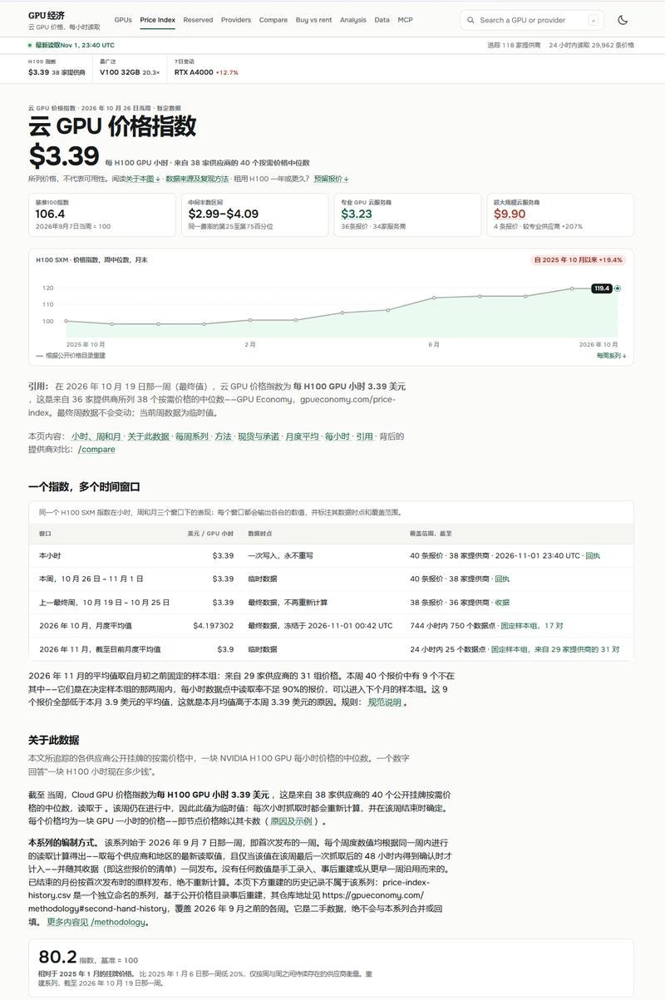
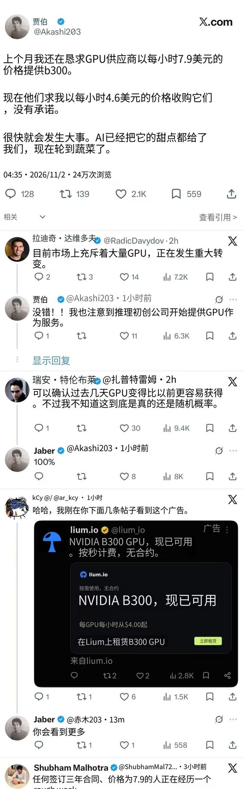

调研纪要 · 2026-11-02 新闻日报
星球 ID: 28855458518111 | 共 330 条帖子 | 精华 74 条
| 查看研究积累
强制同步到研究积累
全部 计算机 电子 机械设备 电力设备 宏观策略 食品饮料 非银金融 其他 传媒 建筑材料 医药生物 基础化工 家用电器 商贸零售 交通运输 环保 汽车 公用事业 农林牧渔 社会服务 通信 美容护理 轻工制造 有色金属 煤炭 纺织服饰 钢铁 建筑装饰 国防军工 石油石化 银行
书签
【广发机械】造船数据最新跟踪：10月订单淡季不淡，船价涨幅超预期
【广发机械】造船数据最新跟踪：10月订单淡季不淡，船价涨幅超预期
#10月新船订单淡季不淡、9月上修后再次实现同比高增。根据Clarksons，10月全球新船订单1140万dwt，修正总吨同比+5.0%，载重吨同比-13.4%，预计上修后仍将实现同比高增。9月订单载重吨同比由上月披露的-9.6%上修至+49.4%，cgt同比+35.1%，延续8月订单上修后同比大幅增长的趋势。#1-10月累计新船订单2.4亿dwt，同比+101.8%。
#集装箱船和LNG船超预期发力。分船型看，10月油轮/散货船/集装箱船/LNG船载重吨同比分别-34.4%/-34.8%/+30.3%/+1355.4%。尽管油轮订单单月同比有所下滑（主要系基数影响），但集装箱船和LNG船订单表现亮眼，支撑行业接单景气，船型间接力进一步彰显本轮周期的持续性。
#新船价格同比涨幅继续扩大、二手船价加速上涨。造船价格指数187.20点，同比+1.26%、环比+0.33%，同比、环比涨幅均较上月扩大。分船型看，油轮新船价同比+6.6%、环比+0.86%；散货新船价同比+6.38%、环比+0.36%，价格继续创新高。#二手船价指数同比+22.1%，涨幅进一步扩大，散货、油轮、集装箱船的二手船价指数同比分别+24%/+54%/+7%。其中油轮二手船价同比涨幅由上月的38%扩大至54%，反映美伊战争对航运供需格局的影响正趋于长期化，船舶资产的战略价值进一步凸显。
#继续看好造船行业景气度的持续性、维持坚定推荐。当前板块整体估值仍然显著低估，我们持续看好并坚定推荐。继续看好松发股份（27年PE约9x）、中国船舶（27年PE约8x）、中国动力（27年PE约12-13x）等船舶龙头。
欢迎索取最新数据库
孙柏阳/汪家豪/黄晓萍
【国金传媒互联网 朱珺团队】AI影视：AI短剧漫剧维持高景气度，内容形态向AI长剧、互动影游及AI综艺等新方向加速拓展
【国金传媒互联网 朱珺团队】AI影视：AI短剧漫剧维持高景气度，内容形态向AI长剧、互动影游及AI综艺等新方向加速拓展
#1、AI短剧漫剧供需持续放量、行业维持高景气度。供给端，2026年1—8月全国上线微短剧43万部，其中AI剧占比超九成，AI内容生产进入规模化阶段。需求端，据QuestMobile，2026年9月红果短剧MAU达4.3亿，yoy+82%；DAU达2.03亿，yoy+127%；人均单日使用时长达166分钟。腾讯旗下“绿泡泡短剧”小程序10月首周周活达8968万，较9月首周+44.1%，平台流量持续增长。
#2、AI影视加速由短向长延伸、AI中长剧及院线电影项目持续落地。1）AI中长剧：9月，中文在线AI中剧《
魔皇大管家 ↗ 》上线，自有IP《
禁区猎人 ↗ 》推进中剧定制合作；芒果TV推出“芒果灵创剧场”，储备《
同行相轻 ↗ 》《
风起玲珑骨 ↗ 》等AI中长剧；爱奇艺真人出演AI季播剧《
不羡鸳鸯只羡仙 ↗ 》第一季计划26Q4上线。2）AI电影：10月23日，博纳影业100分钟AI院线长片《
三星堆：未来往事 ↗ 》正式上映，旗下AI科幻电影《计划外：广寒行动》已于10月开机。
#3、世界模型技术突破叠加平台扶持及PICO新品催化、AI互动剧和互动影游有望加速发展。1）技术端：10月27日，谷歌发布Genie 4世界模型，支持实时场景交互及物理规律模拟；字节世界模型后续进展值得关注。2）平台端：10月19日，抖音启动互动剧、互动影游合作征集，提供联合发行、联合出资及IP联合开发等合作模式。3）端侧：PICO新一代旗舰头显Space Pro有望于26Q4发布，或进一步强化空间计算与混合现实交互能力。4）作品端：字节《
不问凡尘 ↗ 》、奇想无限《零号档案：降临》已上线；中文在线《
藏局 ↗ 》等AI互动剧处于排播筹备阶段，阅文《
神秘复苏 ↗ 》、华策《
代号：迷失 ↗ 》等项目亦在推进中。
#投资建议：AI短剧漫剧已进入规模化生产阶段、模型迭代持续推动AI影视由短向长、由单向观看向实时交互升级、世界模型及PICO新品有望催化互动影游、沉浸式内容等新形态发展、AI艺人及AI综艺加速探索商业化。持续看好具备平台流量、优质IP及AI内容制作能力的公司，建议关注【芒果超媒】【中文在线】【华策影视】【上海电影】【掌阅科技】【德才股份】【昆仑万维】【华是科技】等。
联系：国金传朱珺/柴梦婷
抖音月度美妆数据更新-26年10月
抖音月度美妆数据更新-26年10月
📍【10月抖音美妆销售排名】
TOP1-5：赫莲娜/珀莱雅/雅诗兰蔻/兰蔻/海蓝之谜
TOP6-10：自然堂/韩束/欧莱雅/SK-II/CPB
#外资高端品牌普遍选择在大促冲刺收入、10月单月GMV多超越Q3全季度。 10月美妆销售榜单延续618趋势，TOP5中以高端外资为主，仅珀莱雅排名第二，参考抖音26Q3美妆TOP10榜单中仅欧莱雅/mistine两个外资品牌（分别排名第9-10），可见外资大牌更多在大促阶段集中发力——高端外资品牌单10月GMV超越Q3季度GMV，仅中端定位的欧莱雅Q3GMV>10月GMV，体现外资品牌高端品牌冲大促，大众线做日销的思路。
#外资头部为高达播占比+中高付费流量、国货头部为低达播占比+高付费流量思路。 ①达播结构：10月销售TOP10的外资品牌达播占比多位于40-70%，国货品牌除珀莱雅达播占比约47%外，自然堂/韩束达播占比分别为26%/17%，普遍低于外资达播占比；②付费流量结构：国货头部品牌付费流量占比普遍位于50-70%，低达播占比多搭配高付费流量比重，外资头部品牌付费流量比重多位于45-65%，略低于国货头部占比。
⭐️10月表现较好的品牌集团包括（规模降序）：巨子生物（+34%）、毛戈平（+39%）、若羽臣（+20%）、水羊股份（+67%）、上海家化（+23%）。
#详细数据、点评请参考图片
【中金美妆】10月抖音数据：大促催化下大盘环比小幅回暖，品牌表现分化
【中金美妆】10月抖音数据：大促催化下大盘环比小幅回暖，品牌表现分化
[太阳]行业大盘：美妆大盘10月抖音同比+4%，大促催化下环比Q3提速2ppt；
[太阳]重点公司表现：
💐【毛戈平】：毛戈平抖音10月同比+43%，环比Q3显著提速，且结构健康，自播与达播同步高增，其中达播合作兰知春序毛戈平专场带动月底增长提速；分品类看，彩妆/护肤分别同增36%/64%，护肤提速高增；
💐【林清轩】：林清轩抖音10月同比+33%，延续较快增长势头；
💐【巨子生物】：可复美+可丽金抖音10月同比+26%，环比Q3显著提速；其中可复美焦点面霜占比超15%，新品超透棒占比提升至近10%；
💐【珀莱雅】：珀莱雅+彩棠+悦芙媞+OR+原色波塔+惊时抖音10月同比+4%；
💐【上美股份】：韩束+一叶子+红色小象+一页+安敏优+极方+聚光白抖音10月同比-23%；其中10月安敏优同比+90%，延续较快增长；
💐【贝泰妮】薇诺娜+baby+Aoxmed抖音10月同比+12%，环比Q3有所提速；
💐【上海家化】：佰草集+玉泽+六神抖音10月同比+25%；
💐【水羊股份】：伊菲丹+PA+御泥坊+大水滴+小迷糊抖音10月同比+59%，环比Q3显著提速；其中伊菲丹同比+42%，环比提速，主因达播占比提升13ppt带动；
💐【若羽臣】：绽家+斐萃抖音10月同比+12%，环比Q3提速；其中绽家10月同比+139%，环比提速、单月抖音GMV近2亿创新高，主因双11合作四火姐姐等达播带动洗衣凝珠及香氛洗衣液高增；斐萃10月同比-43%，主因高基数；奥伦纳素同比+3%，增速转正。
注：第三方数据或存在口径差异，具体销售情况请以公司披露为准！
[玫瑰]欢迎联系交流！
【中期选举对 AI 的影响】：
【中期选举对 AI 的影响】：
11月3日中期选举中，有10个州将投票表决数据中心相关限制议案；另有38个辖区计划审议至少41项同类提案。
反对意见并不受党派立场左右。对当地居民而言，他们更关心切身问题：电价是否上涨、水资源能否保障、环境会不会遭到破坏。大家的核心疑问是科技巨头从中赚取高额利润，本地社区却得不到相应收益。
整体政策风向已经转向。今年全美各州一共提出375项相关法案，其中四分之三都偏向约束数据中心建设。就连弗吉尼亚这类传统的数据中心聚集地，也开始收紧审批节奏。
共和党阵营的态度同样发生转变。过去该派系大力支持AI基建落地，如今迫于基层民意压力也开始调整立场。典型例子是得州州长，在农村社区强烈抗议之下，已经叫停部分新项目的审批工作。
简单来说，除算力需求、资金条件之外，地方层面的政治许可，已经变成算力建设一道硬性门槛
机器人的过山车：灵活资金的获利了结和机构参与第二波
机器人的过山车：灵活资金的获利了结和机构参与第二波
1、筹码仍是当下选股的重要考量指标，机器人的波动主要是前期参与第一波的获利了结和机构没能参与的建仓，调结构和建仓。
2、当前时点，最重要❗️找逻辑硬的方向和个股。
第一，数采更看好海外链（能通胀能持续），重点标的：
✔️天机（一级市场估值最贵的双臂）- OAI 【长盈、安培龙】，
✔️sharpa（一级市场最贵的手）-谷歌/英伟达【禾赛科技】，关注【维宏股份】
第二，本体最看好有VLA能力、能在S1模型叫板和改变业态的【上纬新材】，关注宇树科技。
第三，T链能算得过来账【浙江荣泰】，其次科达利、安培龙。
以上，总结重点标的
❗️【长盈、安培龙、上纬、浙江荣泰、禾赛（HK）、维宏股份】。
票不在多&也不用一直扩散，配自己敢上仓位的即可。另外：市场当前对科技硬件悲观，我们还是之前观点：
不仅看好AI应用，也底部继续看好#【AI硬件- 新技术&新二线】。
11月排产更新
11月排产更新
DY：出货保持20w+节奏，持平略增
AL：排产3.5e，销售目标5e，环比持平
JL：Q4亚洲需求仍偏淡，欧洲需求Q4环比提升
GDW：10/11月储能逆变器分别出货4/3.5万台，环降10-15%；10/11月电池分别出货300-350MWh/400MWh，环增20%
锂电：系统运行费有望推动国内储能需求增速恢复，锂电估值低位持续看好
锂电：系统运行费有望推动国内储能需求增速恢复，锂电估值低位持续看好
事件 10月30人，陕西省发改委发布《关于优化分时电价政策有关事项的通知（征求意见稿）》，强调把系统运行费纳入工商业用电分时电价的浮动范围，其中高峰上浮70%、尖峰上浮90%、低谷下浮70%，自27年1月1日起执行，执行期限暂定1年。
地方系统运行费落地+碳酸锂跌价，国内储能IRR回升2-3pct、支撑国内大储需求。我们测算陕西若未来系统运行费均值不变，低谷下浮70%，整体储能系统运行费可节省约0.06元/kWh，带动储能电站IRR回升约1~2pct。碳酸锂由15万高位回落至9万，对应电池成本下移0.03元/wh，储能IRR提升1pct+，合计储能收益率有望提高2-3pct，对投资积极性有显著提振作用，我们预计27年国内储能出货仍可维持30%+增长。
观点重申：
锂电需求增速预期稳健、估值低位。预计26年全球动储需求2826GWh，同比+37%，我们预计27年全球电动车销量增长13%，叠加带电量提升，动力电池增长17%，储能电池预计国内增长30%+，海外维持高增长，国内外合计同增40%+，动储合计增长25%至3520GWh。铜箔Q3涨价落地、盈利明显修复，负极价格传导推进，隔膜盈利环比改善；电池龙头盈利短期受税费影响，后续有望部分传导；铝箔受海外工厂亏损扰动，锂电铝箔经营性盈利整体稳定。短期季节性因素，排产将走弱，但明年3月预计排产将逐步恢复。
投资建议：龙头公司对应27年估值8-12x，处于历史低位，继续强推格局和盈利稳定的龙头电池（推荐宁德时代、亿纬锂能等），以及具备涨价弹性的优质锂电材料龙头，推荐恩捷股份、科达利、尚太科技、璞泰来、佛塑科技、鼎胜新材、天赐材料、湖南裕能、诺德股份、富临精工、星源材质、嘉元科技等。
风险提示：价格竞争超预期。
11月电子纱/布涨价落地，涨幅绝对值环比稳中有增
11月电子纱/布涨价落地，涨幅绝对值环比稳中有增
[太阳]卓创资讯11月电子纱/布价格出炉：1）G75纱价格28750-28850元/吨，环比涨幅3000元/吨，7628厚布价格14.6-14.65元/米，环比涨幅1.5元/米；2）E225纱价格71500元/吨，环比涨幅10500-12500元/吨，2116薄布价格20.2元/米，环比涨幅2.5元/米；3）D450纱价格147500元/吨，环比涨幅27750元/吨，1080薄布价格20.75-20.8元/米，环比涨幅2.5-2.6元/米。考虑提价持续时间已超一年，价格已涨至历史高位，高基数下涨价斜率虽有一定程度放缓，但涨幅绝对值环比依旧保持至少持平，细纱价格绝对涨幅仍有增长。
[太阳]普通E布公司业绩增量依旧来自两方面，一是基于短期织机和纱线约束未被打破，电子布涨价仍有供应端较强支撑，二是结构性改善带来的超额利润，比如厚薄布比例调整、纱线（尤其细纱）外售比例调整等。建议重点关注前期股价回撤力度较大、后续业绩增长确定性强、估值已具备性价比的E布上市标的中国巨石、中材科技、国际复材。
[太阳]风险提示：电子布需求释放不及预期风险；供给投放超预期风险；内部转产节奏不及预期风险。
🔥【国联民生能源】全球煤炭发运到港量周环比上升，中国到港量周环比下降
🔥【国联民生能源】全球煤炭发运到港量周环比上升，中国到港量周环比下降
截至10月25日当周（前一周数据进行了追溯调整）：
🌟全球的周度煤炭发运到港量为2178万吨，周环比+94万吨。主要出口国中，印尼周度发运到港量周环比+44万吨，澳大利亚周环比-59万吨，俄罗斯周环比+59万吨。主要进口国中，中国周度到港量周环比-9万吨，印度周环比+130万吨，欧洲周环比-62万吨。
🌟中国的周度煤炭到港量为561万吨，周环比-9万吨。其中，印尼发运到港量周环比-23万吨，俄罗斯周环比+45万吨，澳大利亚周环比-21万吨。
⏰发布日期：2026年11月2日
⚠风险提示：基于公开资料信息整理，可能存在信息滞后或更新不及时、不全面的风险；任何情况下，不构成投资建议。
☎联系人：国联民生能源开采团队 周泰/李航/王姗姗
建材行业2026年三季报总结：26Q3地产链业绩承压，电子布企业业绩亮眼
建材行业2026年三季报总结：26Q3地产链业绩承压，电子布企业业绩亮眼
[礼物]2026Q3建材板块业绩概览：由于2026Q3地产需求疲软，建材板块整体业绩承压。2026Q3建材板块实现收入1571.36亿元，同比-3%，归母净利润27.7亿元，同比-61%。从收入端来看，2026Q3建材板块降幅较26Q2有所收窄，从利润趋势上来看，2026Q3建材板块降幅较26Q2有所扩大，我们判断，主要因为地产链需求疲软，叠加年初以来原油价格上涨带来的成本压力，消费建材、玻璃、水泥三季度收入业绩均呈现一定程度下滑。
[太阳]水泥：2026Q3行业整体利润承压。由于地产、基建投资增速下行，三季度水泥需求疲软，水泥价格依旧承压，26Q3全国水泥均价约323元/吨，同比下降26元/吨，环比下降10元/吨，进入四季度价格环比小幅上涨，由于煤炭价格有所上涨，成本端也形成一定的支撑。2026Q3水泥企业收入857.65亿元，同比-7.31%，归母净利润约-6.96亿元，同比-119.1%，主要原因为水泥价格持续下行。
[太阳]玻璃：供需格局承压，价格呈下行趋势，2026Q3收入利润继续承压。2026Q3地产竣工面积同比下行，1-9月地产竣工面积同比下降25.1%，需求端依旧承压，浮法玻璃价格整体呈下行趋势，26Q3玻璃价格约1094元/吨，同比下降132元/吨，因此上市玻璃企业业绩持续承压。26Q3玻璃板块实现收入102.4亿元，同比-17.1%，归母净利润-14.37亿元，同比下降468.72%。
[太阳]玻纤：电子布延续高景气度，26Q3玻纤板块业绩亮眼。年初以来，电子布延续月度提价趋势，10月提价后均价约13.15元/米，同比增长202%；电子布延续供不应求的格局，电子布企业业绩弹性凸显；2026Q3玻纤板块收入约226.3亿元，同比+24.99%，归母净利润43.1亿元，同比+172.7%。
[太阳]消费建材：26Q3收入小幅下滑，利润下滑超70%。由于2026Q3地产投资持续下行，需求端疲软，三季度消费建材板块收入端承压，同时叠加年初以来原油价格上涨的影响，大部分消费建材企业成本压力上升，Q3业绩端同比下滑。2026Q3消费建材板块收入384亿元，同比-1.5%，归母净利润为5.9亿元，同比-72.24%，在此轮地产下行周期，大部分消费建材行业供给加速出清，供需格局改善，预计细分行业龙头将进一步提升市场份额。
【行业周报】：器械Q3业绩提升，政策落地逐步明确
【行业周报】：器械Q3业绩提升，政策落地逐步明确
🎉投资要点：1. 器械Q3业绩提升，内需部分回升，出口继续强势拉动；2. 零售药店Q3增速提升，龙头增长领先；3. CDMO景气度稳步提升，头部公司上调业绩指引；4. mRNA癌症疫苗三期临床数据正式发布，关注国内研发趋势；5. AI平台合作陆续落地，干湿闭环催生验证需求
☀️ 医疗器械领域出口持续拉动，国内政策影响已逐步落地，行业增长逐步恢复，推荐【美好医疗】，【迈瑞医疗】，【新产业】，【亚辉龙】；
☀️ ICL竞争持续出清，季度业绩回升，AI赋能拓展新盈利模式，推荐【金域医学】和【迪安诊断】。
☀️ CXO景气度延续，Q3订单延续增长，估值具备提升空间，推荐【药康生物】、【药明康德】、【凯莱英】、【九洲药业】、【益诺思】，关注【药明合联】。
☀️ AI发展加速新药研发，湿实验验证需求增加，订单季度递增，推荐【百普赛斯】，关注【金斯瑞生物科技】，关注产业链配套需求增加机遇，关注【纳微科技】，【赛分科技】，【奥浦迈】。
☀️ 中国企业在MASH领域和减重降糖（GLP-1)领域的进展，有望实现出海突破，推荐【众生药业】。
☀️ mRNA疫苗中国企业跟进研发，推荐【康希诺】，【上海谊众】，关注【云顶新耀】，【石药创新】；中国供应链参与，推荐【昂利康】，关注【键凯科技】。
☀️ 下一代抗 HIV新药授权出海，推荐【艾迪药业】。
☀️ KRAS靶点在胰腺癌等瘤种治疗的持续突破，关注【加科思-B】、【劲方医药-B】，上游产业链配套关注【康龙化成】。
☀️ 关注医疗消费需求的国产化替代和出海突破，推荐【康耐特光学】，关注【时代天使】。
☀️ 零售药店行业持续出清，头部连锁同店增长恢复，外延并购节奏恢复，推荐【益丰药房】和【老百姓】，关注【大参林】。
造纸板块周度跟踪1101：木浆系纸价环比小幅变化，废纸系纸价环比小幅下降，国废价格环比小幅上升
造纸板块周度跟踪1101：木浆系纸价环比小幅变化，废纸系纸价环比小幅下降，国废价格环比小幅上升
#木浆系纸价环比小幅变化。铜版纸4200元/吨，环比不变；双胶纸4313元/吨，环比不变；白卡纸3800元/吨，环比-13元/吨（↓0.34%）；白板纸3475元/吨，环比不变。
#废纸系纸价环比小幅下降。瓦楞纸2998元/吨，环比-70元/吨（↓2.29%）；箱板纸3692元/吨，环比-59元/吨（↓1.56%）。
#外盘浆价10月报价针叶浆和阔叶浆上涨；内盘浆价格环比小幅变化。10月巴西桉木阔叶浆小鸟外盘净价上涨20美元/吨至600美元/吨；UPM公布中国市场10月报价:针叶浆芬欧上涨10美元/吨、桉木浆芬亚上涨20美元/吨；Arauco公布10月报价:针叶浆银星上涨10美元/吨至680美元/吨、阔叶浆明星上涨20美元/吨至610美元/吨、本色浆金星平盘660美元/吨；亚太森博宣布，因近期阔叶浆供应持续紧张，叠加国外海运运费上涨，综合木片到厂成本增加，为保障长协客户的订单交付和供应稳定，自10月1日起阔叶浆接单价格上调150元/吨；巴西书赞桉诺（Suzano）宣布，10月中国及其他亚洲市场漂白阔叶浆价格上调20美元/吨、欧洲市场面价上调50美元/吨，这是该公司下半年第二次在亚洲市场提价、首次在欧洲市场提价；Arauco公布9月报价:针叶浆银星平盘670美元/吨、阔叶浆明星上涨20美元/吨至590美元/吨、本色浆金星上涨10美元/吨至660美元/吨；亚太森博宣布，自9月1日起阔叶浆价格上调150元/吨，将优先保障长协客户供应；SUZANO上调9月阔叶浆报价20美金/吨；内盘针叶浆4762元/吨，环比+11元/吨（↑0.23%）；内盘阔叶浆4630元/吨，环比-3元/吨（↓0.06%）；化机浆3510元/吨，环比不变。
#国废价格环比小幅上升。国废黄板纸1797元/吨，环比+26元/吨（↑1.47%）。
📑 高盛中国收盘速评
📑 高盛中国收盘速评
📊 指数行情：上证综指 3638.03 点，上涨 1.08%；上证 50 指数 2762.54 点，上涨 0.75%；沪深 300 指数 4016.92 点，上涨 0.79%；科创 50 指数 1196.9 点；创业板指 2458.7 点；中证 500 指数 6420 点。
📌 全市场成交额 1.79 万亿元，较前一日上涨 6.5%。
📌 板块表现
✅ 涨幅靠前板块：1. 传媒 2. 消费服务 3. 科技
❌ 表现靠后板块：1. 煤炭 2. 银行 3. 有色金属
📈 中国市场早盘走势震荡，午后大幅拉升，收盘显著走高，投资者交易主要基于对后续更多政策支持举措的预期。
📈 科创 50、创业板以及沪深 300ETF 今日成交额大幅放量。
📈 值得留意的是，成长板块表现跑赢高股息央企，科创 50ETF 资金流入规模最高。
📈 市场看起来是在博弈政策底之后的普涨行情，资金开始布局高弹性板块。
📈 分板块来看，AI 短视频题材交易最为活跃，带动传媒板块上涨 7.58%。
📈 科技硬件个股走势分化。
📈 东山精密受益于三季度业绩超预期而上涨（是少数三季度业绩表现亮眼的硬核科技龙头标的），而光模块、覆铜板相关标的依旧收跌。
📈 机器人板块早盘走弱，午后重新重拾上涨动能。
📈 绿的谐波在业绩披露后上涨 5.83%。
📈 金融板块走势分化，高弹性券商股大幅上涨，资金从银行板块流出。
📈 另一方面，黄金相关标的跟随现货金价走弱大幅下行。
📈 煤炭板块同步走弱。
💸 资金流向：我们交易台的资金流向数据整体偏卖出。
💸 组合方向：买入 CPO、光伏、工业、银行，卖出消费、券商。
💸 芯片板块多空分歧较大，双向交易都比较活跃。
📑 高盛韩国最终点评 —— 谨慎反弹
📑 高盛韩国最终点评 —— 谨慎反弹
📊 指数行情：韩国综合指数（KOSPI）上涨 2.24%，点位 5859.1，成交额 111 亿美元，外资净卖出 2.78 亿美元；韩国创业板（KOSDAQ）上涨 1.38%，点位 734.4，成交额 36 亿美元，外资净卖出 0.24 亿美元。
📈 市场复盘
📌 韩国综合指数今日迎来反弹，主要由本土机构买盘带动（本土自营券商净买入 4.28 亿美元，养老金净买入 1.27 亿美元）。
📌 外资与散户投资者今日持续在韩国综合指数上进行净卖出操作。
📌 半导体板块引领指数反弹（SK 海力士 (000660) 上涨 3.8%，SEC (005930) 上涨 1.8%），两家公司在周五就已经部分消化了美国科技企业财报带来的影响，例如英特尔、亚马逊的财报消息。
📌 低市净率标的同样受到市场关注，韩国交易所已经划定并对外披露 151 家低市净率上市的公司，其中市值超过 1 万亿韩元的标的出现上涨，例如 HD 钢铁 (004020) 上涨 11.6%、乐天购物 (023530) 上涨 9.3%。
📌 造船板块（GS 韩国造船指数上涨 7.7%）和国防板块（GS 韩国国防指数上涨 4.3%）表现跑赢大盘，利好消息为韩华防务美国子公司与 Tote 服务公司签署一份价值 2.69 亿美元的合同，将为美国海军建造一艘中型登陆舰。
📌 不过韩国综合指数的成交较为清淡，较 20 日均值下滑 20.9%，这表明在美国中期选举等关键事件来临前，市场情绪依旧偏向谨慎。
📰 核心要闻
🔹 半导体板块（上涨）：SK 海力士 (000660) 上涨 3.8%，SEC (005930) 上涨 1.8%
📌 在本土机构资金的推动下，两只个股从早盘低点开启反弹行情。
📌 隔夜利好消息较多：10 月半导体出口数据强劲（GIR）；有报道称 OpenAI 的山姆・奥特曼到访韩国期间，和三星、SK 集团高管举行会面。
📌 不过今日的价格变动很大程度由资金流向驱动，美国科技财报带来的利空已经在周五被部分消化。
📌 资金层面，外资今日转为 SEC 的净买入方（净买入 0.9 亿美元），但持续净卖出 SK 海力士（净卖出 1.61 亿美元）。
📌 本土机构同时净买入两只个股，在 SEC 净买入 1.21 亿美元，在 SK 海力士净买入 1.9 亿美元；散户投资者则为净卖出，SEC 净卖出 3.01 亿美元，SK 海力士净卖出 2.95 亿美元。
📌 其他法人资金持续为 SK 海力士提供额外支撑，依托公司回购计划买入 2.66 亿美元。
🔹 SK SQUARE (402340) 上涨 5.9%
📌 在子公司 SK 海力士上周提交公告之后，SK SQUARE 披露了股东回报方案。
📌 根据监管公告：一、SK 海力士 26 财年分红总额预计超过 30 万亿韩元；SK SQUARE 依托持有的股权，预计可以获得超过 6.2 万亿韩元的分红收入。
📌 二、依据 2026 年 3 月公布的 2026–2028 年股东回报政策，原目标为返还不少于 30% 的经常性分红加上投资收益；为匹配 SK 海力士的方案，该公司将 2028 年前的回报比例上调至不少于 60%，同时承诺将铠侠特别分红以及持续产生的部分投资收益 100% 直接分派给股东。
📌 三、具体金额、实施方式以及时间，将在 26 财年财报确认后敲定，并在后续公告中披露。
📌 资金流向方面，本土机构与外资同步净买入（分别净买入 0.24 亿美元、0.17 亿美元），散户投资者获利了结（净卖出 0.41 亿美元）。
🔹 造船 / 国防板块（上涨）：GS 韩国造船指数上涨 7.7%
📌 造船板块今日表现亮眼，韩华海洋 (042660) 上涨 9.8% 领涨，该公司美国子公司 “韩华防务美国” 于周日官宣，和 Tote 服务公司签订价值 2.69 亿美元的合同，为美国海军建造中型登陆舰。
📌 该船将在美国境内由韩华收购的费城船厂建造，这也是韩华在 2024 年 12 月收购这家船厂之后拿到的首笔订单。
📌 其余造船企业以及韩华集团关联公司同步跟涨：韩华航空 (012450) 上涨 6.3%、韩华系统 (272210) 上涨 8.1%、韩华发动机 (082740) 上涨 9.2%。
🔹 低市净率标的（上涨）
📌 韩国交易所划定并披露 151 家低市净率上市的公司（韩国交易所链接），其中韩国综合指数成分股 96 家，韩国创业板成分股 55 家，属于改善韩国资本市场、鼓励长期被低估的公司主动提升企业价值的配套举措。
📌 这批低市净率名单当中，一批市值超 1 万亿韩元的大盘成分股今日跑赢大盘，市场重新重视它们的低估属性，标的包含 HD 钢铁 (004020) 上涨 11.6%、韩华生命 (088350) 上涨 0.7%、乐天购物 (023530) 上涨 9.3%、乐天化学 (011170) 上涨 2.5%、易买得 (139480) 上涨 7.1%。
🔹 HD GLOVIS (086280) 上涨 11.3%
📌 HD GLOVIS 涨幅跑赢所属板块，利好消息为其设在仁川国际机场的物流中心，已经获得韩国海关的正式授权，成为官方快件进口清关站点。
📌 拿到这份许可后，GLOVIS 完成了双向（进口 + 出口）航空货物清关布局，这家公司能够在同一个枢纽内，同时处理海外直购入境订单以及跨境电商的出口订单。
韩国媒体报道称，三星电子已通知客户，将于 2030 年全面退出 8 英寸晶圆代工业务。
韩国媒体报道称，三星电子已通知客户，将于 2030 年全面退出 8 英寸晶圆代工业务。
通胀话题重回财报电话会议，2022年金融危机余波未平。
通胀话题重回财报电话会议，2022年金融危机余波未平。
瑞银分析师表示，市场低估了人工智能周期的长度
瑞银分析师表示，市场低估了人工智能周期的长度
彭博行业研究：到 2030 年中国可能在 17 项战略技术中的 8 项领先
彭博行业研究：到 2030 年中国可能在 17 项战略技术中的 8 项领先
中国在低成本模型方面领先，但在很多 AI 硬件方面也落后。
TrendForce（集邦咨询）：
TrendForce（集邦咨询）：
GPU 交期为 30–45 周，区间上限较上周拉长 5 周。
DRAM 交期缩短至 19 周，较上周减少 1 周。
MLCC 交期拉长至 38 周，较上周增加 3 周。
【天风新材料】久吾高科交流纪要 20261102
【天风新材料】久吾高科交流纪要 20261102
🌟2026全年经营平稳。剔除传统工业分离与环保水处理板块后，盐湖板块基本稳定。#磷铁、废酸回收成为新增量方向，青山、万华等大项目落地，需求来自黄料和白料的粉体洗涤、酸性水处理及废酸回用；公司配套碳化硅膜、管式陶瓷膜形成工艺包。截至三季度，该领域签单量已完成2025年全年计划的绝大部分，储备订单充足，执行比例正常。#三季度项目验收与收入确认规模高于往年同期；四季度为央国企竣工验收集中期，且多为年初获取、执行期约六个月的加急项目。回款端长期账龄老款（含政府项目）回收明显改善，并出现坏账回冲。
🌟收入结构，四大方向：工业流体分离占比约四分之一；废酸回收与磷酸铁略高于四分之一；环保水处理不足四分之一；盐湖提锂当期以吸附剂及小型工程为主，没有大型膜法项目确认收入。膜材料业务增速下滑，是因为新产品多并入整体解决方案销售而非单独元件销售，属于主动的结构选择。
🌟竞争格局：公司在国内无机膜#市场占有率约40%，为行业头部并具备一定定价权；A股可比公司仅三达，其余为未上市企业。陶瓷膜领域海外品牌已基本失去竞争力；有机膜竞争对手为东丽、LG、海德能、杜邦及苏伊士。公司与蓝晓科技在下游客户上高度重叠、技术互为补充亦互为替代，两者在盐湖吸附剂、树脂业务上直接竞争。公司医药应用聚焦发酵类小分子药物，与蓝晓的小核酸、多肽路线形成差异。
🌟新业务：固态电解质。依托无机粉体与烧结工艺积累，双线布局：氧化物（锂镧锆氧、磷酸钛铝锂）与硫化物（先做硫化锂中试）。#南京六合两条中试线预计2026年底至2027年初建成，一期投资三千余万元；年研发投入约五千余万元。当前处于持续送样、配合客户中试阶段，#2027年氧化物路线有望逐步起量。
🌟财务与订单策略：应收账款规模进一步下降，同时营收上升；3-5年长期账龄欠款受化债政策推动加快回收。公司已基本不承接政府端项目，重点考量毛利率与客户回款能力，虽牺牲部分订单规模但提升了订单质量。#在手大额订单：盐湖为新疆国投罗钾在执行项目，磷铁约1.5-2亿元，水处理数千万元级两三个项目，工业分离的海外氯碱项目有望落地。执行周期6-9个月。
#详细会议纪要请联系
☎️联系人：鲍荣富/王丹/于那/周丹丹18117420701/上官京杰/林晓龙/曾子峻
【天风新材料】永冠新材 2026 年三季报交流纪要
【天风新材料】永冠新材 2026 年三季报交流纪要
🔴 收入端稳健增长，毛利率修复。前三季度收入 55 亿元出头，同比+10.1%；归母净利润 1.24 亿元，同比增长约 10.7%；扣非净利润约 1700 万元，同比下滑-9.9%。Q3 单季收入 19 亿元、归母净利润 3000 多万元，同比-61.3%，扣非净利润 670 万元，归母和扣非两项环比均回落；Q3 毛利率 8%，同比 +0.24pct、环比 -1.5pct。
🔴 利润短暂承压原因。一是政府补助确认节奏：Q2 补助集中到位、Q3 偏少，但总额稳定不变。二是成本影响：原材料为原油衍生物，三季度以来价格持续上行；三是费用端，管理与销售费用在收入增长下基本持平，研发费用同比 +22%（投向工业级胶粘材料与电子布）。美元自 4 月起走弱带来汇兑损失，公司外销占比68%（2026H1数据），前三季财务费用从 5632 万元升至 1.19 亿元（+110.7%）。
🔴 主业增长的质量在改善。工业级、车规级、可降解胶粘材料收入与利润同比、环比双增，均已实现单月盈亏平衡并贡献增量。可降解单价同比、环比均涨 25% 以上（自有造纸投产带动结构升级+成本传导），产销率约 50%，原因为涂布环节滞后形成库存产品，非需求不足；行业毛利已至个位数，公司已发涨价函，传导周期约 1 个月。
🔴 电子布最新进展：一期 2000 吨产能对应 300 台设备，当前到位约 50 台（约 10 台调试中），月增 20–30 台，2027 年春节前到位 100–150 台、Q2–Q3 达 300 台；满产月产 600 万米、年产约 7000 万米，#7628布按 12–13 元/米测算对应近 10 亿元收入。2027 年一期产能爬坡，收入指引 4–5 亿元，2028 年一期满产。产品以 7628 为主，2027 年 4 月延伸至 2116、1080型号，配套设备到位后推进 PCB/CCL 大厂认证（目标 1–2 次通过）；Low DK、Low CTE 已储备技术与纱线工艺人员。二期再增 300 台并计划自配电子纱产能。
🔴 电子布价格展望与应收账款。7628 等中低端未来半年仍可涨价，2027 年下半年产能释放后承压；高端布缺口大，涨价预计维持数年。应收账款约 15 亿元，前三季信用减值仅 181 万元，外销占比近 70% 且有中信保 85–90% 赔付覆盖，风险可控。
#详细会议纪要请联系
☎️联系人：鲍荣富/王丹/于那/周丹丹18117420701/上官京杰/林晓龙/曾子峻
❗️❗️【天风家电】谈谈石头科技的变化
❗️❗️【天风家电】谈谈石头科技的变化
#模型已重新更新欢迎找我们更新，我们讲几个重点：
1️⃣Q3超预期在哪？
收入+34.9%逐季抬升，主系：一是国内扫地机收入+30%，与奥维口径相差较大预计主系三方平台价格统计口径含自补部分，导致自补的25Q3基数偏高；二是欧洲扫地机收入增速接近50%、其中线下高双位数增长，线上+30%以上也快于三方统计；三是北美线下翻倍以上增长，8月新增沃尔玛，目前Target/Best Buy/Costco/沃尔玛四大KA全进。
其余符合预期：一是洗地机收入近10亿（+50%+），国内+40%、与行业第一的份额差距进一步缩小，海外高双位数增长且利润率约10%；二是洗烘、割草、泳池三个新品类亏损均未扩大。三是扫地机亚太平稳增长。
2️⃣超预期的可持续性在哪？
国内25Q4依旧自补，因此今年Q4实际情况可能仍好于三方口径；
海外线下渠道，其进展是存在惯性的，北美目前四大KA已全部进入，后续能够作为示范效应进一步增加其他小KA进驻/增加sku铺设，释放大量增长动能。
从亚太的增长来看（此处的亚太是广义的非欧美地区），这个超大的利基市场持续贡献者收入增量和较为稳定的高利润率，确定性也比较高。
竞争格局来看，欧洲此次收入依旧高增恰好验证了#石头在欧洲真正的竞争力，追觅的竞争烈度也是环比走低的，加上国内双寡头格局逐步形成，费用率的降低已经实在反映在两公司报表层面。
其他因素：国内还原真实均价后行业趋稳，新品类连续多个季度符合预期减亏，洗地机保持稳定增长态势
3️⃣市场几个担心，怎么看？
一是欧洲线下高增是不是压货。不是，追觅此前竞争对石头的影响节奏上是Q1被打得最惨、Q2恢复、Q3起势，此次线下高增反映的是渠道提前加库存，终端动销货已不够卖。叠加25Q3低基数和进入国家增多，欧洲线下迎来经营拐点。
二是担心Q4存储成本在报表上会滞后反映，科沃斯存储单季影响同比约5pct，石头毛利率仅-2.2pct。石头Q3存货62.63亿、较年初+136%，采取成本加权平均法，Q3起逐步进毛利。而科沃斯是先进先出，因此也出现两家公司的存储占比区别：石头中高个位数，科沃斯双位数。但我们也要理解，石头Q3也反映了部分高价成本，同时两家公司核心区别是竞争周期，科沃斯享受了一年的活水周期，而石头刚迎来自己的新品周期（提价）+经营周期，存储Q4会有影响但不会那么大。
三是利润率的压力是否是经营性因素。Q3毛利率同/环比分别-2.2/-3.3pcts，净利率-0.1/-2.8pcts，简单梳理影响因素（后我们有段子专门说明），结论是基本都是非经营的一次性扰动：
毛利率：（1）存货按加权平均法核算、按单独料号结转，涨价传导非线性、有一部分后移，不仅影响同比，环比也在持续反映；（2）洗地机同环比的收入占比也在提高；（3）低毛利的线下渠道放量也会带来结构性压力；（4）退税额环比下降较多。
费用率：（1）同比下降较低，财务费用拖累2.7pcts，资产减值损失（存货跌价为主）拖累1.1pcts，所得税同期基数低拖累0.8pcts；（2）环比下降较多，基本是毛利率的影响外，费用率有改善，经营性因素实质变好。
4️⃣这波反弹看到哪里？
此前杀估值是四个原因：行业没有产品周期、追觅扰动、费用投放过多、新品类拖累，最低杀到15x。Q3验证了份额和渠道的变化（国内双品类第一、北美四大KA，欧洲线下高增），费用率延续下行，追觅扰动逐渐降低（短期不会倒，但也仅仅是不会倒而已，最新的政府及市场融资情况可以交流）。
#保守先看修复到400e以上位置，补回中报之后下跌缺口。考虑11月开始估值切换，我们认为有较大机会看到450e+；
【中信建投医药】药明生物签署生物类似药独家开发协议
【中信建投医药】药明生物签署生物类似药独家开发协议
[玫瑰]11月2日，费森尤斯宣布与药明生物签署独家开发协议，获得未来十年内多达37个潜在"首批上市"生物类似药候选产品的独家开发选择权，为迄今生物类似药领域规模最大的开发协议。
[玫瑰]对费森尤斯选定的每个候选产品按服务费向药明生物支付。费森尤斯保留全球独家商业化权利（含上市许可）及各产品全部经济收益。
[玫瑰]新一代项目组合覆盖13个治疗领域，新增神经、肾科、心肺等方向，技术平台涵盖单抗、双抗、ADC与融合蛋白。初期研发聚焦维泊妥珠单抗（Polivy）与替妥木单抗（Tepezza）。通过本次合作，可将费森尤斯目前已上市和在研的29种分子产品组合扩展至多达66种，涵盖超过3700亿欧元的原研药定价销售额。
以上内容来自费森尤斯公告，欢迎联系中信建投医药组交流
【国联民生计算机】🚀道通科技：子公司道和通泰携手生态合作伙伴道通智能、塞防科技发布解决方案品牌AAGI（道通空地智能），介绍面向Physical Agent的“...
【国联民生计算机】🚀道通科技：子公司道和通泰携手生态合作伙伴道通智能、塞防科技发布解决方案品牌AAGI（道通空地智能），介绍面向Physical Agent的“行业大脑”多模态模型及软硬件产品
[Sun]“行业大脑”是道通面向Physical Agent推出的全链路认知决策中枢
仅2B参数级。其核心能力贯穿四环：任务推理与规划（听懂任务）、视觉理解（看懂现场）、空间理解（理解空间）以及工具调用能力。“行业大脑”通过一个中枢，让所有会动的装备学会思考。
[Sun]“行业大脑”可实现低延时决策特效，并在多场景、多装备、多任务上切换
”行业大脑“任务推理与规划准确率达98%，推理时延低于1秒。事件语义理解F1达87.38%，推理仅0.2秒。通过专业配比的海量数据与高性能基座后训练，融合行业知识底座，“行业大脑”换场景、换装备、换任务也能迁移。
[Sun]大会推出AIP平台及Avant Hub 2.0、EIS 2.0、Skyshield 2.0三大行业应用平台
该平台面向巡检和低空安全等行业实际任务，将AI能力、行业数据和空地装备连接起来，让AI进入实际作业流程。AIP以Ontology为核心，关联现场信息、设备能力、执行动作和结果记录。
风险提示：行业竞争加剧，技术进步不及预期
联系人：国联民生计算机吕伟/陈安宇
芒果超媒：内容爆款频现，AI中长剧加速落地，持续看好投资机会【中泰传媒互联网】
芒果超媒：内容爆款频现，AI中长剧加速落地，持续看好投资机会【中泰传媒互联网】
[玫瑰]我们将芒果超媒推荐为11月金股，持续看好其作为稀缺AI影视内容平台型公司的投资机会。
⭐公司内容储备丰富，爆款频现。综艺方面，同步布局《
我们来了 ↗ 》《
后会友期 ↗ 》等创新节目，其中《
后会友期 ↗ 》播放表现亮眼，云合数据显示，其上线后正片有效播放市占率最高达32.6%，排名第一，后续还有《
声生不息 ↗ 》等储备；剧集方面，10月开播的电视剧《
玉簟秋 ↗ 》已达S+级别。此外，公司储备近百部作品，涵盖《
美顺与长生 ↗ 》《
何不同舟渡 ↗ 》等多元题材。
⭐AI中长剧加速落地。公司搭配芒果灵创AIGC内容创作平台创制，推出“灵创剧场”作为精品AIGC内容厂牌，聚焦精品女频中长剧、国风经典IP焕新、少儿动画三大差异化赛道，探索打造第二条内容供给曲线，已上线《
后西游记 ↗ 》《
了不起啊朋友 ↗ 》《永恒：辛追的一生》等多部作品，后续还有《
同行相轻 ↗ 》等重点内容储备。伴随AI内容规模化落地，公司内容成本有望结构性下降，缓解预算压力。
⭐续签关联协议，稳固内容供给与广告协同。公司拟与湖南广播影视集团续签《电视节目信息网络传播权采购协议》，2026-2028年境内标的权利对价5.46亿元/年、与2021-2025年持平，境外权利按对应年度境外标的产生收入的75%分成；同期续签《联合招商框架协议》，在湖南卫视与芒果TV联合招商，按到达人数与点击量等结算新媒体广告收入。
⭐公司2026Q3整体盈利能力实现环比改善，收入进一步提速，毛利率环比提升5.45个百分点，利润端降幅收窄，呈现改善向好趋势。
具体推荐逻辑可参考我们前期外发的公司深度报告，详情见：
芒果超媒：多维支持AI中长剧落地，激活成长新动能【中泰传媒互联网】 ↗
⚡风险提示：文化监管端的政策风险；国有传媒企业优惠政策变动；宏观经济承压；研报使用的信息数据更新不及时的风险；第三方数据失真的风险。
☎ 欢迎交流&派点请支持中泰传媒互联网团队
康雅雯 18521305887、李昱喆 18939881981
美团发布LongCat-2.5大模型，“国芯国模”实现新突破
美团发布LongCat-2.5大模型，“国芯国模”实现新突破
11月2日｜美团发布新一代大模型LongCat-2.5，这是一款面向长程智能体任务的原生多模态模型，总参数1.6万亿。LongCat-2.5延续了此前LongCat系列模型的研发方向，全程在国产算力上训练，是目前国产算力上完成的最大训练任务。LongCat-2.5的发布，标志着“国芯国模”更进一步：不仅原生支持多模态，模型整体能力也比肩当前国际成熟闭源模型和头部开源模型。
🍁🍁🍁hcdx 科翔股份：85亿高端算力PCB扩产彰显订单信心，陶瓷混压pcb进展顺利
🍁🍁🍁hcdx 科翔股份：85亿高端算力PCB扩产彰显订单信心，陶瓷混压pcb进展顺利
⭐事件：公司公告拟于惠州、九江两地投建三大AI算力PCB项目，合计投资规模85亿，同步披露H股发行并港交所上市预案，融资配套本次高端产能扩张 。
- 惠州35亿投资：科翔智算年产50万㎡AI算力PCB项目，面向AI服务器高端PCB；
- 九江30亿投资：AI算力服务器板项目，产能20万㎡，主打26层+高多层板、六阶以上HDI、陶瓷混压HDI板，适配AI加速卡、服务器主板/中背板、高速交换板；
- 惠州20亿投资：高端AI算力PCB基板项目，建设期2年，新增4.6万㎡ mSAP基板+120万㎡服务器基板，配套1.6T/3.2T光模块需求 。
🍁本次扩产聚焦AI服务器PCB、HDI&陶瓷混压板、AI算力PCB三大方向，彰显公司对未来AI PCB业务的信心。尤其是陶瓷混压pcb技术方案，公告将其纳入新建产线产品矩阵，意味着客户验证、工艺良率已经达到可以规划量产的阶段，更意味着公司看好该路线未来市场空间和斩获订单的确定性。
🍁投资建议：公司在mSAP基板、超高阶HDI、陶瓷混压PCB配套布局升级产线。主业迎业绩拐点，27年有望实现15-20亿利润，陶瓷混压pcb技术叙事开始落地为资本开支、产能规划，确定性再上台阶，继续重点看好！
【绿联科技】继续推荐：主业韧性延续，海外渠道拓展与智能存储布局支撑中长期成长
【绿联科技】继续推荐：主业韧性延续，海外渠道拓展与智能存储布局支撑中长期成长
[玫瑰]海外增长韧性较强，渠道拓展仍有空间。
1）业绩端，公司单Q3营收33.60亿元/+34.03%，归母净利润2.72亿元/+41.73%，扣非归母净利润2.70亿元/+43.92%，业绩增长主要来自经常性主业增长。
2）分地区看，2026Q3欧美市场在去年高基数下仍实现约55%~60%的收入增长。当前欧美线下渠道占比尚不足10%，公司持续推进主流KA渠道、DTC及本地化团队建设，有望扩大用户覆盖、提升渠道经营效率。国内方面，公司将进一步拓展线下及即时零售渠道，预计线下增速持续优于线上，为增长提供补充。
[玫瑰]充电业务Q3受产品切换扰动，关注后续销售改善。新旧国标切换期间，公司主动控制投放节奏，统筹旧品库存消化与新品导入，阶段影响Q3国内移动电源表现。预计Q4充电业务仍将增长，但促销及发货错期、同期高基数等因素带来一定压力。随着新国标产品逐步导入，2027Q1国内移动电源有望迎来较好增长，产品安全、供应链及品牌积累有望成为竞争优势。
[玫瑰]NAS成本压力整体可控，提供中长期成长空间。Q3存储业务毛利率有所回落，但毛利额未下降，公司通过优化产品及区域结构应对成本上涨，影响整体较为可控。长期来看，采购成本逐步更新，当前成本并非最高位，预计2027年Q2或Q3成本将较2026年Q2、Q3略有升高，但整体NAS成本涨幅相对温和，在现有定价体系下仍可控，部分机型仍可贡献销售利润。公司依托消费级NAS，向AI NAS与Home Agent等新方向拓展，支撑中长期发展空间。
＃绿色动力【上海】反路演【东吴环保】
＃绿色动力【上海】反路演【东吴环保】
[玫瑰]时间：11.4 15:00-16:00可约
[玫瑰]出席：董秘朱总，证代李总
1.内生增长超预期可持续：26Q2业绩同增34%大超预期（提效，降本，大力收垃圾，华南发力），26Q3剔除信用减值影响同增29％，且垃圾量、供热增速较上半年提速。26全年保守预测8+亿元（同比30%+），A股pe13倍出头！
＃本质上是roe7.5%提升空间大。最直观的数字，4.11万吨/日规模按行业基础水平70元的吨净利水平，业绩10亿起步，达到两年前老瀚蓝的水平＝12亿。比上修后的26年业绩还有50%空间！
2.分红高：港股动态股息率6.2%，A股4.2%。（分红规划保证dps不下降，比例不低于50%，26中期派息同比提升1分，26全年预计分红可维持60%+）
＃看12亿叠加15倍pe（分红率60%以上）180亿、80%空间！绿色动力很有希望成为板块内不靠资本开支自然增长空间最大！股息率最高的公司！
【中金基材】华新建材
【中金基材】华新建材
[玫瑰]公司后续看点：菲律宾项目获股东大会批准，巴西项目签署排他性协议，海外效益拾级而上。（1）菲律宾项目：根据公司公告，股东会已于2026/10/30通过菲律宾项目，公司或通过另一全资子公司分两阶段收购 Holderfin B.V.间接及直接持有的HPI股权，其中第一阶段以100%股权对应的HPI企业价值7.8亿美元为定价基础，收购其67.623%股权，合计产能或达900万吨。（2）巴西项目：根据公司公告，公司与CSN在2026/10/30签订排他性协议，交易估值相当于158.68亿元，CSN拟出售巴西水泥业务产能达1700万吨/年。
[玫瑰]考虑到公司海外业务销量、盈利改善，我们上调26e/27e归母净利润3.8%/12.1%至38.5/50.3亿元，当前股价对应2026/27E 12x/9x P/E。我们维持跑赢行业评级，我们维持目标价31.50元，对应2026/27E 17x/13x P/E，隐含47%的上行空间。
【永兴股份】26Q1-3业绩同增11%；26Q3单季度业绩同增9%，信用减值冲回
【永兴股份】26Q1-3业绩同增11%；26Q3单季度业绩同增9%，信用减值冲回
#26Q1-3公司营收34.33亿元、同增5.61%；归母净利润8.31亿元，同增11.49%；销售毛利率41.66%、同减2.16pct，毛利14.30亿元、同增+0.40%；加权平均ROE 7.57%、同增0.51pct。#归母增速高于收入增速主要系： 1）投资收益0.46亿元、同增0.31亿元，主要系上年同期存在因收购忻州项目导致长期股权投资由权益法转为成本法的影响；2）所得税费用0.78亿元、同减0.30亿元，实际税率8.42%、同降3.96pct，主要系以前期间所得税调整的冲减（根据26H1中报）；3）其他收益0.58亿元、同增0.16亿元；4）信用减值损失转回0.13亿元（上年同期转回0.01亿元）、资产减值损失转回0.03亿元，合计增厚0.14亿元。
#单季度看，26Q3归母同增8.64%，信用减值转回是主要增量。26Q3单季营收11.80亿元、同减0.46%；归母净利润3.09亿元、同增8.64%；销售毛利率42.33%、同减2.31pct；加权平均ROE 2.81%、同增0.13pct。#Q3业绩增长主要来自： 1）信用减值损失转回0.30亿元，上年同期为计提0.10亿元，同比增厚0.40亿元；2）其他收益0.28亿元、同比增加0.15亿元。
#现金流持续向好，自由现金流同增24.9%。26Q1-3公司经营性现金流净额18.12亿元、同增22.45%，净现比2.15（上年同期1.95）；购建固定资产、无形资产和其他长期资产支付的现金4.27亿元、同增15.0%；我们测算简易自由现金流13.85亿元、同增24.9%，现金流状况持续向好，为高分红提供支撑。#费用管控良好，26Q1-3公司期间费用率16.11%、同降0.97pct。
#积极拓展供热业务，有望成为新增量。2026H1公司对外提供蒸汽13.20万吨，同比增长49.49%。公司正全力推进从化、增城、南沙、花都等区域重点供热管网建设项目，供热有望成为未来重要增长点。
数据来源：根据26三季报、公司公告梳理
------------------
[红包]【中信互联网】《 》热度和口碑持续提升，建议关注头部游戏公司
[红包]【中信互联网】《
影之刃零 ↗ 》热度和口碑持续提升，建议关注头部游戏公司
[咖啡]《
影之刃零 ↗ 》热度与口碑持续提升。截至11月2日，Steam最高同时在线突破83万人，官方宣布发售72小时全平台销量突破400万份，玩家好评率从首发约79%回升至约90%。从体验看，第一章质量相对一般，但后续章节质量逐步提升，动作、场景和Boss设计的优势更加突出，随着玩家深入体验，口碑持续改善。
[咖啡]优质3A持续推出，有助于国内非移动扩容和出海。《
影之刃零 ↗ 》是《
黑神话 ↗ 》之后又一款获得市场认可的高品质国产单机。我们认为，国内非移动需求一直存在，优质供给能够推动需求释放；海外则可通过持续推出优秀作品，逐步建立玩家对中国3A的认知与口碑。随着更多高品质网游、单机推出，我们继续看好多端化、全球化带来的增长机会。
[咖啡]版号持续发放，支持后续新品供给。10月共195款游戏获批，其中国产183款、进口12款，为储备产品上线提供支持，有助于行业新品持续接续。
[太阳]建议关注头部游戏公司，重点跟踪非移动扩容与AI游戏两条主线。非移动方向，关注研发、发行和长线运营积累深厚的腾讯、网易；AI游戏方向，关注心动、Roblox等公司的产品与技术进展。
[玫瑰]欢迎联系中信证券互联网团队
#关注港股AI内容公司【建投AI互联网】
#关注港股AI内容公司【建投AI互联网】
#心动公司：AI工具+平台分发
1）AI工具 ：已推出AI游戏创作智能体TapTap制造，支持自然语言生成游戏并发布至TapTap；
2）发行平台 ：近期我们关注到头部创作者获得的收入分成改善，预估Tap制造的广告流水有提升。
核心观点：AI降低游戏创作门槛，TapTap兼具创作工具与分发入口；估值低，预计明年PE~11x。
#阅文集团：IP储备与改编空间
1）IP ：《
绍宋 ↗ 》改编自旗下起点IP，与猫眼合作的互动影游《
神秘复苏 ↗ 》正在开发；公司披露IP改编比例不足千分之一。
2）AI工具 ：以DramaBuddy布局AI漫剧制作，连接IP、制作与发行。
核心观点：AI帮助中长尾IP打开变现空间，业绩逐步兑现。上半年IP运营收入16.91亿元，同比+40.3%。
#猫眼娱乐：低估值出品&发行。《绍宋：还我河山》为公司联合出品、联合开发并发行，与阅文合作的《
神秘复苏 ↗ 》。
核心观点：叠加电影有望底部修复，跨年《
复联5 ↗ 》&春节《
流浪地球3 ↗ 》等；估值低，预计明年PE<10x。
建投AI互联网团队
【广发电子】澜起科技调研更新20261102
【广发电子】澜起科技调研更新20261102
———————————————
1、Agent驱动CPU侧内存模组用量提升。CPU的通道数增加。高容量内存模组改为更多的低容量内存模组。
2、截至2026年10月26日，公司预计在2026Q4【交付】的互连类芯片【在手订单】金额为人民币25.0~27.9亿元。季度环比加速，同比加速。
3、CPU内存模条2026年预计3亿根，27年5千万颗CPU*10根内存条=5亿根，30年预计达10亿根。
4、DDR6时代，单个内存条将配备2个RCD（目前DDR5是1颗）。
———————————————
广发电子团队
奇瑞汽车26Q3业绩会要点_20261102
奇瑞汽车26Q3业绩会要点_20261102
1、经营表现
1）销量：26Q1-3销量207.7万，其中海外149.9万、国内57.7万；新能源销量78.58万，新能源渗透率37.8%，燃油车129.1万。
2）收入：26Q1-3营收2,412亿元，同比+12.3%；26Q3营收980亿元，环比+33%。
3）毛利：26Q1-3毛利率16.17%，同比+2.46pct；26Q3毛利率16.3%，环比+0.2pct。
4）净利：26Q1-3归母净利润139.6亿元，同比-2.8%，主要受汇兑损失影响；调整汇兑及资产处置等因素后，核心归母净利润153.8亿元，同比+57%。Q3核心归母净利润58.24亿元，环比+5.1%。
5）Q3核心净利润口径：归母净利润-汇兑收益-资产处置收益-交易性金融资产公允价值变动（6.5亿，其中长鑫8亿）
2、海外
1）海外贡献：海外收入占比超过70%，西欧市场增长较快，英国9月再次登顶当地汽车销售榜第一
2）单车净利：海外1.0-1.1万
2）区域布局：26Q1-3西欧（含英国）销量占海外总销量25.8%，中南美洲占15.9%，东欧、亚太、中东非洲各约20%，俄罗斯约18%。
3）产能布局：海外自有及合资产能约50万辆，合作产能约30万辆；加快西班牙、巴西、南非等地本地化生产。
4）欧洲配额：加大不受影响的HEV、BEV出口，西班牙工厂当前产能7-8万，第二期10万产能改造接近完成。
5）生产成本：综合考虑关税、物流成本，海外生产与国内CBU整体成本基本一致。
6）产品规划：逐步导入lepas4/6/8，后续推出jaecoo9；freeland神行者计划27年导入中东，28年导入英国；智界V9计划率先在中东销售。
7）增长方向：预计27年西欧、亚太、中东及非洲市场增速高于平均水平。
3、内销
1）经营现状：国内销量自6月起逐月环比改善，目前国内业务仍略有亏损。
2）产品规划：27年推出QQ5、风云系列2-3款纯电车型，智界、星途均有新车，捷途纵横会做较大调整。
3）盈利目标：通过补齐纯电产品矩阵、优化渠道及产品结构，推动27年国内业务盈亏平衡或略有盈利。
4、原料、成本、费用
1）原材料：Q3单车原材料成本增幅约3,000元，略高于Q2的2500-3000元。
2）电池：季度议价，预计后续价格平稳，计划27年电池自供比例提升至20%以上。
3）出口退税影响：经销商、渠道及公司、海外消费者各承担1/3。
4）研发投入：26Q1-Q3同比+0.9pct，主要是芯片、电池、机器人方向投入，今年是投入期，研发人员增长快，预计明年保持平稳。
5、展望
1）26年：预计销量295-300万，表观归母净利润195-200亿。
2）27年：2027年销量及利润均同比增长20%。
3）库存：目标降到1以下，目前去库应该接近尾声。
【华创家电】飞科电器调研要点
【华创家电】飞科电器调研要点
大单品F8：F8去年8月上市，到今年520开始起量，约9个月成为大单品，目前占剃须刀销售32%，加小飞碟（15%）两款合计四十几个点。F8女性占比仍70%，送礼属性没变，新锐白领和城市中产人群较小飞碟翻倍；当前一线城市占比偏低，后续看599元一线会放量打爆时点。
毛利率：今年提升主要是综合物流成本下降及产品高端化，后续F8等高价高毛利产品占比提升，毛利率预计持续改善。
博锐：今年投入明显加大，新品推新节奏比飞科更快；后续200元以下（现阶段150元以下）全部给博锐，远期至少20亿体量规划。
品牌升级中长期逻辑：战略几年未变，品类不扩、聚焦品牌升级、做大单品。高端化最难的是品牌认知、流量切换和人群切换，升级比降级难得多，飞科主力价格带定在399-599元，下一步往599元走。
出海：不做跨境电商，走高起点品牌路线，找高端连锁经销商、靠经销商拓渠道，东南亚先做（马来、印尼起步，印尼要求本地控股），欧洲因合规慢一年。海外人员去年到今年在扩，泰国建厂看量。
☎#欢迎与我们交流观点细节及模型拆分，韩星雨18652689415/杨家琛18621058152
【东吴商社】绿联科技2026Q3业绩交流会：充电与渠道继续拓展，NAS后续关注销量及费用摊薄
【东吴商社】绿联科技2026Q3业绩交流会：充电与渠道继续拓展，NAS后续关注销量及费用摊薄
#收入拆分
2026年Q1-Q3：
充电创意：收入超40亿元，同比增长超40%，Q3境内移动电源收入下降，境外移动电源增速有所放缓。
智能办公：收入超20亿元，同比增长超40%，拓展坞向外接算力延伸，与NAS形成协同。
智能影音：收入超10亿元，同比增长超30%，持续通过新品推动体验升级。
智能存储：收入超10亿元，同比增长超50%，NAS今年增速预计有所放缓，iDX6011 Pro线下渠道持续导入。
#收入展望：
2026Q4充电业务预计继续增长，压力大于Q3，2027Q1国内移动电源有望取得较好增长。
#渠道情况
海外渠道：中长期海外收入占比有望提升，目前欧美线下渠道占比可能仍不足两位数，日本加大本地化及线下投入。
国内渠道：线上增长动能相对较弱，继续提升线下占比，即时零售是重要增长来源。
#NAS成本与竞争
NAS盈利：Q3毛利率较上半年回落，海外占比提升降低推广及运输费用率，整体边际贡献额受影响有限。
存储成本：2027Q2至Q3可能进一步体现较高采购成本，继续通过提价及产品、渠道结构优化应对。
销量重点：销量增长是摊薄研发及中后台费用的关键，持续改善产品体验和用户黏性，毛利率维持相对可控水平。
行业竞争：消费级NAS新进入者增加，有助于提升认知和扩大市场，长期竞争取决于数据安全、系统成熟度、持续维护及生态积累。
#费用情况及汇兑影响
盈利变化：2026Q3净利率8.1%同比及环比均提升，剔除退税影响后毛利率环比仍提升。智能存储及端侧AI保持持续投入。Q4预计有众筹费用影响及国标切换带来的成本增加。
汇率影响：Q3汇兑损失绝对金额及汇损率较Q2下降，对净利润拖累减轻。
#新品进度
Home Agent：众筹和交付小幅顺延，交付前继续完善安装配置、日常交互及设备协同体验。
完整内容欢迎私信：东吴商社 吴劲草/张桉桉/阳靖
本条星级：🔥🔥🔥
【安克创新+绿联科技等】亚马逊数据更新及观点更新
【安克创新+绿联科技等】亚马逊数据更新及观点更新
🔥#亚马逊数据：10月预估安克维持稳健，绿联&极米延续前三季度高增长
#绿联科技：预估10月GMV同比+116%（Q1/Q2/Q3同比分别+61%/+44%/+52%，9月同比+102%），延续高增长。
#安克创新：预估10月GMV同比+13%（Q1/Q2/Q3同比分别+18%/+31%/+17%），整体维持稳健增长。其中#10月充电储能/智能音频/智能安防+母婴GMV同比分别+20%/+17%/-10%。
#极米科技：预估10月GMV同比+60%（Q1/Q2/Q3同比分别+45%/+88%/+59%），北美翻倍左右增长，日本增速双位数。
❗#注：10月为近30日数据预估，与10月最终数据会有点偏差。绿联三方数据同期是低基数与财报有所差异建议参考趋势为主；安克剔除数据偏离值较大扫地机业务；极米数据为美亚+德亚+法亚+日亚，后续将补充其他站点。
🔥#绿联科技观点更新：Q4预计欧美不错增长，但会有众筹等额外费用和成本。重点看27年，是智慧生活新业务元年
（1）#收入： Q4目前10月虽然三方数据高增长，但#考虑基数差异预计增速绝对值参考意义不大，不过可以参考趋势预计欧美增速应该会还不错；国内预计仍有压力。#27年，传统主业仍有渠道拓展+提份额逻辑，HomeAgent+智能家居生态构建的智慧生活新业务长期空间大，收入有机会保持30%+增长。
（2）#利润：相较于Q3，Q4有会多几千万众筹费用以及移动电源国标切换带来的成本增加。
🔥#安克创新观点更新：看好Q4增速回升，27年是安防产品大年+储能区域拓展+健康类新品类发布
Q3增速拆解，#PD错期+安防调整阶段性影响。（1）#储能：预计Q3在供给恢复和新品确收后增速回升至大几十，储能需求暂未出现问题；（2）#小充：预计Q3增速虽环比放缓但仍有小双位数，PD错期有影响；（3）#智能音频：预计Q3增速虽环比放缓但仍10%左右增长，PD错期有影响；（4）#智能创新： 扫地机压力仍较大，#智能安防受渠道调整+PD错期+迭代新品未上市（Q3老品销售为主）等多重影响预计Q3一定程度下滑，母婴为该事业部增长核心。
Q4展望，预计#增速有望回升。（1）#储能：欧洲阳台储需求旺盛+S5000等新品发售+澳洲户储XE上市，预计将继续维持高增；（2）#小充：同期低基数，叠加高客单新品放量预计增速不低；（3）#智能安防： 渠道调整逐步到位，S4/E50/窗户摄像头/S1等新品10月集中发售，#增速有望环比提升。（4）#扫地机：虽有压力但25Q4已进入低基数。
27年展望，#安防产品大年+健康类新品发布+储能区域拓宽等，收入有望继续维持20%+增长。（1）#智能安防：围绕Mindbase的智能家居生态空间大，当前#公司摄像头/门铃/门锁/传感器等欧美量份额不到10%。传统智能家居生态硬件入口以Amazon/Google/Apple为主，#Mindbase将提供本地存储+Agent分析的新硬件入口，10月发布新品也将全年销售。（2）#储能：澳洲户储依托XE和OSW销售网络将放量，欧洲阳台储重点发力英国/荷兰市场。（3）#健康类：正式切入助听器市场。
【申万电子+通信】华勤技术推荐：高速交换机规模突破，超节点率先放量
【申万电子+通信】华勤技术推荐：高速交换机规模突破，超节点率先放量
#行业层面、海外非英伟达百卡、千卡级Scale-up进入工程化落地阶段。
商用GPU层面，AMD Helios采用基于以太网的UALink，搭载博通TH6，26H2开始部署。
自研ASIC层面，META、微软、OpenAI下一代方案均将采用基于以太网的Scale-up。
泛以太网Scale-up生态，从协议到整机进展显著加速，而国内CSP也是开放协议的重要推动方，我们认为这将提升年底至27年国内基于以太网超节点的认证与放量加速。
#华勤技术核心看点：
1）当前超节点整机柜（含switch tray）交付国内最快厂商。公司26Q3超节点（含switch tray）收入超60亿，月度稳定交付百柜级规模，已切入头部CSP。预计全年营收超百亿。27年数倍增长。
2）Scale-out侧高速交换机持续实现规模突破。华勤在数据中心交换机已切入前三大CSP客户，25年营收近30亿，预计26-27年营收60、120亿元，规模效应下毛利率持续优化。
3）移动终端中，手机保持行业头部地位，智能穿戴ODM行业第一，笔电业务逆势高增；AIoT业务营收增长近70%；创新业务同比增长119%。
我们预计2026年归母净利润60亿，对应PE仅 17x。
#【三祥新材】锆铪分离项目-调研反馈：投产在即！ 【浙商化工&算力 杨占魁】
#【三祥新材】锆铪分离项目-调研反馈：投产在即！ 【浙商化工&算力 杨占魁】
⭕️建设情况：量产线一期投产在即，项目一期锆、铪单体设备联动调试中。其中铪线自9月顺利运行至今，#产出铪成品已1吨有余（纯度2N-5N），质量、环保及经济性超预期。锆铪分离项目二期建设手续已经完成，#全部投产后氧化铪产能将达130吨。
⭕️送样情况：公司中试线产品已经送样国内核心客户，包括靶材、半导体前驱体及光学客户；与国内外头部存储厂有对接；#预计在年底前形成吨级产品销售。
⭕️ 价格：电子级氧化铪，#4N级在国内商谈价格约1000万元/吨，#5N级价格将会更高。海外部分铪散单成交价超8000万元/吨，公司正在与部分海外客户接触，有望出口兑现更多业绩。
欢迎联系【浙商化工&算力 杨占魁】#索要完整版本调研笔记
[红包]浙商机械 邱世梁|王华君【金刚石散热】沃尔德单晶方案中标曙光数创金刚石散热招标，单晶金刚石、金刚石铜有望率先产业化，持续推荐！[福][福][福]
[红包]浙商机械 邱世梁|王华君【金刚石散热】沃尔德单晶方案中标曙光数创金刚石散热招标，单晶金刚石、金刚石铜有望率先产业化，持续推荐！[福][福][福]
1⃣曙光数创纯金刚石散热片招标结果落地，沃尔德单晶方案中标
据沃尔德公告，AIDC液冷基础设施提供商曙光数创招标金刚石散热方案，#同时选择了单晶和多晶金刚石方案。招标结果：#沃尔德单晶金刚石方案中标，成为供应商之一。
此前曙光数创母公司中科曙光推出的曙光8000（我国首个全国产十万卡AI超集群），#采用金刚石铜作为散热材料，未来或将多技术路线同时布局。
2⃣我们预计单晶金刚石、金刚石铜有望率先产业化
1）单晶金刚石：#热导率最高，长晶速度快，可用于Chip-to-Wafer键合。
2）多晶金刚石：目前散热片尺寸可达8英寸以上，可用于Wafer-to-Wafer键合。
3）金刚石铜：#相较纯金刚石可加工性更优，成本更低。目前已落地我国首个全国产十万卡AI超集群曙光8000、联想部分型号笔记本等。
目前#金刚石产业化已被写入国家规划，已落地十万卡AI超集群曙光8000、H200服务器。美国热管理公司已发布金刚石冷板方案，#台积电有望导入高端AI芯片散热。
3⃣头部企业产业化进展加速，未来有望“订单为王”，例如：
①九州一轨：投建金刚石芯片基板建设项目（一期），产品覆盖单晶、多晶金刚石片，#项目部分分包合同已经落地。
②国机精工：金刚石铜、单晶、多晶金刚石均已向重点客户送样验证，#年内有望获小批量订单。
③四方达：#金刚石散热片已取得小批量测试订单，控股子公司天璇半导体（合计持股50.3%）拟投资4.5亿元扩产CVD金刚石散热片，#达产后可实现年产2.5万片4英寸级CVD金刚石散热片。
④斯莱克：与北科大联合开发的金刚石铜复合冷板项目#已完成样品开发与性能验证，后续#将启动量产前置工作。
⑤杰美特：子公司戴尔蒙德（持股52%）拥有全国最大的CVD纳米金刚石涂层产业化基地，#CVD金刚石涂层成本、交付优势显著。
⑥宏昌科技：拟收购昆吾半导体和尤品新材料各45%股权，#标的公司核心产品包括金刚石散热材料。
⑦沃尔德：投资5.2亿元扩产金刚石散热衬底，#达产后年产能65万片。单晶金刚石方案中标曙光数创金刚石散热招标。
⑧黄河旋风：拥有国内首条8英寸金刚石热沉片生产线，#大尺寸热沉片已经通过华为、中芯国际等头部企业验证。
[太阳]投资建议：推荐九州一轨、国机精工、四方达、斯莱克、杰美特等；关注宏昌科技、沃尔德、黄河旋风、晶盛机电、中兵红箭、力量钻石。
风险提示：市场需求不及预期、技术迭代不及预期、市场竞争加剧
☎【浙商机械 邱世梁/王华君18610723118/蒋逸18158576706/秦乐恒15221680140】
【中泰机械| 奥普特】继续大涨！！物理AI落地最佳场景，预期差大，业绩快速兑现！坚定推荐！
【中泰机械| 奥普特】继续大涨！！物理AI落地最佳场景，预期差大，业绩快速兑现！坚定推荐！
1️⃣物理AI→数据为王。物理A落地关键在于数据，模型可以基于开源模型开发，工业级数据必驻场拍摄、筛选，再经客户认证。数据量级直接决定模型响应和训练速度，掌握海量有效数据样本就是掌握核心优势，壁垒极高！
2️⃣奥普特逆周期数据积累优势凸显。上市以来，公司人数从1000多人增至26年底约4000人，增加人员核心在于配合A客户等客户驻场采集数据（拍照→筛选→认证），耗时3-4年沉淀出千万级独家有效缺陷样本数据。同期基恩士、康耐视等在物理AI数据端人力投入少，奥普特在数据端护城河深厚。
3️⃣物理AI已进入业绩兑现期。公司物理AI业务已从投入全面跨入业绩兑现期，25年拿下A客户首个量产订单，26前三季度物理AI收入3亿+，全年预期上修至4亿以上，2027年预计进一步翻倍至6亿以上。预期差极大！
[闪电]风险提示：物理AI进展不及预期
[玫瑰]联系人：谢校辉/王子杰/邢博阳
📈📈📈 【物理AI｜场景龙头】井松智能：订单充沛与产能扩容，物理AI打开第二增长曲线 20261102
📈📈📈 【物理AI｜场景龙头】井松智能：订单充沛与产能扩容，物理AI打开第二增长曲线 20261102
1️⃣ 订阅充沛、业绩拐点初现。当前，在手订单达15亿元，#其中FMR智能叉车订单2亿元余、海外订单约2亿元，覆盖基础化工、有色金属、快消、新能源四大聚焦行业。公司一期工厂设计产能10亿元已满产饱和，#二期工厂设计产能16亿元于2026年年底试产爬坡，2027年全面达产后公司总产能近30亿元、相当于2025年全年营收（10.35亿元）的近3倍；
2️⃣ 物理AI“模型×数据×场景”闭环。公司FMR替代经济性（小车约1年、大车1.5年回本）与仅约2.2%渗透率（2025年叉车销量145万台、电动化率80%），#打开千亿市场空间；此外，公司2011年即把移动机器人推向市场，#沉淀行业数据；物流场景AI模型按分级路径演，完整版年底部署，#把交付从“依赖公司实施”变为“客户自主使用”；
3️⃣ 具身人形机器人加速下沉落地。公司2025年10月CeMAT全球首发轮足式人形机器人工程样机（负载30公斤）、2026年10月发布商用级“轮足融合”机型，2027年样机进入客户现场，大客户已在催单。#技术路线上公司坚持“本体+大脑”一体自研；#垂类模型赋于人形机器人自主感知与动态决策能力，完成#“智能仓储→智能叉车→通用仓储机器人”赛道升维，#明后年海外变现窗口（XGEN ROBOT品牌、4个海外服务中心、境外收入占比10.2%）提供第二重弹性。
❗️建议底部关注！
中国采购美国农产品步伐缓慢，考验170亿美元贸易承诺
中国采购美国农产品步伐缓慢，考验170亿美元贸易承诺
NVIDIA 在首批量产硬件到来之际更新 Rubin GPU 规格
NVIDIA 在首批量产硬件到来之际更新 Rubin GPU 规格
Anthropic PBC 计划通过在美国的首次公开募股，从日本投资者那里筹集高达 35 亿美元的资金。
Anthropic PBC 计划通过在美国的首次公开募股，从日本投资者那里筹集高达 35 亿美元的资金。
尽管利润有所增长，但中国太阳能市场的复苏仍任重道远。
尽管利润有所增长，但中国太阳能市场的复苏仍任重道远。
《关于第三次互换便利（SFISF）启动招标》的解读
《关于第三次互换便利（SFISF）启动招标》的解读
[烟花]央行这次SFISF招标，不是直接印钱买股票，而是给券商、基金、保险开了一条更顺畅的融资通道。机构把手里流动性偏弱的股票ETF、沪深300成分股、债券等资产抵押给央行，换回国债、央票这类高等级资产，再去银行间市场质押融资，最后把资金投向股票、股票ETF和做市。
平时市场波动大的时候，机构手里虽然有股票、ETF，但拿去融资并不方便，质押折扣也可能较低。SFISF相当于先把这些“不太好借钱”的资产，换成“更好借钱”的国债/央票，再让机构获得资金继续配置权益资产。资金用途有明确限制，只能用于资本市场投资，不能随意挪作他用。
[烟花]这次招标有什么新变化？
央行将于11月3日启动第三次SFISF操作招标，前期已有超过30家机构表达申报意向，申报家数和意向额度均高于前两批。前两次操作分别为500亿元和550亿元，合计1050亿元，首期额度框架为5000亿元。本次参与范围进一步扩大，互换费率也有望维持低位甚至继续下调，监管也要求机构“报足、做实”，尽快把资金投向市场。
[烟花]对市场的实质影响怎么看？
短期： 有助于提振市场信心，缓解非银机构在波动中的流动性压力。
中期： 如果机构持续使用，会形成一笔可循环的权益市场增量资金，降低大跌时的被动卖出压力。
结构上： 资金主要流向股票、股票ETF和做市，更可能利好流动性较好的权重板块、宽基ETF和高股息资产；中小盘不一定直接受益。
长期： 它更像资本市场的“稳定器”，不是单靠它就能制造持续大牛市的“发动机”。后续仍需跟踪企业盈利、科技与周期板块景气度、AI产业链兑现、外资流向和宏观政策组合。
[烟花]后续重点观察：
1、第三次招标实际中标规模；
2、互换费率是否继续下降；
3、机构融资后资金实际投向哪些板块；
4、是否进一步扩围至更多券商、基金、保险机构。
SFISF对A股是“托底+改善流动性”的工具，能降低极端下跌时的脆弱性，但不宜简单理解成“央行直接给股市发钱”。真正值得跟踪的是机构申报规模、费率变化和资金最终流向。
（数据截至2026年11月2日，仅供参考。非营销材料，仅供合作机构及特定私募合格投资人内部交流，不构成投资建议。相关数据请以托管复核发布为准）
草铵膦等农药报价上涨，农药布局正当时
草铵膦等农药报价上涨，农药布局正当时
🎈草铵膦等农药报价上涨
1）据中农立华，11月2日，草铵膦原药工厂排单，货源紧张，报价8万元/吨、精草铵膦折百报价9万元/吨（较9月初+3w/吨）；草甘膦原药报价2.9万元/吨，厂家挺价意愿强烈。
2）11月2日，功夫菊酯终端关注度高，报价11万元/吨、联苯菊酯原药报价13万元/吨（较底部回升0.6w/吨）。
3）据百川盈孚，11月2日，对硝/对硝价格分别1.6、1.43w/吨（环比上周分别+1000、+300元/吨）。
🎈国内农药资本开支高峰期已过，硝化反应监管趋严
1）据Wind，截至2026Q2，国内SW农药行业在建工程/固定资产比值14%，相较于24Q2高峰期下降22个pct。
2）2025年以来，国内发生6起硝化反应爆炸并引起人员伤亡。9月11日，应急管理部发布《关于严格硝化企业分类整治强化重大安全风险防控的通知》，推动分类整治，中小产能或将逐步退出。
🎈需求端短期农化冬储开启，明年预计厄尔尼诺是催化
1）需求端，农化淡季向冬储转换，外贸订单增加，下游制剂工厂陆续备货
2）厄尔尼诺持续增强，催化粮价上涨，农化终端消费能力有望提升
🎈建议关注
利尔化学（草铵膦龙头）、广信股份（低估值、邻对硝涨价）、扬农化工（农药原药龙头）、润丰股份（农药制剂龙头）、江山股份/新安股份（草甘膦弹性标的）
⚡风险提示：原材料价格大幅上涨，下游需求不及预期等
[玫瑰]【国海化工】董伯骏/杨丽蓉/于畅/李娟廷/仲逸涵/李振方/王鹏/王雨寒/余远卓
【华泰宏观 | 深度】新经济的托举力量更为关键——2027年中国宏观展望
【华泰宏观 | 深度】新经济的托举力量更为关键——2027年中国宏观展望
💡 2026年增长开局良好，但二季度后内需增长减速，随着中央政府政策的托举力量在9月后加码，增长出现边际企稳迹象。
🔥复盘我们年初预测，一些积极的变化得到印证、且外需强度再超预期，但新经济扩张的动能仍难以完全对冲财政偏紧和地产市场预期降温带来的增长“阵痛”。
⚖️ 我们小幅下调2026全年实际及名义GDP增长预测至4.6%和5.8%,并预计两者在2027年小幅下行至4.5%和5.2%。
🔥 短期开发商现金流和地方政府土地出让收入压力加剧。油价4Q26-1Q27仍维持高位，中国PPI2027前高后低，均值明显低于2026，并压低名义GDP走势。
⚖️ 海外AI总资本开支增长边际放缓但仍保持大幅增长，全球制造业周期保持高景气，预计2027年中国出口(美元计价)仍有望保持两位数增长。
🔥新经济和中央财政发力的主要交汇点是“六张网”建设。虽然可能不足以抵消地方政府和地产周期对总需求的拖累，但仍形成较为明显的支撑。乐观情形下，尤其是国产高端制程“去瓶颈”快于预期情形下，“六张网”对增长的提振作用可能更大。
🌍逆周期政策以中央财政发力为主，预计实际实现赤字率走阔，PSL等政策工具也有望扩容，但广义财政扩张仍较为克制（全年支出增长~2%）。央行年中或小幅降息一次。
⌛️2027年增长主要的上行风险来自新经济、尤其AI相关资本开支周期的扩张速度，以及外需再度超预期的潜力，主要下行风险来自地方政府财政支出减速，及（与之相关的）开发商现金流收紧对实体经济和金融市场的风险传导。
🌟预计美元震荡中小幅走弱，人民币兑美元汇率2027年底升值至6.12，全年升值7.5%。在全球财政自律性结构性下降的背景下，中国财政支出减速、自律性持续上升，或将继续支撑人民币债券价值。
【免责声明】完整的研究观点请以华泰证券研究所11月2日发布的《新经济的托举力量更为关键——2027年中国宏观展望》（研究员：易峘 S0570520100005；吴宛忆S0570524090005；王洺硕 S0570525070003；陈玮S0570524030003；翟乐陶 S0570126050012）完整报告为准，本观点不构成华泰证券分析师的投资建议，投资者须自主决策，自担风险。
#文字观点
aidc建设仍在加速，定价转移至订单持续性
aidc建设仍在加速，定价转移至订单持续性
北美电力供给是 AIDC 数据中心的核心约束，"电网接入审批+燃机电网设备+人工"三重卡点。广达服务（美国电网承包商）明确：电网建设瓶颈正从"施工人力"转向"设备供货、采购"，我们分核心设备和施工方进行观察：
⭕️设备侧观察：燃机交付是核心矛盾，变压器交付快于订单
【GEV】26Q3 新签 16.6GW（+124%）vs 交付 5.3GW（+33%），新签=交付 3 倍以上；但交付环比 +61%（3.3GW→5.3GW）、交付增速首次超新签（+37%），在手+预留 122GW、年底至少 130GW；订单 293 亿（+96%）、积压 1967 亿。变压器【HPS.A】公司主营变压器，处在数据中心建设偏后段交付节点，本季度出货大于接单，在手订单环比小幅回落，短期（3个季度内）订单能见度健康。
⭕️建设侧加速，持证电工为核心缺口
【STRL】，公司在AI领域聚焦场地开发与电气施工场地开发，拥有未来3-5年的项目能见度，不存在中途停工风险，在手项目无放缓迹象。【FIX】机电/模块化：营收 38 亿 +54%、backlog 178 亿（+90%、连续第八季环比增长），公司处于建筑设计周期的后段，电力问题未造成项目延迟。
结论：Q3从北美aidc建设仍在加速，目前订单积压情况：燃机>施工侧>冷水机组>变压器，本季度各公司未见明显拐点，但是各家公司估值均转向订单口径，其中建设侧也未见明显瓶颈。
欢迎联系交流
聚焦现金流与投入回报质量
聚焦现金流与投入回报质量
[玫瑰]本周组合：深信服、海光信息、鼎捷数智、浪潮信息、税友股份、视源股份、中控技术、金蝶国际、国能日新。
[玫瑰]资本开支快于现金流增长，聚焦投入回报质量
26Q3，亚马逊、Google、微软及Meta现金资本开支合计2005.4亿美元，同比增长108.0%；经营现金流合计1755.0亿美元，同比增长10.4%。按经营现金流减现金资本开支统一测算，四家合计自由现金流由Q2的78.4亿美元降至-250.4亿美元。其中微软为186.3亿美元，仍能覆盖当期现金投入，其余三家均为负值。基础设施采购与建设支出前置，后续重点跟踪新增产能利用、长期合同履约及现金回收，重视收入增长与资本投入的匹配程度。
[玫瑰]云收入增速继续提高，模型调用与Agent部署增加
26Q3，AWS、Google Cloud及Azure合计收入1098.6亿美元，同比增长55.7%，较Q2的47.9%提速。应用侧，微软Copilot日活用户环比增长近50%，通过按量计费实际消耗额度的客户数环比增长超过75%；Google第一方模型API每分钟处理近320亿Token，环比增长40%；Bedrock Token处理量同比增长近17倍，AgentCore单季Agent部署量达到此前三个季度合计的两倍。企业需求由模型调用向生产环境任务执行延伸，带动推理、通用计算及数据处理消耗。
[玫瑰]业务数据与工作流支撑AI落地，企业软件商业化继续推进
SAP 26Q3云收入66.68亿欧元，固定汇率同比增长25%，较Q2提高1个百分点；Cloud ERP Suite收入固定汇率增速由27%升至28%。Joule结合业务数据、流程权限与Agent能力，向财务、采购、销售及开发等核心职能拓展。ServiceNow将年末AI年度合同价值目标由年初10亿美元上调至17亿美元，年初至今生产环境Agentic AI消耗量同比增长逾13倍。既有客户、企业数据与业务流程构成软件厂商承接AI需求的基础，合同扩张与实际使用增加共同推动商业化兑现。
投资建议：继续看好网安、国产GPU和率先释放业绩的SaaS企业。
xb 消费现在买什么？
xb 消费现在买什么？
需求端，从刚出的26Q3报表看，内需压力大，大量公司业绩miss/环比降速，即使部分公司业绩不错，市场对持续性存疑，估值层面仍比较谨慎；成本端，考虑输入性风险，大豆、棕榈油、包材、运费等开始向下游制造端传导。
筹码结构，26Q3大消费8个行业基金持仓仅7.28%，估值、仓位、预期三低，金融、煤炭、公用高股息资产被加仓后，股息率吸引力减弱，考虑风格再切换，兼具股息+低筹码结构的消费板块将是阻力最小的方向。
消费配置建议：
1.配置盘，优选龙头，填仓位最好选择，报表确定性强，股息率稳定，接下来部分公司有春节旺季催化：茅台（业绩超预期，27年4%股息率，20x）、美的（27年5.3%股息率，13x），伊利（27年股息率5.3％，14x）
2.板块β，1）牧场，奶价周期反转之年，短期需求淡季、散奶价回落、缺少催化、叠加9月去化数据扰动（实际为去化节奏波动导致），周期股-股价回调是正常，12月份开始春节备货，散奶价会继续提升，我们认为27年可以看到供需平衡点，优然+现代，最近回调就是建仓机会；2）大健康、功能化，西麦食品（卡位优质赛道，第二曲线贡献增量）
3.个股α，估值相对低位+增量逻辑，【惠泉啤酒】，翻倍空间（详细逻辑参考10.12段子，底部首推）；【星源卓镁】，同样翻倍空间（Q3接近扭亏，主业放量、机器人轻量化取得阶段性进展）
4.其他，1）提价顺畅、份额向头部集中，安井食品Q3开始提价，27年13x+4.5%股息率；2）超跌个股，万辰集团27年仅8x，估值有修复空间；3）朗姿股份，纺服转型医美，下游结构性红利+集团化运营/优化单店，短期股价压制因素解除，27年16x
双十一&10月抖音美护数据跟踪：
双十一&10月抖音美护数据跟踪：
[玫瑰]2026年双十一启动时间为10月15日，2025年双十一启动时间为10月9日
[礼物]目前数据有错期影响。表现亮眼品牌为毛戈平、林清轩、巨子生物
[玫瑰]10月15日-31日：
（1） 珀莱雅：6亿/yoy+46%；
（2） 毛戈平：2.2亿元/yoy+191%，其中10月31日单日GMV3000万+；
（3） 林清轩：1.7亿元/yoy+21%;
（4） 薇诺娜：1.9亿元/yoy+16%;
（5） 可复美+可丽金：2.9亿元/yoy+48%;
（6） 若羽臣合计2.4亿/yoy+45%，其中绽家1.6亿/yoy+196%，斐萃7837万元/yoy-30%。
[玫瑰]10月1日-10月31日：
（1）珀莱雅：7.1亿/yoy+17%；
（2） 毛戈平：3.2亿元/yoy+79%；
（3） 林清轩：3.1亿元/yoy+36%;
（4） 薇诺娜：2.5亿/yoy+1%;
（5） 可复美+可丽金：3.6亿元/yoy+24%;
（6） 若羽臣合计3亿/yoy+9%，其中绽家2亿/yoy+132%，斐萃1亿/yoy-46%。
风险提示：第三方平台数据估算，仅供参考，具体以公司口径为准！
——————————————
【华西商社】酒店板块：Q3"7月探底、9月转正"，龙头利润逆势兑现，Q4修复有望延续，重点推荐锦江、首旅酒店
【华西商社】酒店板块：Q3"7月探底、9月转正"，龙头利润逆势兑现，Q4修复有望延续，重点推荐锦江、首旅酒店
#行业RevPAR有望持续改善。Q3内地RevPAR约-1%，7月受双台风、世界杯决赛及村超分流为全年最差，8月降幅明显收窄、9月接近持平。国庆首旅RevPAR+4.5%，预期低基数下Q4RevPAR有望持续改善。
#龙头利润率逆势抬升是核心边际。Q3锦江有限服务RevPAR-2.23%、首旅不含轻管理-2.4%，但锦江单季归母5.10亿/+35.88%、扣非4.89亿/+13.43%，首旅归母3.81亿/+6.54%、扣非3.78亿/+11.27%，收入承压而利润反增，靠降本与结构，通过降本增效（提升CRS、降低财务费用等、关闭亏损直营店等），龙头业绩韧性十足，逆势增长，夯实27-28年业绩持续增长基
农业周专题系列二十九：猪价或二次探底，再次强调养殖板块迎来布局良机
农业周专题系列二十九：猪价或二次探底，再次强调养殖板块迎来布局良机
我们认为，本轮猪价或在四季度二次探底，养殖行业亏损时间进一步拉长，再次强调生猪养殖板块迎来布局良机。10月份以来生猪出栏体重持续提升，猪价随之出现明显回落，最新全国猪价再次全面跌破10元/公斤，行业亏损记录或继续刷新。持续低迷的猪价叠加日益增加的现金流压力或带动行业市场化出清明显加速，我们预计本轮产能去化周期或延续到明年上半年，能繁母猪的累计去化幅度或超过10%。本轮猪周期在持续亏损叠加政策调控双重影响下，养殖大周期反转可期，且产能常态化调控的开启将给行业可持续发展打下坚实基础，我们持续看好具有成本和现金流优势的养殖龙头，重点推荐：德康农牧，牧原股份，温氏股份和神农集团。
金融管理部门稳市工具座谈会点评
金融管理部门稳市工具座谈会点评
周一央行、金融监管总局、证监会召集各大银行开的这场座谈会，核心议题为专门研究优化股票回购增持再贷款政策，并非市场此前预期的更强力的直接救市举措。
会议级别不高，今天是部委救市会议，央行、金管局、证监会；而24年0924和2025年0507都是国新办发布会，今天级别低了一级。国新办是国家级权威外宣与政策发布平台，背后经国务院及最高层拍板，而今天的部委内部闭门座谈业务协调会，属部委日常监管与业务推动。
从止跌救市的角度看，预期落差是明摆着的：市场真正盼的是国家队直接下场扫货，用刚性、即时的资金承接抛压；而回购再贷款本质是“借钱给上市公司、大股东自己买自家股票”，属于间接引导式的托市工具，两者的资金量级、落地效率、托底力度完全不在一个层级。
这套工具2024年就已推出，后续也做过额度扩容、期限拉长、降低自有资金比例等优化，但实际落地一直有天然瓶颈：银行端要承担股价波动风险，风控卡得严，投放意愿偏弱；企业端要不要借、要不要回购，全看自身经营信心和现金流，没有强制约束力。
回购再贷款的问题不是额度不够，是没人用，8000亿的额度第二年的申请只有约816亿元，反而比第一年少了46%，所以单纯扩额度意义不大。说白了，额度一直躺在账上，不是缺额度，是缺愿意用、能用出去的主体。
大股东借钱买自家股票，股价下跌的风险全由自己扛。今年6月以后股价一路暴跌，就更没人敢回购了。再贷款利息虽低(约1.75%-2.25%)，但本质仍是刚性债务。对于股息率低于贷款利率、自由现金流匮乏的公司而言，借债买股等于“加杠杆赌股价上涨”，缺乏稳定的现金流(股息)覆盖本息；而真正股息率高、现金流充裕的优质企业本身又不缺钱。
大股东借钱增持后，3年到期拿什么还本金？如果靠分红，3年累计分红远不够偿还90%的贷款本金；如果靠卖股票还钱，A股目前对大股东减持(尤其是破发、破净、分红不达标企业的减持)有着极其严厉的限制。“借钱买得进去、到期卖不出来还债”，是很多民营大股东不敢碰这项工具的核心问题。
所以今天会议重心是想办法盘活已经存在的8000亿两大央行工具，去打通机构、银行的落地堵点，提高资金实际投放量，而不是出新大招。毕竟证金汇金公司没有参会，也不是本次会议执行主体。会上可以顺带聊量化交易波动风险，但不会直接出台限制量化规模的政策。
这次开会，顶多是继续疏通银行端的考核、审批卡点，盘活存量额度，没有新增的直接入市资金。对行情的影响仅限短期情绪脉冲，根本扛不住持续的集中抛压，单靠它完全撑不起“救市止跌”的预期。真正能扭转趋势的，是国家队持续加大力度真金白银的直接买入动作，而不是鼓励企业自己加杠杆托市。
🔔【申万互联网传媒】AI剧：两大变化，出海及长内容升级（9月以来积极提示）
🔔【申万互联网传媒】AI剧：两大变化，出海及长内容升级（9月以来积极提示）
AI短剧因门槛低+可端到端交付（红果短剧平台），成为渗透最快的AI应用且商业化得到验证(年初已发深度)。Seedance2.0 26.3上线，Dataeye预测26年AI剧有望突破400亿，渗透率33%（微短剧1200亿以上），经过3年交易市场有充分认知。争议点是除了字节（模型+云+抖音投流+红果平台分销）和算力，产业链谁能真正分享收益（主题投资能否变景气投资）。
[烟花][烟花][烟花]近期2点变化：
#1）AI长剧和AI互动剧等新形式：技术升级叠加边拍边播监管机制变化，影视IP方有望分享收益。芒果《
后西游记 ↗ 》登陆湖南卫视黄金档，博纳AI电影《
三星堆：未来往事 ↗ 》取得公映许可证。一方面，技术上：AI内容正式从短剧、漫剧进入主流长内容播出体系，开始验证长篇叙事、规模化生产和稳定交付能力。[福]另一方面：政策上，25年8月“广电21条”提出的“边审边播、边改边播”，已通过AI剧《
后西游记 ↗ 》首例落地。若推广至更多季播剧、系列剧等，有望改善制作周期长、资金占用多的痛点。相比短剧流量逻辑，#AI长剧遵循内容逻辑，IP方有希望分享一定收益，接下来重点跟踪AI长剧爆款率及变现。此外，9月广电总局备案公示首次出现“互动剧”（AI可降低网状叙事结构内容成本）类别，标志着新内容形态正式进入剧集备案管理体系。
2）字节短剧出海加速：海外免费模式和AI渗透加快。8月美国电影协会与字节签订AIGC知识产权保护MOU；字节海外短剧PineDrama下载破亿，9月推出AI短剧工具Dramagic。
[红包]重点推荐IP公司和平台公司。AI降低内容生产门槛、推动供给扩容后，优质IP、内容运营及流量分发能力的重要性有望进一步凸显。
[礼物][礼物][礼物][礼物][礼物]#重点推荐
芒果超媒（后会友期综艺热播再次验证综艺能力。ai难以取代综艺“活人感”。内容+平台，国有新媒体持续创新，有望借助aigc中长剧提升内容roi）
上海电影（动画IP储备丰富、上海文化国企积极资源整合 变化很多）
中国电影（电影央企，流浪地球3春节档）
奥飞娱乐（丰富的动画IP资源，合作大厂布局ai视频创作，羊年喜羊羊ip大电影，乐园开发等）
华策影视（ai互动剧ai综艺）风语筑（3D内容） 盛天网络（互动剧）
关注：
阅文集团（丰富小说ip布局短剧，腾讯拓展短剧业务绿泡泡；等待阅读和剧集业务改善）
版权基建阜博集团（Vobile MAX与Dream Maker两大平台支持内容创作和版权变现）
☎️☎️☎️芒果超媒上海电影空间测算联系夏嘉励林起贤
欢迎交流 林起贤/夏嘉励/赵航/张淇元
【中泰电新】#储能三季报总结：龙头表现分化，27年海外需求有望超预期
【中泰电新】#储能三季报总结：龙头表现分化，27年海外需求有望超预期
[玫瑰]大储：海外确收节奏长+损益类科目侵蚀利润+原材料等因素，业绩表现分化，海外展望乐观
#从业绩看，海博、上能总体符合预期，海博Q3盈利表现稳定且若加回减值等因素影响业绩超预期；上能Q3国内外储能PCS发货环比增长显著，单位盈利稳定。阳光总体承压，主要系储能确收增长不多+碳酸锂/出口退税/汇率/运费等影响成本+公允价值变动损失
#从库存看，海博保持高水位在60e左右，阳光创新高达410e，增量主要来自海外储能发货（海外确收周期长达半年）
#展望来看，阳光27年储能出货指引为翻倍增长，欧洲更快；海博26年海外储能签单30GWh预期；上能预期27年印度、欧洲、中东非、东南亚均会有高增长
[玫瑰]户储：龙头均衡布局盈利稳健，27年工商储、离网场景可期
#从业绩看，德业符合预期，Q3确收量环比增长（工商储贡献增量），逆变器毛利率保持50%左右高水平，电池包盈利环比做到稳健；此外，固德威、锦浪等Q3受区域影响量有所下滑，叠加费用刚性、汇率、原材料等因素，业绩环比承压
#展望来看，德业指引27年收入增速60-80%，核心在于工商储+离网场景需求高增；固德威指引27年收入增速50%，其中工商储+大储合计翻倍以上
[玫瑰]投资建议：从基本面看，27年海外储能需求增速有望超预期，同时碳酸锂价格大幅下跌预期对冲出口退税影响且出口退税也可做一定向下传导，盈利预期向上。从资金面来看，储能行业Q3低配明显，筹码结构比较好，具备反弹空间。持续重点推荐#大储板块：海博/阳光/上能；#户储板块：德业等
风险提示：需求不及预期、贸易壁垒、竞争加剧等
消费观点再次提示:
消费观点再次提示:
贵州茅台三季报略超预期，或进一步带动消费关注度和配置提升:茅台前三季营收 1310 亿（+2.0%）、归母净利 644.7 亿（-0.25%）；单 Q3 营收 402.7 亿（+3.1%）、净利 199.5 亿（+3.8%），扭转双降，不仅仅体现公司运营能力，更是塔尖产品库存合理处置并接近出清。虽然产业趋势短期还不会彻底扭转，但阶段性磨底后期特征明显。
而对于消费配置而言，茅台略超预期的财报有望增强市场信心，且白酒作为权重板块较易吸引关注。正如我们之前所述观点，消费当前总体受宏观环境压制仍存，但因为配置已经降至历史低点预期较低，整体市场表现容易呈现明显的底部修复特征。而持续表现以及打开空间则须基本面的现实企稳和好转。虽然三季报较多可选公司表现仍然承压，但茅台作为价值龙头，报表的好转我们认为会阶段性增强市场回归配置的信心。
配置建议维持: 短期增加配置最简单的策略就是买茅台，短期基本面端相对逻辑明确的是养殖，牧业和乳制品: 牧原，优然，蒙牛，伊利。从一年的配置，具备长期竞争力的龙头已应逐渐买起来: 百胜，安踏，申洲等。
【DW电子】芯碁微装！强烈建议重视本轮市场情绪调整带来的上车机会！明年才20倍出头！
【DW电子】芯碁微装！强烈建议重视本轮市场情绪调整带来的上车机会！明年才20倍出头！
1、Q3归母净利润1.8亿元，考虑4000多万元+汇兑损益影响，实际Q3经营性利润2.2-2.3e，环比增长30%，在二季度高基数1.7e之上仍实现较快增长，爆发力强劲。另外三季度发货很好，尤其9月、10月发货持续强劲，意味着Q4收入及利润有望继续环比高增长！
2、先进封装加速突破，公司与海外大客户已开展多轮对接，客户反馈积极，明年有望取得重大进展，并且近期还有更多海外新客户就先进封装业务与公司接洽。我们一直跟大家强调芯碁的海外是未来三年重中之重，8月份以来芯碁的海外客户在持续突破，很多客户主动找上门来要求对接，海外未来将贡献巨大弹性！另外，一定要重视CoPoS封装，公司CoPoS设备已经在头部封测厂验证，明年一定会有重要订单落地，这块是芯碁的先进封装板块最重要的成长动力之一。
3、光模块MSAP需求中期维持高景气，下游PCB企业扩产密集，芯碁的msap设备完全处在爆单的状态。长期看，除光模块以外，CoWoP也会拉动msap的需求，将进一步打开公司MAS 6p/4p高端产品空间。并且载板设备目前也是超高景气，尤其ABF载板的设备后面也会持续放大量，总之，从景气度的角度来看，未来三年都是持续往上走！
[红包]近期股价随着市场调整较多，很多领导担心是不是公司基本面有变化，我们再次强调公司产业层面进展持续加速，景气度没有任何问题，甚至还更好，我们依然看“金铲子”芯碁2000亿目标市值，目前仅330亿，弹性巨大，一定要把握这次深度调整的上车机会！
珠海冠宇：Q3盈利拐点已至，iPhone钢壳电池放量加速盈利释放🚀
珠海冠宇：Q3盈利拐点已至，iPhone钢壳电池放量加速盈利释放🚀
[玫瑰]A客户从24年iPhone 16系列开始导入钢壳电池，迅速迭代升级，进入“钢壳+高硅负极+异形”升级周期。钢壳电池渗透率上，16系列1款、25年17系列2款、#26年18系列全面使用，折叠屏单机2块钢壳电芯，#27年预计至少5款机型采用钢壳电池，且有望导入硅碳负极并升级为3D异型钢壳电池形态。#iPhone钢壳电池ASP是原来普通电池的2-4倍，折叠机ASP是普通机型2倍，钢壳电芯毛利率较普通电芯提升5-10pcts。
[玫瑰]公司从23年进入A客户iPhone电池，23年给A客户供应1000万颗电芯，24年约2000-3000万颗，25年约4000万颗（其中超过1000万颗钢壳电芯），26年预计供应8000万颗（其中4000万颗钢壳），27年有望达到1-1.2亿颗（其中8-9千万颗钢壳）。#A客户钢壳电池机型数量提升+公司份额提升+盈利改善预计将在27年贡献显著增量。除A客户手机业务增量外，#公司给S客户mini 2卫星地面终端供应的电池即将进入量产，并且参与OAI多款端侧AI硬件产品电池研发供应。
[玫瑰]26年由于存储对消费电子需求压制、汇率、税费等因素，公司26H1亏损2亿，伴随股价深度回调，#较早完成筹码出清。#Q3公司迎来经营拐点，利润环比扭亏，明显改善。进入Q4，随着折叠屏手机钢壳电池进入出货旺季、无人机客户相关业务进入量产周期，以及公司在费用率方面的持续控制与改善，#Q4业绩有望持续环比改善！当前市值对应27年PE仅12-14倍，26年PS不足1倍，处于较低估值水平，建议重点关注！
📈中原高速：Q3业绩大增41%，股息率4.8%
📈中原高速：Q3业绩大增41%，股息率4.8%
[Sun]业绩大增主要由公路主业驱动。通行费毛利润增长1.75亿元，Q3通行费增速提速至5.45%（H1为1.43%），漯驻段高增长是主因（京港澳豫鄂段施工结束、平行路段差异化收费到期等），核心路产会计方式变更，折旧成本变化，带来毛利率跳升。
[Beer]2026年预期归母净利润10-11亿元左右（考虑减值），PE 8倍左右，按照40%分红比例，股息率4.8%-5%，若按照4%股息率去估值，20%+空间，胜率较高，赔率合适，安全边际足够。未来期权：收购路产（已有合适项目）、郑洛高速投产、提高分红比例等。
[烟花]密尔克卫：收复失地、迈向前高？为什么持续推荐、业绩加速的原因、驱动持续性如何？业绩与估值共振，置信度如何？#周期与成长共振、业绩加速、peg估值下双击在...
[烟花]密尔克卫：收复失地、迈向前高？为什么持续推荐、业绩加速的原因、驱动持续性如何？业绩与估值共振，置信度如何？#周期与成长共振、业绩加速、peg估值下双击在即
【优利德】Q3业绩大超预期，期待VNA和1.6T示波器进展！
【优利德】Q3业绩大超预期，期待VNA和1.6T示波器进展！
[礼物]事件：#公司三季报继续高增：单三季度营收4.78亿元，同比+56.49%，净利润7010.3万元，同比+88.97%;扣非6902.59万元，同比+88.20%。前三季度营收12.93亿元，同比+40.11%;净利润2.1亿元，同比+55.49%;扣非2.08亿元，同比+59.92%。
#海外市场继续高增
北美区域订单饱满，前三季度外销同比+61.67%。越南生产基地已完成产能爬坡，进入批量交付阶段，今年一直处于满产状态，规模效应带动盈利能力提升。
#高端67GHz VNA发布
公司近期发布67G高端VNA，支持扩展至110GHz，迈入第一梯队。#高端产线全检在即，可望市场超百亿，景气度极高。市面同类产品单价超200万，且产能紧缺，未来为业绩重要增量。客户端已对接高速连接器客户，放量在即（预计大几十台起步），后续有望在PCB和高速铜缆头部客户送测，持续落地批量订单。
#采样示波器：1.6t DCA研发快速推进，产品近期有望落地，且三件套同步推进，具备：#电测+光测+芯片三重优势，预期差大，且业绩处于高增阶段，有坚实的市值底。
⚡风险提示：海外需求波动、产能释放不及预期
[红包]山金国际经营更新
[红包]山金国际经营更新
[太阳]2季度以来，全国矿山安全监管环境显著收紧，山东、河南等产金区域均受影响，国内有色金属矿山全行业减产，公司虽然自身合规基础较好受影响不大，但年产量预计短期降至6-7吨，受产量预期下调及入选品位降低等影响，公司克金成本或进一步提升。
[太阳]osino是"十五五"核心增量，项目预计 2027Q2投产，满产后产金达 5 吨/年，远期视增储可扩至 10 吨；已披露资源量 122 吨、储量 60 多吨，加上尚未并入的新矿体潜在合计约 140-150 吨，可研全成本 1010 美元/盎司（柴油上涨后预计约 300 元/克），金价中枢上移下利润弹性可观。
[太阳]公司账面货币资金 70 多亿元，分红率维持在 40% 以上居行业前列，资产负债率不到 20%，探矿与建设资金充裕。公司持续寻找境内外在产优质矿山，但估值预期差导致买卖双方难以达成一致，此外，境外并购还面临 ODI 审批（高风险地区从严）等约束。目前，国内安全监管趋严也使部分中小矿山萌生转让意愿，带来潜在交易机会。
我们继续重点推荐：海康威视、网宿科技，建议关注嘉立创。海康、网宿均有深度报告推荐，并且是我们的十一月金股[坏笑]
我们继续重点推荐：海康威视、网宿科技，建议关注嘉立创。海康、网宿均有深度报告推荐，并且是我们的十一月金股[坏笑]
【海康威视】#三季度成长加速，显示出成长拐点，估值近10年新低，2027年PE15X，成长+红利属性，还有最好的工业AI期权。
【网宿科技】业绩最好的网络安全公司，三季度扣非净利润增速134%，CDN业务亟待重估。
【嘉立创】AI硬件创新时代的copilot和AWS[坏笑]已经开始有海外头部模型公司下单，具身智能公司也是成长最快的行业之一，我们参观了珠海工程，如果需要详细信息可以滴滴我[玫瑰]
物理AI标的更新
物理AI标的更新
⭐️【凡拓数创】：国内AI 3D数字孪生龙头，战略聚焦物理AI赛道，依托自研FTE数字孪生引擎，具备高精度三维空间数据采集、重建与资产生产能力。可为世界模型、具身智能机器人提供高保真三维场景底座与合成数据集，支撑虚实仿真训练闭环。2026上半年AI 3D数字孪生业务收入0.57亿元，同比+23.73%，毛利率36.32%；已落地广东省具身智能训练场、机器人仿真平台标杆订单，卡位物理AI上游空间数据供给环节。
【风语筑】：物理AI上游空间数据标的。依托近二十年大型展馆、文旅项目沉淀的三维场景资产，公司通过设立全资子公司浙江风语筑具身智能科技、与参投公司松应科技合资成立控股子公司风应科技，重点布局物理仿真引擎、Sim2Real仿真训练与空间合成数据业务，将原有静态三维模型升级为具备物理属性、可交互可训练的数字空间底座，可供给世界模型与具身智能训练使用。在生态层面，公司作为共建单位参与杭州具身智能人才培养与考试认证中心；参与杭州国家级具身智能中试基地相关场景建设落地具身智能展示应用推广中心；与字节即梦AI合作数字内容生产等AIGC应用场景。公司依托CG与空间重建能力，将空间场景资产、仿真环境与合成数据能力相衔接，持续输出物理AI训练素材，开辟第二增长曲线。
【宝通科技】：依托矿山、钢铁等工业场景资源布局物理AI赛道。与光轮智能合资设立控股子公司无锡宝光物理人工智能科技，围绕工业、矿业、深空等高价值场景搭建Real2Sim2Real闭环，凭借自有工业现场多模态数据采集能力，结合仿真引擎生成合成训练数据，用于工业机器人、具身智能的训练与评测。设立人工智能事业部，与宇树科技合作对四足机器人进行二次开发，并在钢铁、矿山场景推进巡检验证；与海康威视在工业巡检、智能监测方向签署战略合作。AI巡检机器人已在兴澄特钢等厂区投入现场应用，四足机器人亦在山钢集团等场景完成工业级实测，逐步形成场景、硬件、仿真、数据一体化的能力体系。
【五一视界】：物理AI与数字孪生龙头。26H1营收1.24亿元，同比+129.8%，毛利率提升至44.8%，净亏损同比收窄25.5%。物理AI核心业务51Sim（智驾、具身智能仿真与合成数据）收入同比+545.2%，收入占比抬升至41.4%，跃升为第一增长引擎。公司构建51Aes/51Sim/51Earth三大平台，覆盖智驾仿真、智慧城市、数字地球，深度受益物理AI产业浪潮。公司是英伟达Halos中国唯一合作伙伴。
中国中车三季报点评：动车交付有所波动，不改中长期边际向上，持续看好！
中国中车三季报点评：动车交付有所波动，不改中长期边际向上，持续看好！
公司发布26年三季报，前三季度实现收入1946.85亿，同比增长5.88%，归母净利润103.14亿，同比增长3.70%，扣非后归母净利润93.69亿，同比增长3.00%；Q3实现收入630.03亿，同比下滑1.73%，归母净利润23.23亿，同比下滑13.97%，扣非后归母净利润19.61亿，同比下滑19.47%。
#轨交基本盘平稳，新产业收入小幅下降。1）前三季度收入拆分：铁路装备941.46亿，同比增长7.33%，其中动车组470.05亿（yoy-10.66%）、机车业务214.84亿（yoy+28.65%）、客车86.04亿（yoy+43.40%）、货车170.53亿（yoy+37.51%）；城轨板块288.38亿，同比增长5.68%；新产业692.34亿，同比增长4.75%；现代服务24.66亿，同比下滑10.76%；2）第三季度收入拆分：铁路装备272.24亿，同比下滑2.81%，其中动车组69.96亿（yoy-54.04%）、机车业务107.84亿（yoy+55.37%）、客车17.40亿（yoy+8.28%）、货车77.04亿（yoy+81.66%）；城轨业务112.45亿，同比增长13.75%；新产业236.87亿，同比下滑6.61%；现代服务8.46亿，同比下滑0.03%。
#毛利率略有提升，汇兑等因素致净利率微降。公司Q3毛利率20.79%，同比提升0.45pct，主要系产品结构变化所致，净利率4.96%，同比下降0.75pct，扣非后净利率3.11%，同比下降0.69pct；Q3销售、管理、研发、财务费用率分别为2.24%、6.37%、6.17%、0.61%，分别同比+0.12pct、+0.51pct、-0.13pct、+0.40pct，其中财务费用增加主要系汇兑损失所致。
#淡化季度业绩波动，中长期边际向上。公司业绩看动车，27年可能迎来基本面与估值双击，27年通车高峰+27-30年高级修高峰+27年首轮和谐号替换周期开启，当前估值处在历史10%分位数，参考22-24年，公司pe估值达到20倍，在目前外部环境复杂多变的情况下，避险资金可能推升公司估值进一步修复，26年pe仅13倍，A股4%股息率、港股5%股息率，股价位置具备非常强的安全边际，持续看好！
☎️今天15:30【联赢激光】业绩交流-26Q3业绩大超预期
☎️今天15:30【联赢激光】业绩交流-26Q3业绩大超预期
2026Q1-3实现营收29.34亿元，同比增速为30.55%；其中，2026Q3营收为11.92亿元，同比增速为66.90%，环比增速为39.12%
2026Q1-3实现归母净利润2.50亿元，同比增速为131.42%；其中，2026Q3归母净利润为1.52亿元，同比增速为202.48%，环比增速为189.44%
锂电业务新签毛利率较前两年低谷时有改善，随着订单逐渐转化为报表层的收入，毛利率改善叠加规模效应导致期间费用率下降，净利润率提升明显。1）毛利率：26Q1-3单季度毛利率分别为26.86%、29.64%、30.54%；2）净利率：26Q1-3单季度净利率分别为5.00%、6.34%、12.74%
合同负债及存货高增：截止9/30，合同负债规模为30.25亿元，较期初增长74.96%；存货规模为41.81亿元，较期初增长56.18%
重点推荐心动公司：游戏攻守兼备，看好TapTap受益AI创作平权
重点推荐心动公司：游戏攻守兼备，看好TapTap受益AI创作平权
#TapTap受益游戏两端趋势：重度精品拉动广告、轻度爆发促进生态。
近期爆火桌宠小游戏《柚松屋》为taptap独占。
AI创作平权激发游戏供给，“创作者-玩家”生态增强，平台价值提升有望持续趋势，26年已有例证：9月Tap创意工坊AI游戏《
设身处地 ↗ 》爆火，下载63万/评分8.5，TapTap APP当日iOS免费榜Top12创年内新高，验证Tap生态与AI游戏的天然适配，长期期待AI平台Maker以及Agent Cindy商业化。
#版号高增、行业新品有望促使Tap收入回暖，利润H2预计修复。H1 Tap收入增长承压系重磅新游供给偏少，低竞争拖累ECPM下行，同时Maker部分分流广告展示位。但26年版号高增，27年可能迎来密集新品投放带动Tap广告收入回暖，近期重点：米哈游《
星布谷地 ↗ 》26冬季、网易《
无限大 ↗ 》27年1月。
H1利润端受AI投入和一次性补税影响。未来税率虽可能继续上升，但H2 AI投入有望大幅下降，Tap预计盈利改善。
#游戏：重视存量产品长青属性，看好26-27年新品弹性。《
小镇 ↗ 》+《
火炬 ↗ 》贡献核心游戏利润。目前《
小镇 ↗ 》稳健；《
火炬 ↗ 》Q4较Q3三方流水趋势环比继续增长。看好后续产品：《
RO2 ↗ 》预计27Q1（看好RO IP+开放世界充足游戏内容）、《
麦芬2 ↗ 》预计27Q4。
股东回报：今年已回购8亿港元，股东回报率约4%。
预计公司26-28年调整后归母净利润15.92/20.11/22.41亿人民，当前市值对应26年整体利润仅11x PE。
看好TapTap有望受益版号高增+AI增强生态，游戏存量稳中有升、新品贡献弹性。采用SOTP估值，分别给予TapTap、游戏业务15/13倍PE，对应合理市值275亿人民币，合理股价66.24港元/股。
【国泰海通食饮】鲟龙科技：盘中大涨！全球鱼子酱龙头，量价齐升经营稳健，建议重点关注！
【国泰海通食饮】鲟龙科技：盘中大涨！全球鱼子酱龙头，量价齐升经营稳健，建议重点关注！
[玫瑰]前期市场对Q3淡季销售情况及厄尔尼诺影响下饲料成本压力具备分歧，我们认为①夏季为鲟鱼生产淡季，供给端受限影响短期出口订单节奏，9月之后进入加工旺季，产销情况环比改善；②目前鱼粉涨价对饲料端成本影响可控，受厄尔尼诺影响鱼粉价格快速上涨，我们判断公司饲料采购成本上涨影响有限，提价有望形成对冲；且饲料成本计入生物资产后会通过8-10年的养殖周期平滑，对当期营业成本影响较小。
[玫瑰]公司上半年鱼子酱销量表现超预期，同比+23%，欧美（H1+32%）、新兴市场（H1+33%）需求旺盛。Q4为公司销售旺季，订单节奏来看有望完成全年出口量18%的增长目标。同时今年海外市场两次提价，第二轮预计覆盖80%+海外客户，已逐步落地实施。目前行业格局供不应求，我们看好公司后续海外B端订单稳增、自有品牌开拓新兴市场、国内C端扩店破圈三线共振。展望未来，基于公司全产业链壁垒的持续增厚，收并购预期下看好公司整合海内外资源，实现中长期量价与盈利质量同步向上。
[玫瑰]公司为高端出海、量价齐升稀缺标的，欢迎沟通交流！
明月镜片：主业拐点确立，持续重点推荐❗️
明月镜片：主业拐点确立，持续重点推荐❗️
#我们前期路演持续提升明月镜片机会～
🌹收入提速，盈利弹性开始释放。Q3收入+20.3%、扣非净利润+33%；毛利率回升至60.1%，同比+2pct、环比+4.3pct。原料成本趋稳、1.74工艺优化叠加产能利用率提升，推动盈利修复。
🌹高端产品放量。单三季度PMC超亮/1.74/渐进多焦点收入分别增长76%/170%/49%，合计占比近40%。PMC通过A8膜升级巩固优势，高折镜片渗透率仍有提升空间；渐进片基数尚小，公司预计中长期有望保持30%以上增长，多款产品共同支撑结构升级。
🌹医疗渠道开始兑现前期投入，零售渠道仍有拓展空间。单三季度医疗渠道收入增长约113%，与爱尔眼科等客户的合作逐步放量。医疗渠道准入及学术推广周期较长，获得认可后有望持续贡献增量；零售端目前覆盖约4万家门店，区域经销商拓展与存量门店深耕共同支撑增长。
🌹主业提供业绩支撑，智能眼镜带来潜在估值催化。公司与小米合作提供视力矫正配件服务并共享渠道，持续储备定制镜片、材料及镀膜技术。当前业绩贡献尚小，Q4关注品牌新品及配套合作进展，有望强化成长预期。
📈中原高速：Q3业绩大增41%，股息率4.8%
📈中原高速：Q3业绩大增41%，股息率4.8%
[Sun]业绩大增主要由公路主业驱动。通行费毛利润增长1.75亿元，Q3通行费增速提速至5.45%（H1为1.43%），漯驻段高增长是主因（京港澳豫鄂段施工结束、平行路段差异化收费到期等），核心路产会计方式变更，折旧成本变化，带来毛利率跳升。
[Beer]2026年预期归母净利润10-11亿元左右（考虑减值），PE 8倍左右，按照40%分红比例，股息率4.8%-5%，若按照4%股息率去估值，20%+空间，胜率较高，赔率合适，安全边际足够。未来期权：收购路产（已有合适项目）、郑洛高速投产、提高分红比例等。
【朗信电气】机器人电机小巨人批量化供应北美，OpenAI等北美大脑突破，弹性最大标的
【朗信电气】机器人电机小巨人批量化供应北美，OpenAI等北美大脑突破，弹性最大标的
公司已经figure电机确认独供地位，其他北美玩家正在送样，机器人电机单台价值量2万，是动力之源，本体最重要零部件，公司主业27年1.6亿利润，目前34亿市值 看100亿。
公司是国内少数实现人形机器人关节电机实质性批量供货的厂商，已连续三代向Figure批量供应无框力矩电机，产品覆盖机器人躯干、手臂、脚部及手指关节，确认独供地位。
26H1机器人业务收入约1200万元，预计全年达到3kw-4kw，2027年有望进一步增长至1-2亿元；空心杯电机及微型风扇也已进入送样阶段。
次新估值重估机遇。北交所次新标的，上市后持续调整，人形机器人关节电机已批量兑现+多场景液冷打开第二曲线。预计27年利润1.6亿，仅20x。
Roblox｜业绩回顾：4Q26指引偏弱，投入加码下盈利预计承压
Roblox｜业绩回顾：4Q26指引偏弱，投入加码下盈利预计承压
Roblox公布3Q26业绩：订购收入16.97亿美元，同降11.7%，高于此前15.76–16.53亿美元的公司指引及我们预期（16亿美元）；调整后EBITDA为2.74亿美元，高于我们预期（1.78亿美元）。我们判断，公司业绩超预期主要系推荐算法优化及热门游戏表现带动留存与参与度改善，订购收入超预期进一步支撑盈利。
关注要点
1⃣ 长期留存导向的推荐优化逐步见效，AI及营销投入持续增加。收入端，公司3Q26订购收入同降11.7%至16.97亿美元，好于我们预期，我们认为部分受益于推荐算法优化及《
Steal an Egg ↗ 》等游戏走热：公司3Q26全球及美加每小时订购收入同增约4%/2%，经季调留存率升至2021年以来最高水平。利润端，公司3Q26调整后EBITDA为2.74亿美元，订购收入超预期支撑利润率；但AI训练及推理投入推动基建及安全费用（剔除人员、股权激励及折旧摊销）同增24%至2.58亿美元，叠加成年用户付费获客投入增加，短期仍对盈利形成压力。
4Q26指引低于预期，我们预计短期盈利修复仍承压。公司预计订购收入18.90–20.00亿美元，中值19.45亿美元，低于我们/市场预期的20.58/19.74亿美元；调整后EBITDA中值3.50亿美元，低于我们/市场预期的5.00/3.99亿美元。公司表示，指引未假设Q4初热门游戏及万圣节更新带来的强劲表现持续，亦未假设短期变现明显改善。
2⃣ 基建及平台投入持续加码，商业化回报仍需时间。3Q26公司新披露的Universal Player、Roblox Everywhere分别拓展外部游戏导入及平台内容对外分发能力。展望4Q26，公司表示Build计划12月在美国上线，AI基建及成年用户获客投入预计继续增加。我们认为，相关布局有望拓展长期内容及用户空间，但短期投入增长制约盈利释放，公司仍将延续磨底。
盈利预测与估值
由于多项因素持续扰动公司业绩，我们分别下调26/27年调整后EBITDA 5%/8%至12/14亿美元。当前股价对应26/27年5.4/4.8x P/Bookings。维持跑赢行业评级及目标价58美元不变，对应26/27年6.0/5.3x P/Bookings，上行空间11%。
华新建材26三季报点评：业绩持续高质量增长，巴西项目取得重大进展；归母净利28亿，同比+41%；扣非归母净利27亿元，同比+40%。单Q3收入102亿，同比+1...
华新建材26三季报点评：业绩持续高质量增长，巴西项目取得重大进展；归母净利28亿，同比+41%；扣非归母净利27亿元，同比+40%。单Q3收入102亿，同比+13%；归母净利润11亿元，同比+24%；扣非归母净利润10亿元，同比+17%。
#海外业务EBITDA贡献最多： 海外占66%，国内骨料占22%，国内混凝土占7%，国内水泥占5%。
#巴西项目取得重大进展： 公司与CSN签署《
排他性协议 ↗ 》，交易对价127亿雷亚尔（约155亿元）。该项目25年产能1700万吨，销量1339万吨，EBITDA 12.9亿雷亚尔（约2.6亿美元），26H1项目EBITDA 同比+53%。
#菲律宾项目通过股东大会： 公司召开26年第四次临时股东会，投票通过了“关于收购豪瑞菲律宾资产之关联交易的议案”。
#季度分红积极回报股东： 董事会拟向全体股东分配26年前三季度现金红利0.5元/股（含税），股利支付率36.78%。自19年起公司每年股利支付率稳定在40%上下。按26年38亿归母40%股利支付率计算当前A股息率3.4%，H股息率5.8%。
#三篇深度持续跟踪看好公司长期发展： 预计26—28年归母净利润38.0/59.9/80.0亿元，对应当前A股估值约12/7/6X，对应当前H股估值约7/4/3X，持续坚定重点推荐。
【华新建材3Q26业绩点评】海外并购项目进度加速，中长期配置价值凸显
【华新建材3Q26业绩点评】海外并购项目进度加速，中长期配置价值凸显
[玫瑰]公司公布1-3Q26业绩：营收同比+19%至297亿元；归母净利润同比+41%至28.3亿元；其中3Q26营收同比+13%至102亿元；归母净利润同比+24%至11亿元，扣非归母净利润同比+17%至10亿元。公司业绩超过我们预期，根据公司公告，前三季度业绩增长主要由于海外新增产能稳步释放及销量增加所致。
[玫瑰]国际化布局进入收获期，毛利率同比增加、环比维稳。公司3Q26单季度营收同比+13%至102亿元，毛利率达32%，环比维持基本稳定。公司盈利能力领先同行，截至1H26（公开披露数据）公司海外水泥吨EBITDA超250元，海外水泥表现亮眼。
[玫瑰]现金流持续表现优异，每股派发现金红利0.5元（含税）。根据公司公告，3Q26其经营性现金流量净额同比+44%至22亿元，资本开支达17.8亿元，公司每股派发现金红利0.5元（含税）。
[玫瑰]菲律宾项目获股东大会批准，巴西项目签署排他性协议，海外效益拾级而上。（1）菲律宾项目：根据公司公告，股东会已于2026/10/30通过菲律宾项目，公司或通过另一全资子公司分两阶段收购 Holderfin B.V.间接及直接持有的HPI股权，其中第一阶段以100%股权对应的HPI企业价值7.8亿美元为定价基础，收购其67.623%股权，合计产能或达900万吨。（2）巴西项目：根据公司公告，公司与CSN在2026/10/30签订排他性协议，交易估值相当于158.68亿元，CSN拟出售巴西水泥业务产能达1700万吨/年。
[玫瑰]考虑到公司海外业务销量、盈利改善，我们上调26e/27e归母净利润3.8%/12.1%至38.5/50.3亿元，当前股价对应2026/27E 12x/9x P/E。我们维持跑赢行业评级，我们维持目标价31.50元，对应2026/27E 17x/13x P/E，隐含47%的上行空间。
【华润建材科技3Q26业绩点评】业绩筑底，价格拐点与盈利修复可期
【华润建材科技3Q26业绩点评】业绩筑底，价格拐点与盈利修复可期
[玫瑰]公司公布3Q26业绩：单季度营收同比-13.9%至41.89亿元；归母净利润为-3.55亿元，去年同期为0.24亿元，同比由盈转亏。公司业绩低于我们预期，主要由于煤炭成本上涨、需求疲弱，水泥熟料及骨料盈利承压，叠加期间费用上行。
[玫瑰]水泥熟料量价承压，成本上涨压缩盈利空间。3Q26公司水泥熟料销量同比-16%至1186万吨；吨均价同比-1元至204元，吨成本同比+27元至约200元，吨毛利同比-28元至约4元。混凝土销量同比+40%，但每立方米毛利同比-21元至25元；骨料销量同比-21%，吨毛利同比-4.7元至约3.6元。此外，全口径水泥熟料吨费用同比+13元至约63元，销售、管理及财务费用率合计同比+3.2ppt。
[玫瑰]华南区域供给约束强化，看好公司盈利逐步修复。我们观察到自9月末以来，华南水泥价格持续上涨约15%。本轮涨价与往年不同，超产治理从行业自律错峰升级为日度产量核查，叠加西江枯水期运输受限，库容比下降约5ppt至63%，供给端约束强化。我们认为公司4Q26单季有望扭亏；2027年伴随煤价压力缓释及供给治理延续，吨毛利有望从当前4元逐步回到15–20元水平。
[玫瑰]高弹性的华南区域龙头，估值修复可期。公司华南产能占比约70%，广东产能占比超30%，是本轮区域价格修复的直接受益者；同时具备水泥、商混及骨料的一体化布局，在价格上行期具备较强盈利弹性。随着价格改善及煤炭成本压力缓释，我们看好公司估值伴随盈利周期触底逐步修复。
[玫瑰]考虑到煤炭成本超预期上涨叠加水泥和骨料价格持续承压，我们将26e/27e归母净利润预测由8.03/8.23亿元下调至-7.94/1.15亿元，报告所用股价对应26/27e 0.15/0.15x P/B。考虑到目前处于历史周期底部且产品价格已开始回升，我们维持跑赢行业评级，下调目标价40%至1.33港币，对应26/27e 0.21/0.21x P/B，隐含39%的上行空间。本次估值方法由P/E切换至P/B，以更好反映周期底部公司核心资产的内在价值。
【海螺水泥3Q26业绩点评】盈利探底静待修复，低估值高分红构筑安全边际
【海螺水泥3Q26业绩点评】盈利探底静待修复，低估值高分红构筑安全边际
[玫瑰]公司公布3Q26业绩：营收同比-3.8%至193.0亿元；归母净利润同比-88.9%至2.2亿元；扣非归母净利润同比-93.9%至1.1亿元。公司业绩低于我们预期，主要由于水泥产品量价双降叠加煤炭成本上升，挤压盈利空间。
[玫瑰]水泥熟料量价下滑，期间费用高企，主业盈利处于历史底部。3Q26公司毛利率同比-7.5ppt、环比-2.4ppt至14.9%。同期四项费用合计约26.4亿元，期间费用率同比+3.06ppt至13.7%，进一步拖累盈利表现。此外，1-3Q26财务费用受汇兑损失及理财资金重分类影响，同比+130%至2.56亿元。
[玫瑰]行业供给治理与成本压力缓释有望推动盈利修复。我们观察到4Q26以来华南、华东等区域水泥价格提涨。往前看，伴随超产治理与错峰停产落地、主要市场提价兑现，叠加煤价压力缓释，我们认为公司盈利有望触底回升。此外，公司具备成本、规模及一体化优势，价格修复后有望转化为较强盈利弹性。
[玫瑰]低估值与高分红构筑安全边际。目前公司估值水平处于历史低位，现金流充裕、分红确定性高。我们认为周期底部的悲观定价下，低估值与高分红提供下行保护，无需过度悲观。随着4Q26提价与成本端改善逐步兑现，估值修复与盈利弹性有望形成双击。
[玫瑰]考虑到煤炭成本上涨及水泥价格承压，我们下调26e/27e归母净利润预测39%/27%至36.8/46.5亿元，报告所用A股股价对应26/27e 25.7x/20.4x P/E，H股股价对应26/27e 20.5x/15.8x P/E。我们维持跑赢行业评级和A股/H股目标价23.50元/23.80港币不变，分别对应A股26/27e 33.7x/26.7x P/E、H股26/27e 29.4x/22.6x P/E，隐含31%/43%的上行空间。
【包钢股份3Q26业绩点评】钢铁拖累业绩低于预期，继续看好稀土资源重估
【包钢股份3Q26业绩点评】钢铁拖累业绩低于预期，继续看好稀土资源重估
[玫瑰]公司公布3Q26业绩：营收149.83亿元，同比-10.6%、环比+1.8%；归母净利润1.72亿元，同比+112.1%、环比-76.8%；扣非归母净利润1.48亿元，同比+87.2%、环比-84.0%。公司业绩低于我们预期，主要由于原料双焦价格超预期上涨，钢铁主业盈利承压。
[玫瑰]钢铁板块承压，稀土盈利形成支撑，经营性现金流改善。3Q26钢铁行业供强需弱格局延续，双焦价格环比上涨超20%，钢价受需求偏弱影响维持低位，我们测算板材、长材行业吨毛利分别环比-53/-116元，钢铁板块盈利拖累明显。稀土精矿价格维持高位，支撑板块盈利稳定，对冲钢铁端的亏损压力。此外，公司3Q26经营活动现金净流量20.2亿元，同比+260.4%，主要受应收票据到期解收增加带动。
[玫瑰]钢铁减量趋势延续，原料成本缓释有望带动盈利修复。展望2027年，我们认为铁矿、焦煤供给释放有望缓解原料成本压力，叠加行业产量差异化管控与产能置换政策有望收紧，行业整体吨钢毛利有望小幅修复至50–100元。公司钢铁主业盈利有望自低位修复，对整体业绩的拖累预计逐步收窄。
[玫瑰]稀土景气持续，继续看好资源价值重估。公司4Q26稀土精矿关联交易价上调至38,769元/吨，较4Q25高约48%。供给端国内管控趋严，需求端新能源车与机器人拉动，供需缺口有望扩大，业绩弹性延续。横向看，公司单吨REO隐含市值约0.7万元，显著低于MP Materials的约4万元。我们认为在稀土战略地位提升及公司“优质精品钢+系列稀土钢”转型背景下，当前估值尚未充分反映资源稀缺性，后续存在价值重估空间。
[玫瑰]考虑到钢铁原料超预期涨价及钢价承压，我们下调26e/27e归母净利润预测49%/4%至15.4/40.6亿元。考虑到26年盈利受阶段性扰动，我们切换估值至27年，报告所用股价对应27e 22.6x P/E。考虑到稀土景气持续且钢铁原料成本有望下降，我们维持跑赢行业评级和目标价3.2元不变，对应27e 35.8x P/E，隐含58%的上行空间。
仙鹤股份（603733.SH）3Q26业绩点评精要：盈利彰显韧性，浆纸一体化蓄力成长
仙鹤股份（603733.SH）3Q26业绩点评精要：盈利彰显韧性，浆纸一体化蓄力成长
📄业绩表现：1-3Q26收入95.53亿元，同比+5.41%，归母净利润8.12亿元，同比+4.36%；其中3Q26收入32.48亿元，同比+5.75%、环比+3.54%，归母净利润2.72亿元，同比-10.52%、环比-6.18%，扣非归母净利润7.54亿元、同比+9.26%，业绩符合预期
📄销量与品类：3Q26销量创新高，1-3Q26累计销量超140万吨，收入同比+5.75%、环比+3.54%，但低单价品类占比提升拉低均价，量增对冲价减；分品类看，食品与医疗包装销量约31万吨、同比+32%，液包与烟卡认证取得突破；日用消费超60万吨、同比+18%；商务交流及防伪超13万吨、同比+43%
📄成本、投资收益与现金流：毛利率13.3%，同比-1.31ppt、环比-2.1ppt，3Q26营业成本同比+7.4%，主因能源、油挂钩助剂与进口木浆涨价，叠加7-8月促销，单吨盈利承压；1-3Q26夏王贡献经营收益约1.13亿元，同比下降，本部盈利增强部分对冲；1-3Q26经营现金流净额4.92亿元、同比-46.4%，主因商票未贴现且支付薪酬及税费增加
📄产能与浆纸一体化：4Q26计划投放约15万吨产能，包括广西日用消费材料10万吨以及常山绝缘纸与湖北生活用纸；1Q27广西50万吨自制浆预期投产，在浆价高位下既可自用配套、亦可外售浆获利；广西二期计划27年年中投产；柬埔寨基地首线计划4Q27投产，叠加绝缘纸与格拉辛等高毛利品类放量；预计2026年以产能利用率提升与产品结构优化驱动增长、2027年随浆纸产能集中投放放量，自制浆比例提升摊薄成本，盈利中枢有望上移
📄盈利预测与估值：由于成本承压，我们下调2026预测归母净利润9.3%至12.04亿元，新引入2027预测归母净利润13.39亿元；现价对应2026-27e P/E 为10.2x、9.2x；考虑到公司产能投放与浆纸协同驱动，我们维持跑赢行业评级；目标价下调12.00%至22.00元，目标
价对应2026-27e P/E 为14.9x、13.4x，隐含45.89%上行空间
📄风险：需求不及预期；新增供给超预期；浆价超预期波动
三祥新材要点更新1101
三祥新材要点更新1101
1、锆铪分离：2万吨产能（氧氯化铪口径，对应130吨左右氧化铪产能）快速推进可研、安评、环评等前期手续。一期设备调试，二期手续完成，项目预计半年-1年实现设计产能，有望27年达产。目前中试线主线满产月10吨，设备平稳、质量达预期甚至超预期。年底有望形成批量销售，重点锁定大客户，长期协议保障百吨级量。
2、市场规模：氧化铪用于靶材；四氯化铪用于半导体前驱体（high-k材料）、光学镀膜。国内电子级铪产品仍处早期，海外主导且价格高；公司先切入已有成熟供应链客户，是崭新国产替代机遇。而公司采用盐酸单体系工艺，水溶性低，稳定性强，环保和三废优势凸显。
3、经营展望：公司已有4.5N能力，后续向更高纯度（5N/6N）储备，已向靶材、半导体、光学镀膜三类行业送样（4N9、5N均有），最快落地的是氧化铪，再做四氯化铪；核级铪已获全球巨头订单，明年起供应；高纯氧氯化锆也对接客户等待产品。价格端，4N级氧化铪报价1000万-1500万元/吨，通过调整回收率（如压到95%而非100%）以释放产量、降本，盈利空间显著。
4、其他：铪属国家两用物项，6N等高纯短期预计难出口，先备技术、主攻国内；核级锆已有全球龙头订单，明年供应；高纯产品可灵活用于高端陶瓷、氧化锆粉等，客户已审厂等待产品。
芒果超媒（300413.SZ）：《 》热度走高，AI影视布局持续深化
芒果超媒（300413.SZ）：《
后会友期 ↗ 》热度走高，AI影视布局持续深化
1、《
后会友期 ↗ 》热度再创新高，季度毛利率环比改善信号明显。2026年10月22日，芒果TV全新综艺节目《
后会友期 ↗ 》上线，云合数据显示首日正片有效播放市场占有率达34.9%，空降热播新综霸屏榜TOP1。10月30日，节目新综霸屏榜市占率涨至77.1%，已连续两天市占率突破70%，也是2026年上线新综中首部市占率破70%的综艺，热度居高不下，前两期正片均超过1.3亿次播放，有望进一步带来广告及会员增量。三季度公司整体边际改善信号明确，三季度毛利率较二季度环比提升5.45pct，剔除所得税、股票公允价值变动后经营利润明显改善，成本管控与业务结构优化成效逐步显现。费用端，销售费用率16.64%，同比下降1.1pct，管理费用率3.21%，同比下降0.13pct；财务费用率 0.21%，同比上升0.28pct。
2、内容储备丰富，头部项目接力排播有望贡献增量。公司综艺赛道持续迭代《
歌手 ↗ 》《
乘风 ↗ 》《
披荆斩棘 ↗ 》《
声生不息 ↗ 》《
大侦探 ↗ 》等综N代，创新节目《
后会友期 ↗ 》开播热度居高不下，《
声生不息·宝岛季 ↗ 》阵容超强；剧集储备近百部，10月开播的电视剧《
玉簟秋 ↗ 》为今年首部S+，四季度《
美顺与长生 ↗ 》（《
人民的名义 ↗ 》《
人世间 ↗ 》导演新作）、《
何不同舟渡 ↗ 》均为S+级项目，涵盖多元题材，保障平台长效内容供给，头部内容接力排播有望驱动会员与广告业务回暖。
3、AI战略加速落地，AIGC内容厂牌持续扩容。公司深度布局AIGC战略，设立AIGC创新内容中心和AI产业化中心，依托芒果大模型、芒果灵创AIGC内容生产平台，推动人工智能深度嵌入内容策划、创制、生产全链路，以技术革新重构内容生产范式。在《
后西游记 ↗ 》作为国内首部登陆卫视黄金档AI长剧、跑通商业化链路的基础上，芒果TV推出“灵创剧场”作为精品AIGC内容厂牌，聚焦精品女频中长剧、国风经典IP焕新、少儿动画三大差异化赛道，已储备近30部AI精品中长剧，AI仿真人剧《
了不起啊朋友 ↗ 》10月14日开播，储备《
装腔启示录 ↗ 》编剧柳翠虎作品《
同行相轻 ↗ 》预计11月上线，积极布局互动影游，探索打造第二条内容供给曲线。
风险提示：会员数增长不及预期、节目排播不及预期、广告市场复苏不及预期、内容成本上行、市场竞争加剧。
芒果超媒（300413.SZ）：26Q3基本面触底、26Q4开局强劲、升级AIGC组织战略，AI内容常态化量产排播，重申推荐！
芒果超媒（300413.SZ）：26Q3基本面触底、26Q4开局强劲、升级AIGC组织战略，AI内容常态化量产排播，重申推荐！
#重注AIGC、升级组织战略、AI内容矩阵化供给
▪2月设立独立一级部门“AIGC创新内容中心”，拥有独立立项权、制片权和预算权；5月设立“AI产业化中心”，主攻AI技术产业化及商业化推广。两个一级部门并行，意味着AI从技术支持层面进入了内容与经营的决策层；
▪26Q4-27Q1储备近30部AI片单，覆盖#经典IP焕新、精品女频中长剧、少儿动画。#女性向赛道 储备《
风起玲珑骨 ↗ 》《
成凤 ↗ 》《
同行相轻 ↗ 》《
十里芳菲 ↗ 》《
翡色 ↗ 》，其中《
风起玲珑骨 ↗ 》改编自漫画《
白夜玲珑 ↗ 》，与《
成凤 ↗ 》均为拟真人长剧重点项目，制作对标S级真人长剧；《
女将归来 ↗ 》计划聚合花木兰、穆桂英、樊梨花等人物做系列开发；#经典IP方向包括《
搜神 ↗ 》《
道士不好惹 ↗ 》《
怪啊 ↗ 》《
八仙都市生存指南 ↗ 》《
封神卦 ↗ 》等，其中《
八仙都市生存指南 ↗ 》为电影《
八仙！ ↗ 》衍生项目；#AI院线电影已完成内部立项；#微短剧 《花昭令（AIGC）》完成备案；#互动影游专区 整合《
马上来财 ↗ 》《
歌手·幕后之战 ↗ 》《
穿成千金躺不平 ↗ 》等。《
后西游记 ↗ 》后，《永恒：辛追的一生》、《半步多·沧澜传》、《
了不起的朋友 ↗ 》等AI内容先后上线，实现常态化量产。
#26Q3逆势增加供给、基本面触底；26Q4开局强劲、储备丰厚
▪根据云合，26Q3全行业上新季播综艺及国产长剧数量同比减少27部、61部；芒果TV上新季播综艺32部、同比增加4部；上新长剧13部、同比翻倍，分账长剧占比从0提升至33%；
▪26Q3综艺方面《
披荆斩棘2026 ↗ 》热度单日峰值超8200，登顶全网热度榜21天；剧集方面《
野狗骨头 ↗ 》有效播放量12.75亿次、累计突破34亿次，为26Q3电视剧有效播放冠军；
▪26Q4新综《
后会友期 ↗ 》首播市占率34.9%，刷新今年新综纪录；《
玉簟秋 ↗ 》收视峰值破0.6%，云合评级升至S+，成为今年首部独播S+剧集；
#后续关注：S级AI拟真人长剧《
风起玲珑骨 ↗ 》、《
成凤 ↗ 》、S+剧集《
美顺与长生 ↗ 》（《
人民的名义 ↗ 》、《
人世间 ↗ 》导演）、《
何不同舟渡 ↗ 》（檀健次+卢昱晓）、AI院线电影、27Q2-Q4新AI片单。
🤖【华依科技】#具身智能IMU龙头 ~东北计算机llq
🤖【华依科技】#具身智能IMU龙头 ~东北计算机llq
IMU独供国内最大数采设备商觅蜂（26Q2起贡献业绩，26年预期20万+套，27年指引翻2-3倍）；终端打入OpenAI、Figure、字节、腾讯等生态；海外1X及供应链已有20-30万套数据设备需求落地。
🤖【慈星股份】#织物数采手套独家卡位
织物数采手套“超稀缺卡位”： 全球唯一“自制设备+自制传感器”完整工艺链厂商；已深度对接宇树、小米、小鹏等本体厂，海外与Figure等保持接触，即将迎来11月新品发布的强催化。
中国转向新政策利率，释放融资条件放宽信号
中国转向新政策利率，释放融资条件放宽信号
#如何理解传媒互联网的反弹？
#如何理解传媒互联网的反弹？
预期与估值的低位，且资金持仓很低，沿着资金最小阻力方向走，用放大镜找边际变化。
景气度—AI影视：漫剧是当下唯一三位数增长的方向，Seedance 是目前国内日消耗最大的单一模型，看好AI漫剧👉中长剧👉电影
#漫剧建议关注德才、上影、浙数、华是
#中长/互动剧建议关注华策、芒果、百纳千成
电影建议关注中影、儒意、光线、博纳、猫眼
此外ai应用建议关注盛天网络。
低估值—游戏&部分互联网，预期低位10X估值，但现实韧性仍在，看修复。
#A股低估值—华通（明年不足10X)、巨人网络（分红托底）、恺英网络（ai游戏平台推出）
#远期建议关注三七（27 Q1 或是业绩释放起点）
#H股弹性关注心动公司，1）Q3 tap 广告恢复正增长，近期多款行业大作或加大投放利好平台（蓝色星原 11月26日、星布谷地 12月4日、白银之城 12月14日、无限大 1月15日）
2）tap maker 拉动tap下载
此外看好Q3预期见底，推动腾讯、网易修复
从产业端看，AI 漫剧是当下增速最快的娱乐模式，后续平台流量侧、模型侧和产品侧持续变化。
游戏是少有内需韧性方向，看好低估值修复。
【国投机械】人形机器人21：海内外巨头共振，继续看好
【国投机械】人形机器人21：海内外巨头共振，继续看好
周末我们继续组织了国内机器人本体专家交流，交流来看，还有不少亮点，模型驱动产业进步，大厂持续入局，阻力最小，继续看好：
1、#模型进步。GPT6已证明基础模型具备具身苗头，银河通用测评GPT6模型，抓取、拿放等基础动作任务成功率提升约80%。大模型已展示跨本体泛用、长程任务分解、底层控制器调用等三类关键具身能力，将加速机器人场景能力。
2、#国内模型同步。国内机器人团队已同步测试千问及DeepSeek等国内模型，未来2-3个月将看到国内模型落地结果，基础模型进步将带动国本体能力及场景运用，看好国产本体及零部件放量。
3、#海外大厂纷纷入局。我们认为机器人作为物理AI重要入口，各家海外企业加速布局，open AI有望在27年推出自身机器人本体；meta与傅利叶合作打造机器人原型。
4、#本轮行情具备明确产业拐点催化、后续催化不断。我们认为人形机器人行情，不仅仅是筹码占优的轮动，本轮模型的进步有明确的产业拐点，叠加海外大厂入局，会不断加速产业发展。
5、#行业催化不断。展望26Q4及27年，短期来看特斯拉股东大会、演示视频等节点明确，行业反馈周产产能上量明显，长期看特斯拉德州产线投产、open AI机器人将带动机器人情绪。
#整体判断
行业进展明确，短期催化不断，看好26年4季度到27年机器人板块机会。#建议聚焦：1）本体厂商：宇树、上纬、锋龙；2）零部件：天创、福赛、恒立、模塑、五洲、斯菱等。
详细情况，欢迎交流！（国投机械 朱宇航/刘阳东/孙然）
🍍继续重申#【看好AI短剧&AI互动影游】方向：平台竞价抢爆款，优质内容方议价权提升，形态升级打开新空间
🍍继续重申#【看好AI短剧&AI互动影游】方向：平台竞价抢爆款，优质内容方议价权提升，形态升级打开新空间
🔺#AI大幅度降低了影视内容制作成本&门槛： 据21世纪经济报道，真人短剧单部~150万元、周期4-6周；AI剧单部20万元以内、周期3-5天。据钛媒体，AI漫剧标准价从去年~1000元/分钟降至~400元/分钟；互动剧降幅更大，据深响援引互影科技，AI使成本和周期压缩至~1/20。
🔺#需求侧爆发、市场高景气度：据DataEye，26年1-5月国内AI剧漫剧市场规模超220亿元，全年有望超400亿元，YOY~+138%。渠道侧，红果7月DAU 1.68亿，YOY+107%，已超过腾讯视频、爱奇艺、优酷、芒果四家之和；微信「绿泡泡」10月首周WAU较9月首周+44%。
🔺#多平台竞价争夺、议价权有望向优质内容方转移： 对于平台来讲，优质内容是核心竞争要素。字节、快手的保底按S+/S/A分档，S级单部可到百万级以上；绿泡泡、爱奇艺、快手的分成与播放时长、独家等条件挂钩，最高可到~100%；红果砍掉A级以下剧本保底，同时把自然流量IAP分成从70%提到80%。
🔺#互动影游等新形态有望接档成为高斜率增长方向： 互动影游付费深度高于普通短剧，字节开启扶持。10/19抖音短剧版权中心发布互动剧/互动影游合作征集，首次明确联合出资、联合发行。普通短剧基本只有“解锁全集”一个付费点；互动影游可以按剧情节点、单条支线、全部结局分别收费，抖音也在内测剧情节点上的互动道具打赏（1钻≈0.1元）。
#看好：
▪️IP：上影、掌阅、奥飞、阅文等
▪️工具：德才、昆仑万维、快手、掌趣、Minimax等
▪️内容-影视方向：芒果、德才、华是、华策、百纳、中文、华智、欢瑞等
▪️内容-游戏方向：盛天、恺英、宝通、心动等
▪️内容-3D方向：风语筑、丝路、凡拓等
#标的&储备梳理欢迎滴滴～
AI影视深度报告：大模型C端最快规模化应用场景【东吴传媒互联网张良卫团队】
AI影视深度报告：大模型C端最快规模化应用场景【东吴传媒互联网张良卫团队】
观点：
AI影视已跨过商业化临界点，是当前大模型C端最快规模化的应用形态。 视频模型已由生成片段升级至稳定生产剧集，角色一致性、音画同步和长时生成逐步成熟；DataEye研究院预计2026年国内AI剧/漫剧市场规模约400亿元，用户规模超过6亿人。
AI重构的不只是制作工具，而是内容生产方式。 传统影视以演员、场地和设备等固定成本为主，AI将其转化为“算力+创意”的可变成本，使AI短剧制作成本较真人短剧显著下降、周期压缩至数天至数周，并形成低成本测试、按数据续拍的生产模式。
制作门槛下降推动供给爆发，但行业利润不会平均增长。 标准化制作环节趋于商品化，平台分账单价下降、投流和运营成本占比提升；产业链价值将由单纯执行制作，进一步向优质IP、持续爆款能力和平台分发渠道集中。
商业化呈现“短剧先兑现、中长剧提价值、电影看弹性”的递进路径。 AI短剧依托IAA和IAP率先跑通商业闭环；AI中长剧向会员拉新、平台采购和版权发行延伸；网络电影分账模式已有验证，院线电影空间更大，但项目周期和票房不确定性也更高。
国内规模化与海外高ARPU构成双重增长动力。 国内红果等平台依靠免费模式快速扩大用户和内容供给，海外则以单集付费和会员订阅为主；26H1中国厂商已贡献海外短剧应用约九成收入，AI有望进一步降低本地化和多语种发行成本。
推荐：芒果超媒、昆仑万维、中文在线、上海电影；建议关注：永吉股份、华是科技、博纳影业、华策影视、 慈文传媒、光线传媒、阅文集团、捷成股份、德才股份、东方材料、奥飞娱乐、欢瑞世纪、华智数媒等。
风险提示：AI产品商业化进展不及预期、视频模型迭代及生产稳定性不及预期、推理成本下降及项目盈利改善不及预期、行业竞争加剧风险。
链接：
【深度】AI影视：大模型C端最快规模化应用场景 【东吴传媒互联网&海外 张良卫团队】 ↗
🌪风电观点更新
🌪风电观点更新
#10月风机招标持续增长，海外需求旺盛。
据不完全统计，10月国内新增风电招标约11.5GW，同比增长9%。其中海风10月新增招标1.2GW，同比增长22%。1-10月风电整机商中标规模139.9GW，同比持平；#其中国际项目28.2GW，同比增长6%，金风(8.4GW)、远景(6.2GW)、三一(6.1GW)位列前三。
此外，国内深远海等政策预计将落地，当前不完全统计各省深远海项目储备量超过150GW，海风进入新一轮大周期的驱动力有望强化；Q4起欧洲英国、德国等重点地区项目订单等预计将陆续落地，有望进一步打开行业向上空间。当前风电在新能源板块中成长确定性更强，相对低位布局盈亏比较高。
#投资建议：
综合考虑估值性价比、安全边际、27年新增订单预期等因素，海风、主机、零部件均有投资机会，#建议重点关注【东缆】【三一重能】【明阳电气】等。
友： 力度很大吗？看不出来啊，反弹随时要跑吧？
友： 力度很大吗？看不出来啊，反弹随时要跑吧？
果： 位置最重要，超跌了最重要。
这位置别自己吓自己了，我看目前并没有那么大的被动抛盘，都是跟着K线走的。
你现在要跑你跑吧，
人家6月跑的，
现在进来捡你筹码赚一把。
📑高盛中国午间市场简报
📑高盛中国午间市场简报
📈上证指数上涨 1.16%；上证 50 指数上涨 0.74%
📉深证成指上涨 2.39%，创业板指上涨 3.28%
💴成交额 1.15 万亿元人民币；较上一交易日上涨 12%
🇨🇳中国 A 股上午收盘上涨，市场正等待监管机构发布支持市场的政策公告。
🌐区域市场表现稳健以及油价下跌，也缓解了投资者对上周五美国科技股抛售的担忧。
📊分板块来看，券商今日领涨，成交额较近期平均水平大幅上升，中国人民银行和中国证监会将召集券商及资产管理机构开会，讨论资本市场支持工具。
📌其他大盘股同样表现强劲，白酒板块延续上周五的强势走势。
🍶贵州茅台第三季度营收和净利润略高于高盛预期，系列酒增长超出预期。
💻TMT 板块涨跌互现，AI 应用、软件板块跑赢硬科技个股。
🔥AI 短视频主题受到游资追捧，推动传媒板块大幅走高。
📈东山精密因第三季度业绩超预期而上涨，它是少数几家第三季度业绩扎实的硬科技龙头之一。
📉光模块和覆铜板个股仍处于下跌状态。
📋境内反馈显示，截至三季度末，公募基金在热门硬科技个股上的持仓比例仍然较高，这可能带来进一步的赎回风险。
🤖机器人板块在此前几周上涨后开始回调。
💵从保证金余额来看，上周五的数据进一步下降至 2.31 万亿元人民币，为 2025 年 9 月以来的最低水平。
💹资金流向：我们交易台的资金流向偏向卖出。
✅买入 CPO、光伏、工业、银行板块，同时卖出消费和券商板块。
🔍芯片方面存在两种操作方式。
📑港股午盘综述
📑港股午盘综述
📊沪深 300 指数上涨 1.26%（1.35 倍标准差），创业板指上涨 3.28%（1.31 倍）；恒生指数上涨 0.64%（0.52 倍）；国企指数上涨 0.79%（0.68 倍）；恒生科技指数上涨 2.8%（1.44 倍）；恒生综合行业指数 - 医疗保健业上涨 0.24%（0.12 倍）；港股成交额为 1140 亿港元。
📈领涨板块：信息技术上涨 3.4%，非必需消费上涨 2%，工业上涨 1.6%
📉落后板块：金融下跌 1.3%，材料下跌 0.7%，公用事业下跌 0.7%
📥主要流入标的：腾讯控股 700、小米集团 - W 1810、阿里巴巴 - SW 9988、长飞光纤光缆 6869、中芯国际 981、中国平安 2318、中国人寿 2628、MiniMax 100
📤主要流出标的：建设银行 939、汇丰控股 5、工商银行 1398、中国银行 3988、中银香港 2388、招商银行 3968、农业银行 1288、灵宝黄金 3330
💱南向资金上午净卖出 1.7 亿美元，占港股成交额的 18.7%，52 周平均值为 21.7%
📌南向资金在这些标的上较为活跃（据 Infocast 估算）
✅买入：智谱 AI 2513、中国铁塔 6166
❌卖出：长飞光纤 6869、小米集团 - W 1810、MiniMax 100、中际旭创 3308
📋央行货币政策追踪：2026 年 10 月
🛢️石油：因供应中断风险高企而上调价格预测，我们将 2026 年 12 月布伦特原油预测价格上调至每桶 105 美元，原为 90 美元，WTI 原油上调至 94 美元；并将 2027 年布伦特原油平均预测价格上调至 88 美元，原为 80 美元，WTI 原油上调至 78 美元，原为 73 美元。
🗓️美国下周展望：11 月 2 日至 8 日
🌏亚太宏观：11 月 2 日至 8 日（音频）
📊RatingDog 中国 10 月制造业 PMI 为 52，符合预期
📰据报道中国正与银行讨论支持股市的方式
🏦据财联社报道，一家大型国有银行计划将贷款额度提高最多 2000 亿元人民币，以支持股票购买
🏛️随着政策锚点转变，中国人民银行开展隔夜逆回购操作
📜香港拟为保险公司新兴高增长市场制定规则
🍶中国白酒：2026 年三季度快速点评，分化加剧，茅台、水井坊跑赢大盘并维持买入评级，行业复苏缓慢，重点关注相关信息
☀️阳光电源 300274：公司表示保守估计，明年全球储能市场装机量预计将增长超过 30%
🧬Everest Medicines（1952.HK）：mRNA 研发日重点展示内部平台机遇
🪞Flat Glass（6865.HK）：2026 年第三季度利润率不及预期，玻璃价格拐点支撑当前估值
🔋隆基绿能 601012：2026 年第三季度利润率超预期，高端 BC 电池开发进展好于预期，重申买入评级
☀️晶科能源 JKS：短期内利润率压力略有缓解，但年底前或将再度承压，维持卖出评级
💹资金流向：长线资金买入中际旭创 300308、腾讯 700、阿里巴巴 9988；长线资金卖出中芯国际 6889、新鸿基地产 16；对冲基金卖出同花顺 300033、东方财富 300059，买入长江电力 600900
🔍盘中观察到携程 9961、中银香港 2388、招商局港口 968、蒙牛乳业 2319、中际旭创 3308、港交所 388、华润置地 1109、巨子生物 2367、广联达 3008 出现交叉交易。
阳光电源股价因电池储能前景看好而大涨
阳光电源股价因电池储能前景看好而大涨
东山精密业绩会袁总：
东山精密业绩会袁总：
1、现在的光模块龙头，未来也会是NPO龙头，因为是高度定制的。到了NPO时代，最重要的就是光芯片和ai pcb
2、紧缺程度从dsp 光芯片 pcb变成dsp pcb 光芯片，东山三个紧缺占2个自己保供
3、dsp就是卡在台积电，台积电明年Q2可能会释放出产能给dsp，头部dsp缺料应该都会有大幅度缓解。从明年全年来看，dsp不会说太紧缺
4、传统pcb顺价非常顺利
[太阳]【国金计算机&科技】德才股份：Q3主业经营情况好转，AI新业务前三季度累计新签合同超11亿元
[太阳]【国金计算机&科技】德才股份：Q3主业经营情况好转，AI新业务前三季度累计新签合同超11亿元
#单Q3收入同比增长15%_扣非净利润同比扭亏_主业经营情况好转
——2026年前三季度，公司实现营业收入20.96亿元，同比增长7.09%；归母净利润4670万元，同比下降4.82%；扣非归母净利润2582万元，同比下降20.40%。
——单Q3实现营业收入8.10亿元，同比增长15.03%，较上半年2.62%的收入增速明显提升；归母净利润248万元，同比增长26.36%；扣非归母净利润123万元，同比扭亏。Q3业务规模增长、回款增加及财务费用减少推动利润改善。
#AI新业务前三季度新签合同11.53亿元_数字内容与服务器业务持续拓展
——公司前三季度累计新签项目361个，金额44.24亿元，其中新业务累计新签项目161个、金额11.53亿元，占整体新签金额约26%；单Q3新业务新签项目73个、金额1.79亿元。根据公司公告，新业务涵盖数字内容、数字内容工具平台及服务器设备销售，随着前期订单逐步交付，有望持续贡献业务增量。
——公司新业务新签订单不断、收入逐步兑现，26H1新业务已实现营业收入约1.47亿元，其中德芯智算收入约1.22亿元、奇想无限收入2457万元。
#公司Agent/AI漫剧/AI硬件各项AI业务加速兑现
——Agent方面，公司持续深化与火山引擎合作，正式加入“万有计划”，具备#专属定制Token资源包、专属GPU算力池免排队调用、专属内容素材库等模型专属权限； 7月28日，火山引擎将奇想无限信控额度由2,000万元提升至5,000万元，#按月滚动使用对应理论年化模型服务采购规模接近6亿元。依托自研Agent平台及模型、算力资源支持，公司正由AI漫剧内容生成向互动影游、广告、电商等更多应用场景拓展。
——AI漫剧方面，奇想无限已推出《
重生1970，从狩猎赶山开始 ↗ 》《
镇守百万年，我的绝品徒弟是大帝 ↗ 》等多部AI剧，其中《
重生1970，从狩猎赶山开始 ↗ 》位列红果漫剧APP的6月AI剧新剧榜第二名。
——AI硬件方面，26H1公司新业务新签合同约9.74亿元，26Q2环比增长约85%，随着订单交付及产能爬坡，新业务收入有望逐步释放。
风险提示：AI业务拓展及订单兑现不及预期、互动影游商业化不及预期、经营现金流及回款风险、对外担保风险。
☎联系人：陈芷婧/鲍淑娴/刘高畅
日出东方：欧洲天然气价格暴涨，热泵出口迎来爆发式增长，行业拐点已现
日出东方：欧洲天然气价格暴涨，热泵出口迎来爆发式增长，行业拐点已现
一、行业层面：欧洲能源危机再起，热泵需求迎来爆发
① 欧洲天然气价格暴涨！ 10月30日欧洲TTF天然气价格升至103.95欧元/兆瓦时，10月累计上涨约40%，较今年2月中东冲突前的32欧元上涨超220%，创近四年新高！同时欧洲天然气库存仅约75%，显著低于历史同期水平。冬季供暖叠加能源安全危机，有望加速欧洲燃气锅炉向空气能热泵替代。
② 中国热泵出口数据全面爆发！ 海关数据显示，9月我国热泵相关产品及零部件出口24.43亿元，同比增长119.3%；其中对欧洲21国出口10.28亿元，同比暴增214.9%，整机出口同比增长259.3%！前三季度对欧出口72.32亿元，同比增长69.5%。欧洲热泵协会数据显示，上半年欧洲12国热泵销量同比增长11%，中国制造正加速抢占欧洲市场。
二、公司层面：空气能业务正宗，出口增长已兑现业绩
① 日出东方旗下太阳雨、四季沐歌深耕空气能热泵，2025年空气能业务收入13.42亿元，产品具备欧洲多项认证，拥有成熟制造体系与海外渠道。
② 出口增长已开始兑现！ 2025年公司境外收入10.27亿元，同比增长35.01%。2026年前三季度营收32.87亿元，同比增长17.81%，归母净利润8493万元，同比增长131.51%！公司明确披露，空气能、储能出口及工程项目增长是业绩改善的重要驱动力。
核心逻辑： 欧洲天然气价格暴涨→热泵替代需求提升→中国出口高增→公司海外业务扩张与利润修复。当前行业景气数据与公司业绩已形成初步共振，后续若欧洲订单持续兑现，有望推动空气能业务成长价值重估！
风险：欧洲行业出口增长不等于公司订单同幅增长，仍需跟踪欧洲业务收入及利润贡献。
腾信精密：科技反弹优先考虑估值低、弹性大、筹码好标的【天风电新 孙潇雅/高鑫】
腾信精密：科技反弹优先考虑估值低、弹性大、筹码好标的【天风电新 孙潇雅/高鑫】
——————————
【腾信精密】Q3业绩超预期，是估值低（明年不到20XPE）、筹码好（刚上市的次新）、弹性大（北交所）的半导体反攻票（2X做多半导体设备），近期科技逐步企稳后可重点关注。
26Q3超预期：1）单季营收增速由H1的+14.03%跃升至+40.84%，逐季提速验证产能爬坡；产能是唯一瓶颈，客户“报产能即接订单”的绑定模式已在报表端兑现。
毛利率：1-9月44.25%、同比仅-0.74pct，毛利额3.12亿元、同比+20.70%，镍价与美元双向波动下守住44%以上，未见降价压力，波动来自产品组合与新线爬坡。
净利率：Q3单季28.78%、较H1的25.04%环比+3.74pct，规模效应叠加高毛利领域占比提升，开始对冲汇兑。
测算：
2027年总产能1113亿（其中半导体业务预计3亿元），综合毛利率45G%，预计27年利润约3亿元（其中半导体相关约1亿元），对应当前19XPE。
——————————
欢迎交流：孙潇雅/高鑫
伯恩斯坦——立讯精密（002475.CH）：2026年三季报——苹果业务疲软与汇兑损益拖累盈利，AI服务器组件业务按计划推进
伯恩斯坦——立讯精密（002475.CH）：2026年三季报——苹果业务疲软与汇兑损益拖累盈利，AI服务器组件业务按计划推进
维持“跑赢大盘（Outperform）”；目标价86.00元人民币。10月30日收盘45.60元，隐含上行空间约89%。基于21倍市盈率（P/E）乘以2027—2028年预测EPS均值4.0元（由原2027E 3.5元滚动向前）。当前股价对应2026E P/E约17.5倍、2027E约13倍，估值低于历史均值。
一、Q3核心：收入超预期，利润受两块挤压
3Q26营收1,105亿元，环比+22%、同比+14%，高于一致预期约2%；综合毛利率12.1%，同比收窄约0.7个百分点，环比微修复0.5个百分点，韧性仍在但被成本与汇率吞噬。归母净利52.1亿元，同比+7%，EPS 0.68元，低于一致预期约13%—14%。
拖累源有两层：
其一，iPhone组装及相关合资业务贡献环比-12%至11亿元，主因需求前置到上半年、iPhone 18基础款延至1Q27发布；
其二，汇兑端，前9个月汇兑损失约29亿元（其中3Q单季8.8亿），并侵蚀毛利约50亿元（相当于毛利率1.75个百分点），内存涨价可转嫁，但其余物料通胀难完全对冲。
二、AI服务器组件：平台化能力开始兑现
通信业务是核心alpha：
224G DAC/AAC（铜互连）已量产，节奏领先同业约一季度；
1.6T光模块（Optical Transceiver）NPI良率问题已解决，目标2027年初放量，伯恩斯坦测算2027年出货约250万只、收入130亿元、按18%净利率贡献净利约25亿元，占集团利润近10%；
AI液冷零部件已切入15个项目，2027年起贡献收入；
拟收购KFM Kingdom（3816.HK，未覆盖）补强L1—L5金属加工能力，完善AI机柜（Rack）制造闭环。
三、汽车业务：整合平滑，出海降风险
莱尼（Leoni）整合顺利，新设计订单约70%为海外项目，弱化国内红海竞争敞口；
拟收购BWI Group（2339.HK母公司）补底盘悬架与制动能力，汽车电子从“线束”向“底盘域”升级。
四、非苹果消费电子：PC与边缘AI接力
PC组装9M26出货超1000万台，目标年增至少500万台（台系ODM龙头年出货2000—4500万台，份额替代空间大）；立讯与华勤正在从台系手中切HP、Dell订单。
边缘AI设备（疑似OpenAI合作端侧产品）预计2027年起创收，潜在年出货超1000万台。
五、盈利模型修正
2026—2028E营收/ EPS复合增速预期15% / 33%：
非苹果业务25%+复合增长（通信50%+，受铜互连、光模块、液冷、电源拉动；PC ODM与安卓份额提升20%复合）；
苹果相关业务2026年iPhone出货增速由+1%下修至-1%，2027—28年恢复2%—3%低速增长，但立臻净利率由1.4%提至1.7%，到2028年贡献净利近55亿元（约占集团调整后营业利润15%）；
2026年集团净利增速由管理层指引15%—20%中枢取18%，港股IPO稀释后EPS增速约14%。
六、估值与情绪折价
A股苹果链与光通信情绪走弱，目标PE由25倍下调至21倍，但滚动至27—28年EPS均值后目标价维持86元不变。当前13倍前瞻PE未计价2027年光模块+铜互连放量带来的利润加速度。
七、投资结论
立讯正在从“苹果组装龙头”重定价为“全球AI服务器组件平台”——铜连接+光模块+液冷+电源+机柜金属件全覆盖。CSP客户压降AI服务器BOM成本时，其time-to-market与量产能力是稀缺资产。短期业绩受iPhone周期与汇率扰动，中期非线性拐点看2027年1.6T光模块批量交付与通信业务利润率跳升。
八、核心跟踪与下行风险
跟踪变量：1.6T光模块良率与2027Q1出货、224G铜互连份额、立臻iPhone组装利润率、KFM/BWI收购进度、汇率对冲。
下行风险：iPhone 18换机不及预期、AI服务器新品份额爬坡慢于预期、新品类良率/价格战压制毛利、内存涨价传导失效、A股风险偏好继续压缩硬件链估值。
高盛——中际旭创（300308.SZ）：1.6T光模块放量驱动后续增长；2026年三季报营收与毛利率继续环比抬升；维持买入
高盛——中际旭创（300308.SZ）：1.6T光模块放量驱动后续增长；2026年三季报营收与毛利率继续环比抬升；维持买入
A股维持“买入（Buy）”，12个月目标价由2,645元下调至2,405元人民币；按10月30日收盘价553元计，隐含上行空间约335%。估值锚定2027年预期盈利，目标PE由35.6倍小幅下修至34.5倍，取自同业前瞻PE与“2028年净利增速+营业利润率”回归曲线，反映光通信板块受“美国对华光模块限制担忧+AI资本开支持续性”扰动后的整体估值降档。H股同步维持买入，目标价由3,267港元下调至2,829港元，H/A溢价假设由13%收窄至8%（取近60日科技同业均值）。当前A股仅交易于7.9倍2027E PE，较目标价倍数存在显著重定价空间。
一、3Q26经营：逆风下仍兑现环比加速
3Q26营收277.7亿元，同比+172%、环比+25%（2Q26为环比+14%，提速确认）；毛利率46.6%，同比+3.8pct、环比+0.2pct，在原材料短缺与泰国洪水（部分出货顺延至10月）双重扰动下继续扩张。表观归母净利85.9亿元，受持有供应商股权公允价值损失及港币募资汇兑损失拖累；加回一次性因素后经营性利润与收入环比增长基本匹配。泰国延误订单已在10月补发，直接计入4Q26。
二、盈利模型：收入下修、利润率上修，净利预期小幅重估
基于组件供给约束与产品组合向CW激光器（CW laser）光模块迁移，高盛下修2026—28E营收17%/6%/6%：2026E营收1,049亿元（原1,319亿）、2027E 2,479亿元（原2,767亿）、2028E 3,886亿元（原4,178亿）；归母净利分别下修17%/6%/5%至335亿/821亿/1,296亿元。
关键修正逻辑：CW硅光方案ASP低于传统EML方案，但毛利率更高，故营收降、毛利与净利率反升——2026—28E毛利率由46.5%/48.7%/50.2%阶梯上行，净利率31.9%/33.1%/33.4%。相较彭博一致预期，高盛2026/27E净利仍高3%/25%，超额来自份额优势与高速连接溢价。
三、成长引擎：1.6T是当下，CW硅光与Scale-up是中期期权
新AI机柜（Rubin及后续平台）放量驱动1.6T出货斜率：4Q26E营收环比再加速至+27%（3Q +25%），2027E/2028E同比+136%/+57%。
产品矩阵迭代清晰：800G稳态出货→1.6T规模上量→2.4T/3.2T、NPO光引擎、OCS（光路交换机）陆续切入。CW激光器渗透提升是毛利率韧性的第一性原理——用更低BOM撬动更高毛利，弱化EML光芯片供给瓶颈。
客户端，北美CSP资本开支2026—28E复合高增长（高盛测算龙头CSP合计capex +84%/+52%/+13%），中际旭创凭借“全球首个400G/800G/1.6T量产记录+多路径Scale-up方案”锁定头部份额。
四、估值重定价的核心矛盾
市场当前按7.9倍2027E PE定价，隐含“光通信限制+AI capex退潮”的悲观情景；高盛34.5倍目标PE介于历史+1倍标准差（30.7x）与峰值（42.0x）之间，押注的是：1.6T放量兑现、CW硅光组合升级、NPO/CPO新品催化三件事逐步验证。H股溢价收窄至8%，同样是对地缘折价的重定价，而非基本面看空。
五、投资结论
中际旭创正从“光模块出货量龙头”重估为“AI光互连平台型资产”。短期业绩受物料与气候扰动但交付能力未被破坏，4Q26补发货+1.6T爬坡将延续环比加速；中期看CW硅光对利润率的抬升、Scale-up（NPO/XPO）打开增量TAM。2,405元目标价不是周期博弈，而是对“技术迭代权+客户绑定+产能纪律”的折现。
六、核心跟踪与下行风险
跟踪变量：1.6T季度出货斜率、CW硅光占比、DSP/光芯片供给、泰国产能利用率、NPO/2.4T客户认证节奏、美国对华光模块政策落地。
下行风险：800G+需求不及预期；新一代光器件爬坡慢于预期；份额正常化快于预期；地缘政治（出口管制/关税）；组件供给再收紧制约出货。
美银——胜宏科技：三季度调整利润贴近买方预期下沿；预计四季度迎来可观复苏；重申买入评级
美银——胜宏科技：三季度调整利润贴近买方预期下沿；预计四季度迎来可观复苏；重申买入评级
胜宏科技（Victory Giant，VGT）三季度报表端净利润显著低于预期，但剔除一次性扰动后的调整净利润落在买方预期区间下沿。我们下调2026至2028年盈利预测11%至27%，目标价由367元降至302元（对应23倍2027年预期市盈率，原倍数25倍），当前股价160.38元，重申买入评级。短期业绩承压源于Vera Rubin新平台爬坡放缓、出货节奏后移及扩产成本前置，但管理层反馈良率已快速修复，泰国A1工厂利用率超预期，四季度有望实现环比可观复苏。
三季度业绩拆解：账面利润失速，主业调整后仍具韧性
三季度营收68.3亿元，同比增34%、环比增12%，低于美国银行证券预期17%、低于市场共识21%。报表归母净利润5.27亿元，同比降52%、环比降66%，较大幅低于预期，主因确认约1.95亿元捐赠支出及超5亿元金融资产公允价值损失。剔除上述扰动后，调整净利润约12亿元，同比增16%、环比增5%，处于买方预期12亿至15亿元的下沿。毛利率34.2%，环比提升2.1个百分点，受益于覆铜板（CCL）成本上涨顺价传导；营业利润17.2亿元，同比增29%，但仍低于我们及共识预期约两成。
经营拐点：平台爬坡与海外产能共振
Vera Rubin平台过去一至两个月良率显著改善，泰国A1工厂10月设备综合直通率（UTR）已达高位，好于预期。光模块方面，mSAP（改进型半加成法）工序当前良率接近80%，产能已被两家客户包满。公司计划2027年新增约200亿元产值的mSAP产能，但应用场景不限于光收发模块，亦覆盖更高层数与新材料体系的高端PCB。尽管英伟达供应链出现新进入者，新客户获取与规格持续升级（层数、材料、制程）将支撑长期单位产能消耗与份额护城河。
盈利预测与估值调整
为反映产能扩张带来的成本负担及短期出货节奏，我们下调2026至2028年每股收益（EPS）预测：2026年由8.05元降至5.91元，2027年由14.70元降至13.12元，2028年由22.90元降至19.45元。新目标价302元采用23倍2027年预期PE，较公司过去十年均值（约26倍）略低，以反映近期AI供应链情绪软化；但需求端仍强，规格升级持续吃掉产能，激进扩产反而强化其产业位势。当前股价对应2026至2028年PE分别为27倍、12倍、8倍，风险收益比仍具吸引力。
投资逻辑与关键风险
核心多头逻辑：AI服务器PCB单机价值量提升、英伟达平台核心供应商地位、泰国/越南/惠州新增产能与客户订单绑定、规格升级带来的均价与毛利弹性。
下行风险：全球AI云资本开支放缓、GPU平台迭代不及预期、竞争对手抢单、服务器机架供应链瓶颈、中美科技摩擦加剧。
上行风险：AI Capex超预期、Rubin及后续平台放量提前、份额进一步集中、地缘约束缓和。
野村——源杰科技（688498.SH）：基本面强劲叠加主动扩产，但政策风险仍是最大悬顶之压
野村——源杰科技（688498.SH）：基本面强劲叠加主动扩产，但政策风险仍是最大悬顶之压
结论与评级：维持“中性（Neutral）”评级，目标价由1,655元下调至788元，对应FY27F每股收益（EPS）30倍市盈率（P/E），与A股化合物半导体板块中位估值对齐；按10月30日收盘价688.99元计，隐含上行空间约14.4%。野村在基本面全面上修的同时砍估值倍数，核心是地缘政治折价，而非生意本身出问题。
三季报（3Q26）兑现高景气：营收同比+284%、环比+20%；归母净利同比+599%、环比-2.5%。毛利率（GPM）同比抬升21.8个百分点、环比+1.4个百分点至83.4%，来自高功率CW激光器（连续波激光器）占比提升、良率与产能利用率上行。单季净利率60.9%，经营杠杆释放充分。
成长驱动拆分：公司作为800G/1.6T光模块上游CW激光芯片核心供应商，直接受益于数据中心光通信（datacom）缺芯与硅光（Silicon Photonics）渗透。FY26-28F CW激光芯片营收复合增速看78%，70mW/100mW为主力规格，FY28F CW占比约80%；100G EML（电吸收调制激光器）芯片有望成为第二增长曲线，但当前产能仍优先倾斜CW。
预测上修幅度：FY26-28F营收上调0.1%—45.8%，净利润上调26.3%—102.5%；FY26F/27F/28F营收分别看24.35亿/60.61亿/78.70亿元，归母净利14.02亿/32.71亿/40.05亿元，对应稀释EPS 11.26/26.27/32.17元。野村预测较Wind一致预期营收高14%—59%、利润高43%—87%，价差来自对ASP与出货持续紧平衡的更乐观假设。
估值切换逻辑：从原65x FY28F P/E切换至30x FY27F P/E，本质是把“高成长溢价”回切到“地缘风险中性”的板块中枢。当前股价对应26.2x FY27F EPS，不算贵，但上行受限于叙事天花板。
风险定价：下行——光模块需求不及预期、NPO/CPO（近封装光学/共封装光学）渗透慢于预期、头部客户供应链分散化、地缘摩擦导致海外扩张受阻；上行——全球光模块厂订单超预期、产能爬坡快于预期。野村明确提示，NPO市场技术进度虽好（120mW+高功率激光器），但全球化敞口高度暴露于中美科技博弈。
同业映射：光通信链里野村更偏好中际旭创（InnoLight，300308.CH / 3308.HK，买入），源杰作为芯片级标的弹性更大、但政策β更敏感。
高盛——工业富联（601138.SS）：AI服务器机柜（AI Server Rack）放量叠加强劲现金流夯实增长底座；3Q26业绩符合预期；维持买入（Buy）
高盛——工业富联（601138.SS）：AI服务器机柜（AI Server Rack）放量叠加强劲现金流夯实增长底座；3Q26业绩符合预期；维持买入（Buy）
维持“买入（Buy）”；12个月目标价由121元下调至106元人民币。按10月30日收盘价45.00元计，隐含上行空间约135.6%。估值锚定2027E前瞻市盈率（P/E），目标倍数由24.6倍下调至21.5倍（取自同业“P/E—净利润增速/营业利润率”回归曲线），反映机型切换、AI支出持续性担忧及AI供应链337调查带来的板块整体降档；该倍数仍高于公司历史+1倍标准差均值，计价其份额扩张与规格升级期权。当前股价对应2026E/2027E/2028E P/E约14.7倍/9.1倍/6.2倍，未充分反映2025—28E净利+60% CAGR的重定价空间。
一、3Q26经营：AI机柜放量，交付能力兑现
3Q26营收3,835.54亿元，同比+57.7%、环比+25.0%（高于高盛预期2%，高于彭博一致预期6%）；毛利率7.0%，同比持平、环比持平于2Q26的7.0%，在AI机柜收入占比抬升拖累混合毛利的结构下守住底线；经营利润208.62亿元，环比+23%；归母净利166.34亿元，环比+26.5%、同比+60.4%。
经营杠杆释放逻辑清晰：新一代AI机柜（Vera Rubin平台等）进入量产爬坡，CPO交换机（Co-Packaged Optics Switch）开始贡献收入，智能手机金属精密件随新机型进入旺季，带动4Q26E毛利额环比再增约25%。
二、现金流：AI机柜壁垒的财务映射
9M26经营活动现金流净额32.16亿元，同比+178%（营收增速56%）；单看9M26经营现金流约32亿元，显著为正。AI机柜门槛不在组装，而在美国本土化生产、原材料紧供给、液冷/电源/高速互连系统集成与测试能力——富联用短生产周期、强供应链议价与高周转，把营收高增转化为自由现金流，反哺营运资本、资本开支与研发，形成“需求越复杂、龙头越受益”的正反馈。
三、需求端交叉验证：CSP Capex与鸿海矩阵共振
高盛美国互联网团队测算，头部CSP 2026E—28E资本开支同比+84%/+52%/+13%，2028E总盘达1.4万亿美元量级；鸿海集团云端与网络业务9月营收环比+26%（广达同期-23%），验证富联在AI机柜ODM的份额虹吸。需求结构正从头部CSP向NeoCloud、主权AI（Sovereign AI）、企业级客户外溢，订单可见度与平台迭代节奏匹配。
四、盈利模型修正：2026年微降，2027—28年基本不变
纳入3Q26实际：2026E营收小幅上修至1.485万亿元（原1.476万亿），但归母净利下调3%至607.78亿元（原626.03亿），主因AI机柜占比上升压制混合毛利率，且研发费用率前置抬升；2026E毛利率由6.9%下修至6.7%。
2027E/2028E营收基本不变（3.62万亿/5.88万亿元），净利98.28亿/143.59亿元级（单位为亿元，2027E 982.85亿、2028E 1,435.90亿），净利率2.7%/2.4%的平台化低位但绝对额高增。高盛2027E/2028E净利仍高出彭博一致预期15%/29%——超额来自对AI基础设施上行周期与富联份额的更乐观假设。
五、投资结论：从“代工龙头”重定价为“AI整机系统交付平台”
富联的α不在单价而在系统级集成权：机柜、液冷、电源、CPO交换机、SuperNIC、NVLink拓扑一站式交付。短期毛利率受产品组合拖累，但规模效应、自动化与设计复用将支撑OPM与费用率优化。21.5倍2027E P/E买的不是周期景气，而是“全球唯一能量产下一代AI机柜的制造平台”的稀缺折价修复。
六、核心跟踪与下行风险
跟踪变量：Vera Rubin机柜季度出货斜率、CPO交换机量产节奏与良率、北美CSP自研ASIC项目份额、美国本土产能利用率、毛利率能否在2027年企稳、337调查进展。
下行风险：AI服务器需求/利润不及预期；iPhone组件业务受竞争挤压；新厂爬坡慢于预期；iPhone出货下修传导至精密件业务；地缘与贸易限制（含出口管制、关税、337调查）冲击供应链。
高盛——长鑫科技（CXMT，688825.SS）：3Q26毛利率攀至90%；4Q26至2027年营收借DDR5/LPDDR6继续扩张；三季报超预期；维持买入
高盛——长鑫科技（CXMT，688825.SS）：3Q26毛利率攀至90%；4Q26至2027年营收借DDR5/LPDDR6继续扩张；三季报超预期；维持买入
维持“买入（Buy）”；12个月目标价由130.00元人民币上调至131.00元。按10月30日收盘价41.80元计，隐含上行空间约213%。估值采用远期P/E折现法：以2030E EPS 11.28元乘以16.6倍目标P/E（该倍数由同业“远期P/E—盈利增速”回归得出，对应2030—31E净利年均增速约21%），再以12.7%股权成本（COE，Beta 1.5、无风险利率3.0%、股权风险溢价6.5%）折回2027年。对应2027E P/E约24倍，2028E约18倍，2026E仅约13.5倍，未充分计价中长期盈利斜率。
一、3Q26业绩：毛利率破90%，经营杠杆超预期
3Q26营收1,187.14亿元，同比+613%、环比+19%；毛利率89.5%（2Q26为87.6%），经营利润率84.9%（2Q26为82.2%），费用率降至4.7%（2Q26为5.4%）。营业利润100.75亿元，环比+23%，较高盛预期高29%；归母净利544.35亿元，环比+3%，略超指引中值。
毛利跳升的第一性原理来自产品组合向DDR5迁移与ASP上行，叠加规模效应摊薄单位成本；费用率改善则反映营收基数放大后的经营杠杆释放，而非一次性非经收益。
二、技术平台：从“量产追赶”切到“规格定义”
DDR5已在3Q26持续放量；LPDDR6获智能手机品牌客户采用，工程样品进入验证；下一代DDR6平台同步推进。
底层架构端，公司基于自研VSG（垂直环绕栅，Vertical Surrounding Gate）开发出4F²单元结构，在同等面积下提升存储密度、降低单元尺寸，为服务器RDIMM与后续高密度场景提供物理层护城河。这意味着长鑫不再只赚“周期价差”，而是开始吃“架构迭代+规格升级”的技术溢价。
三、需求与产能：AI端需求外溢 + 国产算力自主可控双轮驱动
管理层对4Q26与2027年营收持续环比增长有明确信心，抓手有三：
其一，AI服务器、AI终端、汽车等终端市场DRAM消耗强度抬升；
其二，DDR5/LPDDR6规格升级带动单位价值量；
其三，产能扩张伴随良率与利用率爬坡。
高盛在8月《CHIPS IV》中测算：中国DRAM TAM在2026E—28E复合增速约50%，至2028年达2,570亿美元；HBM子市场复合增速约188%，达320亿美元。长鑫作为国产DRAM核心供给方，承接“国际原厂转产HBM留下的标准DRAM缺口”与“国产算力自主可控”双重红利。
四、盈利模型上修
基于3Q26实际毛利结构与规格升级，上修2026E—2030E净利约3%/1%/1%/1%/1%：
2026E营收3,924亿元、净利1,977亿元（EPS 3.09元），毛利率86.5%；
2027E营收6,709亿元、净利3,692亿元（EPS 5.52元），毛利率84.6%；
2028E营收9,014亿元、净利4,843亿元（EPS 7.24元）；
2029—30E营收进一步至1.12万亿/1.39万亿元，净利至6,048亿/7,547亿元。
费用率假设基本不变，上修几乎全部来自毛利率中枢上移，而非单纯涨价假设。
五、投资结论
长鑫正在从“周期反转型标的”重定价为“国产AI基础设施核心资产”：
短期看，4Q26营收环比+4%、毛利率稳于86%—90%高位，业绩兑现度强；
中期看，DDR5放量、LPDDR6旗舰落地、4F²/VSG架构在服务器端导入，是2027—28年利润率韧性的核心；
长期看，中国DRAM自给率提升+HBM生态外溢，支撑2030年前收入CAGR维持20%+。
131元目标价不是对涨价周期的赌博，而是对“技术自主+产能纪律+国产替代刚性需求”的折现。
六、核心跟踪与下行风险
跟踪变量：DDR5/LPDDR6出货占比、4F² RDIMM客户验证节奏、产能利用率与良率、长协（LTA）覆盖率、ASP季度环比、资本开支强度。
下行风险：行业竞争超预期（三星/海力士/美光价格战）、AI资本开支退潮导致服务器DRAM需求不及预期、地缘政治与设备材料限制收紧、4F²量产良率爬坡慢于预期、估值在周期回撤时先行压缩。
＃沃尔德首批PCD金刚石量产订单落地~ 11.2
＃沃尔德首批PCD金刚石量产订单落地~ 11.2
主要用于难加工材料（比如M8/M9、内置陶瓷板的新一代基板）目前客户开拓顺利，多家客户在审厂/下单流程~
【国海商社】丸美生物26Q3业绩交流会总结
【国海商社】丸美生物26Q3业绩交流会总结
#双十一：丸美抖音达播开始恢复，天猫同比近两位数增长，拼多多及抖音自播保持增长，京东、唯品会仍承压。Q4重新加大抖音达播业务力度，推动渠道恢复。
#业绩：26Q1-3营收22.35亿/-8.79%，归母净利润1.37亿/-43.71%，扣非净利润0.73亿/-66.1%；线上/线下收入分别-9.39%/-4.97%。渠道主动调整、达播业务下降拖累收入，其他业务增长尚未达到预期；预计Q4难以扭转全年下滑，27年争取线上、线下均恢复增长。
#盈利能力：Q1-3毛利率73.31%/-1.6pct，主营业务毛利率74.33%/同比基本持平，归母净利率6.13%/-3.81pct。收入下降叠加品牌推广、线上投流、薪酬及研发投入持续，利润承压；研发费用同比+9.12%。后续希望通过线下增长、营销创新及新业务拓展改善盈利。
#品牌经营：①丸美：Q1-3营收占比76%，收入-4.3%，其中抖快达播-38%，视频号、有赞等微信生态三位数增长；已有5个过亿单品，四抗、小红笔系列增长较好。②PL恋火：Q1-3营收占比24%，收入-20.75%；Q3收入约-8%，降幅收窄，底妆市场竞争仍较激烈。
#产品：丸美、恋火整体价盘相对稳定。①眼部：Q1-3收入+2.57%，均价下降主要受促销组合及低价眼膜占比提升影响；计划11月起加大更高客单价眼霜推广，27年与小红笔协同发展。②精华：保留次抛精华，同时考虑推出更有竞争力的瓶装精华，应对次抛品类价格竞争。③面霜：预计Q4销量同比增长100%以上，27年全年增长目标亦为100%以上。
#线下：全年预计基本持平，27年重点推进店效提升和新业态。①百货：全国近500个柜台，已在30余家开展店效提升试点，首月店效一般同比增长超50%，后续约30%；27年计划覆盖150家。②CS：加强与优质连锁及重点门店合作。③美容：河南已开30余家“丸美科技美肤”社区美容院，27年争取形成可复制的盈利模式。
#医美：自孵医美项目9月完成临床入组。参投的摩漾生物羟基磷灰石产品25年获证；美央科技等离子光电设备26年获证，圣至润合ECM项目9月获证，后两者正推进生产及市场推广。
#营销及多品牌：AI已占公司内容生产20%以上，优质视频产出能力提升；Q4推进大单品打造机制及内容生产调整。多品牌采取自主孵化、引进及并购等方式，覆盖不同品类、价格带及消费人群，27年可能有新进展。
#营运：Q1-3存货周转100天/同比减少10天，平均库存下降；应收账款周转4.47天，应收占营收比重1.66%，回款保持及时。
[玫瑰]欢迎联系～芦冠宇/李宇宸/卢世伟
东方材料--不要错过下一个中文在线【华安传媒】
东方材料--不要错过下一个中文在线【华安传媒】
[礼物]东方材料为AI内容行业的新玩家，今年9月，其全资子公司东方超算与北京不可能成立合资公司东方极梦，东方超算持股51%，全面进入内容赛道，实现AI内容的全布局。东方极梦未来将围绕耳根宇宙IP（仙逆、光阴之外等）打造百部AI精品漫剧、AI互动影游及AI电影，并将推出千部AI短剧
❓耳根宇宙是什么？耳根宇宙由《
仙逆 ↗ 》《
求魔 ↗ 》《
我欲封天 ↗ 》《
一念永恒 ↗ 》《
三寸人间 ↗ 》《
光阴之外 ↗ 》六部作品构成，总字数近3000万字，六部作品共享同一套编年史，人物关系网络交织。头部IP的番剧已于长视频平台播出（如仙逆、光阴之外等）
[红包]1）百部AI精品剧（人物传记）：以耳根宇宙中的知名IP角色和故事骨架为蓝本，不依赖主线剧情推进，通过番外故事进一步充实人物形象、延展人物命运。耳根将以作者身份直接参与耳根宇宙精品AI漫剧的开发
[红包]2）AI电影：动画电影《
仙逆之七式斩天 ↗ 》已于国家电影局2026年8月立项公示，目标于2027年上映
[红包]3）AI互动影游：正在基于光阴之外IP打造AI互动影游，公司规划一个完整的故事块由7-9个节点串联而成，单次通关影像时长约两小时，并提供多种真正不同的结局
[红包]4）千部AI短剧（国内+国外）
[玫瑰]相关测算及更多细节，欢迎联系：石月昊13610852578
❗️基于三季报和后续展望，当下投资建议：
❗️基于三季报和后续展望，当下投资建议：
1️⃣重视白酒的配置机会，推荐位次提前：茅台、古井、老窖、迎驾、今世缘
2️⃣业绩具备稳定性的股息品种：伊利、安井、天味、颐海
3️⃣大健康仍是重要α：安琪、金达威、晨光、西麦、H&H、百龙
4️⃣此外，业绩真空期还可交易预期的品种：有友、泉阳泉、惠泉、巴比
#核心组合：茅台、古井、安井、伊利、金达威、晨光
财通食饮
【广发机械】🤖机器人今天再迎反弹，再回复下大家关心的三个问题
【广发机械】🤖机器人今天再迎反弹，再回复下大家关心的三个问题
1️⃣买本体，逻辑发生了什么变化？
#这一轮本体竞争逻辑发生变化。Astra提升跨本体理解、规划和任务适配能力；SuperMimic大幅降低全身动作训练成本，并展示了向宇树G1真机迁移的能力。大小脑共同提升，过去比谁能自己把脑做好，#往后更要比谁的身体好、成本低、量产快、场景强。我们的判断是，通用能力越容易接入，优质本体越有机会把模型进步转化成产品竞争力和出货增长。#核心宇树、上纬新材。
2️⃣T链硬件，为什么仍然要重视？
#T仍然是最强的机器人本体、且催化清晰。T链买的是工程突破到量产兑现的过程，今年2万台本体下线数采明年有望产生超千万小时的真机数据，模型能力也会全面领先。#峰岹、光洋、天创、恒立、荣泰、北特。
3️⃣O链，为什么现在就应该储备？
Astra如果持续证明通用模型可以向机器人迁移、OpenAI的能力外溢就值得提前研究。#O本身也入局机器人、且后续模型迭代会持续催化。O链选择 #兆威、绿的、长盈精密; 触觉#福莱、晶华新材。
孙柏阳/蒲明琪/陈沛宇
🔥【国盛张一鸣】补跌后继续看好机器人主线行情
🔥【国盛张一鸣】补跌后继续看好机器人主线行情
[礼物]前期板块积累较大涨幅，上周五冲高不成周一补跌，之后机器人&物理ai仍是q4产业变化最大的赛道，市场总有反弹，#仍然应该期待足够的高度和锐度！ 行情继续围绕t链核心和优质本体展开：
1️⃣t链核心：近期Optimus加州第一条全自动化量产线即将下线，聚焦“福科斯”：#福赛、科森、斯菱，浙江荣泰、光洋股份、北特、恒锋，v4看#新泉（手套+执行器预期）、双环传动（新增三个新型减速器）、岱美（下半身外敷件）等；
2️⃣优质本体：短期是大数采时代终极战略资产，中长期国产物理ai模型最受益环节：#宇树科技、上纬新材、中坚科技 等
🤖【GLMS机械】机器人统一回复：没必要悲观，还是被筹码博弈思路影响了
🤖【GLMS机械】机器人统一回复：没必要悲观，还是被筹码博弈思路影响了
1. 产业层面，周末我们点评了其实有利好，但是博弈筹码思路＞＞主观逻辑定价，适用全A，不止机器人。
2. 后续催化：字节世界模型，OpenAi下一代模型这是肯定有的催化，马斯克电话会也讲到了未来1-2个月会有视频[抱拳]
3.只说博弈：明天博弈层面物理Ai也是好的，现在跌了变成筹码轻/明天低位了[捂脸][破涕为笑]
4. 高波动进攻策略，还是本体【上纬，杰克，宇树】；低波动策略就是【T链】，市场票都Ok，还是特斯拉的β为主。
[加油]【重要】机器人四大龙新泉股份、科达利、恒立液压股价趋稳，峰岹科技因为成交额小波动较大，我们之前反复强调过基本面+逻辑都很优质，回调都是机会[啤酒]202...
[加油]【重要】机器人四大龙新泉股份、科达利、恒立液压股价趋稳，峰岹科技因为成交额小波动较大，我们之前反复强调过基本面+逻辑都很优质，回调都是机会[啤酒]20261102【浙商新兴产业吴婷婷/钟凯锋团队】
《空头回合如何结束？（周观点1102）》|东北策略张超越
《空头回合如何结束？（周观点1102）》|东北策略张超越
上周云厂及英特尔财报发出后，全球科技股大幅杀跌，费城半导体周五单日大跌7.2%，几乎回吐当周全部涨幅。上周费城半导体下跌0.8%、科创50、银、黄金分别下跌13.7%、8.8%、3%。
1️⃣流动性环境的边际收紧，依然在主导当前的空头回合。融资环境的收紧预期，使得市场对全球科技股的财报变得更为挑剔。尽管财报显示当前AI需求和相关盈利仍然强劲，但股价对资本开支扩张和现金流恶化的反应更加敏感。9月以来伴随连续加息预期的高涨，此前市场曾热议的AI资本开支可持续性的问题再次成为市场焦点。过去几周，纳指期货QQQ的空头持仓量激增1800万份，增幅高达28%。但是我们也发现，标普500指数ETF（SPY）的空头持仓量却呈现相反趋势。自今年3月以来，SPY的空头持仓减少了4100万份，目前降至约9300万份，接近至少五年来的最低水平。这反映出美国超强盈利基本面背景下，尽管AI叙事再次迎来重大挑战，但美股牛市趋势尚未改变，当前更像是阶段性''消化不良''。但我们也需要意识到流动性环境在资产定价中举足轻重的地位，过去一年以来美股的5轮深度回调，均由美联储加息预期的改善而终结，这一轮我们同样将美联储加息预期的改善视为终结空头回合的最重要潜在催化剂。在这一前提实现之前，科技股将持续承受紧缩金融条件带来的压力，AI投资可持续性的疑虑也将难以消散。
2️⃣对于A股而言，三季度以来的下跌斜率显著超出市场普遍预期，投资者信心的走弱使得下跌速度呈现出非理性状态，乖离率逼近历史极值。出于恢复信心和防范负反馈的考虑，央行、证监会、金融监管总局等部门再次召集证券、基金和银行机构开会，研究推动资本市场支持工具使用及优化回购增持再贷款政策。这一政策与924相比，更多是聚焦深化落地、解决实操摩擦。除结构性支持政策之外，我们交流下来，市场当前更加关注未来是否有财政与货币总量政策协调发力。我们建议如果未来看到例如全面降准降息等级别的总量政策，则应高度重视行情反转的可能性。因为微观政策+总量政策的结合是对中国政策态度的一个更为鲜明的表达，总量政策如果转向则意味着A股极有可能类似924之后，重新进入估值扩张周期。
提供一个视角供领导参考，还请领导派点多多支持[玫瑰]～
风险提示：美伊局势超预期，美国货币政策超预期，美债波动超预期。
证券分析师：张超越（执业证书编号S0550523060002）
【GFDX】强call特高压：建设提速，景气加速上行20261102
【GFDX】强call特高压：建设提速，景气加速上行20261102
[發]#电网投资Q4进入冲刺期 10月23日，国家电网公司2026年第四季度重点工作推进会召开，强调足额完成投资任务，完成重点工程建设任务，强化规划刚性执行。
[發]#特高压工程明显提速 根据国家电网报，浙江、安徽、蒙东、四川均表态加快特高压重点工程推进，甘肃-浙江、浙江环网、蒙西-京津冀、达拉特-蒙西、攀西特高压、阿坝-成都东等特高压交直流项目建设有望提速，疆电入川、陇电入川项目年内有望开工，‘两点三通道’工程年内有望核准落地。
[發]#疆电入川、陇电入川招标在即 根据国网电子商务平台，26年特高压设备1-4批次累计招标329亿元，已超25年全年220亿元。疆电入川、陇电入川2026年10月核准、年内开工，我们预计有望在今年5、6批次招标。两大直流项目累计投资545亿元，按设备投资占比30%测算，预计设备投资额约160亿元，全年特高压设备招标有望达500亿元。
[玫瑰]#继续看好【许继、平高、南瑞】 许继电气（配网电表低价订单基本出清，特高压换流阀和控保确收有望大幅提升，27年预计15e/16x）；平高电气（百万伏在手订单充足，交付&确收有望提速，预计27年18e/16x）；国电南瑞（Q4电网智能板块收入指引环比翻倍，国内电网投资核心标的，预计27年96e/20x）。
【兴证非银】提示：险资增配OCI主升浪或将进入尾声
【兴证非银】提示：险资增配OCI主升浪或将进入尾声
根据各家业绩会表述，Q3上市险企普遍增配OCI股票，占股票比例较Q2提升5-10pct。
GS的OCI股票占股票比例提升10pct至45-50%，增配规模超千亿，增幅最大。
TB的OCI股票占核心权益比例达1/3，测算占股票比例提升5pct至40%左右，预计增配约190亿。
RB的OCI股票占总投资资产比例达到4.4%，测算占股票比例提升4.7pct至45-50%，预计增配约60亿。
我们认为上市险企OCI股票比例已达到非急迫提升区间，后续增配规模和速度收敛，增长源于资产规模提升的自然增长。假设上市险企未来3年投资资产每年增长8%，OCI股票占投资资产比例每年提升0.5pct，预计未来3年OCI股票增配规模约1200、1400、1600亿。
我们并不是直接看空红利，但红利的主升浪至少应该过去了，如果保险公司锁仓筹码，随着保费的流入，还会有温和的上涨，但是斜率一定会放缓。但是对于净买入的量要降低期待，截止到Q3，保险公司的反馈，基本买满了，现在的配置情况基本能够满足保险资负新规的要求。
【西部计算机】数字人民币进入2.0阶段
【西部计算机】数字人民币进入2.0阶段
#核心变革
数字人民币的定位从“数字现金”升级为“数字存款货币”，按活期存款挂牌利率计付利息，使其从单纯的支付工具向具备价值储藏功能的金融资产演进。
#两大基础设施落地
今年10月，央行端数字人民币系统（DCEPS） 与数字人民币智能合约生态服务框架正式发布，大幅降低了系统对接和流动性管理成本。
#刚性场景的规模化落地
已经有几十家金融结构完成对接，并开始业务。从11月起，江苏多所大学用数字人名币发工资。近日工行做了首笔数字人民币企业年金托管。
#标的
银行IT系统：神州信息、长亮科技、润和软件、宇信科技、四方精创
安全认证：飞天诚信、数字认证
支付终端：新大陆、新国都、楚天龙
郑宏达 谢忱 李想 王朗
【国盛计算机臻选】央行证监会即将召开重磅会议，关注金融科技机会
【国盛计算机臻选】央行证监会即将召开重磅会议，关注金融科技机会
事件：11月2日，中国人民银行、中国证监会即将召开会议，研究推动支持资本市场工具使用。同一天，中国人民银行、金融监管总局、中国证监会还将召集各大银行开会研究优化股票回购增持再贷款政策。
#金融街论坛年会召开、有望注入持久金融力量。经国务院批复，由北京市人民政府与中国人民银行、国家金融监督管理总局、中国证券监督管理委员会、新华通讯社、国家外汇管理局共同主办的2026金融街论坛年会于10月19日至22日在北京金融街举办，以“开放·合作·包容——共筑全球金融发展新生态”为主题，邀请国内外经济金融领域重要嘉宾研讨交流，深化国际金融务实合作，凝聚全球金融发展共识，为推动构建开放共赢的全球金融体系注入持久金融力量。
#AI金融深度赋能投研、打造随问随答投研助手。金融科技厂商陆续入驻WorkBuddy：
[玫瑰]财富趋势：通达信 MCP 正式入驻 WorkBuddy 连接器市场。 这是 WorkBuddy 连接器生态里，第一家以三方金融数据提供商身份接入的平台。
[玫瑰]东方财富：妙想正式入驻WorkBuddy，并发布7个Skill。
[玫瑰]同花顺：同花顺iFinD系列Skill上架WorkBuddy，查金融数据 + 企业尽调 + 法智意见一站搞定。
#建议关注：同花顺、东方财富、财富趋势、指南针、九方智投、银之杰、大智慧等。
[玫瑰]风险提示：技术迭代不及预期风险；经济下行超预期风险；行业竞争加剧风险。
[玫瑰]联系人：孙行臻/李纯瑶
【国信农业】全面看多2027年农业-20261102
【国信农业】全面看多2027年农业-20261102
具体逻辑如下：
1、2026/2027种植季厄尔尼诺的强度可能是历史最严重的一次恶劣天气。从本周的跟踪来看，厄尔尼诺的强度指标已经历史新高，而且呈现持续增强的趋势，2027年全球农产品的生产将面临一次天气的考验。此外，主要的农产品品种库存消费比均在历史偏低水平，这本身就为涨价提供较好的基础。在农作物涨价弹性方面，我们依次看好棕榈油、天然橡胶、白糖、玉米等，关注：北大荒、骑士乳业、海南橡胶、中粮糖业等。
2、牧业2027年将迎来牛肉和原奶的涨价反转周期。2026年以来，牛肉价格持续稳步上行，我们判断2027年上涨速度会加快，这背后是供给收缩的驱动。原奶价格在2026年四季度会迎来一个2-3年的涨价周期，这主要也是供给收缩的逻辑。关注：优然牧业、现代牧业、华统股份等。
3、猪鸡2026年周期触底，2027年有望迎来价格修复。近期猪价持续新低，鸡价也维持底部，行业产能整体加速去化，2027年虽然看不到反转，但价格会迎来修复，成本管控领先的公司会受益。关注：牧原股份、立华股份、温氏股份、益生股份、圣农发展等。
🐷【广发农业】新一轮上行周期在酝酿，布局价值凸显
🐷【广发农业】新一轮上行周期在酝酿，布局价值凸显
#猪价跌至“九”元关口、母猪存栏加速去化
◾ 行业供给充足、出栏均重增长，近期猪价持续走低，当前猪价跌至“九”元关口附近，明显低于现金成本；仔猪价格继续下跌，7kg仔猪价格已跌至95元/头。同时，近期淘汰母猪价格震荡下行，目前河南淘汰母猪对肥猪折价降至约67%，折价较9月末下降4.5%。近期仔猪、淘汰母猪价格下跌均侧面反应行业情绪愈发悲观。行业累计亏损时间已达到1年，资金链压力不断累积，母猪产能持续下降。同时，冬季是生猪疫病高发期，长时间经营亏损的背景下，养殖企业面临较大的防疫压力，密切关注降温后生猪疫病情况。
#猪价蓄力反转、新一轮上行周期在酝酿
◾综合母猪、生猪存栏、仔猪等数据，看好未来周期反转投资机遇。根据国家统计局，3季度末能繁母猪存栏量降至3602万头，季度环比下降4.7%，同比下降10.7%，产能去化进一步加速，降幅超出市场预期。而受前期产能去化传导影响，行业存栏逐步调整，3季度末全国生猪存栏量同比下降2.6%，自25年1季度以来首次同比转负。同时，仔猪、饲料等数据也验证产能有所去化，因此继续看好未来猪周期反转上行。
#板块估值处于历史低位、布局价值凸显
◾猪价反转正在临近，板块估值处于历史低位，布局价值凸显，优选成本优势的龙头企业。大型养殖企业重点推荐温氏股份、牧原股份，关注德康农牧、新希望，经营反转潜力标的关注正邦科技，中小养殖企业建议关注立华股份、天康生物、神农集团、唐人神等。
欢迎交流～
🐄牧业更新：继续看好奶牛、肉牛价格周期上行
🐄牧业更新：继续看好奶牛、肉牛价格周期上行
#原奶进入涨价周期、看好奶价继续上行
◾️据wind数据，10月国内主产区生鲜乳价格为3.10元/公斤，同比上涨2.0%，环比上涨0.6%。10月以来，散奶价格小幅回落至3.1-3.2元/公斤，仍高于当前合同奶价，行业已经进入涨价周期。随着前期产能去化、牛群老龄化的影响在未来显现，供给或面临更大缺口。此外，下游乳制品深加工有望提供新的需求增量。原奶价格拐点已现，继续看好后续原奶价格周期上行。
#肉牛继续周期上行、增厚牧业公司业绩弹性
◾️近期肉牛价格加速上行，根据wind 数据，10月23日，山东省活牛平均价为31.77元/公斤，同比上涨18.1%，环比上涨0.9%。当前国内肉牛供给继续收缩，根据国家统计局，截止3季度末，全国牛存栏为9523万头，同比下降4.1%。而进口方面受配额限制，目前巴西、澳大利亚进口配额均达100%。国内供给收缩叠加需求季节性提振，进口受配额限制，继续看好肉牛价格周期上行，增加牧业公司业绩弹性，建议重点关注优然牧业、现代牧业等。
[太阳]欢迎交流～
【天风医药杨松团队】益方生物 自免新锐：银屑病Ⅲ期成功，深度清除与快速起效展现BIC潜力
【天风医药杨松团队】益方生物 自免新锐：银屑病Ⅲ期成功，深度清除与快速起效展现BIC潜力
[太阳]事件：公司披露TYK2抑制剂治疗中重度斑块状银屑病注册Ⅲ期达到主要及关键次要终点。
[玫瑰]PASI90均超70%，展现同类最佳潜力
研究纳入391例患者，两个治疗组第16周PASI90应答率均超70%，PGA 0/1应答率均超80%，显著优于安慰剂；未发现新的安全性信号。作为参考，武田zasocitinib（TAK-279）两项关键Ⅲ期第16周PASI90分别为61.3%、51.9%。D-2570数值表现亮眼，支持BIC潜力判断。
[玫瑰]第4周即显著起效，疗效随治疗持续提升
两个治疗组自第4周起，PASI90及PGA 0/1应答率均显著高于安慰剂，随后进一步提高，体现快速起效与深度皮损清除潜力。公司同步推进美国银屑病Ⅱ期，以及溃疡性结肠炎、银屑病关节炎等适应症Ⅱ期，后续关注长期疗效、安全性及海外验证。
[咖啡]更多请联系：天风医药 杨松/曹文清
下一个coding，storytelling/gaming，toppick华是科技‼️
下一个coding，storytelling/gaming，toppick华是科技‼️
#AI下一场景、关注新变化、看好互动影游：
1⃣️悦己经济 低成本经济的娱乐需求，短视频挤压长视频，IP创作形式更发多样化
2⃣️世界模型陆续推出，谷歌发布Genie 4，关注字节、腾讯模型进展，视频/游戏是率先变现场景
3⃣️渠道创新：绿泡泡pk红果，重视平台流量红利及补贴刺激
4⃣️内容形式创新：从短剧/漫剧→中长剧→互动影游，字节的《
不问凡尘 ↗ 》上线Steam后三周流水800万
5⃣️大量优质供给将在11月上线，重点关注互动影游催化
🔥投资建议：三季度结束后进入业绩真空期，关注边际变化，#看好AI视频、仓位>>>个股‼️#toppick华是科技、看好个股alpha(10/28全市场首推、逻辑将逐步兑现)‼️
🌸平台与IP：芒果超媒、阅文集团
🌸影视：华是科技、昆仑万维、中文在线、德才股份、华策影视、百纳千成、华智数媒
华是科技：10/27推荐以来涨超40%，AI提效短剧漫剧，新业务布局初期
华是科技：10/27推荐以来涨超40%，AI提效短剧漫剧，新业务布局初期
🌸短剧漫剧内卷当下，如何理解华是的核心竞争力？
1⃣️#新实控人多年从业经验： 董事长郑剑波在2010年创立巨网科技，专注于互联网广告精准投放业务，该公司2017年被三维通信收购
2⃣️#自研agent打通全环节、更高的投流效率： 搭建AI短剧全流程业务链条，涵盖自研“无凡”agen、自制内容生产、发行分销等，爆款剧命中率约80%，且人效远高于同行
🌸当前price in了什么？
1⃣️报表口径：Q3营收环比翻倍，看短剧漫剧超2亿，利润亏损主因激励费用影响
2⃣️业务口径：自制的AI短剧已在红果、抖音、视频号和快手等平台热播，三部热播短剧在抖音平台播放量超1亿
🌸当前还有什么预期差？
1⃣️#国内领先于同行的效率： 国内市场普遍盈利能力偏低，依托AIGC工具实现“快速上线、快速迭代"，当前国内日均500万收入，27年初将签订更高金额的年框，公司投流系统可复用至绿泡泡→更快爬坡、更盈利
2⃣️#海外更快爬坡、更赚钱： 10月正式开启爬坡，位列全球榜单第十，#长期目标通过自主+整合实现全球短剧前三
🌸长期如何定位？不止于短剧/漫剧，跟随平台的互动剧、互动内容同步丰富内容生态。公司着手布局#音频社交、游戏发行、AI智算等新业务
🌸如何看待估值？考虑短剧/漫剧业务爬坡，预计27年国内+海外可实现50亿营收，假设10%净利率对应5亿利润，同时可关注新业务明年或有业绩体现，短期关注榜单及游戏进展，#中期目标价200亿市值
#10/27晚持续推荐、可私信路演PPT，本周将再次前往公司线下调研、可预定笔记，当下仍有买点！！
☎️详情联系11～π点求支持
【招商机械】宁波精达更新：业绩超预期，布局第二成长曲线
【招商机械】宁波精达更新：业绩超预期，布局第二成长曲线
基本盘：q3单季度营收2.54亿元，同比增长70.68%；扣非同比增长265.20%，主业明显提速。
更大的惊喜来自两项产业布局：
[庆祝]公司#与瑞士奥斯瓦尔德合作开发SOFC/SOEC压力机及自动化设备，奥斯瓦尔德提供技术和品牌，宁波精达发挥精密制造与渠道优势：
行业空间：按照下游1GW对应约100台设备、单台对标海外约2000万元的假设，单GW对应约20亿元，参考BE指引2027年5GW，远期10GW，对应200亿以上市场。公司远期按照 20%份额测算，对应约40亿元收入；按照15%净利率测算，#贡献约4.5亿元净利润。
[庆祝]公司#拟出资5100万元增资铪池科技取得51%控股权，布局PM、MIM、SMC及增材制造成形装备与零部件，#应用方向延伸至机器人齿轮、光通讯部件和铜基金刚石散热材料。公司由装备向下游产品延伸。
估值测算：主业26年净利润约1.4亿，30倍PE，对应45亿元；SOFC/SOEC装备业务按照 28 年 3亿元净利润测算，对应约90亿元。粉末冶金期权价值 10 亿元，合计展望 150 亿元。
【国金计算机&科技】#海鸥股份：冷却塔龙头_Q3归母净利润同比增长41.8%
【国金计算机&科技】#海鸥股份：冷却塔龙头_Q3归母净利润同比增长41.8%
【1】#Q3收入增长25.6%_报表呈现项目推进积极迹象
——1-3Q26实现收入13.5亿元，同比增长11.1%；归母净利润6,250.9万元，同比增长22.0%。单Q3实现收入5.6亿元、归母净利润2,318.0万元、扣非归母净利润2,083.7万元，同比分别增长25.6%/41.8%/25.8%。单Q3毛利率28.8%，同比提升1.3个百分点。
——Q3经营现金流净额转正至4,236.7万元。我们认为，结合Q3收入增长，上述变化与前期采购备料向项目交付转化的过程相符，为项目推进提供积极佐证。
【2】#半导体在手订单8.5亿元_较上年末增长92.5%
——截至26H1，公司半导体芯片类相关在手订单8.5亿元，较2025年末增长92.5%；公司为中国台湾地区知名半导体厂商的长期合作供应商，并已在美国、东南亚等地布局境外主体。
——我们认为，Fab对冷却系统可靠性、项目经验及持续服务能力要求较高，供应商导入后更换成本较大，客户合作关系具备较强延续性，冷却塔白名单通常只有1-2家。公司有望依托顶尖客户资源，跟随全球建厂，服务顶尖逻辑及存储巨头，订单加速高增。
【3】#数据中心在手订单4.6亿元_较上年末增长461.4%
——截至26H1，公司数据中心相关在手订单4.6亿元，较2025年末增长461.4%；部分产品系列已取得CTI及FM认证，并参与马来西亚柔佛州数据中心园区等项目。26H1数据中心业务确认收入占比仍不足1.0%。
——我们认为，公司海外IDC冷却塔业务处于爆发期早段，后续订单将受益于全球IDC建设大潮及液冷时代红利，有望与Fab冷却塔共振同步加速高增。
联系人：郑元昊/孙恺祈/刘高畅
[發]【国泰海通医药】恒瑞医药三季报点评及更新报告
[發]【国泰海通医药】恒瑞医药三季报点评及更新报告
[玫瑰]近期我们外发了恒瑞医药最新的更新报告，我们推荐公司基于的核心逻辑如下：
[玫瑰]【业绩已触底，创新药重回快速增长通道】
业绩端，公司创新药业务收入3q26已消化完行业政策逆风影响，重回增长轨道。我们看好公司2026-2028年完成192/240/300亿元的创新药收入目标。此外，我们认为2028年后公司仿制药业务影响会显著降低，公司整体增速有望和创新药业务增速靠近。
我们认为公司创新药的增量在滚动增加，为2026-2028的增长提供保证。2025年共计10款新药、5项新适应症进入医保目录，2026年开始放量；2026年截至目前已累计获批14项新药/新适应症；2027-2028年每年预计还会获批15-20个新药/新适应症。其中包括多个大适应症如CDK4/6乳腺癌辅助、海曲泊帕CTIT、FXI单抗VTE预防等。
[玫瑰]【创新药业务出海中国领先，但未被定价】
BD出海资产方面，我们统计公司到1H27将会有5款产品合计启动10项适应症的全球III期临床，这些III期临床将在2028年开始陆续撞线。此外，重点合作伙伴将会在2027年开始披露关键数据，如KAILERA预计将在2027年中更新HRS9531注射剂超高剂量版本的海外人群II期减重数据，值得期待；
自行出海方面，公司到2H26将会启动2项资产对应2项适应症的全球III期。此外，公司已在推进miR-124、AR RIPTAC、IFNAR1*TACI双抗等全球FIC、SIC（second in class）资产，我们认为上述产品均具有成为全球重磅大药潜力；
[玫瑰]联系人：余文心/余克清/廖博闻
【华曙高科】重大更新：
【华曙高科】重大更新：
1️⃣2e NV液冷3d打印设备订单；
2️⃣1e 特斯拉🤖3d打印设备订单。
注意：单位都是美金
#思源电气更新推荐
#思源电气更新推荐
#订单依然高景气。剔除储能后，Q1-3订单增速依然接近30%，海外超过50%，订单盈利质量并未减弱，海外占比提升有望提升总体盈利能力。
#短期业绩非经营影响。受汇兑、海运、非经等因素影响，今年前三季度盈利能力较弱，随着海外确收节奏加快，发货确收缺口收窄，Q4及明年盈利能力有望回升。
#北美14421禁令落地影响大概率低于预期。从181份反馈意见看，即使是北美本土电力设备供应商也未完全同意该禁令全部内容，工商业等领域反馈偏正面积极，有望复制2020年落地路径，板块估值有望修复。
【财通家电】TCL电子近期调整主要系资金行为，基本面持续向好20261102
【财通家电】TCL电子近期调整主要系资金行为，基本面持续向好20261102
#TCL电子自10月高点以来累计调整约15.6%，我们认为主要系前期涨幅较大后资金阶段性获利了结及市场情绪波动所致，公司基本面持续向好，全球化及中高端化战略稳步推进，盈利能力持续改善。
#前三季度业绩保持高增，盈利改善趋势延续。2026年前三季度公司预计实现营收910–977亿港元，同比增长10%–18%；经调整归母净利润21.1–22.5亿港元，同比增长45%–55%，利润增速显著高于收入增速。#单Q3经调整归母净利润预计4.75–6.15亿港元，同比增长20.74%–56.33%（中枢+38.54%），经调整归母净利率中枢约1.78%，同比提升0.37pct，体现公司经营质量及盈利能力持续改善。
#空调业务收购预计Q4落地，有望增厚EPS。公司拟以56.1亿港元收购TCL空调业务51%股权，交易已获股东特别大会批准，预计2026Q4完成交割。标的2025年除税后净利润19.14亿港元，年产销量超2,200万台，具备较强盈利能力及全球竞争力。#此次收购将推动公司形成“显示+空调+智能终端”综合性产品矩阵，加速向全品类智能家居平台转型，有望通过全球渠道、品牌及供应链协同增厚收入利润。#交易对价中约97%以股份形式支付，对应新增约3.63亿股，原有EPS静态摊薄约12.58%，进一步强化交易各方长期利益绑定。#随着后续空调业务实现全年并表，标的利润贡献有望增厚公司EPS，打开中长期成长空间。
#维持盈利预测及买入评级。预计2026/27年公司营收1308.52/1717.60亿港元，同比+14.20%/+31.26%；经调整归母净利润33.19/46.46亿港元，同比+33.00%/+39.71%。短期股价调整不改公司全球化、中高端化驱动的长期成长逻辑，持续看好公司盈利能力改善及全球市场份额提升。
欢迎联系 #财通家电 孙谦/于雪娇/邢瀚文/刘航睿
🔴【东方电新】阳光电源：26Q3业绩承压，至暗时刻将过，建议关注
🔴【东方电新】阳光电源：26Q3业绩承压，至暗时刻将过，建议关注
❗26Q3，公司实现归母净利润13.41亿元，同比-67.67%；实现扣非归母净利润16.93亿元，同比-57.58%；26前三季度实现归母净利润65.99亿元，同比-44.46%，扣非59.68亿元，同比-48.04%。#非经营性损益方面影响较大：Q3股权投资公允价值变动亏损约5亿，Q2该项为收益接近6亿，环比影响接近11亿。#汇率下降影响2亿。
1️⃣#多重因素影响储能业务利润。
1）#确收量相对发货较少。Q3公司储能确收量约9-10GWh（Q3收入77亿，测算平均不含税价格0.81元/Wh），远低于发货的17GWh；海外从发货到确认周期普遍在半年左右，Q3确收主要为Q2之前发货。
2）#盈利能力受碳酸锂、税收和汇率影响显著承压。Q3储能毛利率从Q2的34%下降至21%。其中，26H1碳酸锂快速冲高导致Q3单位成本上升，影响毛利率6-7%；叠加出口退税下降3%、欧元美元汇率下行、短期运费上涨等因素，阶段性盈利承压。
2️⃣#往后来看、储能业务展望积极。
1）#存货显著增长、Q4确收有望显著改善。Q3公司单季存货增加近90亿，增量中约60-70%为储能相关。存货增长基于在手订单、已签约订单的交付计划，Q4确收幅度有望较大。（前三季度发货：Q1约11GWh、Q2约13GWh、Q3约17GWh，Q4出货预计20多GWh以上，待确收量较大）
2）#2027年订单有望接近翻倍。随着碳酸锂价格下降，客户正在聚集、回头，订单正在逐步增加；此外，客户重复采购比例上升、品牌溢价维持，公司2027年订单增长有望接近翻倍（研究员认为订单到发货有周期，不能单纯认为明白发货翻倍）。
3）#碳酸锂价格下跌周期或带来盈利改善。我们认为，Q4及以后确收订单对应Q3碳酸锂下降周期的价格，公司储能毛利率或得到明显改善。此外，#近期价格跌到10w元以内、不排除今年公司新签高价订单在明年获得显著跨期收益。
3️⃣#SST业务仍在积极推进、进展符合预期。SST业务当前仍处于客户紧密接触和产品验证阶段。GOV、莱茵、UL、CE、EMC等系统级及关键部件认证大部分已拿到，国内的泰尔认证已颁发证书。#计划2027年6月发布35千伏固态变压器。
[太阳]投资建议：Q3可谓多重不利因素一同爆发阶段，公司储能单位成本上升到0.64元/Wh，显著高于前期，后续成本不会如此居高不下。我们认为，Q3已是经营业务的至暗时刻，后续将会有所改善。预计26/27年业绩分别为90/115亿，对应估值15X/12X，在此股价位置上，我们对公司保持乐观。
【中信酒类】泸州老窖：实际动销远好于报表，出清接近尾声，存在较大预期差
【中信酒类】泸州老窖：实际动销远好于报表，出清接近尾声，存在较大预期差
🔺#动销与开瓶：全口径远好于报表端。前三季度实际动销，公司低度国窖实现双位数增长，高度国窖仅个位数下降，中档酒各个品系都实现增长，60版特曲有双位数增长，远好于公司业绩表现（Q1-3收入-36.6%）。
🔺 #出清接近尾声。虽然公司当前仍与处于去库阶段，但考虑到调整进度和幅度（已6个季度），以及高度国窖表现出的价盘韧性和低度国窖深度全国化的潜力，预计出清逐步接近尾声。
🔺 #底部持续推荐。当前公司对应2026/27年PE估值为20/17x，我们判断未来伴随报表有望逐步向实际动销收敛，有望进一步夯实底部，并带动盈利能力提升。再考虑到公司实际动销远好于报表表现，中长期的常态化利润将高于今年，存在较大预期差，持续推荐。
---
江旭东/蒋祎
华新精科：
华新精科：
2026年8月披露具身智能板块累计获得12个项目定点（国内10个、海外2个），大客户绑定宝马，间接为figure供货关键零部件铁芯，关节伺服电机、灵巧手微型电机对超薄高精度铁芯是刚需，T链已拿到框架订单
公司电机铁芯占电机成本20-25%，单机价值量为4-5k，按optimus 100万台远期计算，4k ASP，80%市占率，10%净利率，30x，增量市值100e左右。主业2025年预计2e净利润，给予主业45e，目标市值140e。短期筹码扰动不改长期业绩增量趋势
【广发批零社服】26年10月抖音平台美妆数据
【广发批零社服】26年10月抖音平台美妆数据
【澳门博彩2026年10月数据简评】10月GGR低于预期，黄金周转化偏弱
【澳门博彩2026年10月数据简评】10月GGR低于预期，黄金周转化偏弱
[玫瑰]毛收入（GGR）端，9-10月合计同比下降中个位数，国庆人均博彩投 注下滑。10月幸运博彩毛收入录得216.80亿澳门元（日均约6.99亿），同比下降10.0%，已连续5个月同比下跌，降幅较9月（-1.2%）明显走阔，主因去年同期黄金周高基数拖累（2025年10月达240.86亿）。黄金周所在的9-10月合计GGR约397.43亿，同比下降6.2%。从累计口径看，2026年1-10月博彩毛收入累计达2087.96亿澳门元，同比增长1.6%，增速较1-8月（+3.7%）持续放缓，全年累计增速或回落至低个位数区间。
[玫瑰]客流端，黄金周客流创新高，过夜旅客占比下降、博彩转化偏弱。2026年国庆黄金周（10月1-7日）访澳旅客达114.3万人次，日均约16.3万人次，较2025年同期上升15.5%，其中10月4日单日达21.0万人次，创国庆假期历史单日新高。月度数据看，9月入境访客达321.7万人次，同比上升15.9%；其中不过夜旅客193.3万人次，同比上升23.8%，增速快于整体，占比较去年同期提升近4pct至60.1%。2026年1-9月访澳旅客合计3218.1万人次，同比增加8.5%。
[玫瑰]展望未来，黄金周后客流与GGR均有所回落，四季度同比仍受去年同期高基数影响，短期GGR或延续偏弱震荡；建议关注中场需求的韧性、高端客修复节奏，以及后续大型演艺活动与冬季节庆对客流的托底作用。
电力设备：电网投资景气度高，核心标的进入订单&业绩兑现期-261102
电力设备：电网投资景气度高，核心标的进入订单&业绩兑现期-261102
事件：2026年输变电项目第五次变电设备(含电缆)中标公示，本次招标产生投标报价共计约109.69 亿元。本次招标中，组合电器 29.45 亿（26.85%）、电力电缆 24.97 亿（22.76%）、变压器 21.96 亿（20.02%），三大品类合计 76.38 亿元，占 69.63%。平高电气5.8亿居首，东方电缆中标 4.7 亿第 2， 思源高压4.2亿第3，中国西电系、特变电工系均有较好表现。电网投资维持较高景气度，关注三大主线：
#特高压：核准与招标双提速，高壁垒下的订单高确定性。 10月15日，国家电网"一交两直"三项工程获核准，国网特高压设备招标1-3批合计292.6亿元，已超2025年全年的220.6亿元，订单有望在后续集中确认，形成业绩催化节点。关注【许继电气、平高电气、中国西电、国电南瑞等】。
#配网：订单价格V形反转，后续业绩弹性明显。区域联采"弱化低价、强化技术业绩"的评标机制推动行业从分散走向集中，中标金额CR10维持在30%以上，26H1招标同比增长30%，相关企业业绩2026Q4 起有望回暖。关注【思源电气、四方股份、东方电子等】。
#电表：国内进入新一轮量价双升周期。行业已迎来新一轮上升周期，叠加26年补招，26 年电表招标量价双升，且行业格局较稳健，26H2 企业订单及业绩均有望大幅回暖。关注【海兴电力、三星电气、威胜信息等】。
[红包]白酒的胜率和赔率？
[红包]白酒的胜率和赔率？
[玫瑰]基本面逐步触底，股价底部区间逐步确认。从“批价、库存、业绩、需求”四个维度来评判基本面，当前①#批价已经逐步企稳，今年以来茅台批价已经走出底部区间（参考历史经验，已经出现底部放量的特征），五粮液及其他次高端批价今年亦观察到触底迹象；②#库存逐步向下，年底绝大部分标的渠道库存出清预计基本结束；③#业绩预期改善，本轮业绩调整幅度和时长均已超过上轮，三季度以来部分企业已经开始走出业绩底部，④#需求端淡季仍在承压，春节或迎来边际改善。
[玫瑰]白酒历史开门红胜率较高，结合当前仓位、估值、市场情绪，白酒现阶段配置价值凸现。历史来看，春节前后业绩真空期的白酒表现和资金面因素（估值、仓位）、基本面因素（核心是批价）、政策因素（宏观政策、经销商大会）等事件息息相关。截至Q3末，白酒持仓1.38%仍处于历史低位（04年以来均值7%），估值处于过去10年30%分位数以下，叠加当前基本面情况，我们认为今年开门红胜率依然相对较高。
[玫瑰]继续重点推荐#茅台+地产酒迎驾、今世缘、金徽等。其次建议配置今年以来跌幅较大、业绩出清明显的头部公司，重点推荐#古井贡酒、山西汾酒等，随着开门红逐步临近，#老窖、洋河、五粮液等亦值得重点关注。
[太阳]欢迎联系我们详细交流，派点恳请多多支持~
🔥【国金农业】散奶价格持续上涨，#重视牧业抄底机会
🔥【国金农业】散奶价格持续上涨，#重视牧业抄底机会
🐷生猪方面，本周猪价继续下探，截至10.30日全国商品猪价格9.10元/公斤，周环比-3.60%，15公斤仔猪13.04元/公斤，周环比-7.19%。目前自繁自养亏损扩大至-359元/头，行业深亏持续；出栏均重129.87公斤/头且仍在增加，#前期累库增加短时供给压力，我们认为猪价仍有向下的压力，而在深亏+政策双重作用下行业产能去化已经明显加快，#最终去化幅度或超市场预期，看好明年猪价表现。重点推荐：牧原股份、德康农牧、温氏股份、天康生物、立华股份、新希望、神农集团、巨星农牧等。
🐮#本周重点推荐牧业，#散奶价格持续上涨是原奶周期反转明确的信号。截至10.23日主产区生鲜乳合同价3.10元/公斤，环比不变，同比+1.97%，#而行业散奶价格已经上涨至3.5-3.6元/公斤，散奶与合同价的持续倒挂正倒逼合同价上行，预计合同价有望跟随上涨。#节后散奶价格表现超预期说明原奶供需好转是趋势而非波动。前期奶牛持续去化导致青年牛断档，#预计明年成母牛存在较大缺口，行业培育后备牛最早到28年底才能提供产量，供给端产能去化的传导才刚刚开始。
活牛方面，截至10.23日山东活牛价格31.77元/公斤，环比+0.89%、同比+18.06%，#已连续七周上涨，牛肉大宗价同步上行至66.75元/公斤。目前逐步进入动物蛋白消费旺季，叠加#进口牛肉保障措施落地促进进口牛肉价格上涨、进口量收缩，国内牛肉价格有望加速上涨，肉奶共振趋势逐步明显。
🐮按照明年业绩算，牧场龙头公司不足4XPE，#牧场业绩拐点已经出现而估值仍在底部（目前1PB左右），建议重视牧业抄底机会！建议重点关注：优然牧业、现代牧业、中国圣牧等，以及关注受益的华统股份、紫燕食品、光明肉业等。
☎️欢迎交流 张子阳
【中信前瞻】美股科技周观点（10/26~11/01）：等待中期选举后的市场反弹
【中信前瞻】美股科技周观点（10/26~11/01）：等待中期选举后的市场反弹
--------------------------------
市场：本周市场在经历的短暂的回暖之后，在谷歌、亚马逊、Service Now、英特尔的财报压力下，叠加中期选举前主要资金的选择观望，市场下半周出现全面恐慌性抛售，SOX指数周五单日下跌超过7%。伴随主要宏观、产业扰动事件的陆续出清，我们看好中期选举之后美股科技反弹的可能，半导体硬件为首要方向；
Hyperscaler：谷歌搜索业务收入增速的放缓，使得市场开始演绎其传统业务基本盘，以及后续AI融资能力，考虑到2026世界杯、推广AI产品导致的货币化效率阶段性下行等因素，市场担忧明显过度。2027年AI CAPEX指引方面，除了微软表示需要保持FCF为正，资本开支不超过同期经营现金流之外，亚马逊、谷歌均未给出太多量化表述，并将悬念推迟到Q4财报，叠加同期企业FCF的转负，使得市场担忧进一步加剧，考虑到谷歌、亚马逊、微软对AI算力需求的乐观表述和展望，我们判断CAPEX指引的延后给出，更多反映了当下审慎的经营考量，以及和上游供应链的复杂预期博弈等。我们仍将CSP视为基础性配置，近期下跌之后性价比进一步凸显；
半导体硬件：英特尔财报之后市场的剧烈反应远超预期，更多反应当下市场悲观情绪的极致宣泄。美股半导体硬件自10月上旬以来的下跌，其惨烈度已经和6~7月份下跌相当，但仍基本遵从了6月中旬以来市场的交易逻辑。AI叙事阶段性悲观转向为市场共识，但我们判断宏观层面的流动性压力、政治不确定性等亦扮演了重要角色，其短期影响甚至胜于AI悲观叙事。当下市场围绕Corewave等信用薄弱环节债券CDS飙升，以及谷歌、亚马逊等企业季度FCF的转负等不断演绎系统性风险，结合量化测算数据，我们判断这些担忧并不足惧，亦不具备信用风险广泛扩散可能。产业风险防范角度，较Neocloud债券CDS、科技巨头FCF数据，我们建议关注一些更能前瞻指示产业裂痕的指标，主要包括：科技巨头债券CDS、公开市场短期算力租赁价格、硅谷一级市场融资景气度等；
软件&互联网：Service Now的财报，以及随后的市场反应表明，AI成为应用软件收入增长的主要动力仍然任重而道远，同时市场当下对所谓的AI威胁论的担忧仍未完全消除。信息安全、基础软件虽面临持续的高估值的担忧，但作为典型的动量股，成长性依然是最为核心的支撑，面对较高的三季报门槛，业绩能否大幅beat将是核心关注点；
市场判断：当下我们尚未观察到能够显著扭转AI震荡叙事的产业裂痕，市场有望继续延续6月中旬以来的交易范式，即围绕AI叙事的高频变化来回震荡。考虑到最近1~2周主要扰动事件的出清，以及AI乐观叙事的阶段性回归等，我们看好中期选举之后美股科技反弹的可能，半导体硬件为首要方向；
下周关注：1）宏观&行业：美国中期选举；2）公司：苹果、AMD、Palantir、Arista、Uber等财报。
互动影游迎风起，AI视频新方向
互动影游迎风起，AI视频新方向
🌸行业整体：处于早期摸索阶段，标志性产品包括《
盛世天下 ↗ 》、《
不问凡尘 ↗ 》，2026年底至2027年同期，行业内主体基本都会向AIGC逻辑转型；当前唯一成熟渠道为Steam平台B2C单品售卖，视频平台前期有布局但路线尚未跑通，#字节在全渠道征集互动影游初稿，承担市场教育、扩大行业规模的排头兵作用；#预计未来半年行业供给将集中释放
🌸行业核心玩家： 核心壁垒为复合型人才与团队协作壁垒（游戏+影视的结合），优势玩家包括：1）大厂梯队：腾讯天美（重金投入模式难以复制）、腾讯光子（独立团队布局）、阅文；2）独立厂牌梯队：互影科技等，短剧厂牌+游戏厂商+传统实拍厂商多元入局路径
🌸大厂入局：1）字节：《
不问凡尘 ↗ 》验证了“6个月内纯靠AI跑出可盈利项目”的管线可行性，字节近期在全渠道覆盖互动影游征稿，需求迫切，征稿门槛灵活，要求扶持政策落地越快越好、越多越好；2）其他长视频平台也有相关aigc剧集储备
🔥我们的观点：看好ai下一场景-互动影游，#世界模型将在游戏、视频率先落地，#关注字节的扶持政策以及优质供给上线
🔥相关标的：#toppick华是科技、看好个股alpha(10/28全市场首推、逻辑在逐步兑现)‼️
🔺平台与IP：芒果超媒、阅文集团、掌阅科技
🔺游戏：掌趣科技、宝通科技
🔺影视：昆仑万维、中文在线、德才股份、华策影视、百纳千成、华智数媒
📚近期AI视频学习笔记：华是科技/上海电影/华策影视/阅文集团/浙数文化
为什么选择传媒？筹码阻力小，有催化(字节世界模型+腾讯绿泡泡新渠道+供给增加)
为什么选择传媒？筹码阻力小，有催化(字节世界模型+腾讯绿泡泡新渠道+供给增加)
为什么选择华是？看好超额alpha，新票没有筹码 没机构，Q3已经兑现业绩，高频数据持续走强，新业务孵化中，预期差极大，延续此前200亿目标市值
【低波红利】出版三季报盈利改善，重点推荐#南方传媒、#中南传媒、#分众传媒。
【低波红利】出版三季报盈利改善，重点推荐#南方传媒、#中南传媒、#分众传媒。
#南方传媒：26Q3归母净利润同比+51%，渠道整合及成本优化推动利润释放。继续重点推荐：①广东教育出版优势突出，省内教育书店及发行渠道整合有望持续贡献利润增量；②分红仍具提升空间；③AI互动教育产品花卷妙课计划年底上线。
#中南传媒：26Q3同比+11%/+10%，教育出版发行基本盘稳健，部分图书品类贡献增量，关注盈利修复及高股息配置价值。
出版三季度业绩梳理表，资产负债表欢迎联系我~
钾肥基本面周度更新（20261101）
钾肥基本面周度更新（20261101）
本周国内氯化钾价格持稳运行，华东地区氯化钾（57%粉）均价2920元/吨，周环比持平；海外氯化钾总体持稳运行，其中62%白俄白边贸价周环比持平，温哥华FOB/前苏联FOB周环比+1.5/+1.5/美元/吨，西北欧FOB周环比-0.5美元/吨，以色列FOB/约旦FOB/巴西CFR/东南亚CFR周环比持平。印尼核心进口商完成最新一轮8.5万吨标准氯化钾采购，货源分别来自加拿大、白俄罗斯与俄罗斯，最终成交价格为416美元/吨CFR，较其9月初的上一次招标成交价下探4美元/吨。
本周国产钾装置运行平稳，持续向下游工厂及贸易商渠道发运，截至10月30日国内氯化钾港口库存量464万吨，周环比+19万吨，港口总库存仍处于历史高位区间，局部港区胀库压力尚未得到实质性缓解。下游需求整体疲软，观望心态持续占主导，秋肥进入补仓扫尾阶段，刚需逐步退潮，虽市场转向冬储预热，但大规模预收预计在11月上旬磷复肥会议后启动。
总体来看，近期氯化钾市场价格底部暂获一定支撑，短期内氯化钾价格延续低位震荡态势，但核心矛盾仍是港口及社会高库存与下游弱需求之间的博弈，后续关注冬储需求拉动及年底前27年大合同签订情况。
磷化工基本面周度更新（20261101）
磷化工基本面周度更新（20261101）
#磷矿石 本周磷矿石市场均价986元/吨，周环比-11元/吨，其中四川磷矿石（30%）900元/吨，周环比-70元/吨，28%、25%等品位价格整体持稳。部分品位报价小幅下降主要系9月以来国内磷矿石产量环比有所恢复，叠加近期下游需求疲弱影响。近期磷肥成品库存偏高、开工低位，本周一铵开工率为33.75%，接近2021年以来最低水平，二铵开工率45.1%，同样大幅低于往年同期水平。
#硫磺&硫酸 本周国内硫磺现货价4750元/吨，周环比下跌800元/吨，硫磺酸价格1827元/吨，周环比-267元/吨，冶炼酸及矿石酸价格维稳运行。本周海外硫磺价格同步下跌，当前中东硫磺FOB+运费=995美元/吨，国内外价格已倒挂，港口库存111.13万吨，周环比+0.75万吨。当前地缘航运风险的支撑仍在，但需求偏弱成为现阶段行情主导逻辑，短期国际硫磺或维持偏弱震荡格局，跌幅或有收窄。
#磷肥及其他磷酸盐 受成本支撑走弱及国内需求阶段性转弱影响，本周磷酸一铵、磷酸二铵、复合肥价格均有下跌，在开工率下滑的情况下磷铵库存周环比继续走高，但由于硫磺价格跌幅较深，磷铵及复合肥价差走强，后续关注冬储行情下磷肥需求情况。其他磷酸盐方面，本周工铵/磷酸二氢钙下跌但价差改善、磷酸氢钙/磷酸一二钙价格和价差双双提高、磷酸铁价格持平价差同样改善。
多资产配置调整，纯权益关注四条线索
多资产配置调整，纯权益关注四条线索
组合策略：组合配置上，上修了权益仓位，下调了有色、豆粕
（1）11月多资产月度组合上调了权益仓位，下调了有色、豆粕。第一大权重资产依然为【能化】，与10月持平。由于近期大类资产内部呈现更加紊乱的波动和收益变化，夏普模型的调整变得更加灵活，近几个月依然能获得连续的月度正收益。
（2）短期美股的风险定价，对其他资产的风险偏好传染比较重要。VIX创4月以来新高，美股AI财报miss，把EPS正式从"增长定价"切换到"现金流定价"。
（3）目前核心宏观三维度框架：增长、通胀、流动性，三者对现金流风险资产均是利空。11月美伊问题、美国大选、A厂上市、美国通胀数据都是重要观察点。
A股策略：积极调整结构，四种配置思维
综述——市场缺单一主线，配置应按资金属性与情绪采用四类方式：稳健回报、预期演绎、海外利率回落、赛道热度与筹码出清。前两类偏“弱现实、强预期”，情绪降温和资金承压时占优。后两类偏“强现实、弱预期”，需宏观改善或产业验证。截至10/30，机构重仓相对轻仓10日/20日收益差-0.2/-8.1pct，电子通信内部10日差-9.5pct，抛压未明显结束，优先前两类。
（1）稳健回报：需求逻辑松动、动量反转时PB-ROE占优。路径一：高股息且稳健增长的【白电、纺服、食品调味、火电/核电】。路径二：供给扩张放缓与格局改善的盈利修复，关注【能化、油运、公路、物流、白电、药房、保险、出海券商、财务稳健地产龙头】。
（2）预期演绎：找寻“2022年的航空和酒店，股价领先于基本面”。内需消费可作独立策略，交易内需短板获政策托底预期，因AI、出口、资源三大外需线索遇挑战。更适合无刚性负债、能承受等待成本的绝对收益资金。关注【餐饮供应链、机场免税、保健品、医疗器械、白酒龙头】。
（3）海外利率回落：非AI出海与资源能否走出短期需求抑制。高油价、高利率、汇率贬值、元器件涨价、人民币升值及贸易摩擦造成需求估值双压，但出海未遭长期逻辑破坏。若北美AI降速带动长端利率回落，叠加油价、汇率或成本边际改善，【船舶、柴油发动机、两轮车、CXO、电动工具、电力设备】或修复。
（4）赛道热度+筹码出清：找寻“2022年的户储和逆变器”。2022年4月加速下跌中部分户储逆变器已提前见底抗跌，真正进攻品种需机构资金主动逆势介入。北美AI贝塔降温、利润链向下游迁移下，A股科技难依赖总量叙事，需找新需求爆发、业绩兑现且符合机构偏好的方向：端侧AI、物理AI、AIDC新技术、国产链产能突破。适合相对收益机构与活跃资金，等待需求爆发和筹码出清。
海外策略：中选对美股影响几何？
（1）中选后一年美股普遍走强，与两院归属关联弱。1946—2022年20次中选后一年标普500全为正，均值+14.4%、中位数+13.7%。共和党横扫/民主党横扫/两院分属均值+13.7%/+15.4%/+12.4%，组间差不超约3pct，组内极值差多超30pct。纳指13次均值+25.3%，仅1986年为负，但分布右偏。行业上，科技成长在共和党控制两院组领涨，价值与金融在两院分属组接近零或为负。
（2）民调与预测市场指向民主党占优，但两院确定性分化：众议院易手近共识，参议院有悬念。民主党募款强，共和党组织现金和广告厚，关键参议院民调差距仍在数pct内，两院同时易手非低风险。
（3）两党分歧大、共识少，行业影响看政策落地确定性。共识仅保护老年人、半导体等供应链本土回流。能源、税收、医疗、AI、移民均对向。三情景：共和党控两院利好能源、金融、国防军工、半导体与AI算力，利空清洁能源、医院；民主党控两院利好医院、保险、清洁能源，利空药企、平台、油气；分裂国会则立法僵局、尾部风险下降、回归基本面。
商业航天本周新闻 | 2026.11.1
商业航天本周新闻 | 2026.11.1
【国内新闻】
🚀#上海明确800亿元产业目标、超3000颗在轨卫星。 2026年10月27日，第27届卫星应用大会暨2026卫星互联网产业生态大会在上海召开。大会前一日，上海六部门印发《上海市卫星互联网产业创新发展行动方案（2027—2030年）》，提出到2030年核心产业规模突破800亿元、在轨卫星总数超过3000颗，力争网络容量达到150Tbps以上，并围绕松江、浦东打造“2+X”产业集聚区。截至2026年9月，千帆星座已有256颗卫星在轨，松江卫星数字工厂具备年产300颗卫星能力，卫星互联网正加快向规模化组网和商业应用落地发展。
🚀#我国首次载人登月计划三人出征、两人落月。 2026年10月31日，中国载人航天工程副总设计师兼月球探测工程总设计师王翔介绍，我国首次载人月球探测任务乘组计划由3人组成，其中2人着陆月球表面，目标是在2030年前实现中国人登陆月球。任务采用环月轨道对接模式，通过两枚长征十号运载火箭分别发射着陆器和载人飞船，实现“两次发射、一次登月”，完成月面科学探测后携带样品返回地球。目前登月阶段各项研制建设工作正扎实推进，载人登月前拟先安排揽月着陆器无人飞行任务，月面着陆器、登月服及载人月球车等配套装备同步研制。
🚀#国星宇航通过港交所聆讯。 2026年10月29日，港交所披露成都国星宇航科技股份有限公司通过主板上市聆讯，国泰君安国际担任独家保荐人。公司主要从事卫星及相关服务、星基解决方案，按2025年收入计，在中国民营商业航天企业中排名第七、市场份额为2.1%。2025年及2026年上半年，公司分别实现营收约7.03亿元、2.26亿元，期内亏损分别约2.56亿元、1.51亿元。截至2026年5月，公司持有37颗待交付AI卫星订单、合约总值12.31亿元，并已发布“普罗米修斯”太空算力云平台，持续推进AI智算卫星组网及算力服务商业化。
【国际新闻】
⭐#星链在美国部分地区测试季度动态定价。 2026年11月1日，星链正在美国部分地区引入按当地网络容量供给和用户需求调整的住宅套餐动态定价机制，当前变化主要涉及密苏里州、堪萨斯州等地区。其中，部分地区住宅Max套餐月费由130美元上涨至156美元，涨幅20%；另一些地区则下调10%—20%，堪萨斯州Marysville的Max套餐月费降至104美元。星链在用户邮件中表示，随着星座扩容、网络容量及用户需求变化，资费可能更频繁调整。受访行业分析师认为，按地区供需差异定价，有助于星链在地面网络竞争激烈地区争取用户，并在高需求地区提升收入。
【通向AGi】大模型及落地场景信息速递20261101
【通向AGi】大模型及落地场景信息速递20261101
DeepSeek 10月31日晚发布 Super-agent 架构：双层架构 + 事件驱动 + 异步多信道 + 存算分离 + 外部 Watchdog，解决"一人同时只能跟 3–5 个活跃会话"的注意力瓶颈。这是本周国内最有信号量的一条。
• 腾讯发布 Buddy One 与企业级 Agent，实测成效：海王集团 7000+ 药师知识导入 WorkBuddy，知识运营成本 500 万/年 → 100 万；TCL CodeBuddy 企业版研发覆盖超 90%，跨终端迁移 2 周 → 2 天；金融信贷尽调 10 天 → 1 天。
• 百度智能云智能体进入县域行业深水区：武汉硚口基层治理项目覆盖 100 万人口、40 个真实场景（网格群消息→自动生成诉求工单）；远元集团近 10000 家门店 部署"百度一见"AI 巡检，80+ 场景，月度抽检→每日巡检。
• Orange 西班牙基于 Gemini Enterprise 部署 1000+ 定制 Agent，覆盖客服、系统管理、HR。
• Google Gemini 4 Argon 开放长时任务，Gemini App 新增 task 模式（人离开电脑仍继续干活），已接入 Instacart、OpenTable、Adobe、Shopify 等 40+ 应用；Gemini 计算机操作能力（Computer Use）API GA。
• xAI Grok Bot 可代用户下单购买（接入 Link）。
• 实在 Agent 轻量化落地中小制造：中远海运重工打通 EP/CIIP/SAP，处理近 600 份合同，超期条款识别 97%、自动续签条款识别 99%，零安全漏洞验收。
本周电力设备重要信息回顾（10.26-11.01）
本周电力设备重要信息回顾（10.26-11.01）
1️⃣#行业要闻
[太阳]#国网公示2026年第五次变电设备采购中标候选人【10.29】
👉本批次中标金额109.69亿元（不含单一来源，下同），同比+3.9%；前五批累计710.51亿元，同比-9.8%。中国西电/平高电气/特变电工本批次分别中标11.15/9.22/8.24亿元，占比分别为10%/8%/8%。
👉1）变压器：中标金额21.96亿元，同比-1.1%；特变电工/中国西电占比分别为23%/17%。
👉2）组合电器：中标金额29.45亿元，同比+0.5%；平高电气/中国西电/思源电气占比分别为24%/19%/17%。
👉3）继电保护和变电监控：中标金额4.58亿元，同比+17.0%；国电南瑞/四方股份/国电南自占比分别为37%/17%/11%。
[太阳]#国网公示2026年第二次计量设备采购中标候选人【10.29】
👉本批中标金额86.69亿元，同比+85.4%；2026年内累计196.03亿元（含专项批次），较2025年全年增长45.2%。
👉电能表、专变采集终端、智能融合终端中标金额分别为64.35/6.09/9.00亿元。
👉按公司合并口径，中标金额Top5为许继电气/国电南瑞/威胜（集团+信息）/炬华科技/三星电气，分别中标6.46/4.03/2.41/2.36/2.36亿元，份额分别为7.45%/4.65%/2.78%/2.73%/2.72%。
[太阳]#国家能源局等四部门发布燃气轮机创新发展指导意见【10.30】
👉提出到2030年形成自主可控的燃气轮机研发、制造、验证、维护全产业链，推动重型燃气轮机发电试点应用取得阶段性成效。
👉加快燃烧室、透平叶片、高温合金及控制系统等核心环节攻关，支持到寿机组整机及大部件国产化替换，扩大自主运维服务覆盖。
👉完善首台（套）支持政策，研究采购绿色通道及应用容错机制，鼓励完善气电容量电价，支持自主燃气轮机参与海外人工智能数据中心等项目。
[太阳]#国家能源局新闻发布会介绍新型电网建设进展【10.30】
👉截至9月底，电网企业固定资产投资超过6000亿元，完成全年预计投资的三分之二，新型电网建设投资持续落地。
👉全国累计建成在运25条特高压直流输电通道，输电能力超过3.4亿千瓦；陕西至安徽工程年内已投产，藏东南至粤港澳大湾区等工程加快建设。
👉华北、华中、华东特高压交流网架基本形成，城乡配电网供电保障及承载能力提升，后续将继续推进电网新架构、新技术及重大工程落地。
2️⃣#公司公告
👉【华明装备】2026年前三季度营收20.06亿元，同比增长10.50%；归母净利润6.18亿元，同比增长6.45%。第三季度归母净利润2.29亿元，同比增长7.59%。
👉【金杯电工】2026年前三季度营收187.70亿元，同比增长27.09%；归母净利润4.90亿元，同比增长5.65%。第三季度归母净利润1.73亿元，同比增长3.32%。
👉【四方股份】2026年前三季度营收66.43亿元，同比增长8.34%；归母净利润7.46亿元，同比增长5.91%。第三季度归母净利润2.31亿元，同比增长1.52%。
👉【特变电工】2026年前三季度营收855.88亿元，同比增长17.38%；归母净利润35.42亿元，同比下降35.41%。第三季度归母净利润9.90亿元，同比下降56.97%。
👉【国电南瑞】2026年前三季度营收438.80亿元，同比增长13.75%；归母净利润49.12亿元，同比增长1.16%。第三季度归母净利润18.39亿元，同比下降3.37%。
👉【海兴电力】2026年前三季度营收35.49亿元，同比增长6.02%；归母净利润4.03亿元，同比下降45.33%。第三季度归母净利润0.79亿元，同比下降77.30%。
👉【东方电气】2026年前三季度营收554.36亿元，同比增长1.26%；归母净利润38.39亿元，同比增长29.40%。第三季度归母净利润11.25亿元，同比增长6.51%
👉【明阳电气】2026年前三季度营收45.55亿元，同比下降12.40%；归母净利润1.93亿元，同比下降58.79%。第三季度归母净利润1.05亿元，同比下降34.53%。
👉【伊戈尔】2026年前三季度营收44.77亿元，同比增长17.56%；归母净利润2.00亿元，同比增长12.53%。第三季度归母净利润0.89亿元，同比增长20.53%。
3️⃣#本周板块及主要覆盖个股行情
电网设备（申万） -6.98%
国电南瑞 -1.11%
思源电气 -6.81%
许继电气 -3.72%
平高电气 -4.47%
中国西电 -9.70%
华明装备 -3.06%
三星电气 -7.89%
海兴电力 -8.10%
东方电气 -3.71%
国网信通 -9.36%
注：以上内容根据公开资料统计，不代表分析师观点
【DRAMeXchange 公布 10 月份服务器 DRAM 固定价格】
【DRAMeXchange 公布 10 月份服务器 DRAM 固定价格】
10 月份服务器 DRAM 固定价格谈判持续面临上行压力。DRAM 供应商与 CSP/OEM 厂商就 2026 年第四季度的价格谈判展开了密集磋商。由于不同型号容量的采购需求差异显著，高容量模块的价格溢价有所收窄。然而，由于供应商积极调整产品和客户组合，其整体价格谈判能力依然强劲。
- 2026 年第四季度 OEM 厂商的固定价格基本收敛于 2.8 美元至 3.0 美元之间，环比上涨 20%。128GB 内存模块相对于 64GB 内存模块的溢价在 2026 年第四季度收窄至 10%（2026 年第三季度为 18%）。考虑到美国和中国通信服务提供商的长期授权（LTA）订单量受价格区间限制，预计 2026 年第四季度服务器 DRAM 固定价格将环比上涨 15%。
- 对月度谈判的回顾显示，供应商和买家在模块容量配置和价格溢价预期方面存在显著分歧。这反映出 RDIMM 的需求正迅速从 96/128GB 转向 32/64GB。
因此，大多数供应商仍在采用掩膜法出货。这种现象在中国客户中尤为明显。虽然一些通信服务提供商 (CSP) 仍在积极接收 DRAM 供应商提供的 32/64GB 内存模块，但他们已大幅减少了 96/128GB 内存模块的采购量。现货市场上大容量内存模块的流通量也在增加。预计中国与北美之间的需求差距将持续到 2026 年第四季度。
随着年末临近，一些 PC OEM 厂商和智能手机品牌已通知供应商，将缩减 2026 年第四季度和 2027 年第四季度的 DRAM 位采购计划。这反映了 2027 年产品战略的逐步落实，包括：1）消费品牌产品出货量下降；2）库存持有量超过 10 周；以及 3）更多地采用低规格芯片。
由于服务器 OEM 厂商和美国云服务提供商的订单交付率仍然较低，尤其是低容量和中等容量内存模块的订单交付率，DRAM 供应商正在调整生产策略以适应客户需求。此外，他们计划将生产重心从消费类产品转移到服务器 DRAM。这将有助于供应商平稳地管理整体产能并维持较低的库存水平。
自 2026 年第三季度以来，xAI 等美国新兴云服务提供商大幅提高了其计算需求预测。由于这些公司尚不具备自主的服务器系统设计和制造能力，它们已开始从外部采购成品服务器。受此影响，2026 年服务器出货量预测已从之前的 17.0% 上调至 19.7%。
一些系统集成商正积极响应新兴通信服务提供商 (CSP) 的强劲需求，扩大成品服务器解决方案的占比，并转变以往以美国 CSP 为中心的 ODM 直接业务模式。在这种模式下，系统集成商从 DRAM 供应商处采购 RDIMM。
- 随着终端客户偏好的模块容量配置发生变化，这些新玩家的加入预计将有助于供应商在 2026 年下半年/2027 年上半年扩大客户群。
🍁🍁🍁鸿富瀚东莞线下调研更新20261101：人形机器人新龙头，公司新增长极出现
🍁🍁🍁鸿富瀚东莞线下调研更新20261101：人形机器人新龙头，公司新增长极出现
🍁北美大厂人形机器人业务近期进展：
1、拿到项目18个模组，覆盖几乎所有执行器、外观件，仅头部、腿部、部分手指部件未获取；对应合计131个金属件、73个注塑件，总计204个部件，2026年7月至9月陆续完成全部18个模组的定点获取；
2、2026年：已经收到客户900万美元订单（截至10月15日），订单还在滚动增加中，预计全年确认营收8000万-1亿元。
3、2027年：4月正式量产，首年量产需求约1万套；公司所有配套计划较客户节点提前2个月推进，当前所有样品均在跟进、交货。
🍁远期收入和出货量规划：
27年1万套，28年10万套，29年50万套（北美大厂的需求确定性极高）。公司保守测算，27年收入5亿元，28年收入50亿，29年收入250亿元。
实际当下9万美元一套，公司预期正常情况下2-3万美元/套，保守测算之下乘以3，大概是正常情况。
🍁核心生产设备选型：均采用高端进口设备，包括津上机床、日本马扎克车铣复合、日本法兰克三轴CNC、日本牧野及德国哈默五轴CNC、德国蔡司3D scanner、美国Micro-Vu 2.5次元检测设备。
🍁公司首次对外公开交流公司的人形机器人业务进展，并且实地展览了公司的人形机器人样件，持续重点推荐。人形机器人业务即使保守29年收入250亿，50亿利润，折现到当下，也是不小的市值加成。
【翰博高新三季度业绩及电子材料布局交流会要点】
【翰博高新三季度业绩及电子材料布局交流会要点】
[玫瑰]公司三季度主业主要受并购贷款利息集中释放，小额减值以及上海东进并表较晚等因素影响阶段性承压，预计四季度和明年开始将更好体现公司电子材料转型业务业绩。
[玫瑰]半导体湿电子化学品产品预计明后年保持数倍营收增速：上海东进部分产品已通过韩国主体供应国内头部厂商，目前持续推进新产品向国产存储、逻辑龙头厂商的导入，进展非常积极，预计2027年-2028年均可实现数倍收入增长，增长主要来自于已供应产品在客户内部份额的提升和新产品的导入，公司已同步制定了扩产计划，预计将在2027年大幅释放产能。此外面板产品也将保持稳定增长。
[玫瑰]依托先发研发优势以及韩国技术支持和原材料持续降本，公司电子化学品产品保持竞争优势，盈利能力也有望提升：相比于国内同行，公司产品配方来自韩国东进，韩国技术支持下可以更高效解决客户的定制化问题，目前已领先形成了HBM特殊剥离液等先进产品储备（价格为普通剥离液数倍，利润丰厚），产品技术有望持续保持领先，高利润先进产品在公司产能占比将逐步提升，同时公司积极推进原料国产化降本，预计随着产品升级和原料将本，公司电子化学品盈利能力将逐步提升。
[玫瑰]ABF膜产品顺利推进，预计27年形成收入，28-29年大规模释放：依托韩国东进技术授权，公司已有两款成熟ABF膜产品，目前正在与十几家客户洽谈，预计2027年将实现销售收入并争取成为国内一线供应商，2028-2029年将实现较大规模收入。
[玫瑰]惠州工厂光刻胶产品有望实现数倍增长：2027年公司惠州工厂光刻胶产能达150吨，预计产能利用率50%，收购完成后光刻胶产品将覆盖半导体和面板，主要以I胶为主，也将同时落地先进封装PSPI等产品，国产替代浪潮下有望看到数倍增长。
[玫瑰]详情及会议纪要欢迎联系
力鼎光电：
力鼎光电：
第一，位置低，也是新票。
第二，t链和o链的光学镜头，都是A股唯一，非常稀缺，已经和公司check了。
【国泰海通食饮】迎驾贡酒：率先见底，Q3稳健增长
【国泰海通食饮】迎驾贡酒：率先见底，Q3稳健增长
我们再次强调白酒机会！白酒悲观预期反应，报表调整比较充分，行业最大下降幅度阶段过去，地产酒率先见底、高端白酒陆续见底，重点配置：贵州茅台、迎驾贡酒、今世缘等。
[玫瑰] 迎驾26Q3稳健增长，利润率继续提升
公司26Q1-Q3实现营收48.29亿元、同比+6.9%，归母净利15.75亿元、同比+4.25%；其中26Q3营收14.13亿元、同比+4.3%，归母净利4.14亿元、同比+8.6%。公司连续两个季度实现利润快于收入增长，主因毛利率提升且期间费率总体可控，26Q2和Q3毛利率同比分别提升2.9pct、1.9pct，预计系产品结构改善驱动，最终归母净利率同比分别提升0.5pct、1.2pct。回款方面，26Q3公司销售收现15.58亿元、同比+2.0%，同比来看相对平稳，Q3末合同负债4.5亿元、同比和环比变动幅度不大。结合回款和业绩表现，我们认为迎驾盈利质量较好，前期库存压降后保持良性增长。
[玫瑰] 多维度修复，发展更加均衡
分品系，26Q3白酒收入共计13.39亿元、同比+5.2%，其中，中高档白酒10.79亿元、+6.4%，普通白酒2.60亿元、同比+0.2%，前者我们预计主要由洞藏系列驱动，尤其100-200元价位表现可圈可点，后者底盘产品经过2024-25年的调整已经企稳。分市场，26Q3省内收入9.20亿元、同比+5.1%，省外4.20亿元、同比+5.3%，省内继续挖潜渗透，省外也开始企稳正增，省内外经销商数量基本环比持平。
[玫瑰] 率先复苏，持续升级
迎驾在白酒公司中出清时间早，库存消化节奏相对较快，包袱更轻，2026年以来表现持续好于大盘，尤其100-200元价位带产品正处在势能提升期，匹配当前大众消费需求趋势，我们预计省内份额提升可期，且有进一步结构升级的空间。随着白酒最大调整阶段过去，地产酒有望率先见底；且从上一轮行业复苏阶段的历史表现来看，地产酒和高端龙头也是较早反弹的一批白酒公司。就白酒三季报而言，我们预计迎驾是少数业绩稳健的标的之一，公司表现值得期待。
风险提示：行业竞争加剧、市场开拓不及预期、食品安全风险等。
🔥【国金机械】卡特彼勒Q3点评：AIDC发电需求持续高增，在手订单创新高
🔥【国金机械】卡特彼勒Q3点评：AIDC发电需求持续高增，在手订单创新高
#26Q3业绩创新高，#量价齐升推动盈利改善。26Q3单季度，公司实现营收206.8亿美元（+17.3%），创单季历史新高；调整后EPS 7.20美元（+45%），调整后营业利润率20.6%（+3.1pct）。收入端量价齐升，销量、价格分别贡献22.0、6.6亿美元。
#整体在手订单创历史新高。Q3末公司在手订单781亿美元，同比+96%、环比增加60亿美元；三大业务板块在手订单均连续第四个季度环比增长。
#AIDC发电需求持续高增，#发动机及燃机排期延长。Q3电力与能源收入87.8亿美元（+17.7%），分部利润21.4亿美元（+31.2%），利润率24.4%（+2.5pct）；其中发电业务销售额34.2亿美元（+30.0%），终端销售同比+75%。大型往复式发动机、燃机订单分别排至2029年、2030年，公司计划2030年大型往复式发动机产能提升至2024年的近3倍。
#建筑工业持续复苏，#北美需求表现强劲。Q3收入79.8亿美元（+18.1%），分部利润18.3亿美元（+33.0%），其中北美收入48.0亿美元（+23.0%），终端销售同比+27%，非住宅建设、数据中心及大型项目持续支撑设备需求。
#资源工业收入稳步增长，#矿山设备交付有望改善。Q3收入46.2亿美元（+15.4%），分部利润+14.3%，终端销售同比+4%，受矿山设备发运及调试延迟影响，公司预计Q4相关交付逐步追赶。
[庆祝]看好全球工程机械需求复苏及矿山设备更新带来的海外拓展机会，建议关注徐工机械、三一重工、柳工、中联重科。
🌹欢迎联系：国金机械 满在朋/刘民喆/郑秀秀
申菱环境26Q3：单季业绩大幅改善，存货&合同负债大幅攀升
申菱环境26Q3：单季业绩大幅改善，存货&合同负债大幅攀升
前三季度，公司营收34.33亿元，同比+36.91%，归母净利润1.42亿元，同比-5.38%；单Q3营收16.77亿元，同比+103.19%，环比+47.28%，归母净利润0.88亿元，同比大幅扭亏（上年同期为-32.50万元），环比+241.78%。#单Q3收入增速较上半年显著加速、单季利润已实现大幅改善。
存货&合同负债均大幅增加。截至Q3末，公司存货26.35亿元，较上年末+203.2%，合同负债9.02亿元，较上年末+227.5%；H1液冷新增订单约18亿元，数据服务新增订单为上年同期约2.3倍，需求展望积极，后续收入确认节奏有望加快。
资料来源：公司公告
【重要提示】以上信息为公开资料整理，不涉及投资建议及研究观点，仅供参考，本公司不保证其准确性、完整性与时效性；市场有风险，投资需谨慎。
锦江酒店Q3业绩点评：直营提质与渠道重构，主业盈利质量改善
锦江酒店Q3业绩点评：直营提质与渠道重构，主业盈利质量改善
🧭公司公告：2026年前三季度实现收入106.8亿元，同比增长4.3%；归母净利润10.6亿元，同比增长41.4%；扣非后10.8亿元，同比增长28.9%。其中26Q3单季收入38.8亿元，同比增长4.4%；归母净利润5.1亿元，同比增长35.9%；扣非后4.9亿元，同比增长13.4%（#超预期）。
📈#Q3单季毛利率创年内新高。26Q1-Q3毛利率分别为33.45%/39.89%/42.98%，其中Q3既有旺季季节性因素，也包含轻资产业务占比提升贡献。Q3期间费用率同比+0.43pct，其中销售/管理/财务费率+0.66/-0.41/+0.02pct，前三季度费用优化主要由上半年贡献。
🛎#境内RevPAR下降来自房价下降、行业普遍承压下公司OCC略有提升。Q3公司有限服务型酒店收入同比+4.3%，其中境内RevPAR同比-2.2%（ADR-2.3%、OCC+0.03pct），其中中档酒店RevPAR承压最重同比-3.3%，#经济型韧性较强、RevPAR同比+0.9%；直营酒店运营效率大幅改善、RevPAR同比+9.1%。#同店 整体RevPAR同比-3%（ADR-3%、OCC+0.01pct），经济型表现好于中端。
📈Q3公司境外收入占全部酒店业务约3成，收入同比+1.3%，#境外RevPAR实现同比转正+0.75%（OCC+0.72pct，ADR−0.38%）。
📈Q3末加盟化率95.05%、中端客房占比71.64%、轻资产与中高端化持续推进。Q3新开360家，节奏环比Q2（343家）小幅回升，净增172家全部由加盟贡献，直营减少3家。#Q3境内有限服务型酒店板块线上直销预订率提升至43.67%，同比+12.49pct，自有渠道承接订单占比大幅提高，为可持续的利润率改善来源。
🔍投资建议：控股股东一致行动人锦江国际酒店集团（香港）投资管理有限公司持续增持公司B股，截至9月30日持有3076万股，且承诺增持期间不减持，体现大股东对中长期价值的认可。经营侧仍需关注27年同店RevPAR止跌情况，我们预计公司26-28年归母净利润分别11.7/13.8/15.8亿元，对应PE分别为17/14/13x。
🏝中国中免Q3业绩点评：毛利率持续改善，国际业务同比高增
🏝中国中免Q3业绩点评：毛利率持续改善，国际业务同比高增
🧭公司公告：2026年前三季度实现收入388.2亿元，同比-2.6%；归母净利润36.7亿元，同比+20.3%；扣非后36.4亿元，同比+20%。其中Q3单季收入111.7亿元，同比-4.7%；归母净利润5.6亿元，同比+24.6%；扣非后5.7亿元，同比+28.2%。同时公告前三季度利润分配方案，每股派0.4元（含税），分红率约23%。
📈Q3单季毛利率33.99%，同比+1.98pct，其中主营业务毛利率同比+1.30pct。单季期间费用率同比+1.58pct，其中销售/管理/财务费率分别同比+1.86/-0.51/+0.01pct，降本增效主要集中在上半年。Q3净利率同比+0.3pct，归母净利率/扣非后分别+1.19/+1.3pct，利润率改善主要来自少数股东亏损分摊。
🛎前三季度海南离岛免税全市场购物金额同比+14.9%，其中9月单月同比−1.2%，为2025年9月以来首次单月同比转负，客单价同比−1.7%。考虑到Q3公司在海南离岛免税市场份额同比提升逾2pct，收入下滑预计系上海地区、有税、口岸等板块收缩所致。
📈公司完成对DFS大中华区零售业务收购后，海外业务规模持续扩大，前三季度国际业务同比+71%；Q3携手上海机场在浦东机场推出全国单机场规模最大的免税品国潮专区。
🔍投资建议：免税大盘封关政策及品类优势带来的销售增长在逐步减退，目前来看#Q4整体销售基数较大且数码3C销售偏弱。公司利润率改善除自身的品类控制，或部分受益于人民币升值带来的存货成本下降，同时上海机场体系合同交接完成后利润端基数压力将逐季减轻。我们预计26-28年公司归母净利润分别为47/56/64亿元，对应PE分别22/19/16x。
【国泰海通美护】毛戈平：Q3延续高增，高端品牌韧性凸显
【国泰海通美护】毛戈平：Q3延续高增，高端品牌韧性凸显
[玫瑰]公司Q3收入、利润延续20%+高增，主品牌客群持续扩容，多品类、全渠道表现良好，芍药系列开启轻奢护肤新线，看好公司依托品牌力实现跨品类、跨渠道稳健成长。维持公司2026-28年EPS预测2.99、3.55、4.09元，维持目标价83港元，维持“增持”评级。
[玫瑰]Q3收入、利润同比+22%-24%，盈利能力稳健。2026Q3营业收入、净利润同比均+22%-24%；2026Q1-3营业收入、净利润同比+24%-26%、+20%-22%，营收、利润维持高增，整体毛利率、净利率保持稳定。对比26H1收入+26.2%、归母净利润+20.2%，Q3利润增速较H1提升、显示高端品牌的经营韧性，主品牌客群持续扩容，各品类及渠道表现良好。8月末公告拟不超5亿港元回购H股，彰显信心。
[玫瑰]多渠道运营能力突出，双11开局排名提升。公司多渠道运营能力突出，26H1线上、线下产品收入同比+33.2%、+19.9%，高端心智定位及线上线下多渠道覆盖助力公司稳健高泽。双11开局表现积极：据天猫大美妆，2026年天猫美妆双11开门红成交进度榜中毛戈平位列第19名，较2025年天猫美妆双11成交进度榜第20名提升1位；据亿邦动力，开售75小时天猫彩妆品牌榜中毛戈平位列第3、国货第1；据青眼情报，抖音双11开门红（10月15-18日）毛戈平以3332万元GMV位列彩妆香水类目第4、国货第1，大促表现良好。
[玫瑰]芍药系列多款产品上新，品类持续拓展。10月28日公司于杭州发布「气蕴东方 芍华芳境」新品，推出御能芍妍金曜护肤系列（菁华水、精华乳、眼霜、乳霜、灌肤面膜5个单品）及闻道东方慕绒浮香香氛系列（5款香调）。芍妍金曜定位轻奢护肤线、面向轻熟肌，以胶原芍药肽为核心成分、搭载24K金-C促渗，芍妍金曜系列产品定价690元-1180元，护肤产品扩容有望助力品牌持续高增。
风险提示：竞争加剧，新品拓展不及预期，线上流量成本上升。
訾猛/闫清徽
🔥🔥约7%高股息、全球FIC创新药赋能=安全、高弹性！柳药集团深度：减脂中药&全球FIC癫痫创新药构筑新增长极，主业价值待重估！【派点请支持东吴医药朱国广团队】
🔥🔥约7%高股息、全球FIC创新药赋能=安全、高弹性！柳药集团深度：减脂中药&全球FIC癫痫创新药构筑新增长极，主业价值待重估！【派点请支持东吴医药朱国广团队】
明星产品祛瘀健脾茶OTC转换在即，卡位降脂减重数百亿赛道。公司祛瘀健脾茶于2026年9月20日已通过技术评审，于2026年10月14日挂网OTC转换公示，现有处方药状态下年销售额约千万，转OTC后预计2-3年内实现大幅度倍增增长。
百亿美金大药潜力，全球首创癫痫药从神经炎症上游切入，IIT临床数据惊艳，具备稀缺性。投资公司Suninflam明星产品SIF001是全球首个进入癫痫适应症临床的靶向Gal-3单抗，目前已进入美国二期临床，国内IIT同步推进。中国IIT首例人体研究显示：6例平均病程11.5年、含Lennox-Gastaut综合征的耐药性癫痫患者，在接受50mg/kg给药后第28天，发作频率中位数下降65.0%（IQR49.3%-75.0%），66.7%（4/6）达到≥50%应答、1例实现无发作，脑电图癫痫样放电同步减少；全程未观察到严重不良事件及临床显著的实验室异常。该成果2025年12月受邀登上美国癫痫学会（AES）年会。此外，SIF001于2026年8月入围美国XPRIZE健康寿命大赛决赛并获百万美元专项资助，阿尔茨海默症等神经退行性适应症的外延研究进一步打开想象空间，未来公司可按优先权分享商业化权益与投资收益。
商业渠道壁垒厚，DTP保障业绩基本盘稳增。公司在广西医药流通市场占据龙头地位，区内三级、二级医院全覆盖，SPD合作医院超140家，"医院入院+DTP+双通道"全渠道覆盖。2026年上半年DTP药房销售额达16.58亿元、同比大增47%，带动零售板块收入增长31%，净利率高于行业平均，成为业绩基本盘上最确定的增长极；同期经营性现金流净额改善53%、应收账款压降8.7亿元，增长质量同步夯实。
核心财务表现稳健，股东回报明确。公司2026H1资产负债率为60.26%（较年初-1.58pp），有息资产负债率仅20.55%。同时可转债已在2026年1月完成兑付并摘牌，其他权益工具清零，融资结构正在优化，财务费用转为下降。股东回报方面，2025年度每10股派6.80元、合计2.638亿元，叠加1.986亿元回购，现金分红与回购合计占比达65.19%，当前股息率6-7%。
盈利预测与投资评级：我们预计公司2026-2028年归母净利润分别为6.95/7.78/8.52亿元，对应当前市值PE为9/8/8x，首次覆盖，给予“买入”评级。
风险提示：集采降价超预期、应收账款回收风险、零售竞争与政策调整、创新药研发失败风险。
[红包]浙商机械/电子 【科翔股份】拟投资85亿元扩产陶瓷混压PCB、mSAP基板等产品，陶瓷混压PCB业绩有望释放，持续推荐！
[红包]浙商机械/电子 【科翔股份】拟投资85亿元扩产陶瓷混压PCB、mSAP基板等产品，陶瓷混压PCB业绩有望释放，持续推荐！
1️⃣10月30日，公司公告，拟投资85亿元扩产陶瓷混压PCB、mSAP基板、AIPCB等产品。
1）#江西科翔AI算力服务器项目： 总投资30亿元，达产后可实现年产高阶HDI及高多层电路板约20万平方米，产品包括#陶瓷混压HDI板、 26层及以上高多层板、六阶及以上高阶HDI板等。
2）#高端AI算力用PCB基板项目： 总投资约20亿元，达产后可新增4.6万平方米mSAP基板，120万平方米AI服务器用PCB基板的年产能。
3）#科翔智算年产50万平方米AI算力印制电路板项目： 总投资35亿元，达产后年产值有望达45亿元。
2️⃣拟发行H股，新增公司及子（孙）公司融资额度
1）公司拟发行H股并在联交所主板上市，发行比例不超过发行后公司总股本的15%；
2）融资租赁：拟新增不超过10亿元融资租赁额度；
3）综合授信：拟新增申请综合授信总额不超过64.9亿元。
[太阳]核心逻辑：陶瓷混压PCB年内或将导入，公司卡位北美客户格局优，主业有望拐点向上
①行业：陶瓷板（氮化铝）导热能力优异，可缓解PCB板翘曲问题，有望成为下一代AIPCB标配。
#2030年全球陶瓷混压PCB市场空间有望达630亿人民币，2026-2030年CAGR为129%。
②广州陶积电（公司持股86%）：专注氮化铝等先进陶瓷板，在陶瓷板材料端、工艺端技术领先。
公司在低介电常数氮化硅的陶瓷材料上取得关键突破。#目前该材料已完成小批量试制、计划在2026年导入AI服务器。
③客户关系：#正与北美大厂合作研发用于AI服务器的陶瓷板，重点攻克散热问题。
风险提示：订单落地不及预期；高管减持风险；短期股价上涨过快风险；募投项目兑现风险；再融资风险
🔗#2026年7月26日【科翔股份】深度：
s.comein.cn ↗
☎【浙商机械/电子 王华君18610723118/田发祥/蒋逸18158576706/秦乐恒15221680140】
持续推荐新洋丰：硫磺跌价基本面向好，复合肥刚性需求、估值10倍左右，明后年增量多
持续推荐新洋丰：硫磺跌价基本面向好，复合肥刚性需求、估值10倍左右，明后年增量多
1、2026年三季度，在原料硫磺价格高位、磷肥没有出口配额、单质肥价格下跌等不利因素影响下，同行业绩大幅下降近50%，但公司业绩基本平稳，非常超预期。
2、由于三季度单质肥价格下跌，下游复合肥采购有所推迟，第三季度销量预计同比有所下降，但是秋肥是刚性需求，今年不施肥明年就减产，很多需求延迟到10月份，四季度销量应该会不错。
3、公司是产业链一体化的复合肥龙头，今年前三季度公司复合肥销量没有下降，高毛利的新型肥销量还是增长的，面临行业不利局面，凸显龙头企业较强的竞争力，同时公司磷酸铁项目盈利向好，推动整体业绩稳中有增。
4、尽管今年是承压很大的一年，但预计公司业绩16亿以上，估值只有10倍左右，近期硫磺价格大幅下跌，行业基本面拐点向上。同时公司未来增量很多，预计今年底20万吨工业磷酸一铵投产、明年30万吨经济作物专用肥、磷酸铁、莲花山磷矿、磷石膏制酸等项目有望投产，后年竹园沟磷矿项目有望投产。
高争民爆：重组预案落地，但对价不明确1101
高争民爆：重组预案落地，但对价不明确1101
#重组预案落地。公司拟发行股份购买紫源铜业51%、晟源矿业100%股权，分别对应马牧普矿权，以及巨龙铜业10.12%、拉果资源27%的权益。与停牌公告相比，#紫隆矿业未纳入此次预案，我们预计更多是注入节奏问题，不影响公司内在价值。
#紫源铜业：核心资产为马牧普铜矿。紫源持有马牧普矿区探矿权，交易完成后高争穿透权益51%，项目勘探报告已通过终审,预计探转采将于明年上半年完成。#我们刚与相关公司沟通过马牧普铜矿进展、具体情况欢迎联系❗
#晟源矿业：核心资产为巨龙铜矿股权+拉果紫源股权。晟源矿业拟被注入巨龙铜矿10%股权+拉果资源27%股权。巨龙铜资源量2600+万吨，当前对应高争权益年产能3-3.5万吨，三期权益年产铜有望达6万吨。拉果资源碳酸锂当量资源量215万吨，当前对应高争权益年产能0.5万吨，二期新增权益年产能1万吨。26Q1-3巨龙和拉果净利润为154/9亿，按拟取得股权比例测算，#对应权益年化利润约24亿净利。
#并购对价仍未确定。#公司拟向地矿集团发行股份，以股票作为对价购买紫源铜业51%、晟源矿业100%股权，购买资产发行价为40.35元/股，最终对价及发行数量尚未确定；#公司拟向不超过35名特定投资者另行发行股份募集现金，用于标的资产项目建设等，发行数量不超过购买资产后总股本的30%，发行价格另行询价确定。#两部分均会增加总股本，前者用于支付资产对价，后者用于项目建设。
#目标市值与空间。明年高争权益产能或能达到3万吨铜+0.5万吨碳酸锂，或对应25亿+的利润规模。综合考虑未来马牧普投产+其他优质资产注入，给予今年20x PE，稀释后目标市值500亿。经我们测算，#在极限状态下配套融资发行30%股权、矿权资产收购对价在190亿以下对于目前市值都有空间。
中控技术2026年三季报点评：Q3收入增速回正，TPT环比放量提速
中控技术2026年三季报点评：Q3收入增速回正，TPT环比放量提速
[玫瑰]#单季度收入同比转正，#收入端边际改善
公司前三季度实现收入55.06亿元，同比-2.62%；单Q3收入18.71亿元，同比+2.57%，较Q1、Q2的-6.29%、-4.24%进一步改善，单季度收入增速回正。前三季度归母净利润1.46亿元，同比-66.26%；单Q3归母净亏损947.9万元。当下公司利润端仍受软件退税、政府补助及投资收益减少、股份支付增加等因素影响，收入修复向盈利改善的传导可期。
[玫瑰]#TPT商业化持续推进，#工业AI环比增速加快
前三季度工业AI收入6.19亿元。按公告累计数据还原，Q1、Q2、Q3分别实现收入1.84、2.01、2.35亿元，单季收入连续增长；环比增速由Q2的9.2%提升至Q3的16.9%，加快约7.7pct。Q3工业AI收入占比达到12.55%，较Q2提升约3.12pct。以TPT为核心的工业AI业务继续爬坡，单季收入达到年内新高，对公司收入修复的贡献增强。
[玫瑰]#标杆项目验证应用价值，#跨行业复制打开持续收费空间
TPT已拓展至29个细分行业，并在中石油、中石化、万华等头部客户落地。新祥云硫磺制酸项目投运后，装置日均人工操作频次由2342次降至47次，降幅约98%，验证了工业AI在生产优化及自主运行中的应用价值。公司依托既有控制系统、工业数据与客户基础，推进MaaS、RaaS等价值订阅模式，后续跨装置、跨工厂复制及持续服务，有望扩大单客户价值。收入增速回正与工业AI环比提速同步出现，看好TPT商业化放量对公司增长结构的改善。
【国泰海通食饮】推荐宝立食品！价值低估，BC亮点纷呈
【国泰海通食饮】推荐宝立食品！价值低估，BC亮点纷呈
1.提份额+扩渠道，B端主业超额增速显著。归功于公司深耕连锁餐饮渠道带来的研发能力及业内口碑的“滚雪球效应”，公司持续在百胜中国、达美乐及麦当劳等重点客户体系当中提份额，同时持续渗透入山姆、盒马等新型商超渠道，在此驱动下，2026H1公司2B业务收入增速达到19%，显著领先餐饮大盘。展望未来，在连锁餐饮渗透率持续提升以及新型商超持续扩容的大背景下，公司依托于日益提升的研发能力以及综合服务能力的增强，有望实现中长期超额收益。
2.2C空刻定位升级，场景、人群持续扩充。自2024年开始，空刻品牌定位全面升级，由原先的高端意面品牌逐步升级为“健康食品解决方案提供商”，2026年陆续推出藜麦鸡排、羽衣甘蓝+系列产品，消费人群逐步从精致宝妈扩充至都市白领、Z世代等群体，同时在免煮意面的发力下，场景亦从厨房烹饪逐步扩充至白领办公室等；在此驱动下，2026H1空刻收入增速恢复至10.8%。展望未来，在饮食健康化、功能化的大趋势下，空刻凭借主业研发能力的赋能、产品的持续创新以及品牌力的逐步提升，有望进一步实现人群及场景的扩充，长期成长可期。
3.聚焦短期：头部客户放量+空刻费用投放效率提升，Q3业绩有望进一步提速。展望2026Q3，在百胜新品周期向上、麦当劳常规品持续突破的背景下，预计整体收入有望维持双位数增长；同时，在2026H2对于空刻新品费用投放收缩以及高盈利能力线下渠道占比持续提升的驱动下，业绩有望进一步提速。
黄金期货：投机性抛售已连续5周
黄金期货：投机性抛售已连续5周
美国股票——风险偏好减弱
美国股票——风险偏好减弱
华尔街严阵以待，迎接多年来最大规模的国债销售改革
华尔街严阵以待，迎接多年来最大规模的国债销售改革
摩根士丹利的迈克·威尔逊表示，无论谁赢得中期选举，都应该逢低买入股票。
摩根士丹利的迈克·威尔逊表示，无论谁赢得中期选举，都应该逢低买入股票。
碳酸锂观点更新20261101：在跌破9万之后
碳酸锂观点更新20261101：在跌破9万之后
在上次碳酸锂观点（10/13）更新后，近半个月行业逻辑基本符合前期的推测。碳酸锂基本面需要更新的不多，供给端枧下窝采矿的环评已经批复，预期11月就会逐步复产，月产量估计逐步上升到8000吨水平。江西其他矿在27年产量更加积极。需求11月排产有所下降，正极排产环比转负。库存端，华泰库存开始累积，smm和钢联库存去化均明显放缓。
前期强现实正在走向弱现实，并在枧下窝复产的催化下可能更弱。碳酸锂价格在上周五跌破9万后，预期将逐步往8万走。本轮周期来的快、去的也快，不排除在情绪作用下守不住8万的可能。
8万以下的价格已经触及较多供给的成本区间，且中期预期回归25年低点附近，但8万以后下跌空间已经不多，注意谨慎操作。
风险：A股大幅反弹，需求端政策。
【九州一轨】前三季度已经扭亏，未来硅光芯片激光隐切服务、金刚石芯片基板打开空间[福][福][福]
【九州一轨】前三季度已经扭亏，未来硅光芯片激光隐切服务、金刚石芯片基板打开空间[福][福][福]
1、收购的控股子公司苏州晶禧半导体（硅光芯片激光隐切服务）：2026第三季度净利润1916万元，随着后面大幅扩产，明后年业绩将高速增长。
2、金刚石芯片基板：公司单晶金刚石芯片基板业内领先，后道加工一体化布局，金刚石全产业链利润丰厚，竞争壁垒高，随着公司北京基地逐步投产，订单放量在即。
3、我们保守预计2026-2028年公司归母净利润为0.3、2.6、5.5亿元，2027-2028年对应PE为45、21倍；公司业绩具备上调潜力。
公司具高成长性和稀缺性，在金刚石散热行业内有望率先获得大额订单。持续力推[福][福][福]
#重点车企10月销量速览＆11月车企发布会-20261101
#重点车企10月销量速览＆11月车企发布会-20261101
点评：10月国内头部车企环比回暖、表现继续分化，零跑同比增速亮眼。出口延续9月走势，呈现同比高增、环比略降。
☀️比亚迪：10月销量49.0万辆（乘用车48.3万辆），同比+11%，环比+6%，出口17.0万辆（同比+103%、环比-6%）；26年累计销量362.2万辆（同比-2%）。王朝海洋42.4万辆，方程豹4.4万辆，腾势1.5万辆，仰望258辆。
☀️吉利：10月销量31.0万辆，同比+1%，环比+6%，出口10.7万辆（同比+158%、环比0%），新能源21.5万辆（占比69%）。吉利品牌25.6万辆，领克2.2万辆，极氪3.2万辆（#同比+52%）；银河15.3万辆。26年累计254.6万辆（同比+3%）。
☀️奇瑞集团：10月销量29.6万辆，同比+5%，环比+1%，出口20.1万辆（同比+59%、环比-3%），新能源14.1万辆（同比+28%）；年内第三次单月出口突破20万辆、位居中国汽车出口第一。10/20发布“瑶光2035”战略（CheryMind物理AI大模型、犀牛S固态电池、Robotaxi等）。
☀️长城：10月销量12.0万辆，同比-16%，环比+5%；26年累计104.1万辆（同比-2%）。哈弗7.1万辆，魏牌0.9万辆，欧拉1.2万辆，坦克1.5万辆，皮卡1.3万辆；海外6.3万辆（同比+10%、环比+5%），新能源4.9万辆。
☀️零跑：10月交付10.6万台，#同比+51%，环比0%，连续四个月破10万台。10/12巴黎车展全系亮相、A05与D19欧洲首秀；10/16 B10西班牙萨拉戈萨工厂启动量产。
☀️小米：10月交付超5万台、创年内新高，澎程系列迎来首个完整交付月。
☀️小鹏：10月交付5.0万台，同比+20%，环比+22%，创单月交付量历史新高。10/29 MONA L05上市（13.98万起）、11/1开启交付；10月海外交付1.3万台（同比+166%）创单月历史新高；10/26获批广州L4级Robotaxi示范运营资格。
☀️蔚来：10月交付3.4万台，同比-15%，环比-8%；1-10月交付33.5万台（同比+39%）。蔚来品牌1.8万台（同比+6%），乐道0.8万台，萤火虫0.8万台（同比+31%）；10/23全新ES8累计交付突破16万台。
☀️鸿蒙智行：10月交付3.4万台，同比-51%，环比-11%，全系成交均价超40万元、累计交付突破160万台。10/1华为与赛力斯官宣达成新五年合作、共同升级问界业务；智界RX 10月下旬开启全国批量交付。
☀️理想：10月交付2.9万辆，历史累计交付186.3万辆。10/28 2026款理想i6发布、72小时订单大幅超越去年同期，11月初开启交付。
-----------------------------------
#11月重点车企发布会（不完全统计）
11/3 银河星耀6 EF上市发布会（国内首款量产甲醇插混）
11/5 2027款领克08 EM-P正式上市
11/13 问界新M8上市发布会（预售38.98万起）
11月 方程豹钛9正式上市（展车已陆续到店）
11月 全新腾势N8上市
11月 享界V8上市（预售中，32.98万起）
11/27-12/6 2026广州车展
重点推荐元器件组合：顺价修复+格局重构+需求共振+贸易低敞口-1102
重点推荐元器件组合：顺价修复+格局重构+需求共振+贸易低敞口-1102
#为什么是现在：元器件四重共振
#1、原材料顺价： 25Q4起铜、银等大宗涨价挤压行业盈利，26Q1起板块提价传导逐步落地；三季报显示毛利率环比普遍改善，叠加高价库存消化完毕，成本压力最大阶段已过，后续季度利润率具备修复弹性。
#2、客户粘性强： 车规、新能源、UL认证周期2-3年，切换供应商需重新验证，份额一旦进入供应链相对稳定；本轮原材料上行周期中，中小厂商成本传导能力弱、份额收缩，龙头借机提份额，行业格局持续优化。
#3、需求向好&结构优化： AIDC、新能源需求高增，元器件用量与单机价值量同步提升；且新场景产品毛利率高于传统家电/消费电子，板块收入结构持续向高毛利迁移。
#4、贸易风险可控： 元器件占下游整机价值量比例低、单项金额小，贸易摩擦敏感度低；产品属安全关键件（失效即引发系统事故），客户对供应稳定性的要求高于价格；且下游均为全球客户（欧洲/日韩/国内头部厂商），单一市场敞口分散，区域政策波动可被对冲。
#推荐标的
【中熔电气】电力熔断器龙头，激励熔断器新品类进入放量期，规模效应强化成本壁垒，业绩高增持续，当前处于公司历史估值底部区间，重点推荐。
【宏发股份】全球继电器龙头，竞争格局持续优化，去年Q4低基数下业绩弹性大，当前26E不足20x，重点推荐。
【良信股份】低压电器主业拐点确认，涨价传导落地、北美大客户认证领先，AIDC订单2027年起量。
【法拉电子】薄膜电容全球龙头，数据中心、智能电网等新兴需求接续放量，盈利稳健。
【艾华集团】铝电解电容龙二，Q3归母+83%，利润率低基数下修复空间大。
【震荡中如何看|2026年11月|华鑫传媒】
【震荡中如何看|2026年11月|华鑫传媒】
1、2026三季报均落地业绩影响因子稀释，布局新窗口初显。
2、内容端，从AI长剧《
后西游记 ↗ 》到AI音乐《
过来人 ↗ 》再到AI电影《
三星堆未来往事 ↗ 》，AI成品新供给并获高关注；媒介端，抢占新入口如物理AI及AI原生app及聚合平台。
3、AI内容行业已从量走向质，AI内容行业竞争下一站看"质”，内容与媒介端首推【儒意电影002739】，也可积极关注【奥飞娱乐、风语筑、恺英网络、完美世界、华策影视、吉比特、吉宏股份、芒果等】
《
震荡中如何看？ ↗ 》
震荡中如何看？看AI聚合平台与AI优质内容 ↗
【东财化工】周观点&短期策略
【东财化工】周观点&短期策略
#油价新高，短期不确定性加强。本周仍有油轮造袭，叠加以色列议会选举、美国中选临近，市场对冲突升级担忧进一步推高油价。#以基本面计，供给仍受限，需求季节性回落，同时油价关键点位存需求负反馈迹象（布油现货二次冲顶后回落）。#但消息和预期层面，中选后关键节点或存不确定性：#油价短中期预计仍以高位震荡为主，后续走势依托地缘变化。
#美债收益率方向暂未明：本周联储暂停加息，定价12月加息，在油价高企、通胀难降背景下，加息预期难降；前期美债收益率因避险回落（亦或有海外流动性回流影响），在CSP厂商Capex预期仍强背景下，收益率亦难纾困式下跌。#上下难断下，短中期化工聚焦红利、自下而上机会。
#红利：油价高企叠加地缘不确定性，#重点关注中国海油、中国石油；#行业底部区域仍录得高分红的博源化工。
#自下而上：#粘胶长丝行业收缩预期，#重点关注新乡化纤、吉林化纤；#四季度南美化肥需求旺季+国内冬储预期，#重点关注三季报利空已现的亚钾国际、云图控股、史丹利、川金诺。
#价值类：以业绩安全边际利润计，公司估值步入合理区间的万华化学、华鲁恒升、华峰化学、恒力石化、新凤鸣、桐昆股份等。
#地缘的边际变化：俄罗斯炼厂再遭袭，中东油品出口仍受限，#重点关注或有成品油出口配额的中国石化、荣盛石化。
风险提示：美伊冲突进一步升级的风险；美联储、日央行超预期连续紧缩的风险；终端需求不及预期的风险；原料价格大幅波动的风险；长久期宏观叙事证伪风险。
观点欢迎详询东财化工团队：张志扬/梅宇鑫/马小萱/高骏
【20261102周一】HB盘前点评
【20261102周一】HB盘前点评
周10.26-10.30权益市场日均成交1.6万亿缩量暴跌，尽管国家队资金入场托底，但力度无法抗衡持续不绝的抛压盘，中证1000等核心宽基指数基本触及5日线就有资金大幅卖出，下半周在科技大票业绩增速环比下行、谷歌财报不及预期、市场传言Marvell计划收购Lumentum等多重基本面利空下走势更是雪上加霜，美股重挫，周五市场传言理财子承压导致债券etf联动暴跌，流动性冲击下黄金也跌破3900点，关注本周非农数据。
一级行业只有石油石化#SZ159019石油ETF华宝 等周期资源品、银行#SH512800银行ETF华宝 和消费#SH515710食品饮料ETF华宝 逆势上行，机构资金抱团红利避险#SZ159220港股通红利低波ETF华宝 #SH562060标普A股红利ETF华宝 ，游资则在物理AI等主题中避险，但周四周五主题也开始补跌。
短期A股核心问题是情绪面和资金面急速恶化，左侧超卖信号早已触发，超跌严重，右侧企稳主要取决于卖盘停止和国家队加大救市决心和力度，但这两个其实都比较难事前预期，周末比较好的消息有两条：
一是下周一央行、金融监管总局、证监会召集各大银行开的这场座谈会，核心议题已经明确，就是专门研究优化股票回购增持再贷款政策，并非市场此前预期的更强力的直接救市举措；
二是财联社报道称一家国有超大型银行近日计划向中国国新、中国诚通两家央企新增股票回购增持贷款额度，单家新增额度或可达到1000亿元。
本周重要数据提醒： 周一晚美国10月ISM制造业PMI，周三晚美国10月ADP就业数据，周五晚美国10月非农及失业率；另外周二四五晚均有美联储官员发言。
（权益投资有风险，仅作市场复盘，不构成投资建议）
【华泰宏观】海外每日评论
【华泰宏观】海外每日评论
数据：日本9月失业率为2.4%，低于预估的2.5%和前值的2.5%；2026年三季度法国实际GDP季调值环比为-0.13%，高于预估的0.1%和前值的0%；德国第三季度GDP季调后环比为0.2%，高于预估的0.1%，低于前值的0.3%；欧元区第三季度GDP季调后环比为0.4%，高于预估的0.2%，低于前值的0.6%；欧元区9月失业率为6.5%，高于预估的6.4%和前值的6.4%；德国10月消费者价格指数同比为2.8%，低于预估的3%，高于前值的3.3%。
政策：中东方面，美国国务卿卢比奥称华府尚未决定恢复打击德黑兰，特朗普更倾向于外交解决。随着中东冲突继续影响该地区产量，OPEC+主要产油国确认12月将维持石油产量配额不变。俄乌方面，乌克兰准备11月在阿布扎比与美国和俄罗斯举行三方会谈，预计将讨论安全保障、缓和局势的措施；联储方面，三位美联储官员认为有必要进一步加息，主张采取渐进的紧缩方式，尽量减少对金融市场和经济的冲击。其中达拉斯联储行长预计至少还要加息两次。欧洲方面，欧洲央行调查显示，受访的专业人士上调欧元区通胀预测，欧洲央行管委Panetta表示，可能需要进一步加息以遏制通胀；德国、西班牙和荷兰三季度GDP实现增长，但法国经济萎缩。科技方面，AI投资疑虑加剧科技股抛售，上周五标普500指数创下近五个月来最大跌幅，英特尔因营收指引不及预期暴跌近30%，多家科技巨头债券违约保护成本飙升，芝加哥期权交易所波动率指数触及4月以来最高水平；亚马逊设立800亿美元与供应商相关的融资安排。
股市：上周五美股三大股指齐跌，标普、道指、纳指分别下跌1.8%、1.1%、2.9%。分行业看，能源、必选消费、公用事业等板块上涨，信息科技、工业、通信服务等板块下跌。全周来看，标普、纳指、道指分别下跌0.6%、2.0%、0.9%。
债市：上周五美债收益率下跌，2y、10y美债收益率分别下行1、1bp至4.59%、4.93%。市场定价联储2026年剩余累计加息幅度为18bp。全周来看，2y、10y美债收益率分别下行9bp、7bp。
汇市：上周五美元指数上涨0.1%，报102.0；欧元贬值0.2%，报1.12；日元贬值0.1%，报157.6。全周来看，美元指数上涨0.2%，欧元贬值0.4%，日元贬值0.4%。
商品市场：上周五大宗商品涨跌不一。布伦特原油期货上涨2.4%，报117.6美元/桶；WTI原油期货上涨2.1%，报104.1美元/桶；黄金现货下跌3.7%，报3874.6美元/盎司；白银现货下跌5.9%，报49.1美元/盎司；LME期铜下跌1.4%，报14154.5美元/吨。全周来看，布伦特原油期货上涨0.8%，黄金现货下跌3.0%，白银现货下跌8.9%，LME期铜下跌1.2%。
今日关注：日本10月制造业PMI终值（初值为53.3）；欧元区10月制造业PMI终值（预估为52.4，初值为52.4）；英国10月制造业PMI终值（预估为52.8，初值为52.8）；加拿大10月制造业PMI（前值为51.5）；美国10月制造业PMI终值（预估为56，初值为56）；美国10月ISM制造业指数（预估为54.5，前值为54.5）；欧洲央行副行长Vujcic讲话；欧洲央行管委、法国央行行长Moulin讲话；美国芝加哥联储行长古尔斯比讲话
#文字观点
【长江宏观宋筱筱团队】盘前播报11/2 央行、证监会将于周一上午召开座谈会
【长江宏观宋筱筱团队】盘前播报11/2 央行、证监会将于周一上午召开座谈会
🌍海外要闻
【1】美伊：1）伊朗外长阿拉格齐称，万斯来信是积极举措，伊方代表团已赴卡塔尔与调解方磋商，但目前没有与美方会谈的计划；2）美国国务卿鲁比奥称，特朗普尚未决定是否对伊采取军事行动。
【2】俄乌：俄罗斯人权事务专员称，阿列什基人道主义任务已完成，俄乌双方同意定期开展人道主义救援行动。
【3】日本央行：以8比1维持利率在1.25%不变，维持渐进加息立场，并宣布2027年1月起加快减持交易所交易基金。
【4】AI：据《
查找图书 ↗ 金融时报》援引知情人士，OpenAI将本轮融资目标下调100亿美元至约200亿美元，目标估值降至1.25万亿美元。
【5】能源：欧佩克+七国决定，12月维持9月的原油产量目标不变。
【5】离岸、在岸美元兑人民币汇率分别维持6.6528、升值0.15%至6.6532。
【6】黄金：COMEX黄金下跌3.63%至3885美元/盎司。
【7】累计降息幅度对应预期：
-> 26年12月：
不加息29.3%，加息25BP-70.7%
-> 27年1月：
不加息21.9%，加息25BP-60.3%，加息50BP-17.9%
📃国内要闻
【1】国家主席：同德国总统施泰因迈尔会谈，指出：1）中德作为世界第二、第三大经济体，对中欧关系发展和世界经济稳定增长负有重要责任；2）愿同德方开展人工智能、绿色低碳、服务贸易、数字经济等领域合作。
【2】上海证券报：1）有证券公司、基金公司接到通知，11月2日央行，证监会召开会议，研究推动支持资本市场工具使用；2）还将召集各大银行开会研究优化股票回购增持再贷款政策。
【3】发改委等五部门：印发《关于加强消费基础设施建设 促进消费投资良性互动的指导意见》，提出统筹用好中央和地方各类资金渠道，充分发挥新型政策性金融工具、不动产投资信托基金的作用。
【4】统计局：10月份制造业PMI为49.3%，比上月下降0.8个百分点；非制造业PMI49.7%，比上月下降0.5个百分点。
🌊流动性跟踪
【1】市场利率：10/26-10/30，DR001周均值环比上行1.9BP至1.28%，DR007周均值环比上行3.9BP至1.36%；10Y国债到期收益率周均值环比回落0.7BP至1.63%。
【2】权益市场资金：10/26-10/30，全部A股成交额周均值15993亿，南下资金累计净卖出94亿；10/29，两融余额2.38万亿。
【3】公开市场操作：10/26-10/30，央行投放合计58470亿元，回笼合计46360亿元，质押式逆回购等层面净投放14110亿元。此外，央行开展7000亿元6月期买断式逆回购操作，同期有5000亿元6月期买断式逆回购到期，超额续作2000亿元。
☎联系人：韩轶超/宋筱筱/黄帅/敬成宇/张梁/龙歌
交易台 - 高盛中国市场开盘
交易台 - 高盛中国市场开盘
市场情绪：
受国内和外部因素交织影响，中国市场今日开盘预计将会出现波动。
国内方面，监管机构召开支持市场的关键联席会议，极大地提振了投资者情绪。
随着第三季度公司财报正式收官，这进一步强化了本土股票明确的政策底（Policy Put）预期。
然而，上周五美股科技股的剧烈回调可能会给国内 AI 供应链带来初步压力。
今日市场可能出现战术性轮动，相比高贝塔科技板块，资金或更青睐国企股和高股息标的。
新闻动态：
政策底 / 政策看跌期权
据报道，中国人民银行、国家金融监督管理总局、中国证监会及主要银行今日将举行会议，讨论完善股票回购增持再贷款计划。
中国人民银行和中国证监会将与券商及资产管理公司会面，讨论资本市场支持工具。
据报道，一家大型国有银行计划分别为中国新和中国诚通增加1000 亿人民币以上的专项贷款额度，以支撑 A 股市场情绪。
宏观
政策利率：中国人民银行正式将基准利率转向隔夜逆回购利率，公布利率为1.25%，低于此前 7 天期工具的 1.4%。这释放了更加宽松的货币政策信号。
PMI：国家统计局官方 PMI 在 9 月至 10 月期间显著下降。制造业 PMI 从 50.1 降至 49.3，而非制造业 PMI 从 50.2 降至 49.7。高盛研究部将这一模式解读为增长下行压力以及为提振季末 GDP 数据而提前生产的证据。
TMT（科技、媒体和通信）
阿里巴巴与苹果合作：苹果宣布与阿里巴巴达成合作，将其通义千问 AI 模型集成到中国的 Apple Intelligence 中。开发者测试将于 11 月 4 日开始，计划于 12 月进行更大范围的推广。
DeepSeek 发布了一个更具自主性的编程智能体 “Super-Agent” 原型。DeepSeek 在 GitHub 上的用户手册中表示，该新智能体旨在尽可能减少人工介入，并提供尽可能多的价值。
中际旭创 (300308.SZ)：1.6T 产能爬坡将驱动未来增长；2026 年第三季度营收和毛利率持续环比增长；评级为买入。
沪硅产业 (688125.SS)：2026 年第三季度毛利率升至90%；受 DDR5、LPDDR6 驱动，2026 年第四季度及 2027 年营收将持续增长，第三季度业绩超预期；评级为买入。
机器人
Meta 正与中国初创公司合作开发人形机器人原型。
绿的谐波销售额增长创五个季度新高，主要受人形机器人需求推动。
消费
GIR - 中国白酒：2026 年第三季度简报，在复苏缓慢且渠道健康度为关键的背景下，分化进一步加剧，获买入评级的贵州茅台、今世缘表现优异；收益率变化是明年的关键。
⚖️AI 交易的两条路径与 SOX 技术面
⚖️AI 交易的两条路径与 SOX 技术面
🤔我认为这里没有太多上周没说过的新内容。情况可能向两个方向发展：
✅方向一：市场认为大部分利空已反映在价格中，期待大选后的确定性、伊朗问题的某种解决，且随着 10 月 ARR 改善或 Claude 3.5（注：原文 Fable 5.5 疑为误写）发布，Anthropic 的情绪有所好转，并成功 IPO 从而让 AI 资本市场再次开放。
💡这并不能解决围绕开源软件（OSS）或前沿实验室发展轨迹的长期担忧，但AI 交易的正向反馈属性应能给交易带来短期提振。
⚠️方向二：或者，AI 交易的反馈属性向相反方向抓取：OpenAI 融资减少 → 建设放缓 → 对实验室 ARR 的担忧增加 → 融资成本上升 → 对半导体板块不利。
🧭我们倾向于前者，但我们将依靠图表来引导我们的路径。
📉与此同时，短期 / 中期账簿的毛 / 净头寸继续保持低位。
📊费城半导体指数（SOX）正处于支撑位，且处于关键位置。
🎯我们理想的情景是出现 “假跌破”，因为这将为我们提供一个理想的风险回报比（r/r）入场点，并在图表上划定做多的底线。
🔎许多个股图表看起来也很相似。在过去的一年里，这些假跌破 / 假突破通常预示着转折点的到来。
⚠️然而，如果跌破后没有反弹，则预示着进一步的下跌。我们将继续根据情况进行调整并灵活应对。
🔍GOOGL：AI 模式下的牛市情景是怎样的？
🔍GOOGL：AI 模式下的牛市情景是怎样的？
📉在谷歌财报发布后，我们的感受相当负面，认为到第一季度搜索业务的总增长可能会放缓至 7-8%。
😮我们的观点是，多头将面临一场艰巨的硬仗，因为搜索业务甚至未达到最悲观的预期，这加剧了市场对 AI 蚕食搜索业务的担忧。
📉付费点击增长从 13% 放缓至 8%；桑达尔（Sundar）在电话会议上回答问题表现糟糕；而且随着下季度搜索业务对比基数变高，形势并不会变得轻松。
⚠️在做多科技股时，我们始终希望避免的一种情况是：其主营业务在增长放缓的同时，还背负着 “AI 输家” 的枷锁。
💡尽管如此，电话会议中的两点引起了我们的兴趣：
📈查询量增长达到 5 年来最快水平
🎯两个有望提升 AI 变现能力的催化剂：
🌍国际广告将于 10 月底开始投放。10 月 28 日，谷歌将在 10 个国家启用 AI 广告，并计划在 2026 年第四季度覆盖更多国家，包括英国。（日本、德国和法国是尚未点名的主要国家）
🇺🇸在美国，多轮对话广告（在后续问题中显示广告）将同时推出（10 月底）。
📊谷歌表示，在 AI 模式下，赞助商产品列表和原生产品列表的点击率已经相似，但 AI 模式回答的广告位少于搜索结果页面。
📈谷歌称，从发布到 2026 年初，美国每位用户日均 AI 模式查询量翻了一番，并且 “很大一部分” AI 模式查询会产生后续提问。
🔢谷歌 2026 年 5 月的报告显示，美国的后续提问量每月增长超过 40%，这意味着它们的增长速度超过了 AI 模式查询的整体增速，后者每季度翻一番（每月约 26%）。
🧮如果我们估计每个初始问题会带来 1-2 个后续提问，那将意味着广告展示量会增加 2-3 倍。
🎯我们想要探究的关键问题是：AI 模式在什么时候能真正为搜索业务带来增量增长？
📊我们首先参考了 YipitData 的数据，它在 AI 模式占总搜索量的百分比方面有一些可靠的数据，显示9 月份 AI 模式占总查询量的约 9%。
📉在谷歌近期财报不及预期后，管理层指出 AI 模式较低的变现能力是一项阻力。
🧠为了对未来的发展进行建模，除了强劲的 AI 模式查询增长外，我们还做出了一系列相当保守的假设：
📌AI 模式查询量在第四季度环比增长 65%，到 2028 年第四季度增速放缓至 10%-15% 左右，占总查询量的比例达到约 75%。
📋进一步的核心假设：
📊目前替代传统搜索的 AI 模式查询占比为 40%。谷歌在电话会议上表示，大多数 AI 模式查询是增量查询，因此替代传统搜索的比例不足一半。这一比例到 2028 年将保持平稳。
💵到 2028 年第四季度，美国 AI 模式的单次查询收入将达到美国传统搜索收入的 50%，高于我们目前估计的约 20%。
🌍到 2028 年第四季度，国际 AI 模式的单次查询收入将达到国际传统搜索收入的 40%，高于目前的 0%。国际广告仅在 10 月 28 日上线。
📈传统搜索的单次搜索收入增长从 2026 年第四季度的 4% 开始（与第三季度 4% 的 CPC 增长一致），到 2028 年第四季度逐渐降至 1%。
📉在被 AI 模式夺取份额之前，传统查询量的增长从 2026 年第三季度的同比 - 8% 降至 2028 年第四季度的 0%。在被 AI 模式夺取份额后，传统查询量从 2026 年第三季度的同比 + 5% 变为 2028 年第四季度的约 - 38%。
🎯基于这些假设，我们得出2028 年搜索业务增长率为 14%，而市场预期为 10%，退出增长率为约 20%。
📉虽然这些假设意味着 2027 年全年搜索业务仅增长 7%-9% 左右（比市场预期低 3-4 个百分点），但到 2027 年第四季度，AI 模式将开始拉动搜索业务增长，到 2028 年第二季度，AI 模式的收益可能超过其从传统搜索中夺取的份额。
✨这个模型做到了桑达尔在财报电话会议上没能做到的事：让我对谷歌搜索的前景感到乐观。
🧠我知道其中包含许多可能改变局势的假设，且谷歌必须设法实现 AI 模式的可持续变现（我们模拟预测，到 2028 年第四季度，美国地区 AI 模式的单次查询变现能力将达到传统搜索的 50%）。
💡尽管如此，基于我们认为并不激进的前瞻性假设（除了看好 AI 模式查询量的增长外），整体搜索业务增长加速的潜力确实存在，且发生的时间可能比我预期的要早。
⚖️GOOGL 结论与季节性
🧠我们认为对此进行建模非常重要，因为这可能会排除那些更为严苛的看跌估值倍数。
✅即便传统搜索业务的下滑速度快于预期（我们在模型中已考虑到这一点），只要 AI 模式的查询量持续增长（哪怕增速显著放缓），它也应该能够在 2028 年初左右足以弥补这一缺口。
🤔那么，面对一个预示着 2027 年搜索营收将不及预期，但 2028 年具有巨大上行潜力的局面，该如何对待这只股票？
📌我们目前还没有明确的答案 —— 这是一个非常棘手的局面。谁会想在搜索业务再次不及预期之前入场呢？
✅但总的来说，我们认为这条 “红线” 可能比我预想的更具下行支撑力，这使得风险回报比在此处变得颇具吸引力，特别是如果谷歌能够加快 AI 变现进程，或者在未来的智能体（agentic）产品上取得成功。
📌存储芯片（Memory）多空之争
📌存储芯片（Memory）多空之争
⚖️由于仓位已大幅下降，投资者对存储芯片的争论仍处于两极分化状态。
✅看多者指出长期协议（LTA）、估值、持续紧平衡的供需关系，以及 CPU 等不断增长的需求矢量。
🔍过去一周关于供应的争论尤为激烈。
⚠️一些人认为海力士（Hynix）的出货量增长是一个危险信号，预示着供应正在增加，因为该公司指引第四季度 DRAM 位元出货量增长 25%，并表示年度增长率不再是 20% 出头，而是随着向 1c 工艺更快的迁移和 M15x 工厂的提前投产达到 30%，且海力士明年的资本支出将增长 50% 以上。
📋此外，三星 84 万亿韩元的支出计划中包括 46 万亿用于存储，尽管反驳观点认为三星的资本支出主要用于厂房建设，这将带动 2028 年的设备需求和 2029 年的位元产出，因此在那之前供应应保持紧张。
📉华尔街对 2027 年位元增长的预期仅为 25%，而看空者表示，如果海力士已经释放出接近 30% 的信号，其他厂商可能也不远了。
🤝关于 LTA 的争论仍在继续：看多者认为高景气度将持续更久，而看空者则认为签署 LTA 的客户不会乐意永远支付超过 85% 的毛利率，一旦有机会反水存储厂商，他们绝不会犹豫，而且存储厂商也不太可能去起诉他们的客户。
📈DRAM 的现货和合约价格继续跑赢 NAND，这也是过去几周美光（MU）表现优于闪迪（SNDK）的原因 —— 我们认为这种动态可能会持续，尤其是考虑到闪迪首席财务官在电话会议上发表了更为保守的季节性评论。
📌ASIC 与 NVDA 之争
📌ASIC 与 NVDA 之争
🎧本周从 Rasgon 和 Dylan Patel 的播客中听到了一些值得思考的有趣片段。
🤖Dylan 表示，OpenAI 允许他的团队进入实验室，在其开源基准测试上测试芯片，“运行所有这些开源中国模型，性能优于 Blackwell。”
🧠OpenAI 在设计和编程中大量使用了 AI。
⏱️芯片调试（Bring-up）过程，NVDA 需要六个月，AMD 需要六到九个月，GOOGL 和 AMZN 需要几个月，而 OpenAI 仅用了约一个半月。
🚀Anthropic 正在启动自己的芯片计划，并希望将时间缩短一半。
💰Dylan 表示，从 600 亿美元的吉瓦级项目中剥离设计利润后，还剩下约 200 亿美元，因此 “你可以用一吉瓦算力的成本支付五吉瓦的规模。”
💡Patel 认为 NVDA 的利润率至少还能维持几年，而 Rasgon 则表示，只要性能增长快于价格增长，NVDA 就能维持其利润率；他指出Blackwell 每吉瓦约 250 亿美元，而性能大幅提升的 Rubin 每吉瓦约 400 亿美元，他认为只有当新一代产品的提升仅为 20% 时，才需要担心。
💬传闻 Anthropic 一直在释放信号，称其云市场收入占比将从 2026 年上半年的 48% 下降至 40% 左右，这应该有利于提升利润率。
💬传闻 Anthropic 一直在释放信号，称其云市场收入占比将从 2026 年上半年的 48% 下降至 40% 左右，这应该有利于提升利润率。
😊总的来说，本周结束时，我们对 Anthropic 的前景比之前更加乐观。
❓关于 MRVL 和 LITE 有很多疑问。
❓关于 MRVL 和 LITE 有很多疑问。
🤔我们还没遇到过任何一个看好这笔交易对 MRVL 或 LITE 有利的投资者。
✅我们认为 LITE 的路径可能优于 MRVL：交易达成可能会带来股价上涨，而交易破裂同样也可能带来上涨。
👀让我们拭目以待本周的进展……
周末白酒的讨论热度挺高的，关于今世缘古井汾酒老窖，大家对于报表基数逻辑推荐的分歧并不大，还是对于库存问题有所担忧。我们认为 1）基于对公司了解没怎么压货，动销还...
周末白酒的讨论热度挺高的，关于今世缘古井汾酒老窖，大家对于报表基数逻辑推荐的分歧并不大，还是对于库存问题有所担忧。我们认为 1）基于对公司了解没怎么压货，动销还不错；2）换一个角度考虑问题，在去库存周期尾部的时候要珍惜能够压下去货的公司。相较于六年的持续调整，就不要太在乎到底几个月库存了。#坚守业绩超预期的今世缘，#后续重点布局相对市值小的古井、受竞争对手拖累底部第一根阳线的老窖、一贯好公司的汾酒。
酒类观点更新 261101
酒类观点更新 261101
关于近期白酒行情的思考：从买一阶导拐点到买二阶导拐点
显然周五行情并非全基本面主导，正如6月份的下跌也并非因为基本面低预期。8月份以来，在周末电话会议以及外发段子中，我们常提及关注度和参与度都在提升，甚至会提到“一点就着”，资金的持续流入是板块快速上涨的核心。
筹码结构好、绝对低估标的的出现是板块能够吸引资金的根本，较弱的基本面是共识，刺激政策预期的慢慢强化为板块上涨推波助澜。预期领先基本面是常有的事，但是这次领先有点多且快。地产酒估值从13X修复到15X甚至18X，貌似也不太需要强基本面。行业周期底部，只要利润底能够明确即可逐渐买入，利润底共识的达成主要取决于去库存快慢。
去库存周期结束的早晚取决于企业自主性强弱以及与政府关系的好坏。像迎驾、今世缘等公司调整较早，已经完成了去库存过程，而大多公司则在今年完成。根据三季报情况来看，古井汾酒老窖等去库存较慢的公司报表转正或在明年2、3季度，而可以明确的是后续几个季度降幅或逐渐收窄。
我们一直强调2026年白酒投资思路是买拐点，年初至今我们强调报表转正的拐点，但是现在除坚守今世缘迎驾茅台等公司外，我们开始重点推荐出现二阶导拐点的公司，建议关注的是古井汾酒老窖以及五粮液。核心原因还是在于外围市场波动性大、板块有较高的配置价值。
展望明年，当下或是最佳做多窗口期。当前位置低、筹码好、资金缓慢流入，同时也可以有政策预期，估值修复正当时。明年大概率是出奇为重，寻找有变化的公司如会稽山惠泉等，而当下更该守正，强化对板块仓位的配置。
风险提示：消费复苏不及预期，行业竞争格局恶化，结构升级不及预期等。
【国泰海通食饮】三季报总结：整体承压，重视白酒配置机会！
【国泰海通食饮】三季报总结：整体承压，重视白酒配置机会！
食品饮料三季报承压，白酒降幅收窄，茅台、迎驾等超预期，大众品成本压力显现。Q3行业收入同比-3%（Q2 -5%），归母净利润-16%（Q2 -18%），其中白酒Q3收入-10%（Q2 -17%），大众品0%。整体看行业压力凸显，但白酒降幅收窄，报表下降幅度最大阶段过去，大众品成本压力开始显现。
白酒最差时候过去，是最好配置方向。1）白酒悲观预期反应，报表调整比较充分，行业最大下降幅度阶段过去，结构性见底，部分高端和地产酒龙头动销开始企稳，进入实质去库存阶段，经过2025-2026年深度调整，2027年有望实现报表企稳并与动销匹配。股价调整充分，估值和机构持仓均处于历史偏底部位置。大众品收入缓慢放缓，但成本压力开始显现，利润端承压，横向比较乳制品相对较好，压力较小。
投资建议：白酒是最好配置方向，大众品优选龙头和成本压力较小方向。1）白酒最大调整阶段过去，地产酒率先见底，高端白酒陆续见底，重点配置：【贵州茅台、迎驾贡酒、今世缘】及即将出清标的：【泸州老窖、古井贡酒、山西汾酒、五粮液】等；2）大众品建议布局：【伊利股份、蒙牛乳业、海天味业、安琪酵母、宝立食品、中烟香港、鲟龙科技】等。
国泰海通 訾猛18616629689
🌛化学法硅微粉ZJ要点—1101行业再更新
🌛化学法硅微粉ZJ要点—1101行业再更新
🐟1️⃣行业的主要几种生成法：【溶胶凝胶法/高温氧化法/等离子体法/聚合凝胶法】，#溶胶凝胶法： 以硅酸四乙酯、硅酸四甲酯或多聚硅氧烷为硅源（三时纪变体是TAT：先成球，后转化）；#高温氧化法： 这套工艺由日本雅都玛在1990年代开发，行业俗称“爆燃法”；#等离子体法： 把经过超细磨和化学除杂的硅微粉送入等离子炬高温区，快速熔化后在表面张力下成球，国内目前无量产者；#聚合凝胶法： 分子内部反应，粒径窄、球形度好、均一性强（北京矽瓷等）。
🐟2️⃣北京矽瓷（瑞晨环保）：1）核心团队由清华大学化学系毕业的丁博士于2023年前后组建创业，专攻硅相关粉体材料，覆盖硅微粉、石英砂、碳化硅、氮化铝、氮化硅、氧化铝等品类；2）硅微粉当前大量推广微米级（6N级）产品，同时布局亚微米级产品；亚微米级产品面向更高端覆铜板，规划占比较多（2027年中2000t）。3）#硅微粉已向山东、江苏、上海、江浙区域客户送样，覆盖M7-M9等级覆铜板客户，多家客户反馈良好；目前已有订单，已签订几个长期订单。#2027年主力产品为M9，同时布局M10，M8产品根据下游客户需求配套生产；#纯度、杂质、粒度分布等指标均对标日本雅都玛。
相关标的：凌玮科技、瑞晨环保、联瑞新材
📖详细内容私信（PCB系列更新至24）
AI应用看好什么？过去两个多月，区别于市场，我们旗帜鲜明，#反复重申我们持续首推“AI长内容”：AI院线电影/AI长剧/AI游戏或AI互动娱乐！
AI应用看好什么？过去两个多月，区别于市场，我们旗帜鲜明，#反复重申我们持续首推“AI长内容”：AI院线电影/AI长剧/AI游戏或AI互动娱乐！
基于GPT-6给3D/视频生成/世界模型带来的技术拐点、以及后续字节seedance3.0/世界模型等相关催化，重点看好三个方向：
#1、重申继续看好AI长内容。强call“AI长内容三剑客”：#上海电影/芒果超媒/博纳影业 以及华策影视/奥飞娱乐。建议积极关注短剧漫剧出海平台-中文在线/昆仑万维。紧密关注电影贺岁档（中影/光线/奥飞/横店/博纳等）。
#2、建议重视AI+互动影游。AI长内容，其中一个重要方向是“AI互动娱乐”（AI高维内容形态），凭借其#兼具影视的高质量叙事与游戏的可交互优势，成为AI长内容落地的新方向之一，随着技术&产品步入拐点，互动影游及AI游戏还会涌现更多玩法/产品/平台！#推荐“互动影游3＋1组合”：上海电影/芒果超媒/华策影视+盛天网络。
#3、长线关注AI从数字世界到物理世界/会反复演绎。GPT-6 Astra推动通用大模型向具身智能泛化，“大脑+小脑”架构逐步清晰。积极关注：风语筑（近期有边际变化）、凡拓数创等。
【长江宏观宋筱筱团队|周观点1101】央行拟召开座谈会，中选结果将至
【长江宏观宋筱筱团队|周观点1101】央行拟召开座谈会，中选结果将至
[玫瑰]1、周思考1：周一（11.2）央行将与金融监管总局、证监会召集各大银行开会，研究优化股票回购增持再贷款政策。该项资本市场工具的历史脉络：1）2024.9.24央行创设，非银互换便利5000亿、股票回购再贷款3000亿，央行曾表示后续仍有新增可能；2）实际使用上，非银互换便利于2024. 10月、2025.01落地500、550亿，合计1050亿；股票回购再贷款在2025.04月关税冲击时大规模使用、效果明显；3）2025.5.7，央行把两个工具的额度合并，总额度依然是8000亿。明天新闻发布会重点观察：1）是否有新增额度；2）使用方式是否优化；3）是否有其他增量政策。
物理AI（7）：通用决策与本体执行分工确立，海外借力中国供应链提速发展【东北计算机】
物理AI（7）：通用决策与本体执行分工确立，海外借力中国供应链提速发展【东北计算机】
🔥#优必选开展Astra仿真测试。优必选围绕GPT-6 Astra开展六组真机与仿真测试，揭示当前具身智能的可验证路径。Astra具备较强的空间理解与任务规划能力：魔方抓取耗时约70分钟、Token约9557.8万、API费用约579美元。改用自研VLA精细执行后，耗时降至约5分钟、Token约301万、费用约17美元即完成抓取。叠加模型Thinker-WM提供场景预测与候选动作后，叠碗任务完成，Token消耗下降83.6%，API费用下降74.2%。#我们认为通用模型决策、专用VLA与世界模型执行的分工正成主流，本体运动控制与数据闭环构成落技术落地关键。
🔥#海外借力中国本体产业链。Meta与上海傅利叶联合研发原型Max，三个月完成首台约48公斤样机，第二代已于9月启动。Max高约1.5米，搭载英伟达Jetson Thor芯片与独立运动控制平台，配置五指灵巧手，面向家庭场景设定5米语音、3米手势识别指标。Meta在上海、深圳招聘供应商开发与产品设计岗，推动从原型走向量产，反映对海外巨头对中国本体与制造供应链的高度依赖。傅利叶申根康养场景，康复机器人已覆盖40余国2000余家机构。
相关公司：（*为未覆盖，不作为投资推荐）
数采：凡拓数创（*）、海天瑞声（*）、福莱新材、奥比中光、华依科技（*）、峰岹科技（*）、开普云（*）、创维数字（*）、慈星股份（*）。
大小脑：江顺科技（*）、华锐精密（*）、能科科技（*）、金马游乐（*）、中控技术（*）、宝通科技、博雷顿（*）、索辰科技（*）。
端侧：宇树科技、上纬新材（*）、瑞芯微、歌尔股份（*）、全志科技（*）、恒玄科技（*）、大普微、德明利（*）、佰维存储。
风险提示：具身智能长流程成功率与泛化能力不及预期；通用模型推理成本高；贸易管制与供应链政策存在不确定性；消费级落地节奏不及预期
☎️详情欢迎联系东北计算机团队
⭕️傅利叶专家交流要点：Meta与傅利叶原型机落地
⭕️傅利叶专家交流要点：Meta与傅利叶原型机落地
#1、合作概况与意图
Meta与傅利叶约三个月内打造人形机器人原型，搭载英伟达Thor芯片、五指机械手。Meta借傅利叶硬件快速验证Muse模型的物理落地；长期不排除自建软硬一体能力的可能。
#2、模型路线分野
VLA是当下见效最快的路径：Pi0.5基座，3.3B参数，预训练1–2天、后训练1天即可完成，但泛化性差。世界模型是长期方向但进展缓慢：本质是环境动力学预测，输入当前状态与动作、输出下一时刻世界状态，泛化性优于VLA，但数据需求达百万小时级，目前尚无强落地模型。Meta的真实策略可能是“两条腿走路”——用VLA快速验证边端推理闭环，同时以世界模型作长期储备。
#3、数据采集趋势真实
预训练需大量异构本体数据与网络视频填充，真机遥操主要用于后训练。但数据采购的行业趋势真实且持续：多模态迭代必须覆盖全部数据模态，叠加硬件成熟度提升使sim-to-real gap收窄、训练有效性改善。
#4、通用模型增加物理AI能力会是趋势
通用模型在多模态后，物理AI能力是下一个趋势，各家都会持续布局，对数采数据的需求将持续增加。目的都是完成通用大脑。
机器人“能走能动”是起点，真正的分水岭在于谁率先跑通“大脑”的规模化落地。
【天风电新】机器人：看好卡脖子的数采和灵巧手环节-1101
【天风电新】机器人：看好卡脖子的数采和灵巧手环节-1101
————————————
过去3年机器人完成了第一阶段发展，即打造出优秀的人形机器人硬件。直观感受就是宇树机器人走上春晚，宇树G1、启元Q1批量销售。
当前处于第二阶段，即机器人能够根据不同形式的指令自主行动。这一阶段需要构建合适的AI训练架构，GPT 6 Astra的出现验证出以EGO为代表的无本体数据采集-模型迭代商业模式的跑通。后续产业将沿着海量数据采集-模型训练去发力，静待到达机器人智能化水平提升的拐点。
此外，实地观看上纬机器人叠衣服、晾衣服过程，超预期的是能完全自主完成此高难度动作，缺点是太慢，原因系模型（数量量不够）和夹爪（缺灵巧手）。
【沿着卡脖子方向，投资上建议继续重视数采，新增重视灵巧手方向】。
1、 数采：
有认为空间不够，但：一则，量上牛鞭效应下数据产量会大幅高于需求量（如自动驾驶 10亿VS 1kw小时）。价上，有效高质量数据稀缺，价格非但不会下降甚至还会沿着视觉-触觉-力觉通胀。二则，数采对摄像头、IMU、手套、机械臂均为增量需求，以上后续在本体中是耗材。
重点标的：灵巧手+机械臂【长盈+安培龙】OAI链，灵巧手【禾赛】（谷歌/英伟达链），触觉【福莱】（无本体），视觉【奥比、华依】。
2、 灵巧手：
类似小本体，既是机器人走进应用的关键，又可单独作为智能终端（舞肌Hand 2被NV官方推荐）。涉及子环节包括灵巧手本体、执行器（电机、传动部件）、触觉传感器。Sharpa、灵心巧手等在一级市场最新估值均达200亿+。
重点标的：Sharpa链【禾赛】，灵心巧手链【福莱、继峰】，天机（机械臂）【长盈、安培龙】。二级灵巧手本体建议关注【兆威】、【科达利】。
🌸【方正美护零售】26Q3业绩总结：持仓与预期双底，压力之中看超预期弹性
🌸【方正美护零售】26Q3业绩总结：持仓与预期双底，压力之中看超预期弹性
🎇板块总览：从H1到Q3，美护与零售的行业格局及多数公司的经营策略并未发生实质变化，业绩改善更多来自低基数、去库与降本，而非新增量的形成。需求偏弱叠加缺少足以创造增量的产品、渠道或商业模式创新，是当前多数消费公司的共同困境；但仓位已经表达了足够悲观的态度，后续更多关注谁真正出现了经营变化并开始兑现
🌸美护：持仓与预期均处冰点，关注超预期个股弹性
✔26Q3美护公募实配比例仅0.02%，环比26Q2继续回落，仍居各行业末位。Q3板块业绩整体承压，但持仓、预期双低意味着压力已被较充分定价，重点把握超预期及经营拐点标的。#核心推荐若羽臣、朗姿股份，关注毛戈平、登康口腔、科思股份、诺斯贝尔。
⭐化妆品个护品牌：毛销差承压，经营阶段决定业绩韧性
✔板块：Q3整体承压，毛利率上行叠加费用投入增加，毛销差同环比均明显下降。一方面，外部竞争及海外龙头复苏对国货美妆形成压力；另一方面，公司自身发展阶段分化明显，处于调整低谷期或淡季推新的品牌压力更大，大单品稳健放量、经营节奏成熟的公司韧性更强。
✔超预期标的：❶毛戈平：市场此前未预期公司披露Q3数据，业绩韧性显著领跑；❷若羽臣：业绩高于市场下调后的预期，斐萃正增长韧性超预期；❸登康口腔：淡季仍维持双位数增长，经营稳定性超预期。
⭐医美：产业链话语权继续向终端转移
✔板块：Q3为医美淡季，终端景气相对平淡，但产业链话语权向下游转移的逻辑仍在持续兑现。上游标的普遍低于预期；终端收入受景气拖累，但毛利率、费用效率及盈利能力持续优化。
✔超预期标的：朗姿股份，业绩高于市场下调后的预期，医美业务盈利水平延续超预期，进一步验证终端机构经营质量改善。
⭐化妆品上游：收入修复向盈利拐点传导
✔板块：行业延续H1复苏态势，市场关注度仍处低位。收入端持续修复，叠加产能利用率及规模效应改善，盈利端有望迎来同步向上的拐点。
✔超预期标的：❶科思股份：收入延续增长，盈利同环比修复幅度超预期；❷诺斯贝尔：市场低预期下，收入与盈利复苏的持续性进一步兑现。
🌸零售：跨境景气继续向上，线下零售及黄金珠宝边际承压
✔26Q3零售公募基金持仓比例0.2%/+0.10pct，部分跨境及区域零售标的持仓环比提升，但板块整体仍处历史2%分位底部。Q3业绩排序为跨境>体育赛事>胖改超市>线上代运营>母婴连锁>传统商超百货>黄金珠宝，低持仓、低预期下同样存在超预期弹性机会。
⭐跨境：出口β进一步向上，产品及库存周期延续
✔板块：Q3跨境出口β继续向上，关税环境缓和，汇率、油运等扰动有所增加，但不改库存周期及产品周期向上。精品公司依托新品及产品矩阵扩张实现增长，泛品公司去库结束后利润弹性逐步释放。
✔超预期标的：❶赛维时代：服装增长提速、非服去库完成，低基数下业绩改善兑现；❷绿联科技：新品及产品矩阵驱动收入增长，海外占比提升及渠道优化推动利润率超预期。
✔表现较好：华凯易佰去库完成后利润如期释放；安克创新依靠产品结构优化释放利润；焦点科技受益于AI付费业务渗透率提升；华宝新能在低基数及汇兑扰动减弱下盈利明显改善。
⭐线下零售：需求仍弱，供应链及费用优化支撑利润
✔板块：Q3核心矛盾仍在需求端。社零边际企稳主要由家电等国补后周期品类低基数驱动，对传统零售拉动有限；收入端延续疲软，但供应链调整推动毛利率改善，控本提效使经营负杠杆相对有限，利润表现整体尚可。继续关注行业整合、业态创新及胖改调改。
✔超预期标的：汇嘉时代，超市调改贡献利润弹性。
✔表现较好：爱婴室在单店承压背景下，以产品为矛，通过直营小店及开放加盟推进整合；博士眼镜收入稳步增长，业务结构优化驱动盈利改善。
⭐线上代运营：平台β仍弱，增长更依赖自身α
✔板块：平台投入偏弱、缺乏大促催化，Q3需求仍未明显改善；AI电商尚处赛马阶段，对行业商业模式及业绩的拉动暂不显著。传统代运营仍受平台流量竞争影响，增长更依赖自有品牌及自身运营能力。
✔个股表现：若羽臣依靠自有品牌持续兑现，实现收入增长、毛利率改善及费用摊薄；网创等传统代运营公司表现相对平淡。
⭐黄金珠宝：行业低于预期，短期矛盾仍是金价
✔板块：Q3行业较Q2进一步承压。克重黄金有所回暖，但品牌长期推动定价产品、主动收缩低毛利业务，与短期消费趋势存在错位；同时加盟商补库意愿偏弱、营销费用增加、税务趋严及金价回落共同拖累盈利。
✔个股表现：菜百股份等基本符合偏弱预期；周大生、曼卡龙、潮宏基、迪阿、老凤祥、通灵及中国黄金等低于预期。短期继续观察金价走势及加盟商补库节奏。
⭐体育赛事：需求景气延续，利润释放仍有分化
✔板块：部分垂类赛事已展现较强景气度，但头部公司规模较小、仍处左侧爬坡期，抗风险能力相对有限，Q3利润释放弱于收入表现。后续关注垂类赛事及IP需求能否持续，并推动公司跨过重资产盈亏临界点。
✔个股表现：力盛体育受赛事及项目错期驱动收入高增，但高尔夫等业务拖累利润，整体表现符合预期；久事动娱利润表现低于预期。
⭐投资建议：
✔当下推荐：❶若羽臣，自有品牌持续兑现，低预期下仍具增长韧性；❷朗姿股份，医美终端盈利优化逻辑持续验证；❸赛维时代，去库完成叠加服装增长提速，Q4跨境出口景气仍有支撑。
✔美护关注：毛戈平、登康口腔，以及处于盈利修复拐点的科思股份、诺斯贝尔。
✔零售关注：①跨境景气延续，关注安克创新、绿联科技；②线下行业整合及业态调改，关注爱婴室、汇嘉时代；③垂类赛事β向好，关注力盛体育。
OpenAI没融满
OpenAI没融满
媒体报道，OpenAI融资目标由300亿下调至200亿，目前仅获承诺约110亿。
1，长钱争夺白热化，OpenAI在和Anthropic抢同一批资金。
媒体曾报道：''完全没有人争抢”，''部分投资者已现消化不良''。“部分投资者宁愿先看Anthropic IPO定价再决定。
这也是此前Meta的14C文件直接点名的：“Alphabet、SpaceX、Anthropic、OpenAI等众多公司都为同一个AI增长目标争夺资金''，Meta要''在更多公司吸走市场可用资本之前先行行动''。
2，市场走弱可能有影响。近期科技股下跌、此前参与谷歌和Meta等发行的投资者浮亏、部分云厂从净回购者转为净发行者。这些可能压制风险偏好。
3，投资者变挑剔：从买赛道，转向买自己认定的赢家和压估值，OpenAI估值也有调整。Citadel创始人10月下旬表态：投资者''几乎肯定''处于AI泡沫中，但''泡沫另一侧存活下来的公司，将成为未来数十年的市场领导者。真希望此前一直保留亚马逊股票''。
4，但这不是说钱没了。同一周，Meta的250亿A类普通股仍获约5倍超额认购，仅折价2.7%。钱没有消失，可能在从过往买赛道转为买自己心目中穿越周期的赢家。
5，我们的定位：大模型厂商融资进展很重要，但暂不是最核心决定因素。本轮AI融资与Capex大周期的核心，是五张强表（微软、谷歌、亚马逊、Meta、英伟达）加甲骨文的信用派生与融资。模型厂融资不是最核心，但其是需求端的锚所以仍然很重要，其算力合同的确定性反向影响上游订单。
长钱必给算力加杠杆 阎常铭
#保险周周谈・第41辑：投资扰动压制利润，负债端表现分化（三季报综述已完成，欢迎戳我~）
#保险周周谈・第41辑：投资扰动压制利润，负债端表现分化（三季报综述已完成，欢迎戳我~）
[太阳]投资端回撤压低当期利润，保险服务业绩仍有韧性。2026年前三季度，五家A股上市险企归母净利润合计2,765.8亿元、同比-35.1%，保险服务业绩同比2.6%。寿险价值增长分化，财险承保盈利改善，行业经营基本盘相对稳定；投资损益回升将是短期盈利修复的主要驱动。
🍁负债端：个险支撑新单，财险呈现量稳质升。五家新单保费合计5,686.5亿元、同比-5.3%；国寿NBV同比增长13.1%，平安、太保分别同比-13.3%、-6.5%。太保、新华个险新单分别增长14.9%、13.3%，部分抵消银保收缩压力。财险增量主要来自非车险，人保、平安、太保综合成本率分别为95.8%、95.6%、96.2%，成本率改善增强承保盈利能力。
🍁资产端：公允价值损失拖累利润，权益OCI率先修复。前三季度五家投资收益、利息收入及公允价值变动损益合计5,155.5亿元、同比-44.5%，其中公允价值变动损益为-1,809.8亿元；投资收益、利息收入分别同比增长12.0%、2.8%。Q3单季五家权益OCI变动均转正，资产估值已出现修复，但损益表投资表现仍弱。
🍁展望：估值处于较低历史分位，修复仍需经营与投资回报兑现。10月权益下行国债收益率下降下，板块PEV隐含投资收益率已经低于VIF打平收益率，估值深度折价，后续关注头部险企开门红表现和股债市场走势，建议左侧布局高股息个股（A股保险股股息率多超4%）。
#2026Q3上市险企业绩概述：整体符合预期，利空落地
#2026Q3上市险企业绩概述：整体符合预期，利空落地
观点：2026年前三季度利润普降，投资回撤主导盈利，寿险新业务承压、财险承保改善。全行业开门红新单压力较大，头部险企依托规模、品牌和渠道优势，有望加强集中度。10月权益下行国债收益率下降下，板块PEV隐含投资收益率已经低于VIF打平收益率，估值深度折价，后续关注头部险企开门红表现和股债市场走势，建议左侧布局高股息个股（A股保险股股息率多超4%）。
#业绩：前三季度归母净利润同比：太保-20.3%>平安-27.3%>人保-32.0%>新华-32.2%>国寿-46.7%。平安、太保归母营运利润仍分别同比+8.3%、+5.6%，国寿剔除短期波动后的归母净利润同比+15.8%。
#寿险方面：银保单季转弱，国寿新华NBV仍正增
1）新单保费普遍承压。前三季度同比：国寿-0.6%、太保-1.3%、平安-9.1%、新华-14.8%、人保寿险长险首年保费-16.1%。
2）NBV增长分化，国寿、新华保持正增，平安、太保由增转降。前三季度同比：国寿+13.1%、太保-6.5%、平安-13.3%，H1分别为+33.7%、+12.7%、+11.2%；Q3同比：太保-38.1%、平安-54.1%。
3）银保首年期交单季明显转弱。Q3同比：新华-58.2%、国寿-59.1%、太保-62.5%。
#财险方面：承保端表现较好，非车贡献核心增长
1）保费平稳增长，平安增速相对较快。原保险保费同比：平安+3.5%>太保+1.9%>人保+1.7%。
2）车险增长偏弱，三家基本持平。车险保费同比：太保+0.1%≈人保+0.1%>平安0.0%。
3）非车险快于车险，平安领先。广义非车险保费同比：平安+10.0%>太保+3.7%>人保+3.2%。
4）COR均同比改善，平安、人保相对较低。COR：平安95.6%（-1.4pct）<人保95.8%（-0.3pct）<太保96.2%（-1.4pct）。太保财险经营口径含安信农险及太保香港。
#投资方面：NII/TLL/CLL均下行
1）NII同比下行。NII：平安3.33%（简单年化，-0.40pct）>太保3.20%（简单年化，-0.27pct）。
2）TII同比回落，投资收益承压。TII：人保4.67%（简单年化）>新华3.50%（年化，-5.10pct）>太保3.33%（简单年化，-3.60pct）；国寿3.23%（分项年化，-3.19pct）。
3）CII同比回落。CII：新华5.00%（年化，含FVOCI债券估值变动，-1.70pct）；平安3.07%（简单年化，剔除相关FVOCI债权估值变动，-4.13pct）。
海南免税更新
海南免税更新
10月：海南总销售额26.0亿元/同比-6%，免税销售额19.7亿元/同比-12%；其中，ZM海南总销售额22.5亿/同比-4%，免税销售额16.9亿/同比-10%
26Q3商社重点细分业绩综述—跨境电商
26Q3商社重点细分业绩综述—跨境电商
[太阳]核心指标
品牌卖家维持强势增长，毛费表现持续优化。
1）业绩端，26Q3跨境电商板块合计实现营收240亿元/+19.7%（Q2为+23.7%，主要系亚马逊Prime Day大促错期因素）；26Q3实现归母净利润13.7亿元/+4.6%（Q2为+59.5%，主要系Q2跨境公司受到退税增厚利润以及Q3存在非经常性损益扰动），扣非归母净利润16.2亿元/+57.8%（Q2为+44.8%）。
2）财务端，①毛利端，26Q3跨境电商板块毛利率43.1%/+1.3pct（Q2毛利率为47.6%，主要系退税冲减成本增厚毛利），系退税冲减成本增厚以及产品、渠道、库存结构优化所致；②费用端，26Q3期间费用率达34.2%/-0.7pct，其中销售费用率24.9%/-1.2pct，主要系营销投放效率优化；管理费用率3.2%/-0.1pct；研发费用率5.5%/+0.5pct，主要系部分公司加大研发投入与人员招聘；财务费用率0.6%/+0.2pct，主要系汇率扰动仍存。③其他因素，26Q3资产减值损失-0.9亿元/上年同期为-1.1亿元，信用减值损失-0.3亿元/上年同期为-0.1亿元，基本稳定。④盈利端，26Q3归母净利率5.7%/-0.8pct，扣非净利率6.8%/+1.6pct。
3）其他：存货端，26Q3季末跨境板块存货达166.6亿元/同比+34.8%、环比+20.1%，主要系旺季前备货及年内原材料价格上涨备货较为积极；ROE方面，2026Q3整体单季ROE为4.12%，同比下降0.92pct、环比下降3.05pct，主要受安克权益基数较大及其归母利润下滑影响。
[太阳]头部与非头部对比
我们按收入规模拆分，安克为头部（单季规模近100亿），其他五家跨境电商为非头部（单季规模为20~40亿）进行对比。
1）收入端，非头部增速更快。26Q3头部收入95.35亿元/+17.0%，其他五家合计138.93亿元/+21.9%；
2）毛费端，毛利率差距基本不变，头部销售费用效率优势扩大、研发投入明显较高。26Q3头部/非头部毛利率分别为46.02%/39.60%，同比+1.42/+1.44pct，差距维持在约6.4pct；销售费用率分别为20.60%/27.55%，同比-2.36/-0.37pct，安克费率优势由4.95pct扩大至6.94pct。头部管理/研发/财务费用率分别为3.30%/10.30%/0.38%，非头部分别为2.85%/2.15%/0.90%；安克研发投入率明显更高，期间费用率仍高于其他五家，但差距由2.85pct收窄至1.13pct。
3）盈利端，安克扣非利润率优势扩大，归母利润率与ROE差距收窄。头部/非头部扣非归母净利润分别为8.40/6.22亿元，同比+61.2%/+59.7%，扣非净利率分别为8.81%/4.48%，差距由2.98pct扩大至4.34pct。受所持金融资产公允价值变动损失影响，安克归母净利润为5.59亿元/-27.0%，其他五家合计为6.46亿元/+52.2%；归母净利率差距由5.67pct收窄至1.21pct，测算单季ROE分别为4.04%/4.20%，较上年同期安克领先5.04pct转为基本持平。
【国泰海通轻工】26Q3超预期标的梳理：
【国泰海通轻工】26Q3超预期标的梳理：
#太阳纸业： 箱板贡献提升且具备韧性，溶解浆高景气持续，阔叶浆回升增强自给浆贡献。
#永新股份： 原油上涨下公司顺价良好，韧性展现，叠加海外高毛利业务占比提升，盈利结构改善。
#明月镜片： 高端品放量叠加渠道拓展带动收入提速，结构升级及费用优化增厚利润。
#中顺洁柔： 销售费用率大幅下降，对冲毛利率回落压力，盈利能力提升明显。
#登康口腔： 线上线下同步较快增长带动收入提速，毛销差改善推动扣非盈利水平提升。
#永艺股份： 制造订单提价落地，头部国际重点客户战略持续推进。
#英科再生： 船期优势反向助力客户订单交付，三框出口超预期 。
#建霖家居： 业务结构优化（跨境/国际客户占比提高）叠加外供应链本土化，扣非超预期 。
#顾家家居： 产品结构提升叠加经营管理改善，毛利率超预期。
【科学仪器】政采本土产品标准落地、国产替代提速
【科学仪器】政采本土产品标准落地、国产替代提速
[玫瑰]#工信、财政部就首批五款产品政府采购本国产品标准公开征求意见
首批五类产品#便携式傅里叶红外气体分析仪 、#反渗透水处理装备 、#场发射扫描电子显微镜 、固定式多关节工业机器人、中小型直升机。政策拟将红外气体分析仪、水处理装备等的#境内组件成本占比门槛设为【70%】，场发射扫描电镜【50%】。同时，对红外探测器、激光器、反渗透膜组件、离子泵、涡轮分子泵等#关键部件提出境内生产或完成。加之去年发布的“本国产品与非本国产品竞争时，本国产品报价扣除20%后参与评审”的政策，可预见本土产品竞争优势将大幅提升！同时预期质谱仪等高端科学仪器会不断加入该采购标准的名单。
[玫瑰]#格局已在兑现：谱育九月质谱仪中标金额国产居首
国产份额提升，2026年9月质谱仪中标数据中，国产占比金额已达19.4%、约1.43亿元；其中谱育科技质谱仪中标金额约2670万元，位列该统计口径下【国产品牌第一】。
[玫瑰]#半导体领域同步强化：海外封锁加码
2024年12月 BIS 临时最终规则第三轮：再将24种半导体制造设备（含量测、检测类）纳入管制，封锁范围从整机向设备、零部件纵深推进。
此外：FCC近日正式通过新规，自2028年12月起不再认可中国大陆实验室的输美电子产品检测资质，科技脱钩从"硬科技"向"软标准"纵深推进。科学仪器作为"被卡脖子"最深的领域之一，国产替代的紧迫性与确定性同步提升。
[红包]#关注国产替代映射标的
1）高端科学仪器：围绕红外气体分析仪等领域的国产替代机会，关注【聚光科技】（拥有EXPEC 1680便携式傅里叶红外分析仪，旗下谱育科技布局高端质谱等科学仪器）、【皖仪科技】（以工业检测为主，布局在线监测及实验室分析仪器）、【钢研纳克】（纳克微束研发、生产场发射扫描电镜，产品包括FE-1050系列、FE-2050T等）；
2）反渗透膜：关注【沃顿科技】、【碧水源】等。
[红包]【长江金属-深度报告】金属有哪些底部价值机会？
[红包]【长江金属-深度报告】金属有哪些底部价值机会？
金属板块细分品种众多，底部价值领域将有效对抗加息流动性紧缩。我们从三个维度探寻底部机会：
[庆祝]（1）周期红利，估值重塑。电解铝降负债开支且提分红，或成为对抗加息的类油煤红利资产；
[庆祝]（2）超额优势，价值修复。虽然行业景气拐点未至，但是龙头阿尔法超额优势显著，有望迎来龙头溢价修复空间。如金属加工、特钢、碳酸锂等优质低成本龙头；
[庆祝]（3）底部反转，柳暗花明。部分领域受战争原料上涨阶段受损，未来基本面或迎来底部反转，如镍和油气产业链。
[烟花]联系人：长江金属/王鹤涛/赵超/易轰/肖百桓/周相君/吕士诚
[红包]白酒核心品牌批价和库存更新【长江食品 2026-11-1】
[红包]白酒核心品牌批价和库存更新【长江食品 2026-11-1】
[玫瑰]【茅台】：本周飞天批价整箱1710-1730、环比变化不大。目前多数经销商回款进度85%+、部分区域开启11月回款。据部分区域经销商反馈，茅台双节动销进度表现良好，普飞预计动销正增长，系列酒表现亦较好，非标降幅收窄，库存处于低位。
[玫瑰]【五粮液】：本周普五批价750-760、环比持平。部分渠道反馈五粮液回款有所加速，近期部分线上渠道放量导致价格略有下行。
[玫瑰]【国窖】：本周国窖批价820左右、同口径下环比持平。部分区进度域反馈目前回款进度超过60%，部分经销商反馈高度国窖中秋动销仍有一定的压力，库存处于相对高位，前期价格政策对动销的促进作用暂不明显。
[玫瑰]【汾酒】：本周青20批价360，复兴版批价710、环比基本持平。部分区域反馈目前回款进度超过70%，低度青花20、玻汾等表现相对较好。
[玫瑰]【洋河股份】：本周省内市场海之蓝批价120-125，天之蓝批价270，水晶M3批价370，M6+约550，基本持平。目前公司仍处于控库存状态，回款进度弱于去年。
[玫瑰]【今世缘】：本周省内国缘四开批价395，对开批价255，V3批价480，环比基本持平。目前回款进度70%+，淡雅延续较好表现。
[玫瑰]【古井贡酒】：本周省内市场批价献礼版75-80、5年115左右、8年220左右、16年320、20年540左右，环比持平。
[玫瑰]【口子窖】：本周批价口子5年批价在78，6年批价在105，10年批价在220，20年批价在330，价格平稳。
[玫瑰]【迎驾贡酒】：本周安徽市场品味洞6批价110、洞9批价185、洞16批价285，环比持平。目前回款进度好于去年，洞6表现较好。
[玫瑰]【舍得】：本周湖南市场品味舍得批价330，智慧舍得批价450，走势相对平稳。
[玫瑰]【水井坊】：本周湖南地区八号批价310，井台批价440，典藏批价650，环比持平。
[玫瑰]【酒鬼酒】：本周湖南内参批价760、老红坛批价285、环比持平。
[玫瑰]【郎酒】：本周成都青花郎批价680，红10批价230、红15批价350。
[玫瑰]【剑南春】：本周成都水晶剑批价385，终端价423，环比持平。
[玫瑰]【珍酒】：本周珍15批价280，珍30批价640。
📈【CC金属 周度提要20261101】
📈【CC金属 周度提要20261101】
🌹黄金
本周三股力量施压：
1、美联储鹰派暂停，12月加息概率仍维持在80%；
2、流动性抛压，周内科技股重挫，费城半导体指数、纳指、标普、道指等周内全线下跌；
3、布伦特原油主力维持110美元/桶上方。
黄金交易盘有序出清，配置盘托底未转向，持续关注中期选举结果、地缘情况，预计贵金属短期或延续弱势。
🌹铜
强现实弱预期。截至10月29日，SMM全国铜库存环比上周四减少2.49万吨至8万吨附近，同比减少约11万吨。LME铜库存10月24日当周增加4.16万吨至27.38万吨，海外累库与国内去库形成鲜明反向分化。国内社库8万吨级、TC历史极端低位形成强现实。LME持续累库削弱了全球性短缺的叙事，精铜杆开工回落需求淡季回落，预计震荡为主。
🌹铝
权益端红利价值凸显，价格端短期震荡为主。周内去库不足0.5万吨，叠加现货升水回落至120元/吨、下游开工全面持稳不再走高，铝价从旺季向淡季切换。但权益端已定价20000以下的铝价水平叠加高分红属性，高股息率在市场偏弱时期提供显著防御属性，存在明显相对收益，处于显著低估，#建议关注、Q4板块有超额。
🌹稀土磁材
上游推进整合，价格高位趋稳，磁材盈利改善，关注龙头磁材企业配置价值。中稀持续正式启动牦牛坪稀土矿注入流程，上游整合持续推进，稀土价格高位趋稳下磁材企业盈利改善趋势将延续，出口管控之下头部磁材公司优势将更为显著，叠加物理AI新需求释放，龙头磁材厂配置价值凸显。
[太阳]结论：高利率压制风险资产。目前金价跟随短期#流动性松紧，中期依旧看好。
【中信纺服】纺织服装行业2027年投资策略报告——顺势而为
【中信纺服】纺织服装行业2027年投资策略报告——顺势而为
▍品牌：行业需求持续承压，把握平价消费与个性崛起机遇
[太阳]品牌景气跟踪：行业需求压力持续提升，节假日&大促虹吸效应显著。2026年来，受宏观与消费环境波动影响，行业需求压力持续提升，2026年主要运动品牌流水逐季度放缓。同时我们看到：①低基数逐步失去参考意义，即便在2025年同期基数最低的三季度，各品牌3Q26流水并未出现此前预期中的修复；②节假日&大促虹吸效应显著，平日消费平淡。同时节假日成为后续景气的领先指标，若节假日表现不及预期，随后2-3个月流水走弱的概率明显上升。
[太阳]长期叙事：平价消费+个性崛起+细分需求渗透，把握相关布局机会。①平价消费：以运动行业为例，受消费环境波动、大众品牌竞争加剧、新进入品牌增加影响，行业平价消费特征凸显。同时海外也在演绎类似趋势，欧美运动品牌折扣竞争加剧&增速放缓。我们判断在行业重大科技创新发生之前，行业的价格与折扣内卷很难缓解；②个性崛起：疫情后，奢侈品与国际大牌中国市场显著降温，而中端价格段设计师/调性品牌崛起，同时我们看到如Pane等中国消费品牌开始受益于外国游客的“China Travel”购物需求。中国品牌凭借突出的设计、供应链与内容营销能力，未来有望加速出海；③细分需求渗透：伴随网羽、户外、Hyrox等细分运动热度与渗透率加速提升，布局各赛道的垂类品牌有望充分受益。
[太阳]投资框架：股价与估值已充分反映景气度压力，红利属性有望成为不确定环境下相对确定的主线。消费环境压力下，部分品牌已下修全年业绩指引，但当前市场预期足够低，目前股价和估值已充分反映2026年的景气度下行，且部分反映了预期中2027年的相对疲弱。我们看好红利属性有望成为不确定环境下相对确定的主线，重点推荐江南布衣、雅戈尔、361度。
▍制造：客户结构决定景气度差异，低估值&高股息属性凸显
[太阳]行业层面：全球库存稳健，需求结构分化。全球服饰板块库存整体回到健康水位，核心矛盾不在库存周期，而在需求结构的K型分化。一是消费降级下，定价较贵、产品差异化不足的中端品牌受两头挤压最为明显；二是休闲风回归，服饰从疫情期“运动+居家”向“户外休闲+日常外出”切换，客户结构多元、受益于休闲品类复苏的公司景气度显著优于单一依赖运动品牌的标的。
[太阳]公司层面：客户结构决定景气度，预计非Nike链弹性更优。OEM板块不同客户结构对应不同景气度：Nike链处于去库扰动期，但非Nike链中，客户结构多元、品牌处于向上通道的公司增长势头良好——优衣库性价比放量、Adidas复苏、Levi's等休闲品牌周期反转，伟星股份、晶苑国际等客户覆盖广泛的标的，能够充分对冲单一品牌波动，预计2H26-2027年能见度与成长性均较优。
[太阳]投资框架：历史估值底部配置优质OEM，赚股息+估值修复的钱。OEM板块具备全球供应链格局稳定、固定资产效率高、现金流扎实的类债券属性，当前处于历史估值底部区间。优质龙头8-10x2027年PE、5%-7%股息率（来自中信证券研究部预测）构成安全垫，长期稳态增长叠加分红回报，下行风险有限；向上弹性来自客户景气度回升与利润率改善。建议以股息率和PB为底部锚，重点推荐申洲国际、晶苑国际等全球供应链龙头，获取稳态分红与估值修复的复合回报。
▍投资策略：2026年，纺服品牌与制造端均受到不同因素冲击：品牌端需求持续承压，运动行业价格竞争激烈；制造板块受Nike订单疲软、原材料价格与汇率波动、关税分摊等因素影响普遍业绩承压。展望2027年，品牌端大部分公司股价与估值已充分反映景气度压力，制造端2026年的不利因素有望边际改善。我们看好以下投资主线：①#OEM: 头部制造企业格局稳固、现金流充裕且具备股息率托底，后续客户景气度回升与利润率改善有望提供业绩与估值弹性，重点推荐晶苑国际、申洲国际等；②#高股息: 同时部分业绩稳健、红利属性凸显的公司有望持续兑现股东回报，重点推荐江南布衣、雅戈尔、伟星股份、361度等；③#跟踪低预期、低估值下的经营改善机会，建议关注李宁、安踏体育、特步国际等。
🔗报告链接：#小程序://研究服务/nHrkkeYGkgaY22t 欢迎随时交流[玫瑰]
💎【国泰海通交运|岳鑫团队】油运跟踪：Q3业绩高增且Q4将创新高，高景气持续性有望超预期[玫瑰]
💎【国泰海通交运|岳鑫团队】油运跟踪：Q3业绩高增且Q4将创新高，高景气持续性有望超预期[玫瑰]
#运价回落租家出货意愿边际增强船东降价意愿边际下降，即期运力仍然偏紧，中东阿曼/美湾/西非运价企稳反弹1-2成
#租家短期推迟货盘入市压制运价但低库存及高成品油裂解价差保障原油需求仍具刚性
#有效运力由于契约以及外部流程约束缺乏营运弹性，油运高景气持续性将超预期
[太阳]1、伊朗袭击拉长航距，运价高位回落后企稳反弹
1）近期伊朗继续加强海峡周边商船袭击力度，霍尔木兹海峡暗航货量受到影响，延布出货相对活跃并驱动绕行拉长航距。
2）近期局部市场供需紊乱有所改善，主要航线运价从极高水平回落近三成。
3）随着租家出货边际意愿增强，而船东逐渐减少降价意愿，即期运力仍然偏紧，中东阿曼/美湾/西非运价企稳反弹1-2成至70/64/50万美元。
🔥2、地缘增强油运中长逻辑，油运高景气持续性超预期
1）目前全球原油库存水平仍处低位，成品油裂解价差保持高位，租家虽短期推迟货盘入市压制运价，但原油海运需求仍具刚性，油运高景气持续性将超预期。
2）地缘增强油运中长逻辑，当前一年和三年期期租仍在27万美元/天和11万美元/天的高位，反映实业中长期乐观预期。
[红包]3、Q3业绩高增且Q4将创新高，上调业绩预测
1）油运公司Q3业绩同比高增，预计自9月运价飙升将驱动Q4业绩创历史新高。
2）考虑高景气持续性，我们上调26-28年业绩预测。
💎推荐：中远海能/招商轮船/招商南油/中国船舶租赁
欢迎交流讨论[玫瑰][玫瑰][玫瑰]
【长江煤炭】一周总结（10.26-11.01）：煤价中枢有望维持高位，重视煤炭板块配置价值
【长江煤炭】一周总结（10.26-11.01）：煤价中枢有望维持高位，重视煤炭板块配置价值
近期煤价回落板块反而走强，除了风格因素之外，＃更是反映出市场对煤价中枢维持高位共识增强。
短期由于产地供给缓慢，后续冬季旺季煤价有望维持高位；展望2027年，若无超预期供给宽松政策，产地供给增量相对有限，叠加进口主动增量亦有限，预计明年国内供需或仍有缺口，＃煤价中枢有望较2026年稳中有升，从而继续看好当前板块配置性价比。
#投资思路
以合理估值倒算，当前板块位置反映煤价约830元/吨，明显低于当前现货过千煤价，调整当为板块配置契机。
a）弹性+量增攻守兼备：#兖矿能源、新集能源、昊华能源、广汇能源、力量发展。
b）龙头稳健成长：#陕西煤业、中国神华(H+A)、电投能源、中煤能源(H+A)。
c）弹性动力煤：#晋控煤业、华阳股份、山煤国际。
d）弹性炼焦煤：#淮北矿业、潞安环能、平煤股份、山西焦煤。
【国内动力煤】
价格：截至10月30日，秦港动力煤价格为1008元/吨，周环比-32元/吨；Q5000均价907元/吨，周环比下降27元/吨。
需求：截至10月29日二十五省日耗509.8万吨，周环比+3.39%，同比+5.48%。
截至10月30日，榆林5800大卡指数872.0元/吨，周环比下跌38.0元/吨；鄂尔多斯5500大卡指数814.0元/吨，周环比下跌24.0元/吨；大同5500大卡指数862.0元/吨，周环比下跌23.0元/吨。
库存：截至10月29日二十五省电厂库存12199.3万吨，环比+53.2万吨，同比-741.2万吨；可用天数23.9天，环比-0.7天，同比-2.8天。截至10月31日环渤海八港库存2288.0万吨，环比-1.5%，同比+5.9%。
【海外动力煤】
截至10月29日纽卡斯尔Q5500为115.50美元，周环比-1.2美元；欧洲ARA港口Q6000到岸价为144.45美元，周环比-4.3美元；印尼Q3900指数为78.00美元，周环比-0.9美元。
【国内炼焦煤】
价格：截至10月30日，低硫主焦煤均价2179元/吨，周环比-18元/吨；1/3焦均价1816元/吨，周环比-8元/吨，肥精煤均价2028元/吨，周环比-26元/吨，瘦精煤1839元/吨，周环比-15元/吨。
需求：截至10月30日铁水日产量231.87万吨，周环比-0.19%，同比-1.90%。
库存：截至10月30日煤+焦化厂+钢厂+沿海5港库存2239.23万吨，环比-0.07%，同比-2.79%。
【国外炼焦煤】
截至10月30日澳大利亚峰景矿价格指数288.00美元/吨，周环比-1美元/吨。
【焦炭】截至10月30日，焦炭价格(日照港一级冶金焦)2030元/吨，周环比持平；截至10月30日，终端焦炭库存合计(焦化厂+钢厂+沿海18港)周环比+0.4%；截至10月30日，全国独立焦化厂吨焦盈利-27元，周环比+18元。
【zx煤炭】周观点261101：动力煤价或企稳回暖，继续看好红利风格加持下板块表现
【zx煤炭】周观点261101：动力煤价或企稳回暖，继续看好红利风格加持下板块表现
#港口调整、产地趋缓： 本周秦港5500大卡动力煤周环比-19元；临近周末前期产地跌幅较大的煤种拉运好转，部分煤矿止跌反弹。双焦市场情绪仍偏弱。红利风格加持下，本周中信煤炭指数上涨3.28%，跑赢沪深300指数6.2ppts。
#动力煤：港口煤价有望止跌反弹。 本周港口回调主要受产地降价带动发运成本下移，且沿海八省电厂日耗环比下降，补库节奏短期放缓。但边际上已现企稳信号：秦港库存环比-4.07%，港口货源有限，进口外盘报价仍较坚挺；产地端前期跌幅较大的煤种价格反弹。随着北方供暖推进，终端仍有补库空间，我们预计短期产地煤价逐步回暖，港口煤价有望止跌反弹。
#双焦： 需求端钢材表需回升、焦企库存偏低，但钢厂利润偏弱、铁水产量继续回落，焦炭在库存低位的边际支撑下或窄幅震荡。焦煤复产增量受安监与井下条件限制，但焦钢企业补库意愿较弱，我们预计短期焦煤偏弱运行。
#投资建议：红利风格仍是当前煤炭板块的核心驱动。 本周港口煤价调整，但板块逆势上涨并显著跑赢大盘，市场定价的重点已经从短期煤价波动，转向现金流稳定性和分红确定性。临近年末，资金风格趋于稳健，对高股息、低估值、业绩确定的资产偏好有望延续，煤炭龙头兼具稳定盈利、充裕现金流和持续分红能力，配置价值进一步凸显。#从行业基本面看， 安全监管常态化之下，行业供给弹性下降，煤价中枢的稳定性强于以往，龙头公司业绩波动收窄，“盈利稳定性—分红可持续—估值再提升”的逻辑链条持续强化；同时，煤价仍处较好水平且有望再创新高，四季度业绩有望继续兑现，为板块提供基本面安全垫。配置上，我们整体看好红利风格主导下的板块防御与重估行情，建议关注#红利龙头【中国神华H】【兖矿能源H】【陕西煤业】【中煤能源】【电投能源】。
[Sun]深度！锂电26Q3财报总结：税费等影响利润总盘子，且利润从中上游向下游倾斜
[Sun]深度！锂电26Q3财报总结：税费等影响利润总盘子，且利润从中上游向下游倾斜
#26Q3税费等因素影响行业利润环比回落，利润向下游整车转移。26Q3新能源汽车板块营收12105亿元，同环比+21%/+5%，受税费等因素影响，归母净利润566亿元，同环比+11%/-11%。上游资源、中游材料、电池、整车利润占比分别13%、22%、40%、18%，环比-7/+0.7/-1.4/+8pct，利润由上游向下游整车转移。
#26Q3整车及部分材料盈利修复、分化加剧。26Q3归母净利润环比增速排序为整车60%＞铜箔51%＞结构件48%＞隔膜18%＞负极10%＞六氟磷酸锂及电解液-2%＞锂电设备-10%＞汽车核心零部件-11%＞锂电池中游-12%＞电池-14%＞铁锂正极-22%＞铝箔-25%＞碳酸锂-43%＞三元前驱体-46%＞三元正极-73%＞添加剂-81%。整体看，铜箔涨价兑现、隔膜及负极盈利改善，整车环比修复，资源与正极环节承压。
#26Q3盈利及现金流承压、中游资本开支延续增长。26Q1-3归母净利率5.4%，同比+0.5pct；26Q3为4.7%，同环比-0.4/-0.9pct，经营现金流422亿元，同环比-57%/-65%。26Q1-3资本开支2782亿元，同比基本持平，剔除比亚迪后+18%，锂电池中游+31%；26Q3资本开支1096亿元，同环比+28%/+26%。Q3末存货9425亿元，较年初+43%，铁锂正极/三元正极/电池/整车分别+132%/+66%/+56%/+44%。
#锂电需求增速预期稳健、估值低位。预计26年全球动储需求2826GWh，同比+37%，27年增长25%至3520GWh。铜箔Q3涨价落地、盈利明显修复，负极价格传导推进，隔膜盈利环比改善；电池龙头盈利短期受税费影响，后续有望部分传导；铝箔受海外工厂亏损扰动，锂电铝箔经营性盈利整体稳定。短期季节性因素，排产将走弱，但明年3月预计排产将逐步恢复。
#投资建议：龙头公司对应27年估值8-12x，处于历史低位，继续强推格局和盈利稳定的龙头电池（推荐宁德时代、亿纬锂能等），以及具备涨价弹性的优质锂电材料龙头，推荐恩捷股份、科达利、尚太科技、璞泰来、佛塑科技、鼎胜新材、天赐材料、湖南裕能、诺德股份、富临精工、星源材质、嘉元科技等。
#风险提示：价格竞争超预期。
[Heart]如需PPT，欢迎回复。
☎️【紫金龙净】新视角❗️能源重塑价值：油价上行＝矿山绿电经济性持续提升！【东吴环保 矿业双碳】
☎️【紫金龙净】新视角❗️能源重塑价值：油价上行＝矿山绿电经济性持续提升！【东吴环保 矿业双碳】
【#油价上行进一步强化矿山绿电经济性】偏远矿区燃料运输成本高，绿电消纳及电价优势突出。美伊冲突至今（2/28-10/28），中国柴油价格（北京0号柴油零售价）从6.8元/L上涨至8.4元/L，海外柴油价格（以圭亚那普通低硫柴油零售价为例）从5.4元/L上涨至10.2元/L。按1L柴油发3度电、运维及其他成本0.45元/度测算，国内柴油发电成本由2.72元/度升至3.25元/度，海外由2.25元/度升至3.85元/度，显著高于矿山绿电约0.70元/度的结算电价；以矿山端度电支出比较，当前绿电较国内/海外柴油发电分别降本约78%/82%。原油每上涨10美元/桶，对应柴油原料成本约增加0.44元/L、发电成本约增加0.15元/度，#油价越涨矿山绿电优势越强。#根据紫金矿业公众号，拉果错盐湖项目已将电费由3元/度降至0.74元/度，累计降本超10亿元，油价上行将进一步提升龙净矿山微电网及矿卡电动化方案的经济性。
观点重申：
【#矿业是双碳绿能最佳的应用场景之一 】矿业碳排放占中国整体碳排放30%+，矿业企业规上利润总额占比20%+，排放多&支付能力强，是双碳实现的重要抓手。头部矿企#电力低碳化 （外购绿电+绿电直连）与#装备电气化 （矿山装备电动化替代）是实现降碳的确定方向。
【#矿山绿电盈利得到验证增长确定性加强 】2026H1投产1.6GW，长期4GW 20亿空间打开。26年麻米错420MW光储一体化项目26/6/30超预期节奏投产，在手项目加速推进。#前三季度绿电季度业绩环比加速，我们预计26Q1-3业绩3.1亿元（考虑汇兑约2.5亿元），单季度绿电1.4亿元。麻米错投产贡献单Q3业绩0.5亿元，巴彦淖尔Q1-3业绩0.41亿元（26H1业绩0.36亿超预期，q3风况有回落，全年维持业绩0.5亿元），拉果错26全年维持1亿元（25年业绩1.2亿元，26年检修多于25年），拉果错二期推进中，预计27H2投建。
【#矿卡紫金三年电动化打造新成长极】 LK220E、LK350E交付，无人驾驶LK110EI电动矿卡实现紫金山金铜矿采购订单签订。#探索构建“风光水储装”一体化矿山绿色能源综合解决方案。根据观研报告网数据，2024年中国矿用卡车市场空间342亿元，其中刚性矿卡销量0.25万台，壁垒高价值量高单车1000万左右，新车电动化率20%，存量电动化率1%提升空间大。#根据紫金矿业公众号，电动矿卡吨公里会计成本较燃油矿卡低约29%。紫金计划三年时间完成新能源矿卡对传统燃油矿卡的全面替代！26H1紫金新增电动矿卡近400台，截至260630，紫金电动矿卡保有量达1314台，同增77%。#前三季度我们预计公司合计交付约40台。单季度交付约25台。交付节奏加快，单台盈利超预期。
【#盈利预测投资建议 】矿山绿电加速贡献，电动矿卡打开第二成长，综合服务矿业绿色双碳转型。预计26-28年归母净利润14.1/17.5/20.2亿元，26-28年PE16.3/13.2/11.4倍（2026/10/27），我们预计25-28年业绩翻倍，重点推荐。
风险提示：项目建设不及预期、环保竞争加剧
☎️26H1详细解读：
☎️矿卡&绿电更新：
☎️横岭侧峰从紫金看龙净价值：
☎️麻米措项目跟踪：
☎️紫金矿业定增跟踪：
【国泰海通轻工】布鲁可：对美发货延续高增，Q4新品持续接力
【国泰海通轻工】布鲁可：对美发货延续高增，Q4新品持续接力
[玫瑰] 对美发货维持高位，海外热度快速升温。根据ImportYeti，10月布鲁可对美提货单重量同比+273%，环比9月有所回落（-25.7%）但仍处年内高位，1-10月累计同比+85%；据Google Trends，10月美国地区搜索热度环比+186%,海外关注度显著提升。
[玫瑰] 维持全年指引，经营节奏延续上半年。公司维持全年收入+30%指引，三季度国内小幅增长、海外延续高增（上半年海外增速228%），整体势头与上半年接近。
[玫瑰] 新品密集上线，成人向产品增势亮眼。Q4预计上新300余款。恐龙自然集系列全年收入破亿、超原预期，近期推出190元收藏级霸王龙；积木车持续推新，原创IP"繁星集结"反馈良好，"浮雕卡"新品类近期上市。成人向产品线9月同比增速超100%，产品结构持续优化。
[玫瑰] 海外网点与单店产出双升，国内转向产品力驱动。截至Q3美国渠道约2.2万个网点，公司判断上限至少10万个，单店产出提升明显；日韩为新开拓市场，欧洲仍处早期但增速较快。国内重心由渠道开拓转向产品力与粉丝链接，电商及KA渠道增速较好，传统校园店及线下小店有所放缓。
嘉立创产线参观主要收获总结：
嘉立创产线参观主要收获总结：
1、新产能：27年2月投产，6层楼中，3层用于高多层PCB业务，对应产值预计20多亿，另外两层用于PCBA项目。公司处于严重产能不足的状态。
2、涨价对公司的直接贡献小于1%。涨价的好处：中小厂商难以在原采购渠道获得原材料，逐步将采购需求转到线上公司平台，为公司带来大量新客转化。立创商城今年增速较高，有望成为营收贡献第一大业务。立创商城坚持固定毛利的策略，获得用户认可。
3、客户情况：1）美国几家头部AI公司均在推进相关研发，公司明确观察到这些海外客户的下单行为。2）从活跃用户样本中发现，半导体、机器人、无人机行业增速领跑。机器人和无人机在切入具体应用场景，半导体因为端侧需求多样性催生了测试板打样需求。同时使用PCB、SMT和机械业务的客户占比从去年1-9月的44%提升至60%。机械类业务增速快于电子类业务。3）当前最大的下游群体依然是工控行业，近20%。
4、业务周期性：业务峰值在3月和11-12月。三季度是传统淡季，因此三季度增速低于二季度是正常现象。
5、高端PCB产品进展: 公司当前已具备64层PCB和最高3T HDI的量产能力，公司平台采用八股文式下单机制，核心规则是不会开放自身尚不具备的生产能力，也不会承接任何客户的非标需求。
6、AI EDA：目前是辅助专业设计，12月或明年初正式发布。明年公司将进一步升级AI EDA的能力，目标是实现“会说话就能够做板子”的功能。当前国内头部的通用模型厂商都在主动寻求和公司开展合作。
7、公司预计不久后将上线大批量订单承接业务，伴随客户成长。
8、去年年底公司公布立创商城注册用户数为959万，今年因用户增长速度过快未对外公布具体数据，此次用户快速增长大幅提升了用户心智粘性，成为公司经营质量提升的重要台阶
9、流量获取通过三大渠道：一是广告渠道，独立站、网红达人宣传等；二是GEO、SEO布局；三是为学生群体提供常用的EDA工具，输出配套教材与课程，同时赞助几乎所有国内重要高校大赛。
嘉立创是AI硬件创新时代的copilot和AWS[坏笑]如果需要详细信息可以滴滴我[玫瑰]上周五【道通科技】的空天一体解决方案也很不错，道通大幅调整好我们看好物理AI端的成长前景，可以随时沟通
11月申万金股且铁三角,不仅赛道,三表财务质量验证嘉立创大Alpha！
11月申万金股且铁三角,不仅赛道,三表财务质量验证嘉立创大Alpha！
———
【申万宏源电子+机械】嘉立创：增长与质量兼备，硬件创新基建平台受益物理AI 202611
#高增长与高质量并重。26Q3营收48.2亿元，YoY+86%；归母净利润8.4亿，YoY+142%。单季经营性现金流入49亿，OCF 11亿；测算收现比102%、净现比131%。今年有望触及30% ROE。指标优于大多数景气主导的硬科技公司，却未被市场认知。#预计景气动量因子疲劳、价值质量平衡市场风格下有超额表现。
#天花板高、护城河深：机械+出海+软件化铺就用户基数、ARPU增长路径。据申万测算嘉立创（电子+机械一站式定制）可触达市场空间5000亿+，潜在用户规模2000-3000万人（25年付费用户数136万），综合渗透率份额不足5%。测算ARPU约8000元，3D打印&CNC制造SKU放量下有望快速提升。26H1海外收入占比21.1%，增速、毛利率高于境内业务。因率先完成平台化+规模效应，难见直接对标竞争对手。
#上修盈利预测、短期有可见催化剂。Q3超预期后，上修26-27E归母净利润预测至28亿/35亿，但仍代表市场保守下界。整合电子EDA、电气ECAD、Forface 3D软件，推出“智能机器人研发一站式服务平台”，从概念设计到产品落地，提供完整的机器人开发工具链和生态服务。AI Agent EDA亦加速电子设计平权。
市场率先嘉立创深度
#小程序://申万宏源研究/N0im73rzzoK9ucD
此外，11-12月#华勤也有机会，联系杨紫璇
【申万宏源电子 陈俊兆/杨海晏+袁航/杨紫璇/姜安然/彭丙国/刘洋，加上机械同事们】
【长江电新】逸飞激光近况交流更新1101
【长江电新】逸飞激光近况交流更新1101
1、收购方面，兴启航系光通信耦合设备领域标杆企业，主力出货产品为1.6T硅光耦合设备，3.2T产品与头部联合开发验证，同时持续布局CPO、NPO、CW光源相关耦合方案，其中CW光源已取得千万级小批量订单。3D传感器领域，面向激光雷达器件的耦合自动化产品可应用于人形机器人、自动驾驶场景；汽车电子和消费电子领域已经和头部客户联合验证，进展顺利。
2、经营方面，收购筹备周期接近1年，兴启航25年之前经营较为稳定，年营收数千万级别，交付规模百台级别，订单7000万左右；截止10月，1.6T硅光设备已累计出货1400余台，全年出货目标为2000台，在手订单4.2亿，全年订单有望超过6亿，27年规模目标实现翻倍以上增长，至少达到十几亿营收规模。技术方面，公司重复定位精度可达50nm级，核心差异化优势在于核心部件全自研，运动控制板卡、系统、仪表仪器均为自主研发。
3、超容方面，公司攻克了超级电容高速装配的核心工艺与装备难点，实现了直径33-60全系列圆柱超级电容装备的出货，已与江海、东阳光、中车等国内头部客户签订了对应订单与产线，部分项目已逐步实现收入转化。与欧洲、日韩头部超级电容企业的更大规模订单合作，相关订单有望于今年年底落地。目前，在手订单超1亿元，今年年底有望突破3亿元，明年订单规模将进一步放大，2027-2028年订单可计划性较强。
4、主业方面，截止Q3末在手订单超过30亿元，新签订单同比50%+。固态电池设备、钠电池设备均已实现批量交付；核心圆柱全极耳电池装备已实现直径18到60全系列的批量交付，其中与日本客户达成深度合作。此外，海外订单从25年个位数提升至今年20-30%。
🇨🇳#中国动力 业绩高增+强劲现金流
🇨🇳#中国动力 业绩高增+强劲现金流
🚀公司公告Q3归母净利润7.13亿，#同比增长147%，需注意：其毛利率进一步大幅环比提升至22%，#经营性现金流净额环比大幅提升至72亿，货币资金攀升至580亿（需注意公司市值仅676亿），合同负债/存货持续环比抬升等均反应行业持续高景气。
🚀#民船订单高景气，技改&统管有望推动公司产能进一步上修，#重视公司半年报公告交付/新签低速柴油机台份数等数据隐含的产能上修预期。重视公司船舶订单高景气+提质增效产能上修+#维修维保加速布局 （需注意该业务偏新增业务）+燃气轮机配套等能源视角成长潜力，#判断27年16X、积极增配！
------------
🇨🇳广发军工&化工
【天风电子】传统HDI格局迎来颠覆窗口，看好科翔股份的稀缺唯一性
【天风电子】传统HDI格局迎来颠覆窗口，看好科翔股份的稀缺唯一性
🥇#背景回顾：HDI是PCB产业高端明珠-AI算力打开全新需求空间
HDI是PCB产业中可稳定量产的高端明珠。行业内其他高端多层PCB普遍净利率在20~30%区间，而高端HDI净利率可达40~50%，我们判断后续陶瓷基HDI净利率有望进一步抬升。在AI机柜服务器、GPU封装需求爆发前，HDI应用场景相对有限，消费电子领域主流以三四阶产品为主；伴随高功耗GPU持续迭代，用于GPU封装的高阶HDI，成为PCB商业化迭代速度最快、量产端毛利率最优的赛道，也是PCB产业在AI时代供需共振的核心方向。
🥈#高功耗下传统HDI承压-下游服务器厂商迫切寻求替代方案
现在正处在HDI产业大变革的阶段。随着互联密度持续提升，同时工作电流、电压不断加大，线路电阻带来的发热问题逐步凸显，传统HDI已经出现分层、爆板等失效问题。这并非单纯的良率瑕疵，而是可靠性层面的硬风险：对下游服务器厂商而言，这已经不只是PCB报价高低的取舍，一旦在使用中出现分层爆板等失效问题，还要承担赔付成本，甚至赔付包含GPU的高额损失。下游服务器客户亟需解决该失效风险，也使得陶瓷PCB方案具备很强的需求确定性。
🥉#科翔多年深耕陶瓷PCB-稀缺唯一性价值重估
下游头部服务器厂商针对该可靠性痛点，布局陶瓷PCB方案已有两三年时间，科翔是赛道内为数不多深度投入、积极配合客户推进验证的核心厂商。公司现已打通陶瓷PCB全流程产线，核心设备到位、工艺持续迭代，当前处于小批量迈向大批量量产的关键前夕。公司Q3单季归母净利润3亿元左右，传统业务向好趋势不变，我们认为传统业务给到25倍估值，即可支撑300亿+估值；而HDI格局变革这一大逻辑兑现后，叠加增量空间，整体估值有望看到千亿以上，我们坚定看好公司前景。
路演请联系天风电子团队。
【华通线缆】新兴业务有望进一步打开空间，电解铝成本有望全球最低之一[福][福][福]
【华通线缆】新兴业务有望进一步打开空间，电解铝成本有望全球最低之一[福][福][福]
1、电解铝成本将进一步降低，成为全球最低之一！
（1）公司非洲安哥拉第一期12万吨电解铝项目已经满产。目前月产量1.05-1.07万吨，吨利润约0.9-1万元。海外电解铝需求旺盛，2026年第4季度将改善物流，计划发货接近4万吨，业绩有望大幅增长。
（2）第二期24万吨电解铝项目建设稳步推进中。重要设备大部分已经发运至安哥拉，2027年投产后（一期+二期合计36万吨/年）有望大幅增厚业绩。潜在三期值得期待。
（3）公司计划通过优化物流及重要材料本地化生产等方式进一步降低生产成本，若后续顺利落地，初步测算单吨成本有望再下降1500-2000元（如果按照现在铝价，吨利可超1万元/吨）。
2、未来不仅仅是电解铝，全球AI缺电背景下，公司在研究将基于电力资源优势布局新兴领域，期待业绩估值双提升。
3、不考虑新业务和三期建设，预计2026-2028年公司归母净利润为8.5、21、32亿元，同比增长197%、145%、52%，对应PE分别为16、6、4倍。如果考虑新业务和三期建设，公司未来几年业绩具有大幅上调潜力。重大推荐！[福][福][福]
隆基绿能＆通威股份＆晶科能源＆天合光能＆弘元绿能2026年三季报业绩点评
隆基绿能＆通威股份＆晶科能源＆天合光能＆弘元绿能2026年三季报业绩点评
#隆基绿能：BC出货高增、组件减亏，贱金属规模化交付
#Q3毛利率改善、归母亏损环比收窄。公司26年Q1-3营收438.64亿元，同-13.8%，归母净利润-47.13亿元，同-38.5%，扣非净利润-55.33亿元，同-24.2%，毛利率3.1%，同+1.8pct，归母净利率-10.7%，同-4.1pct；其中26Q3营收168.19亿元，同环比-7.0%/+6.1%，归母净利润-10.29亿元，同环比-23.4%/+41.7%，扣非净利润-15.01亿元，同-30.5%，毛利率5.8%，同环比+1.0/+2.7pct，归母净利率-6.1%，同环比-1.5/+5.0pct。
#BC出货翻倍、毛利持续改善减亏。公司26年Q1-3组件出货48.61GW，其中BC组件销量31.64GW，同比+118.6%，出货占比65%以上，在海外及分布式市场占比显著提升；26Q3组件出货18.68GW，其中BC约12GW，测算组件单瓦亏损约7分，环比收窄约3分；受益于1）BC开工率及出货量提升；2）出货区域改善，Q3 BC组件毛利率较上半年提升6.27pct，产品盈利水平持续改善。Q3硅片出货32GW，其中外销10GW，测算外销部分亏损不到1亿元。公司自研ACM（纳米合金矩阵式接触）的贱金属化方案于26年二季度开始量产，可使BC电池量产转换效率提升0.2%-0.3%，已进行交付。
#汇兑推升费用、Q3经营性现金流转正。公司26年Q1-3期间费用62.10亿元，同+49.9%，费用率14.2%，同+6.0pct；Q3期间费用21.2亿元，费用率12.6%，同环比+3.6/-0.5pct；26年Q1-3经营性净现金流-34.67亿元，其中Q3经营现金23.51亿元，同环比-87.4%/转正；26年Q1-3资本开支24.32亿元，同-53.0%，其中26Q3资本开支6.18亿元，同环比-23.1%/-38.5%；26Q3末存货200.85亿元，较年初+38.1%。货币资金522.15亿元，在手现金充沛。
#投资建议：预计公司26-28年归母净利为-55.5/25.7/57亿元，同增13%/146%/121%，给予“买入”评级。
#通威股份：硅料减亏、价格修复，电池组件出货环增
#Q3毛利率环比改善、亏损环比收窄。公司26年Q1-3营收583.37亿元，同-9.7%，归母净利润-67.59亿元，同-28.2%，扣非净利润-68.68亿元，同-25.5%，毛利率-0.4%，同-3.2pct，归母净利率-11.6%，同-3.4pct；其中26Q3营收239.80亿元，同环比-0.5%/+7.9%，归母净利润-16.39亿元，同环比-420.8%/+38.7%，扣非净利润-15.85亿元，同环比-258.5%/+41.8%，毛利率3.3%，同环比-3.9/+5.8pct，归母净利率-6.8%，同环比-5.5/+5.2pct。
#硅料出货平稳、开工率提升带动减亏。26Q1-3公司硅料出货约25万吨，其中Q3出货约9-10万吨，因开工率提升停工损失减少、硅料环比减亏。价格端，硅料报价自7月末低点约32元/kg回升至8月下旬43元/kg，9月以来维持稳定；公司多晶硅全部产能均满足硅多晶能耗限额新标，行业反内卷持续推进下供需有望进一步改善。
#电池组件出货环增、经营性减亏。26Q3公司电池出货约28-30GW，环比高增，232关税政策窗口期带动出货与盈利改善、环比减亏；组件销售约9-10GW，组件单瓦减亏，海外出货占比延续提升趋势。
#费用总体平稳、资本开支持续收缩。公司26年Q1-3期间费用63.88亿元，同-1.3%，费用率11.0%，同+0.9pct，其中Q3期间费用22.90亿元，同环比+1.9%/+14.1%，费用率9.5%，同环比+0.2/+0.5pct；26年Q1-3经营现金20.24亿元，同-28.4%，Q3经营现金流19.15亿元，同环比-59.9%/-30.7%，保持正向流入；26年Q1-3资本开支47.40亿元，同-40.2%，其中Q3资本开支21.26亿元，同环比-37.4%/+146.6%；26Q3末存货142.36亿元，较年初-4.3%。Q3末货币资金+交易性金融资产合计约263亿元，在手现金充裕。
#投资建议：预计公司26-28年归母净利为-74/10/27亿元，同增22%/113%/180%，给予“买入”评级。
风险提示：政策不及预期，竞争加剧等。
#晶科能源：高效组件体现盈利弹性，储能首次经营性转正
#Q3毛利率改善、亏损同环比收窄。公司26Q1-3实现营收383.4亿元，同-20.1%，归母净利润-33.7亿元，同比减亏14.1%，扣非净利润-40.5亿元，同比减亏11.0%，毛利率4.3%，同+4.4pct；其中26Q3营收136.1亿元，同环比-15.7%/+9.1%，归母净利润-2.9亿元，同环比分别减亏71.3%/83.2%，毛利率6.0%，同环比+2.3/+5.3pct。
#高效组件产出提升、亏损收窄。26Q3公司组件出货15GW，其中N型3.0产品出货5.6GW，高功率N型2.0出货5.1GW，随改造升级产能释放，高效产品出货规模较Q2实现翻倍。因高效组件具备0.5-1.5美分溢价，公司单瓦亏损收窄至4-5分；预计26年出货为60GW+。27年3.0产品出货占比将提升至50-60%，2.0产品占比提升至30-35%，有望扭亏为盈，体现高效组件盈利优势。
#储能出货环比大幅提升、首次实现经营性盈利。26Q3公司储能系统确收1.75GWh，环增75%，首次实现单季度经营性盈利，毛利率15%-20%；前三季度确收为3-3.5GWh；预计26年出货9-10GWh，确收6-7GWh。27年预计储能出货20-30%增长，因确收延迟，确收端有望翻倍增长。
#费用率环比下降、注重经营现金流管理。公司26Q1-3期间费用53.44亿元，同+22.7%，费用率13.9%，同+4.9pct，其中Q3期间费用16.76亿元，费用率12.3%，同环比+2.5/-2.0pct；26Q1-3经营性净现金流6.11亿元，其中Q3经营性净现金流-0.71亿元，公司股权激励考核净利润及经营性现金流，注重现金流管理；26Q1-3资本开支45.16亿元，同+124.2%；26Q3末存货176.14亿元，较25年末+21.6%。
#投资建议：预计26-28年公司归母净利润-40/13.5/32.0亿元，同比+42%/+134%/+137%，维持“买入”评级。
风险提示：竞争加剧等。
#天合光能：组件减亏、储能放量，T1公允价值变动影响收益
#Q3公允价值变动影响表观利润。公司26年Q1-3营收479.78亿元，同-4.0%，归母净利润-19.42亿元，同+53.8%，扣非净利润-41.05亿元，同+4.9%，毛利率7.6%，同+2.5pct，归母净利率-4.0%，同+4.4pct；其中26Q3营收159.93亿元，同环比-15.4%/+5.5%，归母净利润-16.72亿元，同环比-30.3%/转亏，扣非净利润-12.15亿元，同环比+10.6%/+14.6%，毛利率7.6%，同环比+3.1/-0.9pct，归母净利率-10.5%，同环比-3.7/-10.6pct。
#组件出货持稳、单瓦亏损略收窄。公司26Q1-3累计组件出货约38GW，Q3出货约13GW，测算单瓦亏损约5分、环比减亏。公司Q3投资损失1.09亿元、公允价值变动损失10.98亿元，主因所持T1 Energy股权公允价值下降（T1股价自6月底9.48美元跌至9月底3.86美元、跌幅约59%）；单Q3另确认资产处置收益5.65亿元，计提资产减值2.27亿元、信用减值1.55亿元。
#储能放量维持盈利、分布式系统持续正贡献。26Q3储能出货5GWh、出货高增，Q1-3累计出货超10GWh，维持整体正盈利；在手订单支撑全年16GWh出货目标。分布式系统业务26Q3维持正向盈利。
#费用率同比略升、经营现金流同比大幅改善。公司26年Q1-3期间费用64.87亿元，同+9.7%，费用率13.5%，同+1.7pct，其中Q3期间费用21.10亿元，同环比+1.8%/+1.9%，费用率13.2%，同环比+2.2/-0.4pct；26年Q1-3经营性净现金流47.03亿，同+64.7%，Q3经营现金-3.69亿元；26年Q1-3资本开支40.59亿元，同+5.2%，其中Q3资本开支18.49亿元，环比+63.6%；26Q3末存货299.55亿元，较年初+18.6%；期末货币资金207.79亿元。
#投资建议：预计26-28年归母净利润分别为-29/11.2/30.6亿元，同比59%/138%/171%，维持“买入”评级。
风险提示：需求不及预期、竞争加剧等。
#弘元绿能：上游亏损拖累业绩、产线升级谋改善
#Q3上游硅料亏损拖累、下游经营相对稳健。公司26Q1-3营收69.78亿元，同增22.7%，归母净利润-10.64亿元，同降552.0%，扣非净利润-8.94亿元，同降723.1%；其中26Q3营收26.95亿元，同环比+9.7%/+15.0%，归母净利润-3.84亿元，同环比-172.3%/+1.2%，扣非净利润-4.09亿元，同降182.0%、环比减亏4.2%。Q3公司整体仍处于亏损状态，主要受上游硅料环节拖累，下游电池、组件业务经营相对稳健。
#上游硅料亏损拖累业绩、下游组件业务实现盈利。Q3硅料我们测算出货约6500吨，单季度亏损约1.75亿元，受行业自律及检修停产影响，出货环比下滑；硅片我们测算出货11.71GW，加速库存出清，单瓦亏损约1分钱，整体盈利较Q2有所改善。电池方面，TOPCon 3.0推进顺利，我们测算Q3出货4GW+，单瓦亏损不到1分。组件方面，我们测算Q3出货2.2GW，单季度实现盈利约1500万元，1-9月累计出货超5GW，已超过去年全年出货量，组件业务出货持续增长并实现小幅盈利。整体来看，公司亏损主要集中在上游环节，下游电池、组件经营相对稳健，随着硅料产线恢复正常运营，后续业绩有望逐步改善。
#期间费用率有所提升、投资收益及资产减值拖累利润。公司26Q1-3销售、管理、研发、财务费用率1.5%/4.1%/5.8%/1.5%，同比分别+0.5/+0.3/+0.1/-0.2pct，期间费用率12.9%，同增0.8pct，费用率有所增长。前三季度投资收益-1.71亿元，上年同期为0.48亿元，资产减值损失1.19亿元，同增121.2%，信用减值损失0.18亿元，对利润形成额外拖累。现金流方面，前三季度经营性净现金流1.96亿元，同降9.0%；截至Q3末，公司存货19.65亿元，较年初基本持平；合同负债4.50亿元，较年初增长281.9%。
#投资建议：考虑到Q3上游硅料环节亏损超预期，下调公司26年盈利预测，预计26-28年归母净利润分别为-14/4.4/10.9亿元，同比-849%/+131%/+148%，给予“买入”评级。
风险提示：光伏行业供需改善不及预期，产业链价格持续低迷，海外市场拓展不及预期，原材料价格波动等。
阳光电源：Q3承压低点已过，明年储能高增可期
阳光电源：Q3承压低点已过，明年储能高增可期
[太阳]公司26Q1-3营收488.6亿元，同比-26%，归母净利润66亿元，同比-45%，扣非净利润59.7亿元，同比-48%，毛利率33.5%，同比-1.3pct。其中26Q3营收179.5亿元，同环比-22％/+17％，归母净利润13.4亿元，同环比-68%/-55％，扣非净利润16.9亿元，同环比-58%/-25％，毛利率29.4%，同环比-6.4/-9.2pct。
#光伏逆变器维持高毛利、新能源开发短期拖累。 预计Q1-3收入175亿元；Q3收入66亿元，环比+14%；国内装机下滑、公司海外出货占比提升至60%+，毛利率同增4-5pct至40%+。预计26年出货120GW+，同降15%，但市场结构改善 利润持平，预计27年出货增长10%左右。新能源投资开发Q1-3收入27亿元，同降300%+，因国内电价政策变化及确收低影响，此业务亏损约7亿元，Q4预计确收规模起量，全年有望扭亏为盈。
#储能确收延迟有影响、27年有望翻倍增长。预计Q1-3储能系统收入232亿元，同降19%；其中Q3收入77亿元，同环比-30%/ +15%，出货量达17GWh，但确收仅9~10GWh；Q3储能毛利率21%，环比下滑13pct，主要系碳酸锂价格波动、出口退税退坡、汇率及运费等影响。预计Q4储能出货可达20GWh+ 季度新高，26年出货可实现60GWh+，欧洲拉美等地区需求旺盛，公司订单已实现同比翻倍，因此预计27年出货有望达120GWh，远超行业。盈利上，碳酸锂Q3起已进入降价周期，预计公司Q4毛利率会有所修复，27年碳酸锂继续降价、大电芯降本，预计毛利率提升会更明显，实现27年量价双升！
#构建AI电源生态、AI储能及SST潜力可期。 公司AI储能在手订单2GWh，跟进项目约十几GWh，27年进入订单交付期，后续要继续跟进政策变化。AIDC上 公司已进入英伟达生态链，SST产品与谷歌、AWS等紧密对接，国内已有中标和项目交付，预计27年小批量交付，28年规模化交付阶段；新产品上，今年底到27年陆续推出机架及板载电源、35kv SST等，建立整体备电产品解决方案，未来潜力可期！
#费用率同比有所提升、存货及合同负债环比等比例提升 公司26Q1-3期间费用83.5亿元，同比+6.6%，费用率17%，同比+5.3pct，其中Q3期间费用30亿元，费用率16.7%。26Q1-3经营性净现金流36.5亿元，其中Q3为-0.9亿元，同比减少65.7亿元，主要系收入规模下降以及原材料采购备货需求。26Q3末存货409.7亿元，较26Q2末+27.4%，主要系在途库存及在开发电站的增加。26Q3末合同负债146.7亿元，较26Q2末+25.8%，未来订单饱满。
[爱心]盈利预测：预计26-28年归母净利润100/ 140/ 171亿元，同比-26%/ +40%/+22%，对应PE为13.5/9.7/7.9x，给予27年18x，目标价122，维持“买入”评级。
风险提示：需求不及预期，格局加剧，政策风险等。
华新业绩交流会要点
华新业绩交流会要点
1.海外收入占比46%（水泥业务占比44%），EBITDA占比66%（水泥业务占比64%）；国内水泥收入占比23%，EBITDA占比4%-5%；国内骨料收入占比14%，EBITDA占比22%；国内混凝土收入占比15%，EBITDA占比7%。
2.国内水泥吨毛利环比提升，降本幅度大于降价幅度，成本中除能源价格，其它部分均有不同程度下降。
3.尼日利亚Q3收入约12亿元，净利润约3亿元，环比下滑与Q3雨季销量下滑和Q3产线大修费用较多有关。Q4旺季销量恢复叠加部分检修结束会有更好表现。
4.海外其它国家表现优秀对冲尼日利亚市场波动：尼泊尔、吉尔吉斯、坦桑、阿曼、莫桑、马拉维等地销量同比均有18%+的增长。
5.国内骨料：吨毛利环比-1元，整体稳定。
6.汇兑：前三季度汇兑损失2亿+，Q1-Q3分别约-1.5，+0.2，-大几千万。
7.Q3完成的项目：莫桑比克日产3000吨熟料产线投产，日产2000吨熟料产线恢复；坦桑新粉磨站投产，水泥年产能+50万吨。
[玫瑰]华新建材发布2026年3季报，一是业绩超预期，环比仅小幅下降；二是收并购加速，巴西进入排他谈判；三是重视股东回报，前3季度分红0.5元。我们认为未来几年...
[玫瑰]华新建材发布2026年3季报，一是业绩超预期，环比仅小幅下降；二是收并购加速，巴西进入排他谈判；三是重视股东回报，前3季度分红0.5元。我们认为未来几年是公司成长的集中兑现期，近期波动提供更好的配置机会，继续重点推荐。今晚我们举办了公司三季报电话会议，要点如下具体情况欢迎交流：
业绩超预期：一是国内虽价格下降，但成本环降更多，因此盈利变化好于行业；二是海外整体稳定，尼日利亚虽受雨季等影响，但坦桑、南非、莫桑、阿曼等区域环比改善明显。
尼日利亚情况：Q3利润环降一是因为雨季洪涝导致销量下降明显，二是Q3检修导致成本上升，区域价格看Q3环比上升景气无虞。展望Q4公司检修基本完成，销量也恢复正常，当前日产已达2万吨，预计利润将修复。
收购推进情况：公司已与巴西CSN公司签署10天排他性独家谈判协议，不会以过高价格收购资产；菲律宾项目已通过股东会以及当地的反垄断调查，后续仅需境外投资备案即可。
【华新建材三季报简评：海外经营向好，业绩维持高增】
【华新建材三季报简评：海外经营向好，业绩维持高增】
公司前三季营业收入296.90亿元，同比去年18.60%；归母净利润28.26亿元，同比去年41.05%。Q3收入101.92亿元，同比去年13.42%，归母净利润11.14亿元，同比去年23.68%。
[太阳]面临汇兑压力和国内水泥业绩压力，海外盈利支撑，Q3业绩维持Q2水平
公司Q3归母净利润11.1亿元，环比Q2增长3%；Q3扣非净利润10.1亿元，环比Q2下滑6%。由于汇兑风险，Q3财务费用从Q2的7500万上升到2.0亿元。煤价向上叠加水泥价格承压，Q3国内水泥业务压力较大。
[太阳]国内水泥业务EBITDA占比不到5%，降本后，国内水泥毛利不降反升
海外整体营收占比达到公司总营收的46%，但EBITDA占比达到66%。其中海外水泥业务收入占比44%，EBITDA占比64%；国内水泥业务营收占比约23%，EBITDA占比仅4%到5%；骨料业务营收占比14%，EBITDA占比22%；混凝土业务营收占比15%，EBITDA占比7%。
三季度国内煤炭价格大幅上涨，但公司通过原材料、动力、矿山外包费用、人工等费用控制，成本进一步下滑且下滑幅度大于水泥价格下滑幅度，导致三季度国内水泥毛利不降反升。
骨料方面：三季度价格较二季度略有下降，毛利约下滑一块钱，同比有较大幅度下滑，但去年四季度以来价格和毛利成本已趋于稳定。混凝土业务方面：价格下滑但成本也下滑，整体毛利保持不变，与二季度基本持平，盈利没有提升也没有下降。
[太阳]Q3尼日利亚检修已基本完成，看好Q4及明年业绩向上
Q3尼日利亚成本环比略有上升、同比下降，主要因三季度是尼日利亚雨季需求下滑及并购后第一次大修导致检修费用增加。目前检修已基本完成，11月、12月进入旱季旺季，日销售量已恢复至2万吨至2.1万吨。三季度单季价格环比二季度还有八十多块钱的上升，外部环境未发生改变。明年正常情况不会比2026年差。
[太阳]海外并购进展顺利，资金来源充足
菲律宾项目：股东会已于10月30日通过，反垄断调查也已通过，后续主要进行中国政府境外投资备案，预计不会拖太久。
巴西项目CSN已给予公司十天的排他性独家谈判权，双方就细节问题达成一致。企业价值双方认可约127亿雷亚尔（折合人民币约158.7亿元），交易价格仍需谈判确定。
资金安排方面有三方面来源：一是公司自有资金，二是ODI审批借款，三是股权融资（10月22日股东会已授权发行不超过总股本10%的股份）。若不考虑股权融资完全依赖自有资金和借款，资产负债率可能升至60%左右；若进行股权融资可控制资产负债率水平。巴西资产属于优质资产能产生持续现金流，风险不大。
[太阳]即使不考虑大额并购，当前估值吸引力强
不考虑大额并购，预计公司26~28年归母净利润分别为37.70、47.58、55.89亿元，同比增长32%、26%、18%，对应估值12、9、8倍，港股估值7、6、5倍。公司承诺分红不低于三分之一，若维持此前40%分红比例，A股、H股今年股息率3.4%、5.8%。
目标估值：今年国内、海外业务盈利分别给于估值12、16倍，目标市值600亿，涨幅空间30%。若考虑公司中期7500万吨海外目标，75%产能利用率，吨净利按120元，持股比例82%来算，海外中期盈利55亿元，给于15倍，国内盈利8亿，给于10倍，合计值910亿，翻倍空间。
【石头科技】三季报大超预期，行业竞争进入后期，看好石头最终稳坐第一以及降本控费带来的利润率提升
【石头科技】三季报大超预期，行业竞争进入后期，看好石头最终稳坐第一以及降本控费带来的利润率提升
🔴Q3业绩:分拆数据可以找我
🔴行业基本分出胜负:
追觅: 最近融资真正到手的钱3个多亿，金融机构的融资一直是推进状态（时间/估值/投资方热情低于他们预期），预计27年在欧洲市场的费用投放将会减少，利好石头提份额+海外净利率提升
科沃斯:Q3看，海外扫地机增速一般，欧洲市场基本只在法国、德国做的还行，美国基本没线下渠道，整体海外竞争力不强；另外，洗地机持续掉份额。
🔴石头欧美线下渠道进入爆发期
美国: 4大KA都进去了，连续三个季度翻倍以上增长，iRobot持续退出美国线下货架，石头取而代之，未来几年预计美国线下持续高增
欧洲: 石头薄弱的南欧、东欧国家26年取得突破，吕明3.25号参加波兰新品发布会，明确感受到在东欧市场的突破。
降本控费能力: 25年下半年更换全球销售负责人、欧美区域负责人，重视费用转化率，在面临追觅欧洲烧钱的竞争压力下，仍能让欧洲市场净利率稳定，美国市场净利率也提升到高单，这些厉害的人，让我判断公司未来良好趋势可以持续
🔴盈利预测
预计26/27/28年净利润20/25/30亿，公司连续两个季度收入、业绩超预期，500亿以上市值可能很快就到。
[庆祝]【广发家电】石头科技2026三季报：欧洲提速带动业绩超预期
[庆祝]【广发家电】石头科技2026三季报：欧洲提速带动业绩超预期
事件：石头科技26Q3实现收入56.1亿元（同比+34.9%），归母净利润4.8亿元（同比+33.0%），扣非后归母净利润4.0亿元（同比+20.2%）。业绩超预期。
——————
[玫瑰]收入端及分品类情况：欧洲扫地机表现超预期
单Q3收入56.1亿元（同比+34.9%），在Q3淡季且PrimeDay错期背景下仍实现加速，超出市场预期。
#1）扫地机：Q3收入超45亿元（同比+30%以上），占整体收入约8成。分区域看，国内海外约为1:4，#我们测算欧洲/北美/亚太/增速分别为50%+/30%+/20%左右，#国内同比高个位增速。欧洲市场表现好于预期，我们认为一定程度得益于竞争改善；北美线下KA持续拓展，公司新拓沃尔玛渠道带来增量，已合作渠道提升进店率或增加SKU。我们预计国内扫地机亏损，海外净利率受区域结构影响有提升。
#2）洗地机：Q3收入接近10亿元（同比+50%以上），占收入接近两成，国内与海外收入约6:4，#我们测算国内/海外分别同比+40%/+50%以上，Q3国内微利，海外亚太、欧洲净利率环比基本持平，北美渠道仍处于早期阶段暂未盈利。
#3）割草机器人、洗衣机： 割草机器人Q3淡季收入确认少，亏损同比收窄，洗衣机仍有亏损但幅度并未扩大。
[玫瑰]利润端：毛利率受原材料上涨影响承压，控费策略延续
#1）存储及塑料涨价影响毛利率： Q3毛利率40.0%（同比-2.2pct），考虑到Q3北美退税冲减成本约2200万，#还原计算后公司经营性毛利率为 39.6%（同比-2.5pct）。
#2）控费延续： Q3销售费用率同比-3.1pct、研发费用率-2.5pct、管理费用率持平，财务费用率+2.7pct（主要受汇兑损失影响）。
3）综合影响下，单Q3公司归母净利润4.8亿元（同比+33.0%），对应归母净利率8.5%（同比-0.1pct），#我们剔除退税的2200多万元同时考虑美国子公司所得税后，#还原得到归母净利润约为 4.6亿元（#同比+28%），还原后归母净利率8.2%（同比-0.4pct），业绩仍好于市场预期。
[玫瑰]盈利预测：#我们预计公司26年/27年归母净利润 21.6亿元/25.6亿元，#26年经营性利润约为 19.5亿元（剔除退税影响），26/27年对应经营性利润PE 14.5x/11.1x。
[礼物]风险提示：原材料价格持续上涨；割草机器人关税风险；海外竞争加剧等。
更多观点欢迎联系广发家电团队：张云添/文煊18722077892/芦家宁/韩朗讯
【西部通信】长飞光纤2026Q3业绩点评：全球光纤龙头持续凸显，业绩超预期，高端产品与全球交付能力构筑竞争壁垒
【西部通信】长飞光纤2026Q3业绩点评：全球光纤龙头持续凸显，业绩超预期，高端产品与全球交付能力构筑竞争壁垒
#收入利润同环比高增，扣非业绩增长更快，超预期：
前三季度业绩高增，Q3收入利润继续环比增长。前三季度营收191.24亿元、归母净利润61.28亿元，同比分别增长86.1%、1204.6%。单Q3营收93.16亿元，同比增长139.4%、环比增长52.4%；归母净利润32.03亿元，同比增长1741.5%、环比增长31.8%；扣非净利润30.56亿元，环比增长53.7%。Q3综合毛利率57.35%，环比下降3.17个百分点，仍处较高水平。
#全球龙头优势突出，高端产品能力和海外客户认可构筑壁垒：
公司是全球光纤预制棒、光纤、光缆龙头，掌握PCVD、VAD/OVD等多种预制棒工艺，棒纤缆一体化能力兼顾成本、保供与产品切换效率。高端多模光纤已实现规模应用，保偏光纤已进入智算中心供应链并实现认证、量产；截至中报，G.654.E光纤累计部署800万芯公里，空芯光纤累计交付超过1万芯公里，具备从前沿研发到商业交付的完整能力。
#采购与建设投入提速，且持续创造经营净现金流：
Q3末存货环比增长10.0%；单Q3采购付现40.84亿元，环比增长53.1%；资本开支付现7.23亿元，环比增长115.6%；经营现金流净额27.69亿元，环比增长129.1%，投入增加的同时现金创造能力同步增强。
#未来展望：
光纤作为AI光互联的神经网络，持续升级过程中，公司将是最受益标的之一，海外拓展与高端产品放量打开成长空间。我们认为，数据中心内部连接密度提升及跨数据中心互联建设，将持续拉动高规格光纤需求；CPO/NPO外置光源方案推广、空芯光纤商用推进，有望进一步提升产品价值量。公司依托全球制造布局、核心客户认证及长芯博创、长芯盛的光互联业务协同，有望同时实现销量增长与产品结构升级。后续重点关注海外订单交付、保偏及空芯光纤放量，以及行业扩产对供需和价格的影响。
【西部通信】陈彤/程莹/邱海涛
【西部通信】东山精密26Q3业绩点评：光模块加速放量，芯片自供优势凸显，光通信与AI PCB共同打开成长空间
【西部通信】东山精密26Q3业绩点评：光模块加速放量，芯片自供优势凸显，光通信与AI PCB共同打开成长空间
#收入利润持续同、环比增长，扣非业绩加速释放：
26Q3单季度营收175.82亿元，同比增长73.81%，环比增长19.93%；归母净利润23.32亿元，同比增长401.18%，环比增长26.25%；扣非净利润20.99亿元，环比增长47.80%。毛利率23.07%，环比提升2.18pp；归母净利率13.26%，环比提升0.66pp。当季非经常性损益较Q2减少，扣非利润增速明显快于归母利润，体现核心业务盈利改善；同比高增同时包含索尔思、GMD并表贡献。
#光模块产品结构持续升级，光芯片自供增强交付与盈利能力：
公司800G出货量逐季提升，1.6T产品已于Q4进入批量出货阶段。索尔思具备100G、200G EML光芯片量产能力，并行推进EML与硅光路线，芯片与模块协同设计有助于优化成本、性能及交付。随着芯片产能释放和外部客户认证推进，光芯片外售有望贡献新增量，进一步体现一体化平台价值。
#公司持续加大物料储备和产能投入：
Q3末存货123.67亿元，环比增长约8.3%；预付款项11.31亿元，环比增长约57%；在建工程54.67亿元，环比增长约21.1%，主要围绕光模块、AI PCB等领域扩产。集团制造、资金和全球化资源与索尔思技术、客户积累形成互补，后续重点看新增产能爬坡、良率提升及订单交付。
#未来展望：
短期看800G、1.6T交付增长，中期看光芯片与AI PCB放量。公司依托Multek的高多层板、高阶HDI能力拓展AI服务器及交换机需求，同时布局高功率CW光源、ELSFP及下一代光互联产品，有望承接NPO/CPO升级机会。持续看好“光芯片＋光模块＋AI PCB”的平台成长性。
【西部通信】陈彤/程莹/邱海涛
【九丰能源】海陆多气源彰显业绩稳健，航天特气与新疆煤制气贡献优质成长【东吴环保公用】
【九丰能源】海陆多气源彰显业绩稳健，航天特气与新疆煤制气贡献优质成长【东吴环保公用】
🌞#26Q1-3扣非同比+4%，彰显海陆多气源稳健优势。26Q1-3营收144.15亿元，同比-7.7%；扣非归母12.04亿元，同比+4.3%。单Q3扣非归母3.11亿元，同比-9.4%、环比-37.8%。单季度环比下滑主要系LNG/LPG毛差环比回落，且高气价一定程度影响下游采购。单季度毛差同比依然增长。
🌹【海气】我们预计26Q1-3销量约80万吨、毛差约600元/吨；单Q3销量约23万吨、毛差约300元/吨。前三季度未开展现货采购，且Q3长协船货安排较少，Q4交付有望加速。公司MG资源协商中，类长协及新长协持续推进，#Q4海气量价有望环比改善，明年资源量有望恢复。
🌹【陆气】我们预计26Q1-3 LNG生产与服务作业量约52万吨、毛差约510元/吨；单Q3作业量约17万吨、毛差约550元/吨，单吨毛利同比增长70%以上。山西易安、古县合计约25万吨焦炉尾气制LNG项目预计2026年底至2027年初投产，#贡献明年陆气增量。新疆煤制气对应公司20亿方权益气，最快27年底首线投产28年整体投产。气价上行气源弹性大（26年新疆井口气价突破3元/方），地方制气用煤成本可控（预计单方成本1.0-1.2元）。
🌹【LPG】我们预计26Q1-3销量约124万吨、毛差约685元/吨；单Q3销量约44万吨、毛差约400元/吨，虽较H1回落但仍高于约260元/吨的历史中枢。东莞、南沙双库运行效果良好，惠州、武汉白浒山等项目进一步完善多库布局，#26年LPG利润有望超额完成目标，27年销量提升有空间。
🌹【航天特气】26Q1-3毛利约0.7—0.8亿元，累计完成15次火箭发射保障，全年预计20次以上；Q3氦气销量同比增长200%以上。海南3、4号工位及酒泉配套项目预计年底投运，海南1—4号工位合计形成约60次/年的发射能力，#明年发射频次提升有望带动特燃特气放量。
🌹【同位素】公司持有项目公司51%权益，项目总投资约18.42亿元、建设期约2年，目前正在推进土地及相关手续，并已进行部分资本性投入。项目将与氦气、氢气等特种气体形成协同，#明年重点关注审批落地及工程建设进度。
🌞#明年增量清晰：海气资源恢复、陆气项目投产、LPG维持稳定盈利、商业航天工位扩容；新疆煤制气及同位素项目打开中长期成长空间。我们维持26-28年公司16.6/17.0/26.4亿元，对应PE12.4/12.1/7.8倍（2026/10/30），维持“买入”评级。
风险提示：油气价格及需求波动，项目建设及商业航天发射进度不及预期。
【开源电子】翰博高新：主业q3毛利率持续改善，上海东进经营整合稳步推进
【开源电子】翰博高新：主业q3毛利率持续改善，上海东进经营整合稳步推进
#财务_26q3主业毛利率环比提升、亏损非经营性且上海东进贡献有限
翰博高新26前三季度营收29.27亿元/yoy+20.74%；归母净利润1,138.33万元/扭亏；26q3单季度微亏主因：资产减值因存货跌价计提增加，投资收益受联营企业亏损拖累，财务费用因贷款贴息减少增加。其中投资收益方面，#上海东进9家工厂8月底才完成交割、q3仅单月贡献较为有限。
#上海东进_经营整合稳步推进/26前三季度利润明显增长
——经营：26年1–9月营收已超过25年1-10月的13亿元+，净利润同步增长30-40%。
——团队：韩方在华管理团队已调整，组织架构、人才梯队、董事会架构完成搭建，由集团层面实际经营；先进研发中心 2026 年 11 月入驻启用。
——产品与客户：半导体产品依托工厂地址，重点推进辐射合肥、北京、西南、南通地区，持续推进国内头部存储、逻辑芯片等主流Fab厂的新品验证与导入。惠州工厂光刻胶产能充足，向i线光刻胶、PSPI产品拓展，国产替代机会较大。
——盈利改善：优化原材料采购，推动工厂产能效率提升，节省原有向韩方支付授权费，推动净利率向行业15-20%平均水平修复。
#远期期权_DBF膜与TGV湿化学品已有实质进展
——DBF：对标味之素ABF，已有 2–3 款可供、1 款高端在研，中韩客户同步测试，几十家客户对接，目标27年形成收入，28年大规模放量。
——TGV：东进可提供 TGV+RDL 先进封装一站式材料，包括PID光敏介电材料、DBF、PR、TGV酸/碱蚀刻液、去胶液、阻焊油墨、CMP 抛光液（二氧化硅/铜）。
我们认为，26q4起上海东进贡献投资收益正常化；27年半导体材料营收有望倍增，利润率改善路径明确；远期DBF/TGV湿化学品贡献向上弹性，风偏调整后建议关注。
☎开源电子 陈蓉芳/祁海超
🔥【天风通信&电子】东山精密：三季报符合预期，产能释放有望推动业绩继续高增
🔥【天风通信&电子】东山精密：三季报符合预期，产能释放有望推动业绩继续高增
🥇公司发布三季报，26年前三季度实现营业收入454亿元，同比增长68%，归母净利润53亿元，同比增长332%，扣非归母净利润46亿元，同比增长327%。按照中值计算，3Q单季营业收入为176亿元，同比增长74%、环比增长20%，归母净利润23亿元，同比增长401%、环比增长26%，扣非归母净利润21亿元，同比增长407%、环比增长48%，符合预期。
🥈全球AI算力需求持续增长，光模块上游核心芯片供给整体偏紧，行业整体处于供给紧平衡状态。自收购索尔思光电以来，客户导入成效逐步显现，相继拿到M、O、N客户的800G以及部分1.6T的光模块订单，800G/1.6T也在送样和导入其他北美CSP客户，促使索尔思三季度利润环比大幅增长。公司投入12亿美元提升光芯片以及光模块产能， 4季度有望继续实现高速增长，27年公司光模块产能储备有望在26年出货量的基础上翻3倍以上，且硅光模块比例提升。
🥉光芯片方面，公司生产基地设在中国台湾和常州，mo设备在此次扩产后有望翻倍以上，且新mo的单台效率提升。公司具备100G EML、200G EML、70mw及100mwCW光源的能力，400G EML以及400mw CW产品在研、后续有望送样。公司光芯片处于国内第一梯队，除自用光芯片外，公司也有望实现对外销售、拿到EML订单。
[太阳]子公司索尔思依托东山精密资源导入，正进入快速发展期，光模块和光芯片业务有望在未来几年持续高增，同时布局npo、cpo等产品，形成新的增长点。原有PCB业务也在规模投入期，明年也有望带来增量收入。建议持续关注。
☎天风通信🥇王奕红/康志毅*/张建宇*/唐海清
【申万宏源通信】【11月金股】润泽科技：算力扩张关键时点叠加估值低位，把握年末配置窗口（20261102）
【申万宏源通信】【11月金股】润泽科技：算力扩张关键时点叠加估值低位，把握年末配置窗口（20261102）
核心亮点：基本盘坚实+算力扩张关键时点+低估值，“国内AIDC算租+海外IDC运营”推动27-28年高增
#园区级IDC形成安全边际、贡献稳定现金流与REITs收益。
26Q1-Q3营收yoy+42.5%，扣非yoy+33.0%；经营净现金流达45.1亿，yoy+63.1%，净现比达250.1%。具备TMT公司内稀缺的实际稳健财务表现。
#市场通常将润泽认知为IDC龙头、实际公司国内已转向算租+IDC全栈式服务。
1）公司25年投入100亿算力设备（已计费），26Q1-Q3投入80亿（年底计费）；预计年底500亿银行授信+68亿权益融资+70亿以上REITs回款进一步用于国内算力投入，27年有望爆发式增长。
2）算力设备与公司自持机柜整体出租，精品化服务。上半年AIDC业务收入近20亿，当前毛利率达45%，行业显著领先。
#IDC转型出海、资金投向回报率更高的场域。
1）国内：#字节系，头部三家大厂均有合作，在运营1GW+，园区级规模，交付计费稳健。
2）海外：香港240MW+印尼巴淡岛360MW。HK为IDC单价高地，印尼预计成为马来西亚柔佛外溢需求的最大承接方，竞争格局更优。
600MW有望在28年前批量交付，预计将平衡或拉高IDC整体毛利率与EBITDA率水平。
#行业层面，看好11-12月AIDC/算租迎来显著估值修复。板块Q3+10月的回撤与产业订单推进、算力供不应求趋势形成显著背离，配置性价比提升。
#10月起大股东拟增持5-10亿、彰显信心。
当前市值对应公司27/28年PE仅22/15x（fwdPE历史最低值约20x，区间在20-50x），EV/EBITDA约 14/10x。看好翻倍空间。
[玫瑰]详细欢迎联系申万宏源通信团队（刘菁菁/郝知雨/陈力扬19310840519/包轩豪/林起贤等）
日本股市因科技股抛售及铠侠盈利展望而下跌
日本股市因科技股抛售及铠侠盈利展望而下跌
日本股市因科技股抛售及铠侠盈利展望而下跌
日本股市因科技股抛售及铠侠盈利展望而下跌
1 图
铠侠股价因业绩展望暗示需求趋于平稳而大幅下跌
铠侠股价因业绩展望暗示需求趋于平稳而大幅下跌
GPU价格下降了
GPU价格下降了


2 图
【本周策略观点1102】赔率有望大幅提升，但力度仍然受限
【本周策略观点1102】赔率有望大幅提升，但力度仍然受限
1、虽然一直预期进入技术性熊市，但不影响做超跌反弹的操作，按照牛熊转换经验，也是第一段和最后一段反弹值得参与，目前只不过还没有明确入场信号，也受限于海外的节奏。今天是农历9.24，这个玄学本没多大意义，足见人心思涨，但这周还是等待风险落地的一周，美股中期选举的基准情形是民主党横扫，但对于后续AI、中美和特朗普会不会攻击伊朗，都有很大不确定性，资金还会先选择观望，外围AI交易不见明朗，AI筹码问题就自然悬而未决。目前海外AI叙事也是逆风，明确信号需要等A厂10-11月的ARR，或者美伊冲突、中期选举有没有超预期的事件。
2、周末消息偏中性，美伊谈判信息一边释放，一边又强化增兵，油价居高不下，美股在上周大厂财报利空冲击下大跌，也直接恶化了特朗普的选情，但拖到最后其实也不利于扭转结果，这也是目前资金有预期选后开战的原因。关于巨头财报基本已经结果，暂无关键催化，美股红利趋势也在走强，资金也在走向防御。不过目前看夜盘美股也有反弹，日韩开盘冲击没有那么大，对于A股而言，上周五守住了3574点，但开盘可能低开就要试探下，前面阴跌不至于出流动性风险，但上周五股债双杀，而且大面积开始爆仓（一般持续一周），确实容易连环杀，得先稳住恐慌抛盘，再等待明确右侧信号。
3、国内周末JG都出来发声全力稳市场稳预期，今天还有两场座谈会，分别研究推动支持资本市场工具使用和股票回购支持再贷款，晚间国新和诚通也公告获千亿额度，市场解读是政策底，但也没有多大的预期。只能说再跌大哥可能要猛发力，能够补充流动性，就弱版的24年2-3月，确实按照日历效应，11月的平均收益和胜率都是全年第二高的。目前国内也进入业绩空窗期，题材炒作会活跃，月中下旬就是APEC，还有元首第三次见面预期，风险偏好希望能够提振下。
4、这周有加速赶底的话，赔率就会大大提升，先做一些弹性宽基，创业板50ETF，估值确实是历史第二低了，科创50ETF 也是同节奏的，包括科创100ETF和科创综指ETF。板块里面，渣男证券ETF 刚好跌回去年4月初，流动性救援一般也利好券商。还有就是炒题材妖股，机器人ETF 和卫星ETF 都是观察筹码稳不稳。
（仅供内部参考，不做投资建议，基金投资需谨慎）
【中金港股】市场如何见底？
【中金港股】市场如何见底？
恒科跌回“924”原点，A股科技成长也大幅回撤，底部究竟怎么看？复盘过去十年港股周期，信用周期决定趋势，资金供求与交易决定拐点，政策全面转向推动修复扩散。
1️⃣ 港股为何常领先A股？对内需和信用更敏感，因而更早见顶；红利占比更高，又使其更早形成价格底。2024年港股底在1月底，而非“924”，当时也不是基本面底。
2️⃣ 为何大致三年一轮？信用向库存、产能传导需要时间，政策发力也有时滞，一级融资和二级市场资金拐点同样不完全同步。
3️⃣ 当前条件如何？机构仓位接近2024年初低位，但估值和情绪没那么极致，回购更少、IPO与再融资更多。低估值和超卖支撑反弹，真正反转仍需居民信用改善，财政进一步向居民部门倾斜。
陈果：科技反弹的逻辑
陈果：科技反弹的逻辑
普遍担心：如果一致预期超跌反弹，就会变成反抽。
大A现实： 科技稳不住，市场也稳不住。
我觉得反弹完全可以有，
但确实必要条件美股AI交易走强先。
第一性原理看需求，
对AI牛影响最大的目前还是：
模型厂（年中开始A家 ARR低预期，但10月收入增长预计环比改善），
其次是CSP（整体看三季报FCF低预期，AI云需求仍强，27年CAPEX 增长意愿仍强），
再次是美联储（9月启动加息超预期，但加息指引不明朗，随时可能变化），
美国国会和州长的民主党所谓行政立法限制约束担忧都排在后面 （拉选票是一回事，把美国AI产业搞砸是另一回事）
下一轮AI交易乐观场景：
模型厂 10月-11月ARR超预期，
伊朗战争结束油价预期下修、美联储加息预期下修，
民主党中期选举低预期。
20261101复盘
20261101复盘
宏观：
1. “民主党横扫”已经是基准情形；“赢多少”和“赢完之后权力往哪用”还不确定。跛脚期政治约束放松、伊朗决策窗口打开、高位油价与约5%的十年期美债同时压着AI资本开支。而关税与赤字，无论谁赢都不会因一场选举转向。
2. 11月6日非农21:30公布。
3. 10月PMI数据，位于荣枯线下方，低于市场预期。
4. 特朗普：已摧毁伊朗大部分军事力量，但仍需“处理”一两个目标，其中包括镐山的地下核设施。
5. 伊朗向韩国油轮巨头Sinokor警告称，因其船队多次违反过境协议，将自11月1日起对该公司的所有船舶采取全面反制措施。
机器人：
1. Meta最近与中国傅利叶（Fourier）合作，打造一款名为 Max 的Muse人形机器人原型。
2. 富士康透露正在与OpenAI筹备新合作推进机器人部署。
3. 据《
旧金山标准报 ↗ 》报道，特斯拉正准备于2026年12月初开放Optimus人形机器人的消费者预订。但马斯克在推回复no。
人工智能：
1. OpenAI融资目标下调100亿美元、标普将Meta信用评级下调。
2. 周二，5:30-06:00，苹果、Palantir财报及电话会议；周三05:00后，AMD、超微电脑公布财报；周四05:00后，高通、Arm、AppLovin公布财报。
3. 阿里巴巴与Apple达成合作，将千问集成至Apple智能。
4. DeepSeek发布全新Agent架构 让AI指挥AI干活。
5. 村田投入1兆日元（约合人民币数百亿元）大举扩产MLCC，应对AI服务器需求爆发。
6. 高盛：亚马逊、Alphabet、Meta、微软和甲骨文的合计自由现金流将从2025年约2000亿美元的正值，转为今年约负400亿美元，并在2027年进一步恶化至约负1500亿美元，随后市场预计其将在2028年出现反弹。
商业航天：
1. 我国首次载人登月方案：计划2030年前登月，将有2人踏上月球表面。
2. 马斯克预言：2029 年太空 AI 算力将远超地面算力。
半导体：
1. 铠侠12 月季度的营业利润指引仅为 2 万亿日元，大幅不及预期（2.3 -2.5万亿日元）。 多头认为是时间错配问题，空头认为NAND 周期现在基本已经见顶，管理层对27年asp的上升趋势听起来也毫无信心。
2. 联电：受电源管理、车用及AI周边芯片需求拉动，成熟制程产能利用率维持高位，成熟制程2027年预计涨价约10%。
市场相关：
1. 大摩统计1950年以来的中期选举，其后12个月标普500上涨概率100%，平均涨幅16.6%。
2. 悲观观点认为：当AI的增量支出几乎全部依赖外部融资，股价本身就变成了融资条件的函数——股价下跌→融资成本上升→资本开支放缓→盈利预期下修→股价再跌。这就是2026年版的"AI次级贷"负反馈。
3. 华发债务风险，传闻理财子单日赎回很大，为了防范风险、保住前期利润，防御性撤退，观点认为撤退持续性不会太强。
4. 国有某大行计划向中国国新和中国诚通各新增千亿级股票回购增持专项贷款额度。
5. 周一央行将与金融监管总局、证监会召集各大银行开会，研究优化股票回购增持再贷款政策。
6. 周一中国人民银行、证监会将召集一些证券公司、基金公司举行会议，研究推动支持资本市场工具使用。
7. 央行支持路径猜测：互换便利，回购增持再贷款，汇金、证金再贷款。感觉第三个最提振情绪，但要等汇金公告。
8. 卖方：基于历史发行情况估算，预计中证500/中证1000跌到5300以下可能会有一些敲入风险，即指数再跌15%左右可能才有比较大的上述风险暴露。
9. 卖方：周一半导体股止跌、油价回落、美债收益率温和下行。三条压力线同时缓解，才是真正意义上的好消息。
策略观察：
1. 周五成交16879亿，增量1169亿。周五3574虽然守住，但一个低开就没了，希望明天盘前利好再多些，美股也反弹吧，如果加速偏离均线下跌，那预期大哥要加力度出手的，周五已经看到流动性问题了，阴跌慢慢出清还能忍，快跌就要出连环风险，不能忍吧，但只是稳住恐慌抛盘，下周仍然是等待风险定价落地的一周，如果还能跌，下下周可下注赔率有望大幅提升。
2. 板块方面，食品饮料、交运和石油石化领涨。观望中等待科技再跌一把后走一个熊中反弹，暂定下下周开始期待，先给点时间消化美股财报后的重估、中选以及中东，同时也要给点时间让科技里的空头卸仓位，消费走得越逆势，说明空头杀出来的越多。
3. 题材方面，周五的机器人低开高走再低走再拉高最后还是低走了，买的人觉得大势底部区域，反弹在即，卖的人看到流动性风险，可能要泥沙俱下，机器人（物理ai）肯定能看很远，但确实也没有足够坚硬的当期基本面可以抵御风险，逆势走强了一阵，也来到要看大势情况的位置了，交易上还是避开损耗，等待下周落定再看，还有航天也观察低位筹码稳不稳。周五就剩下消费大涨，连泸州老窖都涨停了，和银行一起也呼应了美股红利的趋势。
亚洲股市因 AI 担忧下跌，油价走低：市场综述
亚洲股市因 AI 担忧下跌，油价走低：市场综述
科技股暴跌后，投资者严阵以待，准备迎接股市更多动荡的日子。
科技股暴跌后，投资者严阵以待，准备迎接股市更多动荡的日子。
中国最高监管机构将在香港峰会上向全球银行家发表讲话
中国最高监管机构将在香港峰会上向全球银行家发表讲话
[玫瑰]【兴证海外策略】港股资金流向周度跟踪（1101）
[玫瑰]【兴证海外策略】港股资金流向周度跟踪（1101）
中信A股策略｜板块注意力地图 20261101 ：防御愈重，成长愈轻
中信A股策略｜板块注意力地图 20261101 ：防御愈重，成长愈轻
国内重点车企10月销量跟踪
国内重点车企10月销量跟踪
1、比亚迪10 月交付 490,168 辆，同比 +11.0%，环比 +5.7%。其中纯电 30.57 万辆（同比 +37.4%）、插混 17.74 万辆（同比 -17.2%），出口新能源汽车 17.02 万辆、占当月销量 34.7%。
2、新势力方面：理想 10 月交付 29,025 辆，环比 -8.8%，同比 -8.6%；蔚来 10 月交付 34,246 辆，环比 -8.5%，同比 -15.2%（蔚来品牌 18,125 辆、乐道 8,383 辆、firefly 7,738 辆）；小鹏 10 月交付 50,237 辆，环比 +21.8%，同比 +19.6%，创单月交付历史新高（海外 13,326 辆，同比 +166%）。
3、传统造车方面：吉利汽车 10 月新能源交付 214,996 辆，环比 +12.6%，同比 +20.9%，首次单月突破 20 万辆、新能源占比升至 69%（该口径含极氪，极氪 10 月交付 32,483 辆，环比 -12.7%，同比 +51.6%）。
4、其他车企方面：零跑 10 月交付 106,127 辆，环比 +0.4%，同比 +51.0%，连续 4 个月月销超 10 万辆；小米汽车 10 月交付超 50,000 辆，环比 +25.0%，同比约 +25.0%；岚图 10 月交付 13,030 辆，环比持平，同比 -24.3%；深蓝 10 月交付 32,602 辆，环比 +8.0%，同比 -11.4%；鸿蒙智行 10 月交付 33,537 辆，环比 -10.5%，同比 -50.8%；上汽通用五菱 10 月交付 99,958 辆，环比 +17.1%，同比 -7.5%。
5、重点车企合计10 月交付 115.4 万辆，环比 +7.2%，同比 +7.4%。
核心新能源品牌10月销量速览：
核心新能源品牌10月销量速览：
-比亚迪：批发490,168辆，YoY +11.0%，MoM +5.7%；
-零跑汽车：交付106,127辆，YoY +51.0%，MoM +0.4%；
-小鹏汽车：交付50,237辆，YoY +19.6%，MoM +21.8%；
-小米汽车：交付超50,000辆；
-埃安：交付42,357辆，YoY +56.8%，MoM +19.3%；
-蔚来：交付34,246辆，YoY -15.2%，MoM -8.5%；
-鸿蒙智行：交付33,537辆，YoY -50.8%，MoM -10.5%；
-深蓝汽车：交付32,602辆，YoY -11.4%，MoM +8.0%；
-极氪：交付32,483辆，YoY +51.6%，MoM -12.7%；
-理想汽车：交付29,025辆，YoY -8.6%，MoM -8.8%；
-腾势：交付15,152辆，YoY +49.5%，MoM -16.7%；
-岚图汽车：交付13,030辆，YoY -24.3%，MoM +0.0%。
欢迎联系：中金汽车团队
【天风海外】波士顿AIDD峰会与金斯瑞研发交流日更新
【天风海外】波士顿AIDD峰会与金斯瑞研发交流日更新
金斯瑞：上调2035年常规业务收入目标，30亿美元（2025 Investor Day）上调到至少 40亿美元，上调 +33%。官方首次锚定 AIDD 收入占比：2026年YTD，基因到蛋白收入的 20% 与 AIDD 相关。结合 1H26 基因到蛋白占 LSG 总收入（3.19亿美元）约 66% 推算，AIDD 约占 LSG 总收入的 13.2%。约4000万美元。
公司测算 LSG 所处的 AIDD 湿实验验证市场规模（SAM/TAM）在 2026E 约为$1B，2026E–2029E CAGR50%–80%。相比传统基因到蛋白模式，AIDD 原生工作流的产能效率达 1.5倍以上，投资回收期从传统的 2–3年缩短至 1–2年。
公司通过扩展服务规模与品类对冲降价，AIDD 单客平均订购条目数约 5,000条，为非 AIDD 传统客户（~200条）的 25倍；根据波士顿AIDD峰会，金斯瑞高通量设施的日处理通量在 2–3个月前为 4,000个样本/日，预计 2026年底达到 20,000个样本/日，2027年底达到 40,000个样本/日。
此外的波士顿AIDD峰会核心要点：
1、湿实验服务商：无细胞（Cell-Free）与极速 CHO 全行业正面交锋:Twist Bioscience（TWST）补齐无细胞极速初筛短板，中国抗体/蛋白供应链集体出海抢单（百英、义翘、诺唯赞等），百英（再中国以外西方客户的需求增长强劲
2、湿实验体量后，物理瓶颈直接转移到结合动力学测量与下游成药性（Developability）表征仪器。现场评价较高仪器：Carterra\WAT\TXG\Xenium，落后为DHR旗下Cytiva。
3、本次峰会汇聚Top 50 药企研发与计算负责人。行业共识是 AI 将早期抗体结合命中率（Binding Hit Rate）从 0.1% 提升至 10%（100倍提升），但公开模型靶点疾病生物学、体内毒性、患者分层与临床转化零样本（Zero-shot）预测尚然令大药企失望（注，我们听说Anthropic有大突破）。虚拟细胞：与会学术 KOL 估计，真正可用的虚拟细胞模型距离实验台落地仍需 2–3 年。
📩 相关欢迎联系天风海外 AI 李泽宇
🌋 请支持天风海外/传媒互联网刘欣团队
【天风海外】中期选举中数据中心的十胜十败？
【天风海外】中期选举中数据中心的十胜十败？
历史上中期选举科技往往大反弹。但本次中期选举市场更关注数据中心停建事项。我们梳理如下，认为表后发电或核心受益：
距离中期选举尚有48小时，本次选举对AI的核心冲击并非联邦层面通过全面暂停立法（受总统否决权制约，2027年前立法概率仅13.5%），而是通过州与地方公投/公用事业委员会(PUC)强制数据中心电力成本内生化、国会委员会易手将对华AI芯片与设备管制塞入FY27 NDAA、以及AI Super PAC游说溃败后的反垄断与Agent安全传票
我们认为市场风险点主要在于：
1、德州民主党挑战者与参院候选人 Talarico 要求全面暂停建设并强制数据中心优先服从居民用电与水权。Polymarket定价胜率已超70%。
2、密西根Abdul El-Sayed在开缺席位战中以81.5%概率领先前众议院情报委员会主席 Mike Roger,其号召Anthropic等AI模型公司直接一次性向美国民众增发100%股票（尽管因为违反美国宪法很难实现）。
市场可能受益方向包括：
1、整体科技？自1998年行业ETF诞生以来全部6次中期选举后12个月，科技(XLK)100%正收益且100%跑赢标普500（剔除2022年仍达+15.2% vs +7.8%），不过这次或许不一定能刻舟求剑。
2、清洁能源/表后发电：GEV / BE / HWM / CAT NEE / XEL / ETN / VRT / PWR / CECO等。CSP或被迫将2027年新增通电中表后电源(BTM)占比从15%猛提至41%。
3、算租收到压力，商业模式高度依赖快速拿到表前廉价电力并网许可与高杠杆项目融资(GPU债务期限错配)，但如果概率5%的共和党横扫出现，其估值将大幅反弹。
📩 相关欢迎联系天风海外 AI 李泽宇
🌋 请支持天风海外/传媒互联网刘欣团队
【长城机械 汪湛帆】光模块散热专家访谈
【长城机械 汪湛帆】光模块散热专家访谈
#想解决的问题：
1️⃣光模块的功耗拆分？EML和硅光会有差别么？
A：800G，DSP 占比45%-50%，剩下基本都是光芯片。
1.6T， EML， 40%是光芯片，40%是电芯片，剩下20%是电子元器件。
硅光，DSP 占了主导，50%以上，光芯片，没有TEC控温这部分，占比40%。
2️⃣光模块的散热结构是什么样？光模块内部的散热结构，光芯片和电芯片散热结构是一样的么？陶瓷基板是在芯片底部？TIM材料和VC板在芯片上面？液冷板的情况？
A：
光芯片：底下有一层淡化铝的陶瓷基板，Tim1材料涂抹，然后下去就是TEC，夹层结构，上部分是氮化铝，中间是控温部分，下面还是氮化铝陶瓷基板，再往下就是TIm2材料，然后是后续新型的技术例如VC均热板（1.6T还用不到），然后后面接入外壳，再然后是液冷板。
3️⃣光模块从800G往1.6T甚至3.2T迭代，它的散热方案的变化（基板、TIM材料、VC、液冷板）？有几种技术路线和方案？
A：800G到1.6T，Tim1材料，最重要的核心部分，升级2个点，一个是抗挥发性，其次是物理导热性能。目前国内玩家的抗挥发性不是很理想，所以腺癌国际上大牌厂家作为Tim材料供应商。3.2T在Tim材料上变化不大，如果添加金属导热介质，流动性会变大，所以后续不会进一步提升。
氮化铝陶瓷基板，氮化铝要分中低端和高端产品，差异性体现在：1、散热导热系数，中低端导热系数170w左右，高端导热系数在200w以上；2、一致性差异，如果批次一致性做不好，那么产品结构的散热方案设计的时候，氮化铝用量上差异性比较大。因此对氮化铝要求很高。
氮化铝梯队，日系是第一梯队，国内第二梯队就2-3家
VC均热板最快会在27年的NPO上面使用。
4️⃣陶瓷基板和金刚石散热片是竞争关系么？都是在基板的位置上么？各自的优劣势？对应的ASP？光模块厂商可以接受散热的成本占比是多少？
A：金刚石散热，是和氮化铝基板的平替作用。氮化铝，它的导热系数，最多做到270，金刚石新的材料，上限可以到2300，差了10倍。第二大优势，金刚石的热膨胀系数是最接近芯片的，只差了3倍，陶瓷基板差了十几倍，这会减少芯片的热震动（热胀冷缩），金刚石和芯片做了封装以后，热膨胀间隙就很难出现，这样子更难产生微裂纹。
金刚石不用和氮化铝一样大，就集中在基板的热斑那部分，就是在氮化铝基板里面挖一个地方，内嵌入金刚石。EML方案用8个，硅光方案，单通道200G，1个光源拖2个通道，就需要4个光源。
光模块厂商最多接受金刚石和氮化铝基板一样的成本，ASP 300-500RMB。
5️⃣光模块往NPO、CPO演变，散热方案会有什么变化？
A：NPO没有DSP了，这部分功耗降低下来了，但是对于光源和电路发热，功耗提升。NPO的空间要求更高。NPO的散热结构变化：就是在3.2T散热机构上设计的，引入了集成式微通道液冷结构和VC均热板，外壳就是微通道冷板。并且NPO一定要有TEC，因为光芯片功率更大了。本质上最大的变化就是2个点，集成式微通道液冷和VC板。
【国泰海通海外科技】Marvell专家反馈261101
【国泰海通海外科技】Marvell专家反馈261101
#进展如何？ 专家侧透露Marvell从年初与Lumentum初步接触，#目前收购条款只有少数高层了解，但Marvell股权较为分散，机构投资者持股比例达81%，需要高层与机构投资者交流，当前彭博发布消息对于Marvell较为不利。
#收购原因在哪？ 核心在于补齐光芯片短板，#从而缩小与博通差距（目前与博通差距正在拉大），Marvell当前CPO布局中缺少光源，收购为了实现光电一体垂直整合，为客户提供整体解决方案。#收购成功后、Marvell将实现光电合一、DSP与激光器内部联调、研发资源合并进而分摊下一代光互联研发投入。
#为什么Lite愿意卖？ 1）目前Lite业务增长高度依赖AI红利，若终端Capex缩减将对其业务产生重大冲击；2）Lite北卡工厂建设周期至少需要3年、Capex规模较大；3）#目前处于景气上行周期、Lite股东也有估值兑现需求。
#此次收购不同于此前Inphi与Innovium收购的点在哪？ 1）目前收购Lite肯定相较于此前处于产业周期偏高位置；2）Marvell当前光互联业务（核心DSP）较为景气，26-27年可以提供业绩支撑；3）3-4年内Marvell股东仍然看好未来技术落地前景。
#对于国内光模块影响？ 1）Marvell若实际收购#预计不会限制国内光模块物料供应，主要系一方面Marvell本身+云晖光模块供应链较少（百万量级），且Lite光模块业务毛利率仍在30%+；另一方面#大客户DSP价格长协锁定、并购后物料也不会出现大幅涨价。
#若实际收购、整合时间需要多长？ 收购完成后双方基础业务要实现稳定至少需要0.5年；协同开发、优化联合调试等业务优势显现至少需要1年时间；收购完成后实现整体正效应（发挥光电协同）优势可能需要2年时间。
秦和平/朱彦霖
[玫瑰]【GLMS机械】物理Ai+机器人周末信息点评1101
[玫瑰]【GLMS机械】物理Ai+机器人周末信息点评1101
1.海外层面：路透社的信息Oai和富士康讨论机器人合作代工事项/
The information谈及了Meta也在和国内产业链沟通机器人
2.技术层面：优必选周五盘后讲了接入Astra后，会有进步。等于是复刻了这个技术利好的通用性。
总结看物理Ai在周末也还有产业层面的实质催化，在Ai应用板块或者说进攻方向，依然是最看好的细分[抱拳]
[咖啡]选股可能不是明天最重要的，所以还是稳健为主，和上周推荐不变：
一是垂类的核心卡位本体链主【上纬，杰克】;
二是稳健的T链，新一点比较利润厚的选了个【万向】
其中涨的比较多的像上纬，杰克也看了下，融资盘占比都＜1%，大家对于大盘的担忧导致的融资盘问题暂时影响不大。（A股这个比例平均是2.7%+）
在机器人前沿与50个朋友交谈后的10个辛辣镜头🤖🔥
在机器人前沿与50个朋友交谈后的10个辛辣镜头🤖🔥
1/ Astra IS机器人的GPT-3时刻。具有讽刺意味的是，现在它终于来了，但机器人领域的一些人似乎不愿意承认这一点。也许是因为（遗憾的是）它不是来自机器人公司？
2/机器人技术正在成为前沿实验室的另一个垂直领域。在某些方面和编程没有太大区别。为什么要为每个行业重新发明通用情报？
3/ 直到现在，机器人技术一直很难承保。没有令人信服的预训练缩放法，模型、数据或硬件上没有一致性。难怪一些批评者将其斥为一个分散的行业，玩着昂贵的“模拟游戏”。阿斯特拉或许终于能提供一条可信的扩张之路。
4/机器人基础模型初创企业有其案例。但它到底有多强呢？论点是:Astra处理系统2（推理），而专业模型保留系统1（技能）和系统0（运动控制）。公平。但这不就已经是一个更狭隘的价值主张了吗？谁说边界就到此为止了？
5/跟随人才。据说OpenAI围绕核心的Astra模型重组了其30-40人的机器人团队。在@Tesla_Optimus，听到有人对通用车型采取类似行动。组织图可以告诉我们比任何演示更多的信息。
6/机器人数据热潮是真的。百万小时的采购项目，有些可能达到数千万小时。关于每个前沿实验室的预算接近10亿美元的讨论。
7/看好机器人硬件的销量。随着智能变得更容易获取，制造有用机器人的障碍可能会显著减少。护城河转向可靠性、灵活性、集成性和部署性。
8/机器人技术可能推动下一个半导体和存储器超级周期。边缘运行的100B参数模型仅4位权重就需要约50GB。现在将这个数字乘以数百万机器人。你觉得@JensenHuang为什么这么痴迷于机器人技术？@elonmusk看到了它的到来:x.com/elonmusk/statu...
9/自动驾驶对一般模型的威胁免疫吗？在编码和机器人之后，为什么认为自动驾驶仍然是专有的垂直模型的专属领域？对我来说，机器人出租车越来越像是解决了问题。但如果前沿实验室进入自动驾驶领域，我们可能会看到苹果与安卓的竞争。想想这对$TSLA、Waymo和其他OEM厂商的影响。
10/下一个瓶颈可能不是智力。这是部署。模型的改进速度快于我们在混乱的现实世界中部署机器人的能力。集成、硬件方差、故障恢复和经济性仍然非常困难。真正的护城河或许是将智力转化为可靠、有利可图的体力工作。
--
我意识到其中一些做法可能会误导人们，尤其是那些花了多年时间努力推进机器人技术的人。那不是我的本意。
我分享它们是为了引发辩论，而不是宣布赢家和输家。阿斯特拉出局才一个月左右，现在下定论还为时尚早。更重要的是，当TAM如此庞大——可能是科技领域最大的——时，应该有足够的空间来支持不同的方法和许多赢家。
10 Spicy Takes After Talking to 50 Friends at the Frontier of Robotics 🤖🔥
1/ Astra IS robotics' GPT-3 moment. Ironically, now that it's finally here, some in robotics seem reluctant to acknowledge it. Perhaps because it (sadly) didn't come from a robotics company?
2/ Robotics is becoming just another vertical for frontier labs. Not so different from coding in some respects. Why reinvent general intelligence for every industry?
3/ Robotics was too hard to underwrite until now. No convincing pretraining scaling law, no convergence on models, data, or hardware. No wonder some critics dismissed it as a fragmented industry playing an expensive "demo game". Astra may finally offer a credible path to scale.
4/ Robotics foundation-model startups have a case. But how strong is it? The argument: Astra handles System 2 (reasoning), while specialized models retain System 1 (skills) and System 0 (motor control). Fair. But isn't that already a narrower value proposition? And who says the boundary stops there?
5/ Follow the talent. Word is OpenAI reorganized its 30–40-person robotics team around the core Astra model. Hearing similar moves toward general models at @Tesla_Optimus. Org charts may tell us more than any demo.
6/ The robotics data gold rush is real. Million-hour procurement programs, some potentially reaching tens of millions of hours. Talk of budgets approaching $1B per frontier lab.
7/ Bullish on robotics hardware volumes. As intelligence becomes more accessible, the barriers to building useful robots could fall dramatically. The moat shifts toward reliability, dexterity, integration, and deployment.
8/ Robotics could fuel the next semiconductor and memory supercycle. A 100B-parameter model running on the edge requires ~50GB just for 4-bit weights. Now multiply that by millions of robots. Why do you think @JensenHuang is so obsessed with robotics? @elonmusk saw it coming: x.com/elonmusk/statu…
9/ Is self-driving immune to the general-model threat? After coding and robotics, why assume self-driving remains the exclusive domain of proprietary, vertical models? Robotaxi increasingly feels like a solved problem to me. But if and when frontier labs move into self-driving, we could see an Apple vs. Android dynamic. Think about the implications for $TSLA, Waymo, and other OEMs.
10/ The next bottleneck may not be intelligence. It's deployment. Models are improving faster than our ability to deploy robots in the messy real world. Integration, hardware variance, failure recovery, and economics remain brutally hard. The real moat may be turning intelligence into reliable, profitable physical work.
--
I realize some of these takes may rub people the wrong way, especially those who have spent years doing the hard work of advancing robotics. That's not my intention.
I'm sharing them to spark debate, not to declare winners and losers. Astra has only been out for a month or so, and it's far too early to draw definitive conclusions. More importantly, when the TAM is this enormous - potentially the largest in tech - there should be plenty of room for different approaches and many winners.
这周智元机器人的一场线下交流把数采拆成了三层，爱仕达横跨EGO、UMI、真机数据，信息量比表面上大得多。
这周智元机器人的一场线下交流把数采拆成了三层，爱仕达横跨EGO、UMI、真机数据，信息量比表面上大得多。
事件：据本周智元机器人线下交流信息，具身智能数采分为三层：EGO第一人称数据用于预训练，UMI及真机数据主要服务后训练与强化学习。智元提出，约200B参数规模的模型可能需要1000万至2000万小时数据支撑。
核心观点：#数采不是一门生意，而是三层壁垒完全不同的产业链。EGO解决“认识世界”，UMI解决“学习操作”，真机数据解决“真实执行与反馈”。越接近真实作业，数据稀缺性与潜在定价能力越强。
#爱仕达（002403）：依托机器人硬件与工业、零售、家庭场景资源，具备贯通三层数采体系的潜力。
#第一层EGO：50-100元/有效小时。依托多元场景资源，具备第一人称视频采集基础，受益于预训练数据规模扩张。
#第二层UMI：200-400元/有效小时。依托机器人硬件及多模态技术基础，有望拓展遥操作示教、动作轨迹和操作数据采集。
#第三层真机：500-1000元/有效小时。真实工业产线与机器人本体是核心壁垒，力触觉反馈、复杂操作轨迹及失败样本构成高价值训练数据。爱仕达的工业机器人、自动化产线及智元生态合作基础，为真机实训和模型验证提供潜在支撑。
#核心预期差：市场仍在笼统炒作数采，真正值得重视的是高壁垒真机数据。爱仕达有望形成“真实场景→数据采集→模型训练→真机验证”的迭代闭环，从传统机器人制造向物理AI数据基础设施延伸。
【zx汽车】零部件&机器人产业链调研更新-20261101
【zx汽车】零部件&机器人产业链调研更新-20261101
#万向钱潮
1、机器人：三大类、十几个型号，约80%为轴承类、20%为小型结构件，大部分产品为A点，单台配套大几千，已回归正常批产价格；上半年为200台/周， 10月下旬达1000台/周，客户要求年底挑战2500台/周
2、并购：第一项审批已通过，暂无明确时间表
#伯特利
1、前三季度营收105.47亿元，同比+26.20%，归母10.30亿元，同比+15.51%；其中智能电控产品销量 675.37 万套，同比增长 42.7%；
2、前三季度新增定点项目598 项，同比+44.79%，新定点项目预计年化收益为104.99亿元
#新泉股份
公司前三季度营业127.02亿元，同比+11.29%；归母6.38亿元，同比2.49%；扣非归母5.87亿元，同比-4.74%，主要原因：全资子公司北京新泉结转拆迁款收益4,617万元；实施2026年限制性股票激励计划，确认股份支付费用4,413万元；产生汇兑损失6,237万元
#华阳集团
1、今年前三季度，公司汽车电子、精密压铸业务收入均实现20%以上增长
2、AI相关产品累计在手订单超过30亿元，预计今年收入8-10亿元；已具备14亿元产能
3、具身智能领域，精密压铸产品已有项目获取，正推进机器人大小脑域控、灵巧手等产品研发
#保隆科技
1、今年前三季度智能悬架业务实现收入18.89亿元（同比+98%），其中2026Q3实现收入7.78亿元
2、具身智能领域，电感式编码器、双目立体视觉摄像头均已量产
#三花智控
1、预计2026年液冷相关增速50%以上，目前产品在一次侧享有较高份额，二次侧是后续主要拓展方向，预计2027年增速保持50%以上
2、未来五年规划，家电业务复合增速10%，汽零业务复合增速15%-20%
#银轮股份
1、板换工厂已建成，已获得北美一家暖通客户的一次侧订单，进入小批量交付；国内、台系cdu企业的二次侧订单将陆续落地
2、2026年发电业务的增长全部来自冷却包产品的贡献，2027年将新增后处理产品的收入贡献，2028年起将进行更多品类拓展，包括电站组装业务等
3、具身智能热管理产品顺利量产，正式配套国内头部机器人厂商
#步科股份
1、全球化是公司重要的发展方向，目前德国、日本和美国三个地方成立子公司，与北美科技公司开启合作
2、当前重点研究微型无框电机，适配机器人灵巧手，目前最小直径可以做到12mm
#双环传动
1、新型减速器已经开启了Gen3正式供货，单机价值量保守估计1600元，独供，竞争格局良好
2、OpenAI和Figure也均有对接，其中减速器已经实现Openai送样
3、车端除国内供应外，欧洲份额翻倍（从200元到400元+），北美也进入送样阶段，预计明年Q2起量
中国国新（三季度新进+增持）
中国国新（三季度新进+增持）
五矿发展，烽火通信，中国船舶，长电科技，中船特气，中国联通，招商轮船，中国石油，中国中车，中瓷电子，有研新材，北方华创，光迅科技，中国海油，中国神华，中钨高新，东方钽业，中国巨石，海光信息
中国诚通（三季度新进+增持）
中国动力，国博电子，华大九天，内蒙华电，中金黄金，中航光电，国电南瑞，云铝股份，中瓷电子，中材国际，云路股份，时代电气
积极调整结构，四种配置思维
积极调整结构，四种配置思维
1）当前市场缺乏单一主线，配置的关键不是简单切换风格，而是根据资金属性和市场情绪，采用四种不同的收益获取方式：稳健回报、预期演绎、海外利率回落、赛道热度与筹码出清。前两类偏“弱现实、强预期”，在情绪降温和资金面承压阶段更占优；后两类偏“强现实、弱预期”，需要宏观环境改善或产业需求重新得到验证。目前机构重仓股相对轻仓股的负超额仍在扩大，截至10月30日，两类股票的10日和20日滚动收益差分别为-0.2和-8.1个百分点，电子与通信内部的10日收益差仍为-9.5个百分点，表明机构抛压尚未明显结束。机构调仓压力仍未充分释放，应优先考虑稳健回报和预期演绎策略。
2）稳健回报策略：寻找稳定高股息与供给出清潜力行业。每当A股市场在需求驱动的逻辑松动、动量策略反转时，以PB-ROE为代表的稳健回报型策略通常会取得明显相对优势。2021年9月至2024年1月动量多头累计下跌60.3%，而两类PB-ROE策略分别上涨20.7%和12.1%。配置可沿两条路径展开：一是高股息与稳健增长兼备的白电、纺服、食品调味和火电/核电等，白电和火电2027年预期净利润分别增长9.1%和12.1%，TTM股息率分别为7.2%和5.8%；二是从供给扩张放缓与竞争格局改善中寻找盈利修复机会，重点关注能化、油运、公路、物流、白电、药房、保险、出海型券商、财务稳健的地产龙头等。
3）预期演绎策略：找寻“2022年的航空和酒店”。从逆向布局、预期演绎和筹码出清三个维度看，内需消费在当前可以作为一类独立策略。2022年的出行消费提供了参照。2022年中信二级行业中的酒店及餐饮、航空机场全年分别上涨21.9%和11.2%，行情领先于基本面修复。但随着政策预期逐步兑现，相关行业的走势开始分化。当前布局内需消费，交易的同样是经济内需短板有望在未来得到政策托底的预期，毕竟AI、出口、资源这三条过去几年最具景气度的外需线索当前在遭遇挑战。从资金属性看，预期演绎策略更适合没有刚性负债压力、能够承受等待成本的绝对收益资金，行业上可以关注餐饮供应链、机场免税、保健品、医疗器械、白酒龙头等。
4）海外利率回落策略：非AI出海和资源能否走出短期需求抑制。高油价、高利率、非美货币贬值、电子元器件涨价、人民币升值及贸易摩擦，共同造成需求和估值双重压制，但出海并未遭遇类似2021年消费的长期逻辑破坏。中国制造业产值占全球比重约35%，贸易壁垒也可通过海外产能和全球供应链管理部分消化。若北美AI投资降速带动海外长端利率回落，加之油价、汇率或物料成本任一因素边际改善，船舶、柴油发动机、两轮车、CXO、电动工具、电力设备等方向可能获得修复；资源板块则可能先经历EPS下修，再迎来估值企稳。
5）赛道热度+筹码出清策略：找寻“2022年的户储和逆变器”。复盘2022年，即便在4月市场加速下跌的过程中，部分户储和逆变器个股实际上已经提前见底且非常抗跌，真正有进攻性的品种，应该是有机构资金主动逆势介入的，而非单纯绕开机构博弈筹码。这是把当下和2022年新能源调整周期作类比时最需要注意的点。综合来看，在北美AI行业贝塔降温、利润链向下游迁移的环境下，A股科技板块难以再依赖总量叙事，可持续的行情需要找到“2022年的户储和逆变器”——既有新需求爆发和业绩兑现、又符合机构偏好的品种，端侧AI、物理AI、AIDC新技术、国产链产能突破都是可能的方向，这类策略最适合做相对收益的机构投资者和活跃资金，需耐心等待需求爆发和筹码出清的时点。
【华鑫宏观策略】A股震荡筑底，等待反弹信号
【华鑫宏观策略】A股震荡筑底，等待反弹信号
#下跌复盘：宏观海外流动性冲击+中观AI算力链利空隐忧+微观科技筹码不佳，筹码出清阶段陷入负反馈螺旋。
#筹码分析：微观筹码出清临近尾声，托底信号明显，整体资金压力呈现上有顶下有底的状态。但需警惕极端超调下的公募赎回的抛售风险和融资盘去杠杆的平仓风险。
#历史复盘：可类比2015年6-11月和2021年12月-2022年6月，均为回撤超过50%，两段式下跌，破位后恐慌式调整。①底部信号是政策托底、宽基ETF放量、筹码恐慌式出清结束。②底部形态不同，2015年W型震荡筑底， 2022年V型反弹。③反弹信号是成交量回升与融资转向净买入，反弹力度修复下跌的50%左右，持续两个月左右。
#A股策略：以守待攻，等待W型震荡筑底后的超跌反弹，反弹信号是成交量和融资额同步回升。震荡期超大盘和微盘相对占优，延续红利防御+低位主题哑铃策略；反弹期小微盘更具弹性，低位主题+科技反弹弹性较优。
上周市场继续超预期下跌，国内新一轮平仓已从今年一、二季度追高资金扩散到2025年进入科技的资金。周末证监会、金融委层面也或推出新的政策工具推动短期反弹，但就历史...
上周市场继续超预期下跌，国内新一轮平仓已从今年一、二季度追高资金扩散到2025年进入科技的资金。周末证监会、金融委层面也或推出新的政策工具推动短期反弹，但就历史而言，仅看国内因素，真正能够扭转趋势的更高层级、更大力度救市，可能仍需等待。但海外拐点反而可能先出现。特朗普持续向中东增兵，本意是威胁伊朗、加快谈判，却强化了选后开战预期，推动油价上涨、美股下跌，使其有必要选前通过协议摆脱这一预期，美伊形成初步协议的概率较高。
一、国内平仓尚未结束，真正的救市拐点仍需等待。
上周两融余额下降457亿元，创业板已基本跌回2025年初附近，意味着2025年进入科技的资金也开始被套，并触发新一轮止损和平仓。压力既来自杠杆资金，也包括企业年金、保险资金及委托公募管理的绝对收益资金。
上周ETF总流入与前一周接近，但科技ETF流入由约434亿元降至264亿元，且缺乏持续性，更多资金转向蓝筹。如果国内稳定资金主要买蓝筹，科技和中小市值会被进一步抽血，全市场赚钱效应也会继续下降。
这里必须区分国内稳定资金的常规投资与非常规救市。七月至九月，国内稳定资金持仓比例较高的科创、创业板、中证1000等ETF积累的科技筹码为24年9月以来最高水平；但常规投资仍要考虑收益、顺势而为。若要在海外承压时独立扭转市场，必须看到更高层级、更大力度、更持续的救市举措。
真正反转市场的救市仍需等待：
1）从历史看，政策层级需要从证监会、金融监管部门、金融委逐级向国务院和中央层面传导，从周末表述看，目前已经证监会、央行、金融委层面将在下周推出新的政策工具，这或推动市场短期反弹。
2）本轮与15年等的区别在于尽管投资者亏损较重，但上证跌幅相对有限，管理层观察的可能更多是上证指数，这或使得传导时间晚于投资者感受。后续重点看更高层级的喊话与出手，以及盘面上，科创、中证1000买入强度和持续性。
就中期而言，过去两周的急跌或也影响保险等绝对收益资金及散户明年入市的意愿。同时，上周的五中全会及党外人士座谈会对“从严治党”的高度强调叠加明年“换届年”的背景，各级部委及政策执行层对消费、地产等总量刺激政策的推出或更加稳慎。
二、海外拐点可能先出现：特朗普增兵，反而把自己逼向“墙角”。
上周，谷歌、英特尔等财报的共性在于：非AI业务承压，AI收入快速增长，凸显转型AI必要性，但AI资本开支增长更快，压制当前市场财报关注点焦点—自由现金流。故全球科技能否反弹，微观上在于企业AI收入增速与资本开支增速的匹配度，宏观上的核心仍是美债利率和企业融资成本能否下降。
上周，特朗普强化增兵等军事威胁旨在强化谈判进度，但却反过来让选民和市场一致预期11月3日中期选举后美国可能重新开战，进而推动油价上涨、美股下跌，直接恶化特朗普选情。对特朗普而言，必须在投票前通过达成协议，摆脱这一选后开战的巨大政治负担。
目前谈判已明显加速。美方方案正在加速向伊朗要求的备忘录靠拢，协议后的观察期也由七天缩短至两天。我们仍维持明确判断：本周末至周一美股开盘前，美伊至少形成初步协议的概率较高。这将是科技月度级别反弹的关键推动。
但由于特朗普拖延至最后时刻才可能达成协议，或无法改变两院结果，民主党控制两院后，AI监管法案可能放缓资本开支、增加合规成本，并加重对华贸易压力。使得明年上半年仍可能更加复杂。
下周一央行、金融监管总局、证监会召集各大银行开的这场座谈会，核心议题已经明确——专门研究优化股票回购增持再贷款政策，并非市场此前预期的更强力的直接救市举措。
下周一央行、金融监管总局、证监会召集各大银行开的这场座谈会，核心议题已经明确——专门研究优化股票回购增持再贷款政策，并非市场此前预期的更强力的直接救市举措。
从止跌救市的角度看，预期落差是明摆着的：市场真正盼的是国家队直接下场扫货，用刚性、即时的资金承接抛压；而回购再贷款本质是“借钱给上市公司、大股东自己买自家股票”，属于间接引导式的托市工具，两者的资金量级、落地效率、托底力度完全不在一个层级。
这套工具2024年就已推出，后续也做过额度扩容、期限拉长、降低自有资金比例等优化，但实际落地一直有天然瓶颈：银行端要承担股价波动风险，风控卡得严，投放意愿偏弱；企业端要不要借、要不要回购，全看自身经营信心和现金流，没有强制约束力。说白了，额度一直躺在账上，不是缺额度，是缺愿意用、能用出去的主体。
这次开会，顶多是继续疏通银行端的考核、审批卡点，盘活存量额度，没有新增的直接入市资金。对行情的影响仅限短期情绪脉冲，根本扛不住持续的集中抛压，单靠它完全撑不起“救市止跌”的预期。真正能扭转趋势的，永远是监管层面真金白银的直接买入动作，而不是鼓励企业自己加杠杆托市。
明天一共来两个会：（1）据业内人士透露，下周一央行将与金融监管总局、证监会召集各大银行开会，研究优化股票回购增持再贷款政策；（2）一些证券公司和基金公司接到通知...
明天一共来两个会：（1）据业内人士透露，下周一央行将与金融监管总局、证监会召集各大银行开会，研究优化股票回购增持再贷款政策；（2）一些证券公司和基金公司接到通知，明天上午央行、证监会召开会议，研究推动支持资本市场工具使用。
有几个点：
（1）周末不加班，明天才研究
（2）第二个会没有金监局参与，也没叫保险
（3）增持再贷款和贷款增持有没有区别，如果没区别这不和贷款消费一个意思吗，这能有用？
（4）机构比国家队割了一通，还得出力出谋划策？
我猜金监局怕被证券基金保险打，所以不参加。这轮保险亏的最惨，所以不敢叫保险
至于有没有其他超预期工具和效果，另说。
反正我要是参会的，领导问我有没有什么建议，我先说能不能把钱还给我
【AI算力】【存储】【硅电容】【AI短剧】【AI制药】调研要点
【AI算力】【存储】【硅电容】【AI短剧】【AI制药】调研要点
【AI算力】
1）字节自研芯片已量产一代，第二代Ada 2S预计在今年Q4以256卡整机柜落地，性能对标H20，第三代计划明年Q4生产对标B200。
2）自采算力卡中，国产卡今年与NV卡各占一半，2027年国产算力卡比例有望升至70%以上，最大增量来自自研卡。
3）HBM是当前最大卡脖子点，2027年高端HBM仍将紧张。
【存储】
1）HBM3和HBM4明年价格涨幅预计较今年翻倍。
2）HBM产能海力士目前约20万片；三星今年底约18万片，明年目标约23-26万片；美光今年约7-8万片，明年约10万片；长鑫今年约1万多片，明年预期约4万片。
3）目前因厂房不够、前期转产完成，2027年DRAM行业产能平均减少几万片，约20%。
【硅电容】
1）1.6T光模块可以考虑开始用硅电容，但到了3.2T光模块宽频硅电容基本成为刚需，但用量还需要各厂商自己决定。
2）苏纳目前有切入到高意的硅电容供应链，明年要抢更多份额；朗矽的策略不一样，更多侧重做AI服务器方面，主要做华为系的突破。
3）DTC硅电容，国产报价在5-7元一颗，村田的价格会比国产的高30%；VIC工艺硅电容价格会更贵，起码在10元以上一颗。
【AI短剧】
1）红果的变现方式最主要还是广告，广告收益接近总收入的90%。
2）以金币为导向的这部分用户，与负价值贡献用户的重合度非常高，而他们对消费的贡献占比其实不高。
3）红果内部也支持用户分享剧集、在社区与朋友讨论剧集，同样在做社交入口的尝试，只是目前无法与微信相比。
【AI制药】
1）公司AiLNP的核心壁垒在于很早就搭建了湿实验平台，积累了大量数据并进行模型训练，当前数据库已达千万级，领先于行业。
2）公司与礼来的合作是平台式的，后续礼来会给每一个研发项目单独付费，对公司的研发是很好的助力。
3）公司对109的bd较为乐观，109的剂量只有艾博的1/10，理论上可以获得更高的bd价格。
给大家一个省流版本的计算机三季报
给大家一个省流版本的计算机三季报
海光信息：符合预期，中规中矩，26年240亿收入
寒武纪：收入符合预期，利润率超预期，存货大增至120亿
海康威视：存储红利开始减弱
同花顺：收入利润平滑了，超预期
中科曙光：利润超预期，全年超过30亿，其中海光贡献11亿
金山办公：高基数下，单季度收入利润略有降速
浪潮信息：存货超预期，尽管不符合传统研究员
中控技术：平淡，但是符合预期
华大九天：收入预期超大部人预期，数字全流程布局完成
达梦数据：加回股权激励，利润30%+，信创硬件挤压软件预算
萤石网络：存储红利开始减弱
税友股份：利润确实翻倍，但是包含了卖楼，全年2亿经营利润
合合信息：Q3复苏，收入回到20%+
新大陆：Q2太好，抬高了预期，Q3硬件增速回落
虹软科技：消费电子不行，虹软很难行，静待花开
思看科技：11月拓竹有发布会，Q4消费级开始出货
鼎捷数智：毛利率下滑较多，订单不错
能科科技：毛利率下滑较多
索辰科技：平淡，但是符合预期，有机器人合作
福昕软件：除了汇兑的影响，Q3收入持平，利润开始兑现
【开源计算机】Agent推理驱动服务器升级，AI产业迈向全栈协同-20261101
【开源计算机】Agent推理驱动服务器升级，AI产业迈向全栈协同-20261101
[太阳]Agent推理拓展持续性算力需求，AI服务器全栈升级打开成长空间
AI应用由单次生成走向多轮交互、长上下文与多智能体协同，推动算力需求从集中建设向持续消耗延伸，为云厂商资本投入与AI服务器需求增长提供支撑。随着新一代整柜方案导入，服务器市场有望呈现出货增长与单机价值提升共振。架构层面，GPU与定制ASIC协同发展，分别发挥通用生态与专用优化优势；HBM扩容提速与先进封装升级增强数据供给能力，超节点及液冷整机柜推动交付形态向系统集成演进。主控层面，工具调用、沙箱执行与任务编排增加CPU负载，服务器CPU由辅助配套向核心调度中枢升级，带来配置比例与产品需求变化。产业竞争正从单芯片峰值性能转向有效Token产出与端到端效率，计算、存储、封装、互连及整机协同升级，有望持续拓展AI服务器产业链价值空间。
[太阳]模型效率提升与多模态应用共振，国产适配及算力建设持续推进
本周AI产业围绕推理效率、跨应用协作与多模态交互持续创新。模型端，OpenAI发布GPT-6.1 Terra，提升电脑操作能力并降低调用价格；谷歌推出Gemini 4 Carbon及世界模型Genie 4，拓展复杂任务与实时交互能力。应用端，腾讯发布Buddy One，连接办公应用并支持跨平台资料检索，同传大模型推动实时语音服务落地。国产生态方面，讯飞发布全国产算力训练的语音基座模型，面壁MiniCPM-OCR完成多芯片平台适配。海外厂商持续推进算力投入与自研芯片布局，有望与模型优化、应用渗透共同推动AI产业发展。
[太阳]AI应用相对表现占优，关注产业升级带来的结构性机会
10月26日至10月30日，计算机指数周度变动为-10.85%，同期沪深300、上证指数、创业板指及科创50分别变动-2.92%、-2.48%、-10.08%和-13.73%。AI细分方向中，AI应用指数累计变动约-10.28%，AI算力指数约-12.91%，应用方向取得约2.63个百分点的相对收益。个股层面，盛天网络上涨11.02%，实丰文化、亿纬锂能分别上涨8.86%和5.57%，顺丰控股、美的集团、吉比特及格力电器均录得上涨，部分个股呈现结构性活力。
[啤酒]受益标的
国产算力：寒武纪、海光信息、禾盛新材、沐曦股份、浪潮信息、工业富联等；海外算力：东山精密、胜宏科技、联特科技、德邦科技等；算力租赁：宏景科技、利通电子、协创数据等；大模型：智谱、MiniMax、阿里巴巴、腾讯控股；液冷：盾安环境、同飞股份、恒铭达等。
风险提示：大模型技术迭代不及预期风险等。
链接：
开源计算机|行业周报：Agent推理驱动服务器升级，AI产业迈向全栈协同 ↗
☎欢迎联系：张越17316258956/刘逍遥/叶进新/刘炬帅
[烟花]【最新观点&市场情绪反馈】本周关注
[烟花]【最新观点&市场情绪反馈】本周关注
（1）电子整体情绪反馈：本周电子板块整体-13%，排名30/30，其中光学光电-6%、消费电子-12%、半导体-13%、其他电子零组件-16%、元器件-18%，板块整体大幅调整。周三受外围科技反弹、存储景气及部分三季报超预期带动，CPO、PCB、半导体等方向一度明显修复，但其余交易日风险偏好持续偏弱。国内方面，公募基金三季报密集披露，9/30主动型基金电子配置比例仍达36%、超配18 ppts，虽环比分别下降7.0/1.2ppts，但仍处较高水平；同时半导体占电子重仓比例升至83%，进一步加大市场对高持仓科技方向减仓压力的担忧。叠加国内电子公司三季报分化、部分公司业绩不及预期，市场对高估值方向风险偏好持续下降。海外方面，本周科技巨头财报密集披露，Alphabet业绩不及预期且AI资本开支、现金流压力显著，股价单日下跌约13%；Amazon同样因AI投入及现金流压力承压，市场对全球AI Capex强度及投资回报的担忧明显升温。此外，美联储维持利率不变但内部仍偏鹰，叠加美国中期选举临近，利率及政策不确定性进一步扰动科技股风险偏好。整体来看，本周调整更多反映高仓位筹码出清、三季报预期下修及海外AI Capex回报担忧的共同作用，但AI需求和存储景气并未转弱，市场正进一步聚焦业绩确定性和基本面边际变化。
（2）电子板块三季度总结：2026年三季度，电子行业收入延续增长，盈利同比改善、环比有所回落，板块实现收入11,975.1亿元，同比+33.3%、环比+7.1%，净利润860.1亿元，同比+61.9%、环比-12.7%。在AI浪潮的持续驱动下，板块内部呈现“AI通胀链业绩较强、自主可控业绩释放节奏有所分化、消费电子相对平淡”三条主线。AI通胀链方面，受益于算力基建持续扩张，AI PCB/CCL迎来订单与产能共振上行，叠加集中提价，盈利弹性逐步释放；存储原厂量价齐升续，利基存储设计公司盈利持续改善；MLCC涨价落地确定性突出；PCB及被动元件所在的元器件板块收入同比+76.6%、环比+30.9%，净利润同比+171.6%、环比+72.4%，盈利改善较为突出。自主可控方面，AI相关订单挤占海外产能，国内晶圆制造与封测稼动率维持较高水平，半导体国产设备及核心零部件需求持续，但扩产及算力相关需求均收到上游物料短缺影响，对当期收入确认形成一定影响；包含存储、设计及制造等环节的半导体板块收入同比+55.3%、环比-23.7%，净利润同比+148.3%、环比-23.1%。消费电子方面，受存储成本上涨向终端传导的影响，整体表现相对平淡，板块收入同比+19.2%、环比+18.4%，净利润同比-2.1%、环比-2.0%，旺季收入增长尚未同步体现为利润改善。
（3）端侧公司上中下游调研反馈及持续推荐：端侧板块受海外头部厂商新品催化板块关注度显著提升，有望成为年终重要主线，部分上游IC厂商如汇顶科技等已有积极合作进展，后续若产业端终端创新加速跟进，端侧厂商有望进一步深度参与创新周期，此外板块整体估值吸引力较强。关注已有头部海外新品合作进展的汇顶科技等，此外漫步者、炬芯科技等细分端侧龙头亦具备较强估值性价比。
（4）存储重点公司业绩会指引、景气展望及趋势：1）长鑫Q3业绩符合预期：营收1187.1亿元，环比+19%；合并净利润889.8亿元，处此前850-900亿元预期上沿；毛利率89.53%，再创新高。少数股权占比较高的长鑫集电、新桥营收及利润环比均增超50%，推升少数股东损益占比至近40%，拖累归母增速，后续或逐步收回少数股权增厚归母；中长期看好G5量产、LPDDR6商业落地及4F²架构推进夯实竞争力。2）国内外存储厂商业绩普遍符合或超预期：利基存储板块北京君正受益车规补涨，业绩超预期；CPU链澜起科技收入、利润及订单均超预期；海外SK海力士营收、利润增速均超预期。3）预计27年国产HBM自给率约30%-40%，国产算力厂商积极布局3D DRAM及LPDDR等显存路线，有望打开国产存储增量空间，缓解国产算力存储供给瓶颈，提升整体交付能力。
（5）新马泰路演反馈：上周我们赴新加坡、马来西亚、泰国与当地投资人路演交流，当地机构在中国A/H市场仓位目前均不高，普遍在5%以下，但历史上可配置到20～30%水平，部分上限可到40～50%，亚洲基金目前大多配置在韩国和台湾市场，个别参与港股IPO的机构反馈因基石投资锁定期的原因目前回报承压。部分机构维持较高现金仓位，对全球市场波动保持谨慎，若未来中国市场存在超额机会，投资人表示愿意增加对中国的投资，我们被问到最多的问题是跌到什么时候可以买。个股及产业方向上，澜起科技、生益科技PTFE材料进展及其产业链影响、国产算力被问及较多，其中，新加坡投资者对壁仞、天数智芯关注较多，马来西亚投资者关注寒武纪、北方华创、中微公司等，泰国投资者则更关注PCB、昆仑芯等。此外，部分HF机构近期已调整消费电子相关持仓平空或由空转多，但投资判断尚未形成明确共识。
各位领导好，本周我们中信电子组的活动及观点更新如下：
各位领导好，本周我们中信电子组的活动及观点更新如下：
[烟花]【核心推荐】本季度重点看好：豪威集团、长鑫科技、京东方、生益科技、寒武纪；[太阳] 本周科技股延续大幅调整，主动型基金电子配置仍达36%、超配18 ppts，叠加海内外三季报分化及海外巨头AI Capex回报担忧，市场风险偏好进一步下降；资金阶段性向低位、低持仓电子方向分散。[太阳]基本面角度，AI需求及存储景气仍强，国内半导体设备/材料、国产算力上行拐点明确；当前市场进一步聚焦业绩确定性和持仓结构，前期调整充分、机构持仓较低且有基本面边际改善的方向更值得关注。
[烟花]【下周&本季重点关注事件】苹果FY26四季报（11.2）、AMD三季报（11.3）、华虹宏力三季报（11.5）、台积电10月营收（11.10）、Anthropic The Briefing AI产品发布活动（11.10）、应用材料FY26四季报（11.12）、中芯国际三季报（11.13）、SC26全球超级计算大会（11.15-11.20）。
[烟花]【下周拟进行的调研&反路演活动】中信证券2027年资本市场策略会（武汉11.3-11.5）。
[烟花]【本周内已进行的调研&交流活动】摩尔线程调研、汇顶科技调研、炬芯科技调研、乐鑫科技调研、星宸科技调研、影石创新调研、必易微调研、胜科纳米调研，晶方科技调研，光力科技调研、国力电子调研。
——其中重点值得更新的部分：[爱心]汇顶科技：海内外头部客户端侧新品合作积极，四季度预计千万美元级别营收贡献，主业触底明确 ，端侧AI新品与超声波指纹导入海外头部客户有望助力经营拐点提前，建议关注；[爱心]豪威集团：26Q3盈利环比大幅修复，高价值产品占比提升驱动持续盈利能力改善；汽车新增定点及规格提升、端侧新设备预期及AIDC模拟业务产品扩张构建中期成长性，重点推荐。
[烟花]【本周内已进行的电话会交流】[爱心] SK海力士、三星电子Q3电话会：1）SK海力士：营收104.62万亿韩元、环比+32%，营业利润83.33万亿韩元、环比+38%，营业利润率80%。HBM4量产良率超目标，预计Q4位元及收入占比超过HBM3E，2027年主要客户HBM量价谈判完成。Q3 DRAM位元约+10%、ASP上涨20%-30%高段，Q4位元预计增长20%中段；NAND位元略降、ASP上涨20%-30%中段，持续聚焦企业级SSD。2027年资本开支将显著增加，全年股东回报计划约100万亿韩元。2）三星：整体营收195.3万亿韩元、环比+14%，营业利润107.4万亿韩元、环比+20%；存储收入140.7万亿韩元、环比+16.5%。HBM4销售额环比增至三倍以上、占HBM收入60%，2027年HBM供货量已按目标价格售罄。Q3 DRAM位元低至中个位数增长、ASP约+20%；NAND位元中个位数增长、ASP上涨10%-20%高段，后续重点扩充服务器DRAM及QLC SSD。全年股东回报预计90-110万亿韩元。
继续旗帜鲜明看好半导体设备&零部件板块
继续旗帜鲜明看好半导体设备&零部件板块
☀️全球扩产景气度持续上行，国产存储投资有望超预期。根据SEMI预测，全球300mm晶圆厂建设支出有望持续高增长，预计2026年同增23%至475亿美元，2027年增长33%至633亿美元，2028年进一步达684亿美元，反映先进逻辑、存储等领域资本开支持续加码。我们认为，半导体设备仍然是科技板块中产业趋势与业绩兑现度较高的方向，全球扩产的行业Beta持续强化，同时国产设备凭借技术突破及客户份额提升，有望持续贡献业绩Alpha。
🚀关注两存扩产进度，长江存储、长鑫存储等多个存储项目建设持续推进，国家对存储产业的战略支持有望进一步强化。据ChainCatcher 9月15日报道，武汉第三工厂（FAB3）已启动生产设备连接工作，标志着项目由厂房建设逐步转向设备安装及调试阶段。FAB3预计2026年底初期投产，完全运转后规划产能约10万片/月（12英寸晶圆）。随着设备搬入及产线建设持续推进，#下一轮设备框架协议及批量订单有望近期落地，叠加后续扩产规划存在上修可能（明年两存扩产预期有望达25w片以上），国产设备订单增长的二阶导有望持续向上。
☀️此外，海外核心零部件供应偏紧与国产替代加速形成共振，设备扩产带来的需求增量有望进一步向上游传导。精密结构件、真空系统、射频电源、阀门、陶瓷及石英等核心零部件环节，同时受益于行业扩产Beta与国产替代Alpha，具备客户认证和稳定交付能力的国产供应商有望迎来新一轮成长机遇。
🌟建议关注：北方华创、拓荆科技、中微公司、华海清科、微导纳米、芯源微、京仪装备等；（零部件）江丰电子、富创精密、超纯应材等；（后道设备）金海通、长川科技、华峰测控等。
【申万tmt】周度大模型趋势跟踪（261101）：Anthropic公开招股书，OpenAI下调融资目标，千问接入苹果与Genie 4发布
【申万tmt】周度大模型趋势跟踪（261101）：Anthropic公开招股书，OpenAI下调融资目标，千问接入苹果与Genie 4发布
[红包]#【旗舰模型智能上沿持续突破】
①GPT-6.1 Terra上线。10月26日发布，API输入/输出价1/5美元每百万Token、加个仅为Sol一半（输入不超272K）。AA新版v5的max档51分、较Sol低4分，同项平均单题成本低约24%；适合读图、填表等高频任务，能力进一步向低价位下沉。
②Gemini 4 Carbon发布、长任务与科研能力继续突破。10月28日公布，API首发优惠价2/10美元每百万Token、常规价4/20美元。AA v5智能指数high档59分#【排名第一】，平均单题成本较Opus 5.5 max档低约23%。
[红包]#【海外模型巨头融资遇冷、下调估值目标、引发新一轮AI泡沫担忧】
①Anthropic公开招股书。26Q1/Q2收入47/116亿美元，26Q2经营利润首次转正（调整后经营利润率已达19.3%），净利润亏损受可转债影响。整体算力承诺支出规模7800-8100亿美元且多数不可违约，Capex前置，公司不保证收入回款，后期推理成本优化、价格战都会影响整体经营杠杆（#高频跟踪API支出或是估值博弈关键）
招股书link：
sec.gov ↗
①#AO融资、估值双双下修。据外媒，黑石集团或给出Anthropic“BB”级信用评级，未来发债融资成本或将上升，招股书披露前其估值已下修至1.5万亿美元；OpenAI此前计划以1.4万亿美元估值融资300亿美元，现目标下修至200亿美元（对应估值1.25万亿）
[红包]#【AI助理催化频繁、国模再布局】
苹果宣布在中国接入千问、国产模型进入系统级入口。10月31日宣布中国用户将可在Siri、写作工具及视觉智能中选择调用千问；计划11月4日开放开发者测试、12月随iOS 27.3正式推出。
[红包]#【首个世界模型混合架构推出】
Google发布Genie 4。10月27日推出，支持原生音频、角色对话及自然语言实时修改场景，并由Gemini参与维持环境连贯性；有望拓展游戏原型与Agent训练环境，长期一致性（当前支持2min长度记忆）与复杂物理交互仍待提升。
[太阳]OpenRouter 数据 track：DeepSeek继续放量，MiniMax M3.1-Flash较首周回落。
截至10月31日近7日，总Token约194.03万亿、环比+5.4%；文本请求约70.76亿次、环比+0.8%。
#DeepSeekV4.1-Flash新旧两版合计62.50万亿Token、约+26.1%。按slug口径，GLM-5.3-Flash为15.74万亿、约+25.5%；Step 5 Preview为6.30万亿、约+122.2%；MiniMax M3.1-Flash为5.67万亿、约-59.9%。
[太阳]世界模型产业会议反馈 及 Anthropic招股书梳理交流 联系林起贤/任梦妮/夏嘉励/王昊15155929611
❗️Google、Musk正在不断印证我们的观点，#本轮航天的主线在太空算力，产业已迈过0-1阶段向1-10发展，#优选北美链【西部材料】、【宇晶股份】；
❗️Google、Musk正在不断印证我们的观点，#本轮航天的主线在太空算力，产业已迈过0-1阶段向1-10发展，#优选北美链【西部材料】、【宇晶股份】；
国内太空算力，【佳都科技】、【震裕科技】；
卫星火箭，【飞沃科技】、【西测测试】、【斯瑞新材】、【昊志机电】。
【广发机械】周度观点更新：看好机器人行情持续性，关注船舶海工板块-20261101
【广发机械】周度观点更新：看好机器人行情持续性，关注船舶海工板块-20261101
1.#人形机器人。Astra直接控制机器人，推动通用模型承担任务理解、规划及部分动作决策，真实操作与触觉数据价值进一步提升。SuperMimic大幅提升运控的训练效率、降低算力消耗。本体出货量预期有望上修。#当前重点推荐奥比中光、峰岹科技、福莱新材，本体宇树科技、上纬新材，T链继续推荐峰岹科技、恒立液压、北特科技等。
2.#船舶。松发股份Q3符合预期，在手订单超500艘船。中国船舶交付节奏受台风及北海船厂火灾影响，叠加重组约7亿元所得税，业绩短期承压，但Q3现金流110亿元、创历史新高。
我们认为真正决定新船需求的仍是船东对远期运力的决策，全球船厂排期、船龄结构及环保政策等中期逻辑未变。继续推荐松发股份、中国船舶等。
3.#海工油服。中海油服9月底半潜式钻井平台利用率提升9.4pct至98%，博迈科Q3利润转正，中集来福士26H1利润高增至7.3亿元。
我们认为，海工油服正在迎来政策、订单、业绩三重拐点，板块位置仍低，#重点关注海油工程、中海油服、振华重工、中集集团等。
4.#AIDC发电。GEV Q3燃气轮机新签订单16.6GW，交付5.3GW，同比+32.5%，全年自由现金流指引大幅上修。FTAI27年Power交付2GW，预收款层面与杰瑞报表互相印证。
两个季度大幅回调后，板块已回到估值与筹码双低位，当前对应28年PE普遍不到20x；美国电力设备禁令细则尚未落地，待风险出清后板块有望迎来极佳布局机会。
5.#半导体设备。长川科技业绩超预期，并公告股份回购。华峰测控Q3业绩符合预期，8600已有少量交付。强一股份全年新接订单20亿元以上，存储探针卡Q4看到批量订单。
存储与逻辑扩产共振将持续上修设备订单预期，后道封测设备已进入业绩释放周期，短期收入确认节奏不改中期成长趋势。#核心推荐长川科技、强一股份、华峰测控、精智达等。
6.#机械行业Q3业绩简述。样本内机械行业26Q3收入增速12%、归母净利润增速要略慢，也体现出汇兑的变化与基数压力。收入端明显加速的板块以光模块设备、液冷为主，船舶、锂电设备、3C设备维持前期高增长趋势，而光伏设备、风电、矿机煤机等板块有一定需求压力，个股间差异度很大。
具体情况欢迎交流
🔥🔥【国盛能源电力】#价格的"长度"比"高度"更重要
🔥🔥【国盛能源电力】#价格的"长度"比"高度"更重要
-------------------------------
[玫瑰]本周动力煤价格高位回落，我们特别乐于看见这个局面，因为#价格的"长度"比"高度"更重要
👉在此前报告中，我们提及“自煤价9月初突破900元/吨以来，市场总担忧煤价见顶，认为高价不可持续。主因在弱需求背景下，担心政策的转变致产量快速恢复，从而导致价格快速回落”。然而，当前煤价已破千，但上述疑虑、担忧依然存在，且价格越涨，担忧更甚（市场预期更大力度保供政策出台），股价不涨反跌。因此，为避免因价格继续上涨而激化矛盾（导致更大力度保供政策出台），我们认为价格在当前位置做高位震荡对股价而言更为有利，即价格高位持续的时间比绝对高度更重要。
-------------------------------
[玫瑰]#只有价格在高位持续的时间越长，#即给予煤企消化历史负担的时间更充裕，#未来业绩才更有望得以充分释放
👉如我们24年所述“在成长型经济体转向成熟型经济体的过程中，各行各业，过去依靠资本开支拉动净利润增长的决策模式转向更看重投入产出的投资回报率；资本市场的定价机制也将从过去的单纯从净利润单一指标，转向更加看重股东回报的自由现金流，周期股的估值预计会从成熟期的估值下降重新转入再一次的估值提升”。 于具体公司而言，估值的提升会以业绩释放为前提，即谁业绩好（与价格有较强的相关性、可预见性、稳定性等），谁在未来一段时间预计会取得更好的表现。#而业绩的表现前提则是价格中枢在高位持续的时长。
-------------------------------
[玫瑰]需注意的是，我们乐于看见价格高位震荡，而不是价格崩盘，现实情况价格就是极难大幅调整
[玫瑰]#低库存背景下→本轮价格降幅极其有限
👉之前我们一直强调#“低库存为迎峰度冬埋下隐患”，截至目前，上述隐患仍未得到有效解决，即库存水平仍未恢复至往年同期。前期受极端天气致封航影响，北港库存上升、船舶积压，近期锚地船舶集中装货，库存明显下降，港口可流通货盘有限。当前内陆电厂补库速度放缓，库存距离往年同期仍维持较大差距，外加港口库存回落，全社会库存近期出现逆季节性下降。当前南方部分区域气温较高，沿海终端日耗偏高，北方陆续开启供暖，耗煤量逐步增加（步入季节性旺季），终端整体库存不高，仍有一定补库空间，后市随着补库需求释放，价格下行空间极其有限，相对应上行高度取决于旺季的需求强度。
-------------------------------
[發][發]国新、诚通增持的：#神华、中煤，外加#陕煤
[發][發]最最最推荐极其便宜的：#兖矿（尤其H）
[發][發]26Q3业绩年化估值相对最低的：#广汇、昊华、新集、淮矿
[烟花]CT食饮周观点：白酒Q3边际向好，大众品看好股息和成长（20261101）
[烟花]CT食饮周观点：白酒Q3边际向好，大众品看好股息和成长（20261101）
[太阳]白酒推荐位次提前，重视Q3边际变化。三季度积极的信号在逐渐变多：茅台略超预期，徽酒Q3营收集体转正，行业风险进一步释放。
1）收入端回正的公司越来越多，说明库存降到相对合理状态，报表的出清接近尾声。2）消费场景经历多个季度的持续调整，Q3在宴席的支撑下回到平稳态势，说明需求端整体有支撑。3）当前白酒筹码优势明显，而业绩在触底好转，切换到2027年视角，没有去库存的包袱实现增长将是大概率的，投资价值已经显现。#重点推荐：茅台、古井、老窖、迎驾、今世缘。
[太阳]大众品龙头分化，重视具备稳定性的股息龙头，同时看好大健康方向的α。1）Q3消费β明显走弱，我们认为需要进一步关注Q3业绩好的有股息的标的，强推：安井和伊利，同时看好天味和颐海的股息机会。2）健康食品原料Q3业绩落地，可开启成长预期交易，短期看好中小市值的：金达威和晨光，底部区间看好：安琪。3）大健康下游推荐：西麦和HH持续推荐。
#核心组合：茅台、古井、安井、伊利、金达威、晨光
[红包]AI4S+医药行业动态（10.25-10.31）
[红包]AI4S+医药行业动态（10.25-10.31）
[玫瑰]10月25日，英国内阁办公厅发布公告表示，将设立全球首个国家级AI生物安全实验室（AI Biosecurity Lab），以帮助加强其应对新出现生物威胁的防御能力。项目总投入将超过3亿英镑（约合人民币26亿），其中英国政府直接用于建设实验室的1亿英镑资金，以及OpenAI和Anthropic承诺提供的最高价值两亿英镑的模型额度、算力以及相关技术支持。而AI三巨头中的Google DeepMind则以研究合作伙伴的身份参与，将提供对前沿Gemini和专业科学模型的可靠访问。via 智药局
[玫瑰]10月26日，Anthropic披露招股书，其中涉及较多在AI制药方面的布局。在开头7位联合创始人致投资者信中提到：“我们相信 AI 将极大加快生物学与医学的发展进程，有望攻克长期困扰人类的疾病，包括癌症、阿尔茨海默病、心脏病、罕见遗传病以及重大传染病。AI 催生了全新的科研与药物研发范式，我们希望打造相关工具，在惠及整个科研界的过程中发挥引领作用。Anthropic 已经和众多生物科技、制药企业合作，助力基础靶点发现与临床试验环节：一方面协助药企科学家攻克药物发现难题，另一方面可将临床试验报告的撰写周期从数月缩短至数分钟。为打造顶尖的科研工具，我们团队需要亲身开展科研与药物发现工作。我们已经依托 Claude 实现生物层面的原创发现：其中包括找到了一类分子机器，它有潜力被开发为全新的生物技术工具，或可用于基因编辑。我们预期 Claude 在不久的将来会支撑更多全新的生物学发现，并将携手合作伙伴开展验证，共同提升整个领域的科研产出效率。”围绕生命科学领域，招股书提到“2026 年全球年度医药支出预计将突破 2 万亿美元。Claude已被我们的客户、生物科技合作伙伴以及内部研究团队用于药物发现与开发。我们正在搭建 AI 智能体，在研发全流程为科学家提供支持。为打造适配行业的顶尖工具，公司持续自建生命科学能力：引入行业专家、搭建分子生物学实验室、收购 Coefficient Bio，并与行业龙头开展合作。除知识类工作以外，我们认为前沿 AI 有能力改造实体作业。依托 Claude 通用能力的迭代以及 Model Hardware Standard（MHS，模型硬件标准），AI 现已可操控实验室与生产设备，包括显微镜、移液工作站以及商用机械臂。我们判断，模型能力的持续叠加，将在全球经济众多其他赛道持续释放变革性机会。两大工具：Claude for Healthcare（面向医疗机构、支付方以及医疗科技企业提供前沿模型，内置领域专业能力，覆盖临床推理、医疗编码、长周期智能体任务）、Claude for Life Sciences（ 覆盖药物开发全链条）；合作方包括全球前十大药企中有九家、前十大医疗公司中有八家，是其年付费10万美元以上的客户。”via Anthropic招股书
[玫瑰]10月26日，药明康德发布26三季报，药明康德在财报里两次点名AI制药，并明确要将自身的AI和自动化能力同AIDD/AI4S客户的需求联系起来：①药物代谢与动力学业务持续精进科研与服务能力，加快“HI+AI”一体化、自动化建设，全面提升产能、质量和速度，高效满足全球AIDD/AI4S客户快速增长的干湿闭环研发需求，进一步巩固行业领先地位。②持续推进AI及自动化能力建设，赋能药理学、病理学等多个业务场景，敏捷响应AIDD/AI4S客户需要，提供高通量、多样化、定制化、全方位、一体化的湿实验室服务，构建高效互补的新型合作关系。via 智药局
[玫瑰]10月26日，英矽智能公布其口服泛TEAD抑制剂ISM6331的首次人体试验积极数据，该候选药物由Chemistry42生成式AI平台赋能设计。研究成果入选在西班牙马德里举行的2026年欧洲肿瘤内科学会（ESMO）年会，由宾夕法尼亚大学艾布拉姆森癌症中心Melina E. Marmarelis博士以快速口头报告形式分享。在患有间皮瘤的受试者中，ISM6331达到68.2%的疾病控制率（DCR），即超过半数受试者实现疾病无进展，甚至出现肿瘤缩小。在每日一次130 mg剂量组中，客观缓解率（ORR）达到40.0%，其中75%的响应者在首次肿瘤评估时即观察到快速缓解。截至数据截止日，ISM6331整体耐受性良好，治疗相关不良事件（TRAE）主要为轻度（1–2级），未报告剂量限制性毒性（DLT），且无导致永久停药的TRAE发生。via 英矽智能
[玫瑰]10月27日，由AI4S基础设施企业、中国独角兽镁伽科技牵头，腾讯云、Twist等伙伴助力，一场全球AI蛋白质设计竞赛Poreva Open正式开赛。AI蛋白质设计大赛，这一原本局限于技术圈的赛事形式，最近因为AI巨头Anthropic的动作，开始频繁出现在公众视野当中。Poreva Open赛事将对超过10000条设计序列进行湿实验验证——是Anthropic赛事计划验证量的两倍，凭借这套全球顶尖的湿实验验证能力，它将AI蛋白质竞赛推进到更真实、客观的实验场。via 智药局
[玫瑰]10月28日，Anthropic 公布了其生命科学团队与六家机构合作开展药物研发的最新进展，合作方包括 Generate Biomedicines、Divergence Labs、BigHat Biosciences、Enveda、The Column Group等。Anthropic 还披露了收购Mithril Medicine后推进的内部药物研发项目。这些案例覆盖药物研发的不同阶段：从确定靶点、设计分子，到改善候选分子的性质，再到生产质量审核、监管文件准备及临床试验规划。Anthropic 希望通过参与真实研发项目，找出 AI 能够解决的具体瓶颈，并进一步理解模型在科学推理与实际工作中的能力边界。Anthropic指出随着项目推进，他们计划继续将 Claude 在临床试验中的作用扩展到临床试验领域，并寻求更多合作。via ScienceAI
[玫瑰]10月28日，晶泰科技与新加坡科技研究局（A*STAR）在新加坡创新科技周（SWITCH 2026）期间签署合作备忘录，晶泰科技将作为新加坡材料创新计划 MARVEL-AI 的技术合作伙伴，结合双方在人工智能、机器人自动化实验及材料科学领域的技术与科研优势，共同探索 AI 驱动的材料研发新模式，加速科研成果向产业应用转化。双方计划围绕不同材料研发需求，共同开发定制化实验室自动化解决方案、探索建设联合科研设施，开展计算与实验相结合的材料研究，并推动科研人才交流，探索更高效的材料研发与创新模式。via 晶泰控股
[玫瑰]10月28日，NVIDIA提出BindClaw，让蛋白设计围绕生物学机制迭代。设计一个能够贴住靶点表面的蛋白，距离实现特定生物学功能，还有一系列需要回答的问题。它能否挡住天然结合伙伴？能否同时招募两个分子？能否只识别靶蛋白的一种状态？这些任务需要的比较对象和实验对照并不相同。生成模型已经能提出大量候选结构，但研究者仍要选择构建体、定位作用界面、准备不同状态，再把预测结果转成下一轮设计决策。高置信度的复合物结构，并不能单独确立抑制、激动或降解功能。英伟达发布的BindClaw技术报告，尝试把这些环节连起来：从用户提示或论文中提取目标，构建针对作用机制的计算测定，再调用蛋白生成后端迭代候选。via BioTender、计算生物视界
[玫瑰]10月29日，全球顶级生命科学风投平台Flagship Pioneering宣布成立Etcelera公司，这是一家由Cellarity、Etome和Empress Therapeutics三家平台合并而成的公司，旨在开拓人体生物学中的因果智能：能够确定疾病的真正驱动因素，并在药物到达临床之前预测药物在患者身上的作用。通过结合高分辨率的人体转录组数据、先进的化学蛋白质组学和最先进的扰动数据生成，Etcelera的统一平台可以在分子水平上阐明疾病的因果关系。这与Flagship的内部人工智能能力相结合，使Etcelera能够定义新的靶点，并发现和开发针对它们的小分子，从而更有可能取得临床成功。via Medaverse
[玫瑰]10月29日，AI for Science企业Edison Scientific宣布与跨国药企辉瑞达成合作，将AI科学家Kosmos部署到辉瑞的研发流程中。合作后，Kosmos将整合公开数据源以及辉瑞内部药物研发的专属数据，构建一体化的世界模型，从而为辉瑞科研人员提供支撑，助力研发关键决策，加快潜在新药的研发进程。合作中特别强调了辉瑞积累的大量有效与无效实验数据，拥有177年企业历史，手握95条在研管线，约1845项公开注册临床试验，研发规模在业内也是首屈一指。via 智药局
[玫瑰]10月30日，金斯瑞生物科技在南京举办2026年集团投资者开放日。面向2035年，金斯瑞提出实现至少40亿美元收入、20%以上经营利润率和累计30亿美元知识产权许可收入的目标，同时推动产品收入占比超过50%、高毛利市场收入占比超过80%。金斯瑞打造连接AI设计与真实生物学的实验验证引擎，通过GenScript Edge整合生物学能力、快速执行、科学深度、灵活自动化与决策级数据，构建从序列到实验数据（Sequence-to-Data）的端到端验证能力，部分验证项目可实现4天交付数据。在一家全球前二十大药企的研发站点，合作从蛋白表达扩展至结合检测和复杂分子的深入表征，2026年上半年相关业务收入同比增长5倍，Sequence-to-Data业务收入占比由23%提升至64%。在一家头部TechBio客户中，金斯瑞支持其开展约1至2周一次的高频迭代，2026年上半年相关业务收入达到去年同期的30倍以上。此外，金斯瑞正通过与Tamarind Bio、礼来TuneLab、英伟达、赛默飞等生态伙伴合作，连接不同模型、平台与药物研发企业。根据管理层分享的客户数据，AIDD相关业务复购周期较传统CRO业务缩短约60%，订单频次提升约2.5倍。集团持续推进自动化与数字化能力建设，其中基因合成已实现100%自动化，蛋白表达、纯化至Assay环节的自动化程度超过60%。via 金斯瑞生物科技
🚀【2026年10月医药投融资数据更新】国内10月单月融资额达77亿元，同比+50%，海外融资额达673亿元，同比+40%！
🚀【2026年10月医药投融资数据更新】国内10月单月融资额达77亿元，同比+50%，海外融资额达673亿元，同比+40%！
🌟核心结论：截至2026年10月31日，10月医药行业全球融资额达750亿元（不包含IPO和并购融资，下同），同比+41%，环比-7%；26年1-10月融资额达6285亿元，同比+62%；
• 国内市场2026年10月单月融资额达77亿元，同比+50%，环比-59%；26年1-10月融资额达到1133亿元，同比+91%；
• 海外市场2026年10月单月融资额达673亿元，同比+40%，环比+9%；26年1-10月融资额达到5151亿元，同比+57%；
🌟投融资与BD首付款金额合计口径，2026年10月全球融资额达1230亿元，同比+89%，环比+28%；26年1-10月全球融资额达9017亿元，同比+59%；
• 国内市场融资额达244.34亿元，同比+55%，环比-5%； 26年1-10月融资额达1938亿元，同比+75%；
• 海外市场融资额达985.34亿元，同比+99.9%，环比+41%； 26年1-10月融资额达7079亿元，同比+56%；
注：以上融资额仅统计截至10.31披露数据。风险提示：药企研发投入下滑，货币政策转向，市场情绪波动。
[礼物][庆祝]【东方社服】从社服板块26Q3业绩表现看接下来板块配置思路！
[礼物][庆祝]【东方社服】从社服板块26Q3业绩表现看接下来板块配置思路！
#板块26Q3财报总结
1. 免税（中免）：收入如期承压，利润率改善优于预期。收入端承压，离岛客流平稳但线上渠道拖累；利润端超预期核心是主动收敛促销折扣、减少以价换量，同时提升高毛利品类销售占比，带动毛利率修复。
2. 酒店：板块整体盈利韧性超预期，收入分化。行业RevPAR偏弱，部分龙头收入仍承压。盈利韧性来自两层逻辑：一是商业模式转型，关停低效直营门店、提高轻资产加盟管理占比、严控费用；二是渠道结构优化，集团自有会员、商旅直销订单占比提升，订单从外部OTA转移至集团体系，集团可以向加盟商收取导流相关的管理费/渠道分成，增厚集团的加盟收入。
3. 景区：板块整体低于预期，仅部分个股显现韧性。旺季β逻辑被极端天气击穿，大部分自然、人文景区客流受损幅度超出前期假设；个股层面也存在额外扰动：峨眉山（金顶索道改造）、丽江（牦牛坪索道长期停运）带来阶段性供给约束。仅银发、拜佛属性的三峡旅游、九华旅游表现相对良好。
4. 教育：板块整体经营符合预期。K9非学科培训、个性化辅导刚需属性较强，成人企业培训也维持韧性增长，后续业绩有望持续兑现，业绩兑现确定性较强。但板块在业绩披露前已经积累一定涨幅，市场对龙头的前置订单、收款等前瞻性指标要求抬升；即便Q3业绩落地达标，部分前瞻指标走弱，也对短期股价形成扰动。
5. 人力服务：板块整体承压，仅细分赛道龙头呈现增长韧性。企业用工需求整体偏弱，传统外包业务受政策、需求双重约束；猎头、高端人才寻访等高附加值细分赛道景气度相对更好，龙头依托客户资源与交付能力实现逆势增长。
#配置思路
从Q3财报收入来看，社服需求端依旧承压，经过连续两个季度压力测试，酒店、免税等细分龙头向内寻找增长抓手，经营韧性再度印证。兼顾均衡配置需求与红利属性，同时警惕后续基数压力；叠加假期制度优化（春假等）打开长期出行空间，优先选择短期盈利兑现、中期内生修复逻辑扎实的龙头，重点关注：酒店（首旅酒店、锦江酒店）、景区（三峡旅游、九华旅游、黄山旅游）、餐饮（小菜园、百胜中国、海底捞）。
[玫瑰]东方社服 张鲁1326183299
华创食饮欧阳予20261101：重视食饮修复窗口期，前瞻指标与择股
华创食饮欧阳予20261101：重视食饮修复窗口期，前瞻指标与择股
1、三季报要点：白酒降幅收窄，乳业相对稳健。
1）白酒单Q3营收/净利润分别同比下降10%/13%，回款下降6%，降幅环比收窄， 茅台逆势稳增、地产酒今世缘迎驾古井正增、舍得水井连续大幅出清后转正。
2）大众品单Q3收入/净利分别0%/9%， 龙头以费用换市场份额、乳业韧性相对足。
2、当下投资消费更重要的事：识别前瞻指标
1）白酒看“动销-报表”指标。前两年这一指标一直转负，今年Q3行业收敛到一致，部分酒企动销好于酒企，说明行业从压货到去库，行业前瞻拐点指标初现；
2）大众品OWC经营质量及现金流指标。食品饮料行业整体OWC在恶化，营运资金占用提升，但主要受白酒影响，乳业、调味品改善，且龙头回款质量相对坚挺，乳业和调味品明显较好。
3、择股建议
1）底部扎实优质白马：结合经营质量和高股息， 优选【茅台、伊利、海天、古井】；
2）精选细分龙头：【安琪】短期负面price-in，中期酵母蛋白驱动，300亿市值值得布局；【金达威】厄尔尼诺催化藻油加速替代鱼油；【惠泉啤酒】改革潜力较大。
【国泰海通商社】跨境电商超高景气，服务业仍具韧性——社服零售行业三季报综述
【国泰海通商社】跨境电商超高景气，服务业仍具韧性——社服零售行业三季报综述
[太阳]投资观点：三季报亮点颇多，商社兼具成长与红利。1）底部反转：推荐赛维时代、绿联科技、行动教育；2）三季报超预期：推荐中国中免、传智教育、首旅酒店、锦江酒店。3）其他高增长方向：推荐致欧科技、东方甄选、安克创新、康耐特光学。4）红利股：推荐百胜中国、中国东方教育、周大福、名创优品、小商品城、苏美达等。
[太阳]社服收入提速，利润结构性修复。#①收入端：26Q3社服、商贸零售板块营收同比分别增长7.9%、下降2.6%，社服增速回升，零售降幅扩大。细分领域中，教育收入同比增长31.0%，继续领先；酒店、餐饮收入恢复正增长，黄金珠宝及专业连锁收入降幅扩大。#②利润端：2026年前三季度，社服、商贸零售板块净利润率同比分别提升0.68、0.12个百分点。社服中教育、酒店、免税盈利能力改善较为突出，景区、餐饮及人服承压；零售中超市改善、百货承压。#③费用与现金流：前三季度两板块整体销售及管理费用率同比下降，教育费用率优化较为明显；26Q3经营现金流同比改善，投资活动净流出扩大。
[太阳]服务需求仍具韧性，经营与盈利表现分化。#①出行链：酒店经营数据承压、开店同比放缓，直营门店调整及费用优化支撑锦江、首旅盈利增长；旅游市场延续“量增价弱”，客流增长未充分转化为景区上市公司收入与利润增长，盈利端压力更为明显。#②餐饮茶饮：餐饮大盘保持低速增长，9月收入同比增速回升至2.1%，呈现边际改善。#③免税：海南业务稳健增长，渠道结构优化带动毛利率提升，中免26Q3收入同比下降4.7%、归母净利润同比增长24.6%，关注DFS业务整合及市内免税政策催化。#④教育：培训需求保持韧性，K12个性化、企业培训及部分职业教育相对较强，公考培训仍处调整阶段；美股教育公司收入延续增长、盈利表现分化，个股经营改善仍是重要线索。
[太阳]商品消费表现分化，跨境效率提升利润率改善。#①黄金珠宝：金价走弱、终端动销偏弱及部分公司减值拖累盈利，收入与利润普遍承压；净关店趋势延续，头部企业通过渠道结构优化提升店效。#②潮玩IP：国内高增长延续、海外经营环比改善，名创优品26Q3国内GMV同比增长25%—30%，原创IP运营与出海业务持续拓展。#③跨境电商：26Q3营收、归母净利润及扣非归母净利润同比分别增长19.7%、4.6%、57.8%，扣非利润增速较Q2提升。退税及产品、渠道结构优化支撑毛利率，营销提效带动销售费用率下降，非经常性损益则扰动归母利润表现。#④持仓估值：社服、零售板块基金持股比例持续创新低且26Q3比例再继续降低，板块估值均低于历史均值，其中社服估值接近历史低位。
【广发环保 陈龙&郭鹏】三季报验证固废韧性，掘金科研仪器与UCO景气
【广发环保 陈龙&郭鹏】三季报验证固废韧性，掘金科研仪器与UCO景气
[玫瑰]#建议关注 瀚蓝环境、紫金龙净、伟明环保、北控水务集团、光大环境、卓越新能等
[烟花]#环保持仓接近历史低位，关注高股息与见底反转标的
26Q3末环保股基金配置占比仅0.11%，接近2013年以来最低位，#紫金龙净 获明显增配。三季报验证垃圾焚烧资产韧性：26Q1-3#绿色动力 归母净利润同比+16.90%，Q3毛利率51.73%（同比+4.79pct）；#瀚蓝环境 营收、归母净利润分别同比+20.84%、+15.01%；#中科环保、旺能环境 归母净利润分别同比+26.60%、+17.45%。资本开支下行、现金流改善强化分红预期，关注#瀚蓝环境、光大环境 等高股息标的，以及#伟明环保（四季度装备收入有望加速确认）、#北控水务集团 （TTM股息率10.0%）等反转机会。
[烟花]#政府采购本国产品标准征求意见，科研仪器国产替代有望提速
工信部、财政部就便携式傅里叶红外气体分析仪等五项标准征求意见，拟明确#境内组件成本占比50%~70% 、关键部件境内生产要求及3~5年过渡期，推动政采国产化向可操作、可核算阶段迈进。科研仪器关注#聚光科技、皖仪科技、钢研纳克 ，反渗透膜关注#沃顿科技、碧水源 等。
[烟花]#UCO、SAF出口量价景气延续，关注原料资源方与加工企业
近期SAF价格回落，UCO仍坚挺于1200美元/吨，#SAF-UCO价差维持约1125美元/吨，原料稀缺逻辑延续。原料端关注#朗坤科技（核心城市餐厨资源稀缺，通州项目投产在即）、#山高环能（定增到位支撑扩张）；加工端关注#卓越新能 等具备SAF产能的企业。
如需个股细节和数据底稿，欢迎联系广发环保团队～
🐴【建投食饮|杨骥】白酒板块26Q3业绩总结：Q3板块业绩利空落地，茅台迎驾今世缘业绩超预期（20261101）
🐴【建投食饮|杨骥】白酒板块26Q3业绩总结：Q3板块业绩利空落地，茅台迎驾今世缘业绩超预期（20261101）
[玫瑰]收入业绩：26Q3白酒企业表现显著分化，#Q3茅台、迎驾、今世缘收入利润均正增。26Q1-3白酒板块营收同比-7.61%、利润同比-9.55%，高端/次高端/区域酒/三四线收入同比-2.09%/-14.10%/-19.39%/-18.65%、利润同比-2.46%/-28.22%/-33.15%/-93.37%；26Q3白酒板块营收同比-9.97%、利润同比-12.98%，高端/次高端/区域酒/三四线收入同比-7.40%/-16.53%/-15.17%/-14.22%、利润同比-8.00%/-30.94%/-79.02%/-172.81%。#26Q3茅台、迎驾、今世缘的收入利润均正增，表现超预期；#我们预计古井、汾酒等酒企收入利润或于27H1转正。我们预计白酒板块Q4整体表现或延续Q3，重视当前资金切换下的拐点性机会。
[玫瑰]利润率：#白酒板块毛利率总体稳定，#销售费用增投导致净利率有所下行。26Q1-3白酒板块毛利率同比-0.23pct至81.91%，26Q3板块毛利率+0.31pct至81.92%，总体保持稳定，预计核心单品毛利率保持稳定。26Q1-3白酒板块归母净利率同比-0.78pct至36.36%，销售/管理费用率同比+1.42/+0.10pct，税金及附加比率同比-1.07pct（若剔除五粮液影响则同比+0.59pct）；26Q3板块归母净利率-1.20pct至34.70%，销售/管理费用率同比+1.56/+0.15pct，税金及附加比率同比-0.60pct（若剔除五粮液影响则同比-0.39pct）。
[玫瑰]预收款：#预收款显著去化，渠道库存进一步出清。26Q1-3白酒板块合同负债同比下降24.69%，若剔除贵州茅台影响，26Q1-3白酒板块合同负债同比下降12.83%。
[玫瑰]现金流：#茅台发力i茅台下现金流高增，其余酒企现金流表现承压。26Q1-3/26Q3白酒板块经营性现金流净额同比变动+16.65%/-21.09%，若剔除贵州茅台和五粮液影响，26Q1-3/26Q3白酒板块经营性现金流净额同比变动-14.41%/+17.11%。
[礼物]投资建议：白酒Q3报表陆续发布完毕，今年我们不断提示白酒迎十年周期大底、目前为复苏第一阶段，我们认为当前白酒投资分为两大主线：#1）份额逻辑突出，业绩确定性强：主要包括贵州茅台、迎驾贡酒、今世缘等，茅台、迎驾、今世缘Q3利润均超预期。#2）明年或迎底部反转，业绩弹性大：主要包括山西汾酒、古井贡酒、五粮液、泸州老窖等，该类酒企兼具份额提升逻辑，但报表出清节奏导致业绩拐点略晚于迎驾、今世缘，需关注该类酒企动销具备持续的真实市场需求支撑。
建投食饮杨骥团队
🔥【国金食饮】白酒推荐1101：Q3环比持续修复，重视底部配置价值！
🔥【国金食饮】白酒推荐1101：Q3环比持续修复，重视底部配置价值！
🌟26Q3白酒板块整体营收同比-10%、利润同比-13%，跌幅环比进一步改善。行业出清后期边际持续企稳，#贵州茅台、今世缘、迎驾贡酒等酒企业绩录得超预期表现，相较于26Q2而言、26Q3表观营收转正酒企数量进一步提升。叠加流通渠道行业价盘持续企稳，持续验证环比修复信号、行业底部特征逐步明确。
🌟#高股息托底+表观出清临近后期+动销有望筑底+筹码结构仍具备优势。1️⃣一方面，龙头酒企现金流表现优异、资本开支可控，股息率普遍在4%左右水平，对应龙头茅台约20X、其余头部酒企约15~16X，具备不错安全边际。另一方面，经过近两年行业去库，白酒已经处于结构性筑底、出清临近后期，27年动销亦有望走稳、红利属性将进一步明确。2️⃣去库背景下叠加税费监管强化等影响，板块盈利性修复节奏慢于营收端，预计伴随经营改善、板块27年盈利修复时有望呈现EPS额外弹性。3️⃣26Q3白酒基金重仓持股1.34%、环比+0.28%；主动权益26Q3增配以区域酒为主，整体对白酒仍为低配（低配-0.9%，低配比例环比小幅收窄）
🌟10月至今白酒板块超额突出，红利提供下行安全垫、27年行业业绩修复提供潜在弹性，攻守兼备、建议重视底部配置价值！配置思路上，仍#首推贵州茅台底仓配置，经营确定性+市场化提效；关注#反转弹性、赔率突出的古井贡酒、山西汾酒等；以及#报表持续回稳、动销反馈有α的今世缘、迎驾贡酒。
🌹详情欢迎交流！国金食饮 刘宸倩/叶韬
【国金商社｜Q3业绩验证逻辑，重点推荐酒店板块】
【国金商社｜Q3业绩验证逻辑，重点推荐酒店板块】
🔥周五锦江酒店上涨5.83%，首旅酒店涨停，低预期下首旅Q3业绩成为催化，锦江业绩也超预期。
#基本面已经边际改善。10月RevPAR基本持平，增速较Q3初显著更优，11月秋假、会展补充淡季需求；后续供给增速回落，竞争压力缓解。我们重点推荐酒店板块机会。
#锦江改革成效进一步验证。Q3收入38.8亿元/+4%，归母净利润5.1亿元/+36%，扣非净利润4.9亿元/+13%，境内直营RevPAR同比+9%，连续两个季度超预期。维也纳10月实现全资控股，进一步提升归母利润，改革成效持续兑现，重点推荐。
#首旅经营节奏维持稳健。Q3收入19.9亿元/-6%，归母净利润3.8亿元/+6.5%，扣非净利润3.8亿元/+11%，酒店管理收入7.7亿元/+15%。收入承压下实现利润增长。
本次主要交流行业近况、后续预期、重点标的和推荐逻辑。
时间：11月1日（周日）20:00
主讲：于健
电话参会：4001888938（中国大陆）
参会密码：113447
周观点：26Q3美护板块营收端降速，利润端分化20261101🔥
周观点：26Q3美护板块营收端降速，利润端分化20261101🔥
[烟花]A股美容护理板块完成三季报披露，受宏观消费及国际品牌竞争等因素影响，三季报国货化妆品公司营收端整体增速有所下行，利润端受各公司线上运营效率及品牌/产品周期影响，利润端表现略有分化，若羽臣/朗姿股份等公司利润端逆势增长，其他部分公司利润端增速承压。在线上投流成本高企的背景下，营收与利润端的再平衡将成为主题。医美药械端，受获批上市的合规产品增多，竞争激烈影响，上游公司业绩暂入低谷，预计将完善产品矩阵强化竞争实力。
[烟花]本周重点回顾：
预计26Q3表现平稳，蓄力Q4旺季：化妆品医美行业26Q3业绩前瞻。妆品方面，预计26Q3营收端整体增速平稳，利润端表现分化。
1️⃣珀莱雅：花知晓品牌助力业绩高增长，主品牌珀莱雅高单价能量系列成为双11最大看点之一。
2️⃣毛戈平：预计双11底妆持续强势，气垫霜、粉底液及妆前皮肤衣等畅销。护肤类鱼子面膜及经典“黑霜”合作李佳琦，抖音渠道彩妆品类持续霸榜。
3️⃣若羽臣：收购国际高端品牌奥伦纳素完善品牌矩阵，绽家品牌持续扩展产品品类，斐翠品牌抖音持续高增长。
4️⃣上海家化：三大品牌淘系+抖音双渠道26年以来表现亮眼，预计六神大单品驱蚊蛋、佰草集新品仙草油、玉泽干敏霜及油敏霜等助力营收增长。
[烟花]本周新闻回顾：
联合利华公告26Q3业绩。前三个季度公司营业额 389 亿欧元，同比增 2.7%，Q3 营收 133 亿欧元，基础销售额增长 5.2%，上调全年指引，预计全年基础销售增长 4%-6%，销量增长至少 3%。业务板块中，个人护理增速 6.2% 居首，美容与健康、家庭护理分别增长 3.4%、3.6%，仅食品业务下滑 2.6%；多芬、凡士林及 Hourglass、宝拉珍选等高低端品牌共同拉动增长。区域方面，美洲增长 5.9%、亚太及非洲回升至 2.0%，欧洲下滑 2.4%；新兴市场为增长核心，印度基础销售大涨 15%。中国市场基础销售额低个位数增长，销量中个位数增长，社交电商表现较好。
[烟花]投资推荐
1⃣核心推荐：珀莱雅、毛戈平、上美股份、林清轩、上海家化
2⃣期待业绩增速边际改善的：润本股份、巨子生物、贝泰妮、丸美生物、华熙生物、四环医药、美丽田园医疗健康
3⃣电商代运营+个护自有品牌推荐：若羽臣、水羊股份、青木科技、壹网壹创
Anthropic商业化进展亮眼，关注世界模型/物理AI及出版高股息
Anthropic商业化进展亮眼，关注世界模型/物理AI及出版高股息
一、【大模型】Anthropic招股书披露收入高速增长，26Q2首次实现GAAP经营盈利，模型能力提升、推理成本下降推动商业化，Agent加速从Coding向通用办公拓展，关注后续收入增长及资本开支效率。国产模型方面，Kimi K3.1 Pro发布，智谱、MiniMax、DeepSeek、腾讯、阿里等有望迎来新一轮迭代，推动Agent应用渗透及模型调用需求增长。
二、【世界模型/物理AI】#风语筑 举办WORLD X 2026世界模型与空间智能论坛，与VAST（三启万物）达成战略合作，成立WorldX Forge生成式3D与空间智能实验室。通用模型加速向物理世界拓展，空间数据、3D资产生成及仿真数据需求有望持续提升，物理AI数据价值有望重估。
重点关注：#风语筑（数字空间及XR场景积累深厚，积极布局生成式3D、物理AI数据、仿真与评测业务）、#宝通科技 等。
三、【低波红利】出版三季报盈利改善，重点推荐#南方传媒、#中南传媒、#分众传媒。
#南方传媒：26Q3归母净利润同比+51%，渠道整合及成本优化推动利润释放。继续重点推荐：①广东教育出版优势突出，省内教育书店及发行渠道整合有望持续贡献利润增量；②分红仍具提升空间；③AI互动教育产品花卷妙课计划年底上线。
#中南传媒：前三季度收入/归母净利润同比+11%/+10%，26Q3同比+11%/+10%，教育出版发行基本盘稳健，部分图书品类贡献增量，关注盈利修复及高股息配置价值。
#分众传媒：梯媒龙头，现金流及分红优势突出，关注广告需求修复及持续高分红价值。
四、【低估值基本面改善】
（1）港股互联网：流动性冲击下估值持续压缩，优质公司长期竞争力未发生根本变化。重点关注腾讯、网易、心动公司、汇量科技、金山云、金山软件等。
（2）A股游戏：多重悲观预期释放充分，新一轮产品周期及AI游戏价值仍被低估。国产3A《
影之刃零 ↗ 》发售后登顶Steam全球畅销榜，10月版号持续释放，关注后续新品周期及AI+UGC带来的产业变化。
游戏观点周度更新11/01：多重悲观预期释放充分，新一轮产品周期+AI游戏仍被低估
游戏观点周度更新11/01：多重悲观预期释放充分，新一轮产品周期+AI游戏仍被低估
[玫瑰]周网络游戏指数-7.22%，部分公司当前对应今年接近10xPE，一方面是流动性危机，另一方面多重悲观预期释放充分：
1）25.6-26.6的新品周期后二阶导拐点 已经从25.11以来消化了近一年。新一轮产品正在酝酿，1月开始陆续上线，后续产品预期极低。
2）税收担心：政策未有变化。少数公司补税和有效税率小幅提升有所体现。
3）AI影响：短剧不影响多端互通趋势，分流付费游戏流水，世界模型或 AI+UGC或带来游戏新的变化。
本周：1）国产3A《
影之刃零 ↗ 》10月29日发售，登顶Steam全球畅销榜；据SteamDB，峰值同时在线约72.4万人。2）10月版号183款国产、12款进口游戏：腾讯《不可卷卷书店》、网易《
桃花 ↗ 》、三七《
斗罗大陆：第十魂环 ↗ 》《
闲田悠悠 ↗ 》、恺英《
武林外传之七侠重游 ↗ 》、完美《
诛仙：归来 ↗ 》。
[太阳]重点标的：心动公司、网易、恺英网络、世纪华通、腾讯、三七互娱、巨人网络、完美世界、吉比特、哔哩哔哩。
大众品周观点：Q3饮料、零食、餐供整体景气回落，乳制品平稳、保健品龙头亮眼
大众品周观点：Q3饮料、零食、餐供整体景气回落，乳制品平稳、保健品龙头亮眼
Q3财报完成披露，总结下来：1）天气不佳、消费偏弱、竞争激烈下，饮料整体需求景气回落明显；2）原料成本承压、缺乏新品和新渠道红利下，零食需求环比也放缓较多，量贩零食龙头延续成长趋势；3）餐饮需求走弱、原料成本走高，调味品整体承压较多，速冻龙头表现良好；4）乳品需求平稳，头部乳企整体实现盈利能力提升；5）保健品行业监管趋严以及拥抱直播电商渠道下，保健品龙头企业收入环比已提速。整体Q3大众品财报表现出需求环比略有走弱，原料成本已经部分影响盈利，行业竞争相对平稳。
餐供：Q3餐供整体表现偏弱，海天、千禾、三全、立高等业绩表现弱于预期，安井、中炬符合或略好于预期。景气度维度推荐安井食品、颐海国际，此外建议关注双汇发展、万洲国际、海天味业、中炬高新。
乳品：近期散奶价格回升至3.6元+，合同奶价节后维持在3.10元并未出现回落，我们认为短期原奶供需好于市场预期。Q3伊利、新乳业等头部乳企实现收入稳健增长，同时经营利润率实现较好提升，板块基本面相对其他大众品子板块更加稳健。推荐：蒙牛、伊利、新乳业、优然和现代。
饮料：Q3饮料受天气、竞争、渠道变化等影响需求偏弱。本周饮料板块仍以红利/防御行情为主。已披露业绩的东鹏饮料收入利润同步承压，但公司积极进行调整、10月动销环比已有改善。推荐康师傅控股、统一企业中国、农夫山泉。
零食：Q3在渠道和产品红利走弱，叠加部分原料成本上涨，品牌零食企业基本面环比走弱，短期依然看不到品牌零食企业的成长新驱动力。量贩零食龙头Q3环比开店提速，但新店占比大幅攀升，同时新店店销需要一定时间爬坡，因此Q3单店销售同比有所波动。推荐：很忙、万辰、卫龙、洽洽。
保健品：Q3汤臣、Swisse等头部保健品企业收入环比提速，收入平均录得20%左右增长，环比提速明显，我们认为主要系1）行业监管趋严，平台对头部品牌流量支持倾斜；2）传统老牌保健品企业开始积极拥抱直播电商渠道，实现增长加速。继续推荐H&H国际控股。
周观点：三季报高端服饰表现亮眼，上游制造领先中游2026/11/1☕☕
周观点：三季报高端服饰表现亮眼，上游制造领先中游2026/11/1☕☕
✔服装：三季报业绩陆续发布，高端品牌业绩超预期。
1️⃣高端女装地素时尚业绩大超预期，26Q1-3收入同比增长9.5%至16.9亿元，归母净利润同比增长19.8%至2.8亿元，扣非净利润增长44.8%至2.8亿元，收入及扣非净利润大超预期，主要来自公司经销渠道库存去化完成及渠道拓展顺利，带动经销收入增长较快，折扣改善带来毛利率提升，以及费用管控较好。
2️⃣高端男装比音勒芬26Q3营收大增34%、扣非归母净利润大增40%，环比提速，前三季累计经营现金流净额激增90%，大超预期。公司依托高端化、品牌多元化、国际化战略落地，不断打开成长空间，持续推荐！
3️⃣家纺板块罗莱业绩超预期，26Q1-3营收35.7亿元，同比增长5.4%，归母净利润4.35亿元，同比增长27.9%，利润弹性显著，公司深耕安睡赛道构筑竞争壁垒，毛利率正演绎超长上行周期，同时费用率改善，传导至净利率扩张的链路顺畅。
✔纺织：上游制造公司受益原材料涨价，26Q3业绩弹性显著，整体表现好于中游制造。
1️⃣上游：伟星26Q3营收15.7亿元，同比增长21%，归母净利润2.5亿元，同比增长16.95%，营收超预期、利润符合预期。在汇兑损失增加、原材料成本上涨背景下，公司利润表现领跑纺织制造行业。百隆26Q3营收20.2亿元，同比下滑5.5%，归母净利润2.37亿元，同比增长48.1%，营收好于预期，但投资净收益同比减少0.62亿元，因此利润端低于预期。
2️⃣中游：25Q3受美国对等关税和贸易摩擦影响，中游制造公司业绩基数较低，随贸易环境趋于平稳，海外客户逐步恢复正常下单节奏，26Q3华利营收55.2亿元，同比下滑8.3%，归母净利润6.2亿元，同比下滑18.9%，扣非归母净利润6亿元，同比下滑26.2%，营收、利润降幅均环比收窄，确立步入改善通道。
[玫瑰]【下周活动预告】
1️⃣百隆东方26Q3业绩电话会
🕑时间：11月2日（周一） 9:00
💻进门财经：
进门 ↗
☎️电话参会：
+86-4001668383（中国大陆）
+86-01053827136（全球）
[烟花]参会密码：668571
2️⃣地素时尚26Q3业绩电话会
🕑时间: 11月2日(周一)16:00
💻网络参会:
进门 ↗
☎️电话参会：
+86-4001668383（中国大陆）
+86-01053827136（全球）
[烟花]参会密码： 016346
[玫瑰]【投资分析意见】
🎯服装家纺板块：看好中高端服饰、高性能户外、睡眠经济等。
🎯纺织制造板块：看好上游涨价品种，关注运动制造复苏。
2026Q3纺织服装板块基金重仓分析
2026Q3纺织服装板块基金重仓分析
[玫瑰]2026Q3纺织服装板块机构持仓环比增长，含港股纺织服装行业2026Q3配置比例居第25名，比2026Q2上升1名。公募基金纺织服装行业配比为0.17%，比2026Q2上升0.05%。资金回流叠加红利驱动，整体呈增仓态势。
🎯持股规模前5名（2026Q3持股市值）：
1️⃣比音勒芬：约16.0亿元
2️⃣雅戈尔：约13.8亿元
3️⃣安踏体育：约4.7亿元
4️⃣华利集团：约4.5亿元
5️⃣李宁：约3.8亿元
🎯增仓前5名（环比2026Q2持有基金数量变化幅度）：
1️⃣海澜之家（+20家）
2️⃣伟星股份（+16家）
3️⃣朗姿股份（+15家）
4️⃣华利集团（+12家）
5️⃣新澳股份（+9家）
🎯增仓前5名（环比2026Q2持股总市值变化幅度）：
1️⃣朗姿股份（+142662%）
2️⃣海澜之家（+4303%）
3️⃣特步国际（+336%）
4️⃣歌力思（+238%）
5️⃣报喜鸟（+218%）
基础化工：龙头白马回归估值底部，建议持续关注20261101
基础化工：龙头白马回归估值底部，建议持续关注20261101
[玫瑰]申万基础化工PE、PB历史分位数为46%和3.6%，分位数周环比继续下降。当前油价上涨压制终端需求，主流化工品价格、价差承压，分位数均处于底部。
1️⃣#细分龙头白马。万华华鲁宝丰新和成华峰扬农卫星PE-TTM约为11/13/10/11/13/16/8X，分别处于1995年以来的4%/28%/1%/10%/13%/10%/1%的历史分位数；PB-MRQ分别为1.8/1.5/3.0/2.3/1.5/1.7/2.2X，分别处于1%/13%/33%/24%/11%/4%/26%的历史分位数。
2️⃣#聚氨酯：本周MDI和TDI装置基本无变动，纯MDI/聚合MDI/TDI价差分别为5711/3711/460元/吨，环比-6/+94/+302元/吨。
3️⃣#化纤产业链： 国内织造综合开工率维持50%，有部分秋冬订单推进，然而以小单、短单为主。#涤纶： 上游原料价格大幅上涨，长丝价差收缩。本周PTA和MEG价格为7195/5890元/吨，环比+1.3/+6.2%，涤纶长丝POY价差为736元/吨，环比-222元/吨。#氨纶 氨纶周度开工率为88.3%，持续高位小幅增长。因原材料涨价，氨纶毛利润-473元/吨，周环比-495元/吨。#染料 活性和分散染料价格为5.5和3.3万元/吨，周环比持平，本周隆润化工阳离子黄X-GL上调1万元/吨，染料行业供需紧张，涨价顺畅。
4️⃣#氟化工：R22/R32最新报价1.8/6.5万元/吨，周环比-5.3%/持平；价差0.6/4.7万元/吨，周环比-16.5%/-2.3%。四季度制冷剂外贸市场环比回暖，后续关注出口签单节奏。
5️⃣#厄尔尼诺强度持续，关注农化板块。#磷 本周磷矿石均价990元/吨，环比-0.7%，同比-2.6%，整体稳定。#钾 本周氯化钾均价2930元/吨，环比-0.4%，同比-9.2%，环比降幅较上周收窄，港存小幅消化，10月第四周港存较上周环比减少7.3万吨，随着后续冬储开启，钾肥价格有望止跌修复。#农药 冬储节点叠加CAC展会后下游采购推进，草铵膦、草甘膦价格高位环比持稳。
[爆竹]风险提示：成本大幅波动、需求和供给约束不及预期
周观点：继续推荐招商轮船，航空货运运价上行延续
周观点：继续推荐招商轮船，航空货运运价上行延续
[玫瑰]油运三季报业绩总结：旺季业绩兑现可期，继续强烈推荐招轮
3Q26原油航运龙头利润符合预期，确认错期导致油运超级周期爆发体现在四季度，招商轮船全年有望实现超过240亿利润。预计2027年“一船难求”局面或无法缓解，明年利润端仍处上行阶段，消息面回调即为布局机会。四季度业绩期对应9-11月的运价跨越式增长确定性强，我们预计环比或实现3倍以上明显增长，即期敞口或85%以上的招商轮船、中远海能有望更加充分享受超级周期的红利。同时分红率维持假设下2026年招商轮船/中远海能/招商南油股息率将升至7.2%/8.6%/4.4%（10月30日收盘价），继续强烈推荐招商轮船和中远海能(H+A)。
[玫瑰]航空及跨境物流三季报总结：潜龙在渊，静待风起
东航物流业绩同比微增，高油价叠加关税导致欧美电商需求承压背景下凸显盈利韧性，料至1Q27公司机队规模增至23架，稀缺航空货运资产有望持续释放业绩成长。3Q26高油价压制客运航司利润，但也应看到多手段节油累计边际α，我们测算同期航司航油成本同比增长48%~52%，占营业成本增量的82%~94%，为当期压制利润释放的首要因素。但航油成本高企催生成本管控累积的边际α，节油之外渗透至起降自动结算细化等多环节细分把控，同时提升存量机队利用率等多项措施推动上市航司单位扣油成本的同比下降。国庆后国内线票价改善延续，考虑高油价扰动11月民航减班有望扩大，料国内线票价或两位数增长。《国内航线航班评审优化措施》开始产生影响，期待供给端控制由“航司季节性的削减航班”转向“监管反内卷的有效发力”。建议关注航空的左侧布局机会。
关注低估值高分红的消费建材龙头，重视电子布回调后的布局机会
关注低估值高分红的消费建材龙头，重视电子布回调后的布局机会
[太阳]关注低估值高分红的消费建材龙头。近期市场延续弱势，避险情绪增加，红利板块表现较好，从三季报来看，消费建材板块业绩承压，行业处于周期底部，地产处于弱现实强预期的阶段，但部分消费建材龙头经营质量逐步改善，市场份额逐步提升，部分消费建材龙头穿越周期逐步显现α属性，关注低估值高分红的消费建材龙头。
[太阳]预计电子布将迎新一轮提价，重视电子布回调后的布局机会。进入11月份，预计电子布将迎新一轮涨价，当前电子布延续供不应求的格局，中高端产品D、E系列细纱及布供不应求，且电子布到CCL涨价链传导顺畅，预计电子布将延续年初以来逐月提价的趋势，电子布企业三季报业绩亮眼，经过前期调整后，当前位置电子布龙头估值回到低位，随着电子布涨价落地，电子布龙头业绩增长的确定性较强，重视回调后的反弹行情；
[太阳]浮法玻璃供给继续收缩，光伏玻璃有新一轮提价预期，关注玻璃冷修进度以及涨价节奏。
[福]【本周配置建议】
主线一：预期电子布将迎新一轮提价，重视电子布回调后的布局机会。推荐【中国巨石】、【长海股份】、【中材科技】，建议关注【国际复材】、【宏和科技】。
主线二：关注低估值高分红的消费建材龙头。建议关注【兔宝宝】、【青鸟智控】、【三棵树】、【东方雨虹】、【科顺股份】、【北新建材】、【伟星新材】、【悍高集团】（与轻工组联合覆盖）等。
主线三：关注玻璃供给收缩进度以及玻璃基板产业趋势。推荐【旗滨集团】，建议关注【凯盛科技】、【信义玻璃】等。
主线四：关注加速出海以及投资转型的水泥龙头企业。推荐【华新建材】【上峰材料】等。
【交运】观点更新
【交运】观点更新
上周2个思考——红利位置合理、油轮股价见底。上周走势符合预期。
本周对红利有进一步的思考，我搭建了一个红利交易拥挤度和趋势判断的量化监测，结论：
1️⃣红利60日超额处于90%分位
2️⃣60日均红利成交占比处于31%分位，中线并不拥挤
3️⃣观察低波红利指数、公路指数、港口指数，均在合理区间，未见明显超买，其中港口位置稍高。
💡💡复盘：上周交运指数+2.5%，排名5/30，弱势市场交运always跑赢。上周航运涨幅7.5%，主要是集运、特运、油轮业绩超预期，景气度加速上行阶段业绩兑现度佳。红利板块港口业绩较好，有提价预期，市场buyin这个逻辑。值得注意的是，Q3业绩消费板块表现不赖，酒店涨停，航司机场没有低于预期，顺丰提分红市场亦满意。
展望🔥🔥
根据我们的监测显示，低波红利未见明显超买，继续看好红利。1️⃣景气上行红利：航运、空运。看好：海能H、招轮、东航物流、国泰航空、海特、海丰、海控；2️⃣公用事业类红利：皖通、青岛港、招港、上港。3️⃣消费类红利：中通、国泰。
景气度持续上行，由于风格原因，估值没给到位的资产：1️⃣航运：海能H、招轮、海特、海控；2️⃣空运：国泰航空、东航物流；3️⃣快递：极兔速递。
比较明牌景气度还有持续上行空间的资产：1️⃣散货船：海通发展、太平洋航运；油轮不能排除；2️⃣港口：招港、上港、青岛港。
上周深度报告由于三季报，宣传不到位，欢迎大家关注：
1️⃣交运26年三季报总结
2️⃣油轮10月专题
3️⃣中通快递深度
🔥🔥交运智能数据库2.0版本计划下周发布，敬请期待。
最新煤炭行业基本面（2026/11/1）
最新煤炭行业基本面（2026/11/1）
#动力煤：10月30日北方港口动力煤报价为1008元/吨。展望后续，生产端保供稳产，不过临近年底安全同样重要，供应恢复高度仍需观察（截至10月30日，山西煤矿停产产能4200万吨，较前一日提升420万吨），印度电厂库存降至低位、进口资源亦较紧张。需求端，整体煤炭库存不高，电厂仍有补库空间，非电需求韧性，海外原油同样高位运行（截至10月30日，ICE布油涨至113美元/桶高位），港口煤价预计震荡运行，我们预计四季度煤价在较好水平运行，煤企Q4业绩有望环比上行。（10月份动力煤及焦煤市场煤价均价分别为1021、2488元/吨，相较Q3均价分别+16%（+139元/吨）、+4%（+94元/吨））。
#动力煤 弹性标的： 广汇能源（100%市场煤）、兖矿能源（75%市场煤）、力量发展（100%市场煤）、昊华能源（75%市场煤）。稳健价值标的：新集能源（80%长协）、电投能源（85%长协）、中煤能源（72%长协）、陕西煤业（60%长协）、中国神华（80%长协）等。
#焦煤： 上周港口主焦煤价为2430元/吨，周环比-70元/吨。展望后续，山西地区供给释放的速度仍偏慢、高度仍偏低，进口依然低位运行，现阶段低供给下继续消耗产业链库存，利空预期打满、利空逐渐释放，焦煤价格预计震荡筑底。
#焦煤标的： 淮北矿业、平煤股份、首钢资源等。
整车尚有较多港股公司未发财报，目前样本数可以统计分析的主要是汽车零部件
整车尚有较多港股公司未发财报，目前样本数可以统计分析的主要是汽车零部件
#零部件盈利能力：中枢普遍下移
单26Q3，汽车零部件#毛利率 25/50/75分位数为12.5%/17.1%/23%，同环比均有下滑。销量规模影响较大，年降对部分零部件公司仍有影响。单26Q3，汽车零部件#净利润率 25/50/75分位数为-0.1%/3.4%/7.9%，同环比均有下滑。单季度ROE走势与净利润率将近
#零部件成长性：阶段新低
单26Q3，汽车零部件#营收同比 增速25/50/75分位数为-8%/5%/17%，同环比均明显下行。影响因素主要是下游的量。汽车零部件#扣非同比 增速25/50/75分位数为-78%/-29%/8%。汽车零部件利润同比正增长的不到30%
🔥🔥【Meta入局人形机器人，智元半年营收近20亿！重视爱仕达物理AI数据价值重估】
🔥🔥【Meta入局人形机器人，智元半年营收近20亿！重视爱仕达物理AI数据价值重估】
☀️ 事件：据11月1日报道，Meta携手傅利叶智能研发人形机器人Max。与此同时，#智元机器人2026年上半年营收接近20亿元，商业化落地加速。
❗️ 核心观点：全球科技巨头正从大模型竞争向#物理AI入口竞争延伸。特斯拉、英伟达、谷歌、Meta持续布局，国内智元、字节、腾讯加速跟进。#2026年有望成为机器人从技术验证走向产业兑现的重要拐点。
我们认为，机器人竞争正从本体量产转向#真实场景部署与数据闭环，高质量交互数据有望成为下一阶段核心瓶颈。
✅ 重点关注 #爱仕达（002403）
☎️ #智元生态真实场景落地。智元创新日将爱仕达零售导购列入Worken有效智能工时应用场景，具备真实商业应用案例。
☀️ #物理AI数据采集价值重估。依托工业机器人及制造场景积累，爱仕达具备向多模态数据采集、真机验证、模型回灌延伸的潜在基础。
❗️ #核心预期差：市场关注智元近20亿营收，更应重视机器人规模化部署背后的真实数据需求。爱仕达有望从传统机器人制造向物理AI场景入口延伸，打开新的价值重估空间。
海外电池厂财报-松下、ATL（折算人民币口径）
海外电池厂财报-松下、ATL（折算人民币口径）
[太阳]松下
1、2026Q3 能源业务实现收入159.3亿元，同比+45.8%、环比+5.7%；营业利润26.7亿元、营业利润率16.8%，环比+3.6pct、同比+16.2pct。主要受北美车载电池销量提升和数据中心储能放量带动，Q3车载电池出货11.4GWh、同比+16%。其中In-vehicle收入76.0亿元、同比+61.0%、环比+11.8%，营业利润12.1亿元、利润率15.9%；Industrial/Consumer收入83.3亿元、同比+54.9%、环比+1.6%。能源业务营业利润中含美国制造税收抵免约15.9亿元；扣除抵免后能源业务营业利润10.8亿元、利润率 6.7%，In-vehicle营业利润亏损3.8亿元、利润率-5.1%，车载业务剔除补贴后仍亏损但减亏趋势明确，主要受堪萨斯工厂利用率爬坡和4680产线转产影响。
2、展望来看，全年能源业务营业利润指引由1,710亿日元上调16%至1,980亿日元，集团营业利润指引上调至7,100亿日元。内华达已满产、与堪萨斯之间优化生产配比。数据中心端，DC Power Solutions全年收入目标5,500亿日元，9月墨西哥第二座模块工厂已量产、第三座规划2028财年，堪萨斯数据中心电芯线规划2028财年量产，大阪住之江部分车载产线已于4月转产数据中心。
[太阳]ATL
1、2026Q3能源业务实现收入221.7亿元，同比+27.4%、环比+13.8%；营业利润38.7亿元，同比-1.9%、环比+16.3%；考虑利润率17.5%，同比-5.2pct、环比+0.4pct。
2、能源业务方面，收入增长主要由高附加值小电池新品放量及价格调整带动，但ICT领域产量下降拖累销量，成本端未能完全覆盖。展望来看，消费电池进入季节性旺季，ESS与EC电池保持稳增，叠加新品爬坡，收入增速有望延续，利润端的关键在于ICT需求恢复与产品结构改善能否对冲成本压力。
【CC电新】宁波东力调研更新及推荐（26.10.30）
【CC电新】宁波东力调研更新及推荐（26.10.30）
#尼得科独家合作与量产落地
1）独家合作：尼得科人形机器人谐波、行星减速器独家供应商，独供协议8年，联合研发2款T谐波产品已批量供货。
3）产品布局：当前主要供应钢轮、波发生器、钢轮，份额60%。
#订单交付与产能爬坡
1）订单情况：尼得科行星累计下单约2.2万台，已交付约5,000台，待交付约1.7万台；谐波已交付约1.4万个部件，在手订单约7.02万个。两家国内头部客户11—12月预计新增订单约7,000—8,000台。
2）产能规划：当前行星、谐波月产能分别为3,000台、4,500个，预计2026年底均达2.5万，27Q1达4万，Q2分别达5万、8万，Q3—Q4分别达5万、12.5万。
3）设备进度：第二批设备预计27年2月陆续发货。
#设备投入与盈利空间
1）资本开支：设备99%为日系设备，累计投入8亿多元，全部采购完成后预计达10亿元。
2）产值测算：远期规划谐波、行星年产能分别为150万、60万个。按1,000元单价测算，年产值约21亿元，投产比约2倍；按500元单价测算，年产值约11亿元，投产比约1倍。
3）盈利能力：良品率达到90%、设备稼动率稳定后，毛利率30%。
#行业判断与战略重点
1）需求判断：公司预计2027年人形机器人整机需求达10万台；美国市场2026年12月需求约5,000台，2027年1—2月分别约1万台。
2）技术路线：机器人后期精度要求提升，部分行星方案客户可能转向谐波方案。
☎️联系：张磊/黄雄17300988285
🧧【赛轮轮胎】2026Q3点评：今年看韧性，明年看弹性，量价本三线有望共振
🧧【赛轮轮胎】2026Q3点评：今年看韧性，明年看弹性，量价本三线有望共振
💥业绩韧性
营收：前三季度308.85亿元/+11.96%（头部四家中增速第一）
Q3单季收入108.6亿元，创单季历史新高
归母净利：前三季度27.12亿元（头部四家中降幅最少）
利润总额：前三季度32.8亿元、Q3单季7.03亿元，均为A股轮胎行业第一
毛利率：前三季度24.87%，除巨胎细分赛道海安外最高；其中海外接近26%
销量：6935.14万条/+15%；Q3销量2433.79万条/+14%，大幅跑赢同业
🌟利润拆解
前三季度汇兑损失约3.3亿元，而去年同期为正贡献——剔除汇兑影响后1-9月利润同比为正。
成本端Q2综合采购价环比+16%、Q3环比仅+3.4%，涨幅显著收敛；
天然胶高位企稳后提价即可完成传导，成本对毛利的边际挤压最难阶段大概率已过。
🌟海外产能重估
12月欧盟反补贴终裁若落地，中国产半钢胎最低税率27%+、最高50%+，韩泰等外资也被提至27%档，国内产半钢胎基本退出欧盟市场，赛轮是海外产能布局最早、最大的玩家；
赛轮前三季度欧盟半钢销量同比大增，欧盟订单饱满、供不应求、提价传导顺畅。
🌟明年看三条线：
1.量：六国联动产能矩阵进入集中释放期。埃及基地一二期规划半钢胎近千万条，全钢165条，今年小批量试产，2027年可快速爬坡；董家口规划半钢1200万条，2027起逐步释放；沈阳新和平预计明年可贡献较大增量；印尼、墨西哥单基地半钢胎满产规模各600万条，另外还有全钢和非公路产能释放，2027起产量抬升。未来1-2年“量”的增长看得见、算得清。
2.价：四季度10月1日PCR上调3%-5%，10月起TBR上调2%-3%，今日（11月1日）TBR再度上调5%-7%（此前已多轮涨价，中旬已对TBR提3%-5%、OTR提7%-9%）。
3.本：胶价已在九年高位，继续大涨需要更强的供给冲击；公司常年外汇套保、风险中性，汇兑边际拖累在减弱。
估值端：TTM约10倍，历史偏低分位——市场只定价了“今年的难”，没反映“明年的顺”。若利润端如期修复叠加消费风格回归，戴维斯双击的两个条件正在凑齐。
🎁#总结：β会退潮，α在累积，“业绩+估值”向上的确定性高
🔥【博众精工】OpenAI硬件，上游设备核心受益
🔥【博众精工】OpenAI硬件，上游设备核心受益
#OpenAI首批设备已出货，新品未发、设备先行！
🚀 公司业绩高增，OpenAI硬件带来的新增量
🎯 新品催化，股价有望创新高
持续推荐❗❗❗
🐴【建投食饮||杨骥】惠泉啤酒调研要点
🐴【建投食饮||杨骥】惠泉啤酒调研要点
[礼物]五年目标：#销量规模上每年希望保持3%左右增长，中高端占比每年保持3-5个点稳步提升（当前占41%），#利润每年不低于双位数增长；
[太阳]产品矩阵：#惠泉1983+燕京U8抢占8-10元价格带、老惠泉+燕京A10抢占12元市场，惠泉白茶精酿产品作为中高档发展的第二增长极；目标做东南沿海具有民族特色的区域品牌，定位福建人自己的啤酒；
[玫瑰]渠道侧重：过去惠泉主要在流通渠道，餐饮渠道即使有压力，但对惠泉是巨大的增量；加强对年轻创业的餐饮经销商的引进，#聚焦烧烤排档等作为重点突破阵地，加强即时零售等新渠道布局；梳理通路费用，新产品做顺价销售，将费用投放到终端和市场开发；
[烟花]惠泉1983策略：83年惠泉开始做啤酒，#特点是醇香爽口醒酒快，根据福建高度酒特点，突出10度酒同时不上头，重点做大排档烧烤夜市摊等，#1983容量是500ml具备性价比（福建是主流瓶型是小瓶）；
[福]区域策略：#重点做高容量高结构高成长性的大城市，推动福州厦门漳州南昌赣州的布局，江西是低度酒市场，用1983+U8做组合来推进，福建是高度用1983+燕京A10+U8plus，用惠泉发展承接燕京势能；
[太阳]27年原材料：进口大麦上涨10%左右，中高端产品进口酒花的价格也在上升，玻璃瓶和易拉罐价格较稳定，瓦楞纸供货价格在逐步提价趋势；
3Q26台湾电源业绩追踪：光宝LiteOn
3Q26台湾电源业绩追踪：光宝LiteOn
[玫瑰]3Q26业绩表现：
➡️3Q26实现营业收入574.46亿新台币，约合人民币121.54亿元（按照3Q26汇率1:4.73换算，下同），同比+28%、环比+9%；税后净利润74.29亿新台币，约合人民币15.72亿元，同比+60%、环比+4%，创单季历史新高。3Q26营业毛利率25.9%，环比-1.3ppts；营业利润率15.1%，环比-0.5ppts。
➡️云端及物联网部门实现营收337.53亿新台币，约合人民币71.41亿元，同比+57%、环比+17%，占总营收59%，环比+4ppts；营业利润71.13亿新台币，同比+114%、环比+2%，营业利润率21.1%，环比-2.9ppts。
[玫瑰]业绩变动原因：
➡️营收增长： 受益于新一代AI数据中心需求强劲，当前AI相关收入占总营收已超30%
➡️盈利能力维持较高水平： 2Q26部分1Q递延订单集中确认，毛利率阶段性偏高；3Q26毛利率虽环比回落，但不存在明显一次性收益，且高于1H26的24.7%，公司预计2H26整体毛利率高于1H26。
[玫瑰]4Q26及2027年展望：
➡️公司预计4Q26云端电源业务实现同比、环比双增长，2027年受益于8kW以上PSU、高功率Power Shelf及800V Power Rack出货，产品ASP有望持续提升，若Power Rack按计划于1Q27启动交付，AI服务器电源业务有望延续约70%的同比增长，BBU业务公司预计增长30%以上。2027年AI相关收入占比有望进一步提升至40%–50%。
[玫瑰]其他关注要点：
（1）AI电源与液冷产品
➡️50V电源系统： ASIC平台8.5kW PSU及BBU已进入量产；Rubin平台110kW Power Shelf、AMD Helios 42英寸Power Shelf公司预计4Q26持续扩大量产。
➡️800V Power Rack：8月底完成首批产品送样，11月计划第二批送样进行系统整合验证，公司预计1Q27正式出货，具体规模取决于客户部署进度。产品方案由此前660kW提升至880kW，另有客户采用1.5MW方案。
➡️DC/DC Brick：收购Epic后已于OCP展示全系列800V DC/DC Brick产品，目前进入CSP客户验证阶段，公司预计3Q27开始贡献收入；公司预计潜在年市场规模约300亿新台币。
➡️CDU：面向Enterprise客户的120kW CDU于3Q26正式量产交付，公司预计4Q26进一步放量；下一代220kW CDU进入设计阶段，10月OCP展示2.6MW级CDU。
（3）全球产能扩张
➡️2026年资本支出规划由180亿元上调至197亿新台币，越南广宁新厂计划2026年11月开幕，高雄二期公司预计12月取得使用执照，两座新厂投产后中国大陆以外产能有望接近翻倍；美国德州McKinney工厂公司预计2Q27正式运营，进一步强化北美本地交付能力。
（4）下游项目建设及供应链情况
➡️数据中心建设： 北美AIDC电力供应仍是主要瓶颈，1Q26受缺电影响拉货偏弱，2Q改善后需求快速反弹，3Q部分项目再次放缓，公司预计4Q拉货有所改善。当前CSP资本开支未见明显下修，2027年扩张预期进一步增强，短期建设扰动不改长期增长趋势。
➡️供应链缺料： PCB、半导体及高压电容等关键物料供应仍偏紧，部分半导体交期超过一年，PCB交期延长至3–6个月。公司通过提前备货及长期协议锁定产能，基本能够满足4Q客户拉货；新平台仍可能受零部件缺料、系统验证及安规认证影响，但目前客户尚未通知推迟产品送样及交付计
【HF大制造】物理AI和机器人行情怎么看20261101
【HF大制造】物理AI和机器人行情怎么看20261101
#本轮行情核心逻辑：以Gpt-6 Astra为代表的大模型（世界模型）突破，机器人看懂物理世界能力跃升；大脑越强，对高质量物理交互数据的需求越深（触觉/力觉/视觉/本体等），高质量数据面临硬缺口；最终落实在本体和以T链为核心的硬件上。
[咖啡]市场存在行情能否持续的担忧，我们认为低估了产业趋势的纵深度：我们梳理了本周及后续大模型和T链进度两方面重点事件。
#物理AI模型：
1）10.26 字节seed团队发布机器人岗位招聘，全栈自研
2）10.28 谷歌Deepmind发布Genie4，指向物理模拟
3）10.29 智元发布新一代具身基座模型GO-3
4）10.30 启元机器人发布primeSim世界模型
5）11.1 Meta同傅利叶合作搭建自己的人形机器人原型机
#T链量产进度：
1）10.27 弗里蒙特工厂发布Optimus岗位招聘：数据收集协调员/运营主管（含夜班）
2）10.28 本周特斯拉开启新一轮机器人量产相关审厂，预计持续1-2周
3）10.29 据《旧金山标准报》特斯拉预计于12月初开放Optimus的预订
4）11月-12月 T有望发布机器人最新视频
5）12.4 特斯拉股东大会
#我们看好物理AI和机器人跨年行情，并非简单资金切换，而是对明年具身智能GPT时刻的提前定价：1）大模型公司切入具身智能赛道，以及头部机器人公司持续在“大脑”投入，带来的是机器人泛化能力提升。2）数据端的缺口和机器人量产提速（T链）将在明年形成完美互补，产业逻辑闭环。
#核心方向及标的：
1）核心是数据及本体：
数据服务：凡拓数创；触觉/力觉相关：福莱新材；IMU：华依科技、敏芯股份；电子皮肤：凯众股份、模塑科技；灵巧手：雷赛智能、兆威机电、峰岹科技、捷昌驱动；力传感器：安培龙；3D视觉：奥比中光；#本体：宇树科技、上纬新材
2）T链定调板块持续性：福莱新材、万向钱潮、模塑科技、浙江荣泰、科达利、五洲新春、金沃股份、天创股份、三花智控、拓普集团、光洋股份
3）重点关注以O/Meta等为代表的大模型公司下场具身智能，我们预计明年Q1有实际落地的进展。
[福]Tyk2更新-益方TYK2银屑病3期达到终点【中邮医药】20261101
[福]Tyk2更新-益方TYK2银屑病3期达到终点【中邮医药】20261101
[玫瑰]研究共纳入391例患者，按照1:1:1的比例随机分配至两个nomelcitinib（D-2570）治疗组或安慰剂组。(头对头 三期仍在ongoing）
[玫瑰]疗效：治疗第16周时，两个nomelcitinib（D-2570）治疗组达到主要终点PASI 90的患者比例均达到70%以上，显著高于安慰剂组；两个治疗组达到关键次要终点PGA 0/1的患者比例均达到80%以上，显著高于安慰剂组。
[咖啡]据国内头对头临床公开信息来看，phase3 采用的 9/18mg两个剂量。
[咖啡]回顾Phase2数据：18/27/36mg 剂量组12周 PASI 90分别为75%/71x%，PGA 0/1为83%/81%/88%。整体Phase 3和phase2 一致性趋势较好，从现有披露的国内数据来看，有望再次证明自身口服BIC潜力~
【小熊团队】艾可蓝：十方云与上海汇伦、恒瑞医药签署合作协议，持续推动AI+医疗医药场景落地
【小熊团队】艾可蓝：十方云与上海汇伦、恒瑞医药签署合作协议，持续推动AI+医疗医药场景落地
玫瑰签约上海汇伦医药，创新“AI基建+动态算力消耗”计费模式。2026年10月28日，艾可蓝控股子公司十方云与上海汇伦医药签署战略合作协议，共建覆盖“科研—患管”全周期的一体化AI平台。双方创新采用“AI基建+动态算力消耗”付费模式，涵盖智能体平台基建研发、培训实施，以及基础灵析系列模型Token消耗、数据洞察及Agent开发等费用，兼顾AI底座建设与实际算力需求。
玫瑰携手恒瑞医药，共筑多重点疾病领域AI智能体生态。2026年11月1日，十方云与恒瑞医药签署战略合作协议，整合双方医药与AI技术优势共建智能体生态。科研端围绕肿瘤、代谢、心血管、免疫呼吸及神经科学等领域推进临床与真实世界数据治理，支撑循证医学证据生成；患管端聚焦专病筛查、诊疗、随访、康复全环节，运用AI运营引擎提升科室、医生及患者长期管理效率。
玫瑰头部药企合作密集落地，持续深化AI+医疗医药场景应用。十方云作为深耕医疗医药行业的AI-Native科技服务企业，以AI能力中枢为底座，布局生命科学数据智能、区域数智医疗与专病健康生态三大核心赛道，具备垂类大模型、智能体矩阵、真实世界数据研究与数字化患者运营的综合能力。公司与汇伦医药、恒瑞医药的战略合作相继达成，持续推动AI+医疗医药场景落地。
[红包]【招商计算机】南网科技26Q3业绩点评
[红包]【招商计算机】南网科技26Q3业绩点评
#前三季度业绩回归正增长。公司26年1-9月实现营收22.57亿元，同比增长1.72%；归母净利润3.16亿元，同比增长4.88%；扣非后净利润3.01亿元，同比增长3.96%。单季度看，Q3公司实现营收9.09亿元，同比增长23.83%；归母净利润1.56亿元，同比增长26.47%；扣非后净利润1.51亿元，同比增长30.44%。
#盈利能力增强。前三季度公司实现毛利率34.75%，同比增长0.82个百分点；净利率14.38%，同比增长0.48个百分点。单三季度看，公司实现毛利率35.63%，同比下降2.02个百分点；净利率16.66%，同比增长0.20个百分点。
#拟回购股份。公司董事长姜海龙先生提议公司通过集中竞价交易方式回购部分公司股份，回购的股份将用于未来实施股权激励计划或减少注册资本。回购金额5000-10000万元。
[玫瑰]招商计算机
【长城机械】瑞晨环保：重点推荐！进军半导体材料❗️
【长城机械】瑞晨环保：重点推荐！进军半导体材料❗️
公司布局球硅+氮化铝；球形硅粉用于封装和覆铜板的填材；氮化铝陶瓷基板和光模块散热。纯度属于全球领先水平。
相关产品已经向不少大客户送样，订单能见度较高。
合作方背景：北京矽瓷新能科技有限公司，公司以清华大学博士团队为主要技术骨干，并聚焦于半导体上游关键材料的研发和生产。公司也布局了氮化铝、碳化硅粉体等产品，覆盖半导体工艺关键结构件（如刻蚀环、光掩膜版）、单晶衬底和芯片热管理等核心环节，产品经过头部客户测试认证，并实现规模化订单，推进半导体材料国产化替代。
主业短期看电解铝技改弹性，长期看矿山碳化硅陶瓷渣浆泵渗透率提升。全年依旧维持收入同比+50%的目标，后续订单预期不变。
长城机械 孙培德
华创-同仁堂26年三季报点评：收入持续承压，盈利能力仍未见拐点
华创-同仁堂26年三季报点评：收入持续承压，盈利能力仍未见拐点
公司发布 2026 年三季报，前三季度营收 110.6 亿元（-16.9%），归母净利润 8.7 亿元（-26.5%），扣非净利润 8.4 亿元（-27.6%），经营性现金流净额 18.7 亿元（-5.7%）。单 Q3 营收 26.8 亿元（-24.3%），归母净利润 1.4 亿元（-39.9%），扣非净利润 1.3 亿元（-41.5%）。收入端逐季加深（Q1/Q2/Q3 单季营收同比 -11.6%/-17.3%/-24.3%），利润端同步走阔（归母 -19.1%/-29.8%/-39.9%），主因消费承压下高毛利的安宫等存在压力、叠加公司去库存等。
[太阳]工业：预计安牛等核心单品发货仍有承压
1）同仁堂科技前三季度营收 37.6 亿元（同比 -24.5%），归母净利润 2.4 亿元（-42.9%）。单 Q3营收 7.4 亿元（-40.8%），归母净利润约 -0.1 亿元（上年同期 +0.8 亿元），基于科技六味、金匮等品种增长较好，我们预计收入下滑主因心脑品种所致。2）股份公司1H26收入同比下滑15%，预计3Q延续下滑趋势，终端消费承压下公司持续推动库存消化；
[太阳]商业：闭店及消费影响，仍有承压
1H26商业实现收入48.9亿元，同比下滑18%；3Q26预计延续趋势。1H26自有门店1,243家，其中新增6家，闭店42家，业绩下滑主因消费压力及主动闭店。
[太阳]毛利率尚未出现拐点，存货去化程度环比有限
1）盈利能力：前三季度毛利率 41.4%（-2.5pct），单 Q3 毛利率 38.2%（-4.5pct），预计主因高毛利单品销售下降及原料成本高企所致；前三季度归母净利率 7.8%（-1.0pct）。2）费用率：1-3 Q26销售费用率 18.7%（-1.0pct）、单 Q3 进一步降至 19.1%（-2.2pct）；管理费用率 8.7%（+1.0pct）被动抬升（收入负增长下的费用刚性）。3）应收：应收票据及应收账款合计 15.7 亿元，较年初 +39.8%（其中应收账款 13.6 亿元，+36.0%）。4）现金流与存货：经营现金流 18.7 亿元（-5.7%），经营现金流质量较高；期末存货 94.3 亿元，较年初 -11.2%、环比变化不明显。
片仔癀26年三季报点评：收入降幅有所收窄，毛利率基本企稳
片仔癀26年三季报点评：收入降幅有所收窄，毛利率基本企稳
公司前三季度营收 63.5 亿元（-14.7%），归母净利润 12.9 亿元（-39.5%）。单 Q3 营收 17.8 亿元（-13.9%），归母净利润 2.0 亿元（-71.7%），扣非净利润 2.5 亿元（高于归母，主因投资收益大幅缩水，前三季投资收益 0.6 亿元、上年同期 3.6 亿元）。
[太阳]肝病系列：收入仍有承压，毛利率有企稳信号
前三季度肝病用药（含片仔癀锭剂及胶囊）收入 31.0 亿元（-20.0%），其中 Q3 单季约 7.6 亿元，我们测算同比约 -23%，降幅较 Q2（约 -31%）收窄但仍深。毛利率端开始企稳：前三季度肝病用药毛利率 62.5%（+1.4pct）、医药制造业毛利率 60.4%（+1.0pct），系 2024 年以来首次同比转升；期末存货57亿元、较年初下降9.8亿元。
[太阳]流通、化妆品承压，区域上西北放量、港澳大幅下滑
前三季度医药流通收入 25.6 亿元（-11.2%）、毛利率 7.8%（-0.8pct）；化妆品收入 4.0 亿元（同比持平）、毛利率 57.7%（-4.1pct）；心血管用药收入 0.9 亿元（+0.6%）、毛利率 10.4%（+1.8pct）。分地区看，华东 -16.7%、华南 -23.8% 为主要拖累，港澳地区 -56.6%（高端消费与代购需求疲弱），西北地区 +56.0%——公司以西北为增量突破口（“百城千店”国药堂年内新增超 100 家、门店总量超 600 家），市场下沉初见成效。
[太阳]财务数据：1）盈利能力：前三季度毛利率 37.9%（-1.0pct）、净利率 19.7%（-9.0pct）；2）费用：三费合计 7.3 亿元、费用率 11.5%，同比上升明显——收入负增长下费用投放相对刚性。3）现金流与资产负债表：经营现金流 23.2 亿元（+376.1%，主因购买商品支付现金减少），净现比 1.8；存货较年初 -9.8 亿元；4）治理层面：董事长、总经理人事调整，期待新面貌；1 月控股股东公告拟增持 3–5 亿元（2 月–4月完成增持5亿元）。
小米集团重申推荐：韧性筑底，右侧在即
小米集团重申推荐：韧性筑底，右侧在即
#风险回报比高，上行空间和积极信号优于下行空间。基于SOTP估值，给予主业26E净利润334亿*25XPE + 汽车收入1200亿*0.7XPS + AI暂不估值，目标市值9000亿+，空间50%以上。
#成本上升、需求Beta等不利因素充分预期且边际都在改善。手机端控量保价，ASP连续创历史新高，近期上修全年毛利率预期1pct到9%。IoT方面，上一轮国补造成高基数窗口在26H2退出，结合出海加速，26H2有望恢复同比增长。汽车方面，整车Beta不利预期出清+澎程新车系26Q4蓄势待发。左侧预期有望抢跑报表净利润回升(预计在26Q4/27Q1)。
#AI/芯片等叙事强化可见度高。MiMo的模型能力已跻身主流实验室梯队，已经通过Token Plan/API开始商业化。自研芯片完成旗舰SoC第二代、3D-DRAM端侧推理卡、高算力智驾芯片（明年上车）的全面集结。端侧AI OS+Agent权限+数据模型+自研芯片的全栈优势仍被显著低估。
阳光电源：Q3盈利承压，预计Q4有望改善
阳光电源：Q3盈利承压，预计Q4有望改善
10月30日公司发布2026年三季报，前三季度实现营业收入488.63亿元，同比-26.41%；归母净利润65.99亿元，同比-44.46%；扣非归母净利润59.68亿元，同比-48.04%。其中Q3单季度实现营业收入179.50亿元，同比-21.51%，环比+16.93%；归母净利润13.41亿元，同比-67.67%，环比-54.82%；扣非归母净利润16.93亿元，同比-57.58%，环比-24.54%。
#上游涨价拖累业绩，预计后续盈利有望改善。三季度公司综合毛利率33.54%，同比下降1.34pct。我们判断，毛利率承压主要系前期上游碳酸锂价格上涨推升原材料成本，考虑到原材料采购、生产及收入确认存在一定周期，成本上涨的影响在Q3进一步体现。近期碳酸锂价格已有所回落，若后续价格保持平稳，公司毛利率有望逐步改善。
#Q3非经常性损失拖累表观利润，资产减值压力有所缓解。Q3单季度非经常性损益-3.52亿元，其中金融资产公允价值变动及处置相关损益税前-4.89亿元。前三季度信用及资产减值损失合计10.14亿元，同比减少约2.66亿元，其中资产减值损失5.64亿元，同比-41.13%，主要系存货跌价损失减少，一定程度缓解利润压力。
#预收货款持续增长，存货及项目投入规模扩大。Q3末公司合同负债146.66亿元，较年初+37.64%，主要系预收货款增加；存货409.72亿元，较年初+50.33%，主要系销售库存及项目投入增加；预付款项54.30亿元，较年初+305.11%，主要系预付材料款增加。
#经营现金流同比回落，但仍保持正向流入。前三季度公司经营活动现金流净额36.48亿元，同比-63.21%；销售商品、提供劳务收到的现金550.84亿元，同比-8.29%。同期支付给职工以及为职工支付的现金74.22亿元，同比+41.27%，主要受上年计提的业绩激励基金支付及人员薪酬增加影响。
投资建议：预计2026-2028年公司归母净利润分别为105/141/169亿元，对应PE为13/10/8倍，维持“买入”评级。
道通科技携手生态合作伙伴发布AAGI解决方案品牌
道通科技携手生态合作伙伴发布AAGI解决方案品牌
10月30日，2026道通空地智能联盟大会在深圳举行。道通科技子公司道和通泰携手生态合作伙伴道通智能、塞防科技发布解决方案品牌AAGI（Autel Air–Ground Intelligence，道通空地智能），介绍面向Physical Agent的“行业大脑”多模态模型及软硬件产品，推动无人集群智能作业服务行业实际任务。
#“行业大脑”：全链路认知决策中枢。“行业大脑”仅2B参数级，其核心能力贯穿四环：任务推理与规划（听懂任务）、视觉理解（看懂现场）、空间理解（理解空间）以及工具调用能力，#通过一个中枢让所有会动的装备学会思考。“行业大脑”基于RSI进化飞轮持续进化，随业务运行持续进化，不是一次性交付，而是越用越准、越用越强。
#任务推理与规划准确率达98%，推理时延低于1秒。“行业大脑”基于自然语言指令实现精准意图理解与任务规划。地面机器人、无人机在导航避障或操作作业时，实时理解距离、遮挡、障碍物等空间语义与物理关系，进行空间推演与后果预判；视觉理解与决策方面，能够在连续画面中精准理解异常事件，并自主决策处置方式，事件语义理解F1达87.38%，推理仅0.2秒。
#同步推出AIP平台及三大行业应用平台。大会上公司同步推出了AIP平台及Avant Hub 2.0、EIS 2.0、Skyshield 2.0三大行业应用平台，面向巡检和低空安全等行业实际任务，将AI能力、行业数据和空地装备连接起来。
风险提示：关税政策、汇率波动风险，技术研发与产品应用推广不及预期等。
【浙商消费马莉】东方甄选更新：品牌信任&优质产品驱动扩品类、扩渠道提速
【浙商消费马莉】东方甄选更新：品牌信任&优质产品驱动扩品类、扩渠道提速
——8月23日全所级别重点推荐&11月金股
——掘金消费成长系列
#高品质&品牌信任驱动自营品类延伸、爆品频出
根据飞瓜等数据，东方甄选10月估计整体GMV同比增长超过100%、自营GMV同比增长130%+，自营产品增长提速。
①根据公司官微，随着产品经理扩充（增长100%），3-10月自营品新品数量加速，10月新品191款（6-9月分别66/67/116/172款）；
②除传统优势品类生鲜食饮品类以外，滋补保健成为自营第二曲线，估计10月月销超1.6亿元，位居抖音品类榜单TOP3（6-9月分别为第22名→9→7→5）；另外，服饰品类起量，估计10月月销超0.8亿元，主要由羽绒服驱动，有望成为下一曲线，多品类延伸背后核心是东方甄选具备较高的消费者信任和品牌力。
#矩阵号持续开拓、视频号/APP下载高增
①直播矩阵号方面，10月新开5个账号（7-9月分别为3/4/3个），常态化直播间超过30个；矩阵号将产品销售细分化，充分复用和挖掘主号客群消费潜力，实现较高转化率和快速起量（26年新开账户合计GMV在10月占比接近一半）。
②在视频号带动下微信小店延续环比增长趋势，估计10月订单数超过100万单（vs去年同期约5万单），进一步验证优质品牌具备跨平台销售转化能力。
③APP下载量（ios口径）在10月同比增长129%（vs7-9月分别为+2%/+95%/+149%），积极拉新转化会员，进而提升稳定性。
④线下店方面10月合肥、石家庄门店接连开业，累计已有6家线下门店，扩大品牌宣传和发展即时零售。
#盈利预测与估值
我们预计东方甄选FY27-FY29经调整净利润（加回股权激励费用以反映公司实际经营利润）为9.04/11.25/13.34亿元，10月30日收盘价对应PE分别为26.1x/20.9x/17.7x。
风险提示：竞争加剧；主播流动；食品安全；数据偏差
☎欢迎联系 浙商 马莉/陈钊15019942056
中国中免26Q3业绩继续维持双位数增长，提毛利稳费用保证业绩稳定性
中国中免26Q3业绩继续维持双位数增长，提毛利稳费用保证业绩稳定性
[烟花]26Q1-Q3：收入388.21亿，yoy-2.6%；归母净利36.70亿，yoy+20.3%；扣非36.44亿，yoy+20.0%。
[烟花]26Q3：收入111.66亿，yoy-4.7%；归母净利5.64亿，yoy+24.6%；扣非5.65亿，yoy+28.2%。
[玫瑰]Q3盈利能力稳定增长。Q3毛利率34.0%，同比+2.0pct；管理费用率3.4%，同比-0.5pct；销售费用率20.6%，同比+1.9pct。归母净利率5.1%，同比增1.2pct。
[太阳]公司毛利率持续平稳将有助于稳定市场预期，三亚海棠湾中免重磅项目即将开业迎客，高端消费基础设施进一步扩容。三亚国际免税城三期——三亚太古里项目预计26年底至27年分阶段开业。中免海棠湾英迪格+丽晶酒店，预计于27年正式开业。持续关注高端新项目开业对海棠湾整体带动作用。
风险提示：自然灾害、客流不及预期等
【中泰商社】中国中免26Q3业绩继续维持双位数增长，提毛利稳费用保证业绩稳定性
【中泰商社】中国中免26Q3业绩继续维持双位数增长，提毛利稳费用保证业绩稳定性
[烟花]26Q1-Q3：收入388.21亿，yoy-2.6%；归母净利36.70亿，yoy+20.3%；扣非36.44亿，yoy+20.0%。
[烟花]26Q3：收入111.66亿，yoy-4.7%；归母净利5.64亿，yoy+24.6%；扣非5.65亿，yoy+28.2%。
[玫瑰]Q3盈利能力稳定增长。Q3毛利率34.0%，同比+2.0pct；管理费用率3.4%，同比-0.5pct；销售费用率20.6%，同比+1.9pct。归母净利率5.1%，同比增1.2pct。
[太阳]公司毛利率持续平稳将有助于稳定市场预期，三亚海棠湾中免重磅项目即将开业迎客，高端消费基础设施进一步扩容。三亚国际免税城三期——三亚太古里项目预计26年底至27年分阶段开业。中免海棠湾英迪格+丽晶酒店，预计于27年正式开业。持续关注高端新项目开业对海棠湾整体带动作用。
风险提示：自然灾害、客流不及预期等
欢迎交流 中泰商社 郑澄怀/张骥
✨老凤祥：收入收缩叠加毛利率回落，Q3业绩阶段承压
✨老凤祥：收入收缩叠加毛利率回落，Q3业绩阶段承压
📈#财务表现：
1）26年前三季度实现收入266.1e/-44.6%，归母净利润5.91e/-58.9%，扣非归母净利润6.92e/-45.7%，经营性现金流净额-14.14e。毛利率同增2.3pcts至10.4%，销售/管理费率分别同增1.2/0.5pcts至2.7%/1.2%，归母/扣非归母净利率分别同降0.8/0.1pct至2.2%/2.6%。
2）26Q3实现收入66.2e/-54.8%，归母/扣非归母净利润分别亏损1.24/1.30e，去年同期分别盈利2.17/2.21e。单季度毛利率同降1.8pcts至5.2%，销售/管理费率分别同增1.8/1.0pcts至3.6%/2.0%，归母/扣非归母净利率分别同降3.4/3.5pcts至-1.9%/-2.0%。
3）26Q1-Q3珠宝首饰、黄金交易、笔类、工艺品销售及其他收入分别为246.27/17.32/1.01/0.28e，同比分别-35.1%/-82.2%/-25.4%/-32.3%；其中Q3分别实现收入63.28/2.21/0.41/0.056e，同比分别-35.2%/-95.4%/-21.9%/-69.1%。
💍#主业规模收缩、毛利率回落、费用刚性等影响利润释放。我们认为，单季度利润承压主要系：（1）Q3行业压力较大，金饰消费整体偏弱，此外税改影响投资金销售持续承压；（2）年内金价波动较大，存货周转+让利加盟商影响毛利表现，叠加费用刚性及品牌推广投入，短期盈利受到制约；（3）受增值税税改等影响，26Q3税金及附加同比增长79%；（4）Q3计提信用减值损失0.83e，进一步影响当季利润。
🏬#加盟渠道持续调整，电商与上海直营同店保持增长。截至9月末，公司共有4809家营销网点，其中直营215家、加盟4594家；Q3净关107家，其中加盟净关109家、直营净增2家。前三季度上海地区直营零售收入同增9.6%，可比直营门店销售同增10.0%，线上电商销售4.66e/+49.2%。公司同步推进珍品店及“藏宝金”“凤祥喜事”主题店升级，以“鱼悦”“藏福”“纳吉”等系列及IP联名丰富差异化供给，推动品牌年轻化与高端化。
🌹#点评：公司Q3受收入收缩+毛利率回落+费用刚性影响业绩转亏，短期经营改善重点在于核心业务企稳、毛利率修复及回款改善。直营同店与电商增长体现终端结构性机会，中长期公司老字号品牌积淀、全国渠道及非遗工艺优势仍具价值，伴随渠道提质与产品迭代推进，经营质量有望逐步改善。
联系人：嵇文欣/包晗/陈又铭
【广发计算机】华大九天：收购奇捷科技，补齐数字前端短板，卡位韬定律
【广发计算机】华大九天：收购奇捷科技，补齐数字前端短板，卡位韬定律
事件：公司公告，拟以2.19亿元受让奇捷科技50.38%股权。交易完成后公司持股比例约73.87%，奇捷科技纳入合并报表。
1️⃣参股转控股，补齐数字逻辑优化短板。奇捷科技专注逻辑优化EDA，产品已被近百家数字芯片设计企业采用，成员多次获EDA国际算法竞赛世界冠军。此次由参股转为控股，交易已经董事会审议通过。
2️⃣面向韬定律，布局下一代逻辑与性能优化方案。华为韬定律推动逻辑折叠芯片走向产业化，逻辑优化工具的重要性随之提升。整合奇捷有助于公司打造AI/3DIC数字设计逻辑和性能优化方案，强化数字全流程竞争力。
3️⃣核心在于技术与团队，财务影响有限。本次对价对应奇捷100%估值约4.34亿元。奇捷2025年营收3225万元，对应PS约13.5倍；2026年前三季度营收2742万元，亏损591万元，较2025年全年亏损1939万元明显收窄。
风险提示：股权转让协议尚未签署；整合不及预期；商誉减值风险；韬定律相关产品落地不及预期。
#中控技术重申看好： 工业AI收入持续放量，TPT规模化复制加速，坚定看好工业AI平台化转型【天风计算机 缪欣君团队】
#中控技术重申看好： 工业AI收入持续放量，TPT规模化复制加速，坚定看好工业AI平台化转型【天风计算机 缪欣君团队】
1、#Q3收入同比转正，短期利润虽承压，主业拐点渐现
✔ 2026年前三季度公司实现营业收入55.06亿元，同比下降2.62%；归母净利润1.46亿元，同比下降66.26%；扣非归母净利润0.91亿元，同比下降73.05%。其中，#Q3单季度实现营收18.71亿元，同比增长2.57%，#收入端同比增速转正； 归母净利润亏损947.9万元，主业经营初现拐点。
✔ 利润端承压一方面受到收入规模、软件退税等因素影响，另一方面公司持续加大工业AI研发及市场拓展投入，相关费用前置，短期对利润形成一定影响。公司正处于传统业务调整与工业AI战略投入并行阶段。
2、#工业AI收入持续加速，TPT规模化复制趋势明确
✔ 2026年前三季度公司工业AI业务实现收入6.19亿元，其中Q1/Q2/Q3分别实现1.84/2.01/2.35亿元，#Q3单季度收入再创新高，环比增长约17%，工业AI业务持续放量。
✔ TPT商业化进入关键阶段。公司持续深化TPT大模型与UCS通用控制系统融合，构建自主运行工厂系统AOP，形成“1个工业AI基座+1套AOP范式+N个行业+M个装置”的平台化能力。伴随行业覆盖面持续拓展，以及镇海炼化、京博石化、兴发集团等标杆客户项目持续落地，工业AI正由单点项目验证向跨行业、跨装置标准化复制演进。
3、#DCS高市占率沉淀工业数据、下游客户行业Know-how与Agent平台化复用构筑核心壁垒
✔ 工业AI竞争的核心不仅是模型能力，更在于高质量工业数据及对生产流程的深刻理解。公司长期深耕DCS领域，DCS作为工厂生产运行的核心控制系统及数据枢纽，长期沉淀了大量真实工业运行数据，叠加对下游行业工艺流程和客户Know-how的深度积累，为TPT模型训练、优化及工业Agent落地提供了重要的数据与场景基础，构筑区别于通用大模型厂商的核心竞争壁垒。
✔公司基于TPT大模型构建面向工业场景的Agent，深入解决客户生产运营中的真实需求，并通过订阅制实现持续变现。伴随标杆项目复制、软件订阅收入占比提升，公司有望实现从单点项目交付向平台化产品及服务转型，推动Agent能力跨行业、跨装置复用，打开长期盈利弹性。
短期传统自动化业务仍处于筑底阶段，利润端受到战略投入及费用前置影响，但工业AI收入持续创新高，TPT规模化复制趋势逐步明确。坚定看好工业AI平台化转型带来的长期价值重估。
欢迎交流！
天风计算机 缪欣君/吴洋洋
🧧上海电影重点推荐逻辑重申【中信传媒】
🧧上海电影重点推荐逻辑重申【中信传媒】
#放弃上影科技优先购买权，“十五五”规划引领集团新阶段发展。根据公司10月30日公告，拟放弃上影科技41%股权转让对应的优先购买权，仍保留10%股权；上影科技拟基于上影集团“十五五”规划引入战略投资者，拓展影院数字化技术服务、文旅视听集成等业务，上市公司后续仍将与其保持业务协同。我们认为，本次公告#是上影集团围绕“十五五”规划推进资产梳理及战略布局的积极信号，体现集团旗下业务资源优化整合的方向，后续优质资产整合及资本运作进展值得持续关注。
#动画IP与真人影视双线布局，集团优质内容资源整合空间广阔。我们认为，上影集团核心资产有两条主线：一是以上影元、上美影及上影集团授权资源为核心的动画IP运营体系，形成覆盖经典IP与《
浪浪山小妖怪 ↗ 》《
中国奇谭 ↗ 》等新生代IP的丰富储备，持续推进内容创作、IP授权及多场景开发；二是围绕真人影视IP及AI制作技术的内容与科技业务。上影集团“十五五”规划下，体系内优质IP储备、内容制作及科技能力有望形成更丰富的业务协同，为集团中长期发展打开空间。
#IP全链路运营逻辑持续强化，AI赋能打开更丰富的商业化空间。 我们此前持续强调，上海电影的核心价值在于上影体系丰富的IP资源，以及“IP孵化—内容制作—衍生消费—线下文旅”的全链路运营能力。随着集团动画、真人影视及科技业务布局逐步丰富，公司未来有望形成更加多元的内容供给与IP开发体系；叠加AI赋能有望进一步提升IP开发效率并拓展商业化边界。我们继续重点推荐上海电影，看好集团优质IP资源与AI技术深度结合，持续拓展IP全产业链价值。
🌹详询：中信证券传媒组 叶敏婷 / 林圳杭 / 卞榛
[红包]创新实业经营更新
[红包]创新实业经营更新
[太阳]国内电解铝仍有降本空间。公司目前国内电解铝含税成本约为1.45万元/吨，显著低于国内平均水平，位于成本曲线左侧，年含量预计在76万吨左右，2026 年用电成本有望控制在 0.3 元/度（含税）以内，2027 年绿电占比将由约目前的2至3成提升至约 50%（风电不到 0.1 元/度），叠加氧化铝和褐煤矿陆续投产，电费成本仍有下降空间。
[太阳]沙特项目打开第二成长曲线。 50 万吨电解铝＋50 万吨铝后加工一体化项目预计2027年二季度末前投产（公司权益 33.6%），电价仅约 3.2 美分/度、完全成本约 2000 美元/吨，产品按 LME＋地区升水销往欧洲、中东和日本。沙特国网供电可支持最多100万吨的电解铝产能，主权基金 PIF 拟入股。
[太阳]供给天花板下的高分红标的。 国内 4500 万吨产能限制不会放开，印尼新增产能受电力与资金约束落地或不及预期。公司上市首年分红率 51.3%，未来可稳定在 50% 左右，即便按照电解铝价格2万元/吨测算股息率也较为可观。
🎉【国盛建筑何亚轩】高争民爆：重组方案落地，优质矿产资源注入价值提升空间可期
🎉【国盛建筑何亚轩】高争民爆：重组方案落地，优质矿产资源注入价值提升空间可期
🌟交易方案：公司拟通过发行股份方式购买地矿集团持有的紫源铜业51%股权、晟源矿业100%股权，发行价为40.35元/股；并配套募集资金用于标的资产项目建设、补充流动资金等。本次交易完成后，公司主营业务将变为矿山投资开发（新增）、民爆生产销售服务两大板块，产业链条进一步向下游延展，大幅拓宽盈利来源。
🌟交易标的：1）紫源铜业，拟注入马牧普矿区矿权；2）晟源矿业，拟划入地矿集团持有的巨龙铜业10.12%股权及拉果资源27%股权。上述拟注入资产转移手续预计可在本次交易重组报告书（草案）首次披露日前完成。
🌟空间测算：本次拟注入资产（420亿）+潜在注入资产期权价值（200亿），合计目标市值620亿
1️⃣本次拟注入资产：本次筹划收购资产中在产及在建项目2027年权益净利润预计约20亿，给予10X PE，2030年预计超40亿，增量部分考虑时间折价给予6X PE，合计约330亿；此外马牧普矿区后续有望启动建设，贡献利润增量，叠加原有民爆业务价值，合计目标市值约420亿。
2️⃣潜在注入资产期权：地矿集团旗下优质矿权后续有望进一步整合，朱诺、多龙、金龙铜矿按照当前规划投产后，地矿集团权益产能约19万吨/年，预计权益净利润近100亿，假设期权价值200亿，叠加确定性资产420亿，合计目标市值620亿。
3️⃣增发稀释情境假设：标的资产作价及配套募资规模目前尚未确定，假设注入资产定价100-150亿，配套募资30-50亿，我们测算资产注入稀释后目标价为88-112元/股，较当前具备70%-117%提升空间。
🌟远期展望：西藏待开发矿产资源丰厚，公司作为西藏国资下属唯一矿产资源上市平台定位明确，中长期成长空间巨大，远期目标市值超千亿，持续重点推荐。
🔔风险提示：资产收购进度不及预期、矿产资源价格波动风险、测算误差风险等
☎️联系人：何亚轩/张天祎
11月金股【宏发股份】格局重构巩固基本盘，新门类+AIDC再造增长极-1101
11月金股【宏发股份】格局重构巩固基本盘，新门类+AIDC再造增长极-1101
#Q3业绩体现公司竞争力
Q3收入63亿创历史新高（yoy+38%），毛利率连续三个季度环比改善。去年Q4原材料涨价影响，今年Q4低基数下弹性大，全年归母预计24-25亿（还原汇兑约25亿），yoy+35%。
#继电器竞争格局持续优化
1、背景：海外继电器厂商的业务收缩进程已持续多年：从1990年代开始，北美、欧洲厂商因劳动力成本劣势，陆续将家电、电力继电器业务向外转移；2008年金融危机期间海外厂商基本停止扩产，2020年疫情后规模进一步收缩。
2、海外厂商收缩核心原因：高压直流继电器领域研发、产线技改投入需求高，国内龙头每年该领域技改投入达十几亿元，海外厂商无意愿持续投入；海外重要竞争对手欧姆龙26年5月将业务出售给财务投资者，后续大额资本开支的可能性进一步降低。
3、铜、银价格高位下三线企业成本承压退出市场，公司25年全球市占率提升 4pct（往年1-2pct），26、27年有望加速集中。
#新门类：单一元器件向平台型公司转型。
26年前三季度开关电器发货9亿+，yoy41%，主要受益国内新能源及国网成套突破；电容、连接器、熔断器、传感器均实现千万级别发货，累计发货1.68亿元，新能源、车载等高端领域均有突破。我们预计明年除开关电器外的四个新门类有望发货过亿，28年有望形成规模。
#新场景：AIDC
公司受益于AIDC发展及配电技术路线的迭代升级。前三季度数据中心相关已有9亿收入，大多是功率类产品应用于服务器电源，未来高压直流继电器的产品在hvdc架构下价值量有更大潜力，且我们认为只要产业需求起来，公司大概率就能拿到高份额。
#盈利预测
我们预计26/27年利润24-25/30亿，对应当前PE仅18/15x，处于历史较低区间，优化格局+业绩加速+平台化拓展尚未定价。
 1 图
1 图